Overview
Copyright © Eviden,
2026
The trademarks mentioned in this document are the propriety of their
respective owners.
The information contained in this documentation is provided for informational purposes only and without warranty of any kind. Eviden disclaims all implied warranties, including warranties of merchantability and fitness for a particular purpose. Except as otherwise expressly provided in a written agreement with its customer, Eviden shall not be liable for any indirect, special, or consequential damages arising from the use of this documentation.
The information and
specifications in this document are subject to change without notice. Consult
your Eviden Marketing Representative for product or service availability.
Table of Contents
Overview.. 3
Table of Contents. 5
1.... Technical overview.. 17
1.1..... Generalities, solutions, architectures 17
1.1.1 Introduction to SafeKit 17
1.1.2 SafeKit solutions. 17
1.1.3 SafeKit architectures. 18
1.1.4 SafeKit cluster definition. 18
1.1.5 SafeKit application module definition. 19
1.1.6 SafeKit limitations. 19
1.2..... The SafeKit mirror cluster 20
1.2.1 Real time file replication and application failover 20
1.2.2 Step 1. Normal operation. 21
1.2.3 Step 2. Failover 21
1.2.4 Step 3. Failback and automatic resynchronization. 21
1.2.5 Step 4. Return to normal operation. 22
1.2.6 Synchronous replication versus asynchronous replication. 22
1.2.7 Behavior in case of network isolation. 22
1.2.8 3-node replication. 23
1.2.9 SafeKit on a single node to protect against software failures 23
1.3..... The SafeKit farm cluster 24
1.3.1 Network load balancing and application failover 24
1.3.2 Principle of a virtual IP address with network load balancing. 24
1.3.3 Load balancing for stateful or stateless web services 24
1.3.4 Chain high availability solution in a farm.. 25
1.4..... Clusters running several modules 25
1.4.1 The SafeKit farm+mirror cluster 25
1.4.2 The SafeKit active/active cluster with replication. 25
1.4.3 The SafeKit N-1 cluster 26
1.5..... The SafeKit Hyper-V or KVM cluster 27
1.5.1 Load balancing, replication, failover of entire virtual machines. 27
1.6..... SafeKit clusters in the cloud. 27
1.6.1 Mirror cluster in Azure, AWS and GCP. 27
1.6.2 Farm cluster in Azure, AWS and GCP. 28
2.... Installation. 31
2.1..... SafeKit install 31
2.1.1 Download the package. 31
2.1.2 Installation directories and disk space provisioning. 32
2.1.3 SafeKit install procedure. 32
2.1.4 Use the SafeKit web console or command line interface. 35
2.1.5 SafeKit license keys. 37
2.1.6 System specific procedures and characteristics 37
2.2..... Mirror installation recommendation. 38
2.2.1 Hardware and system prerequisites 38
2.2.2 Network prerequisites. 38
2.2.3 Application prerequisites. 38
2.2.4 File replication prerequisites. 38
2.3..... Farm installation recommendation. 39
2.3.1 Hardware and system prerequisites 39
2.3.2 Network prerequisites. 39
2.3.3 Application prerequisites. 39
2.4..... SafeKit upgrade. 39
2.4.1 Prepare the upgrade. 39
2.4.2 Uninstall procedure. 40
2.4.3 Reinstall and postinstall procedure. 40
2.5..... SafeKit full uninstall 42
2.5.1 Uninstall on Windows as administrator 42
2.5.2 Uninstall on Linux as root 43
2.6..... SafeKit documentation. 44
3.... The SafeKit web console. 45
3.1..... Start the web console. 45
3.1.1 Start a web browser 45
3.1.2 Connect to a SafeKit node. 45
3.1.3 List of connection nodes 46
3.1.4 Use the SafeKit web application. 47
3.1.5 Update the web console. 49
3.2..... Configure the cluster 49
3.2.1 Cluster configuration wizard. 50
3.2.2 Cluster configuration home page. 53
3.3..... Configure an application module. 54
3.3.1 Select the new module to configure. 55
3.3.2 Module configuration wizard. 56
3.3.3 Modules configuration home page. 61
3.3.4 Edit the module configuration locally and then apply it 63
3.4..... Monitor an application module. 64
3.4.1 Monitoring home page. 64
3.4.2 Module state. 65
3.4.3 Module control menus 67
3.4.4 Module details. 70
3.4.5 Module states timeline. 75
3.5..... Snapshots or logs of application module for debug and support 76
3.6..... Secure access to the web console. 77
4.... Tests. 79
4.1..... Installation and tests after boot 79
4.1.1 Test package installation. 79
4.1.2 Test license and version. 80
4.1.3 Test SafeKit services and modules after boot 80
4.1.4 Test start of SafeKit web console. 82
4.2..... Tests of a mirror module. 83
4.2.1 Test first start of a mirror module on 2 servers  STOP (NotReady). 83
STOP (NotReady). 83
4.2.2 Test start of a mirror module on 2 servers STOP (NotReady). 83
4.2.3 Test stop of a mirror module on the server  PRIM (Ready). 83
PRIM (Ready). 83
4.2.4 Test start of a mirror module on the server STOP (NotReady). 84
4.2.5 Test restart of a mirror module on the server  PRIM (Ready). 84
PRIM (Ready). 84
4.2.6 Test virtual IP address of a mirror module. 84
4.2.7 Test file replication of a mirror module. 85
4.2.8 Test shutdown of the server PRIM (Ready). 86
4.2.9 Test power-off of the server PRIM (Ready). 87
4.2.10 Test split-brain with a mirror module. 87
4.2.11 Continue your mirror module tests with checkers 89
4.3..... Tests of a farm module. 89
4.3.1 Test start of a farm module on all servers STOP (NotReady). 89
4.3.2 Test stop of a farm module on one server UP (Ready). 89
4.3.3 Test restart of a farm module on one server  UP(Ready). 89
UP(Ready). 89
4.3.4 Test virtual IP address of a farm module. 89
4.3.5 Test TCP load balancing on a virtual IP address. 91
4.3.6 Test split-brain with a farm module. 92
4.3.7 Test compatibility of the network with invisible MAC address
(vmac_invisible) 93
4.3.8 Test shutdown of a server UP (Ready). 94
4.3.9 Test power-off of a server UP (Ready). 95
4.3.10 Continue your farm module tests with checkers. 95
4.4..... Tests of checkers common to mirror and farm.. 95
4.4.1 Test <errd> checker with action restart or stopstart 95
4.4.2 Test <tcp> checker with action restart or stopstart 96
4.4.3 Test <tcp> checker with action wait 97
4.4.4 Test <interface check="on"> with action wait 98
4.4.5 Test <ping> checker with action wait 99
4.4.6 Test <module> checker with action wait 99
4.4.7 Test <custom> checker with action wait 100
4.4.8 Test <custom> checker with action restart or stopstart 101
5.... Mirror module administration. 105
5.1..... Operating mode of a mirror module. 105
5.2..... State automaton of a mirror module (STOP, WAIT, ALONE, PRIM, SECOND
- NotReady, Transient, Ready) 107
5.3..... First start-up of a mirror module (safekit prim command) 108
5.4..... Different reintegration cases (use of bitmaps) 109
5.5..... Start-up of a mirror module with the up-to-date data  STOP (NotReady) -
STOP (NotReady) -  WAIT (NotReady). 110
WAIT (NotReady). 110
5.6..... Degraded replication mode (ALONE (Ready) degraded) 111
5.7..... Automatic or manual failover 112
5.8..... Default primary server (automatic swap after reintegration) 114
5.9..... Prim command fails: why? (safekit primforce command) 115
6.... Farm module administration. 117
6.1..... Operating mode of a farm module. 117
6.2..... State automaton of a farm module (STOP, WAIT, UP - NotReady,
Transient, Ready) 118
6.3..... Start-up of a farm module. 119
7.... Troubleshooting. 121
7.1..... Connection issues with the web console. 121
7.1.1 Browser check. 122
7.1.2 Browser state clear 122
7.1.3 Server check. 122
7.2..... Connection issues with the HTTPS web console. 123
7.2.1 Check server certificates. 123
7.2.2 Check certificates installed in SafeKit 124
7.2.3 Revert to HTTP configuration. 125
7.3..... Global environment checks (healthcheck script) 125
7.4..... How to read logs and resources of the module? 125
7.5..... How to read the commands log of the server? 126
7.6..... Stable module (Ready) and (Ready). 126
7.7..... Degraded module (Ready)and  /(NotReady). 126
/(NotReady). 126
7.8..... Out of service module /(NotReady) and /(NotReady). 127
7.9..... Module STOP (NotReady):
start the module. 127
7.10... Module WAIT (NotReady): repair the
resource="down" 127
7.11... Module oscillating from (Ready) to
 (Transient). 128
(Transient). 128
7.12... Message on stop after maxloop. 129
7.13... Module (Ready) but
non-operational application. 130
7.14... Mirror module ALONE (Ready) - WAIT/STOP
(NotReady) 130
7.15... Farm module UP(Ready)but problem
of load balancing in a farm.. 131
7.15.1 Reported network load share are not coherent 131
7.15.2 virtual IP address does not respond properly. 131
7.16... Problem with the virtual IP after failover 132
7.17... Problem after Boot 133
7.18... Analysis from snapshots of the module. 133
7.18.1 Module configuration files 134
7.18.2 Module dump files. 135
7.19... Problem with the size of SafeKit databases 138
7.20... Problem for retrieving the certification authority certificate from
an external PKI 139
7.20.1 Export CA certificate(s) from public certificates 139
7.21... Issue with email sending by the SafeKit notification agent 141
7.21.1 Failed to read or parse the configuration file. 142
7.21.2 Email sending test blocked. 142
7.21.3 Curl errors 142
7.22... Issue with antivirus 144
7.23... Issue with SafeKit kernel modules 144
7.23.1 Mirror module with rfs filter in Windows. 144
7.23.2 Farm module with vip kernel module in Linux. 144
7.24... Troubleshooting VIP ↔ MAC resolution. 145
7.24.1 Check cache entries. 145
7.24.2 Force a new resolution. 145
7.24.3 Observe Resolution Requests. 145
7.25... Still in trouble. 146
8.... SafeKit support 147
9.... Command line interface. 149
9.1..... Commands to control and setup SafeKit 149
9.1.1 safeadmin
service. 149
9.1.2 safewebserver web service. 150
9.1.3 Email notification agent 151
9.1.4 SNMP service. 151
9.1.5 safecaserv
web service. 152
9.2..... Command lines to configure and monitor the cluster 152
9.3..... Command lines to control application modules 154
9.4..... Command lines to monitor application modules 156
9.5..... Command lines to configure application modules 157
9.6..... Command lines for support 159
9.6.1 Application module log. 159
9.6.2 Application module snapshot 159
9.6.3 Other commands 162
9.7..... Command lines during the maintenance of the module application. 162
9.7.1 Application module control for maintenance. 163
9.7.2 Running the application without the module. 164
9.8..... Command lines distributed across multiple SafeKit servers 164
9.9..... Examples 166
9.9.1 Local and distributed command. 166
9.9.2 Cluster configuration with command line. 166
9.9.3 Application module configuration with command line. 166
9.9.4 Application module snapshot with command line. 167
10. Advanced administration and setup. 169
10.1... SafeKit environment variables and directories 169
10.1.1 Global 169
10.1.2 Application module. 170
10.2... SafeKit services/daemons and communications 171
10.2.1 SafeKit services 172
10.2.2 SafeKit daemons per application module. 173
10.3... Firewall settings 177
10.3.1 Firewall settings in Linux. 177
10.3.2 Firewall settings in Windows. 178
10.4... Boot and shutdown setup in Windows 179
10.4.1 Automatic procedure. 179
10.4.2 Manual procedure. 179
10.5... Linux Secure boot settings for SafeKit kernel modules 180
10.6... Antivirus settings 181
10.7... Encryption of application module communications 181
10.7.1 Configuration with the SafeKit Web console. 182
10.7.2 Configuration with the Command Line Interface. 182
10.7.3 Advanced configuration. 183
10.8... Encryption of sensitive files in SafeKit 184
10.9... SafeKit web service settings 185
10.9.1 Apache HTTP server 185
10.9.2 Configuration files 187
10.9.3 Connection ports configuration. 188
10.9.4 HTTP/HTTPS and user authentication configuration. 189
10.9.5 SafeKit API 189
10.10. SafeKit email notification agent 192
10.10.1 SafeKit notification agent configuration. 193
10.10.2 SMTP client credentials setup for authentication. 194
10.10.3 Email sending test 194
10.10.4 SafeKit notification agent activation. 195
10.11. SNMP monitoring. 195
10.11.1 SNMP monitoring in Windows 195
10.11.2 SNMP monitoring in Linux. 196
10.11.3 The SafeKit MIB. 196
10.12. Commands log of the SafeKit server 197
10.13. SafeKit log messages in system log. 198
11. Securing the SafeKit web service. 199
11.1... Overview. 199
11.1.1 Default setup. 200
11.1.2 Predefined setups 200
11.2... HTTP setup. 201
11.2.1 Default setup. 201
11.2.2 Unsecure setup based on identical role for all 203
11.3... HTTPS setup. 204
11.3.1 HTTPS setup using the SafeKit PKI 205
11.3.2 HTTPS setup using an external PKI 213
11.4... User authentication setup. 217
11.4.1 File-based authentication setup. 217
11.4.2 LDAP/AD authentication setup. 220
11.4.3 OpenID authentication setup. 222
12. Cluster.xml for the SafeKit
cluster configuration. 225
12.1... Cluster.xml file. 225
12.1.1 Cluster.xml example. 225
12.1.2 Cluster.xml syntax. 226
12.1.3 <lans>, <lan>, <node> attributes. 226
12.2... SafeKit cluster Configuration. 228
12.2.1 Configuration with the SafeKit web console. 228
12.2.2 Configuration with command line. 229
12.2.3 Configuration changes. 229
13. Userconfig.xml for an application
module configuration. 231
13.1... Time-based attributes 232
13.1.1 Time-based attribute example. 232
13.1.2 Time-based attribute syntax. 232
13.2... Macros - <macro>. 233
13.2.1 <macro> example. 233
13.2.2 <macro> syntax. 233
13.2.3 <macro> attributes 233
13.3... Farm or mirror module - <service>. 234
13.3.1 <service> example. 234
13.3.2 <service> syntax. 234
13.3.3 <service> attributes 235
13.4... Heartbeats - <heart>, <heartbeat >. 237
13.4.1 <heart> example. 238
13.4.2 <heart> syntax. 238
13.4.3 <heart>, <heartbeat > attributes. 238
13.5... Farm topology - <farm>, <lan>. 240
13.5.1 <farm> example. 240
13.5.2 <farm> syntax. 241
13.5.3 <farm>, <lan> attributes 241
13.6... Virtual IP address - <vip>. 242
13.6.1 <vip> example in a mirror module. 242
13.6.2 <vip> example in a farm module. 243
13.6.3 Alternative to <vip>. 243
13.6.4 <vip> syntax. 244
13.6.5 <vip><interface_list>, <interface>, <virtual_interface>,
<real_interface>, <virtual_addr> attributes. 245
13.6.6 <loadbalancing_list>, <group>, <cluster>,
<host> attributes. 249
13.6.7 <vip> Load balancing description. 250
13.7... File replication - <rfs>, <replicated>. 252
13.7.1 <rfs> example. 252
13.7.2 <rfs> syntax. 253
13.7.3 <rfs>, <replicated> attributes 254
13.7.4 <rfs> description. 262
13.8... Module scripts - <user>, <var>. 271
13.8.1 <user> example. 271
13.8.2 <user> syntax. 271
13.8.3 <user>, <var> attributes 271
13.9... Virtual hostname - <vhost>, <virtualhostname>. 272
13.9.1 <vhost> example. 272
13.9.2 <vhost> syntax. 272
13.9.3 <vhost>, <virtualhostname> attributes 273
13.9.4 <vhost> description. 273
13.10. Process or service monitoring - <errd>, <proc>. 274
13.10.1 <errd> example. 274
13.10.2 <errd> syntax. 275
13.10.3 <errd>, <proc> attributes 276
13.10.4 <errd> commands 280
13.11. Checkers - <check>. 282
13.11.1 <check> example. 282
13.11.2 <check> syntax. 282
13.11.3 <checker> description. 283
13.12. TCP checker - <tcp>. 286
13.12.1 <tcp> example. 286
13.12.2 <tcp> syntax. 286
13.12.3 <tcp> attributes. 287
13.13. Ping checker - <ping>. 288
13.13.1 <ping> example. 289
13.13.2 <ping> syntax. 289
13.13.3 <ping> attributes. 289
13.14. Interface checker - <intf>. 291
13.14.1 <intf> example. 291
13.14.2 <intf> syntax. 292
13.14.3 <intf> attributes. 292
13.15. IP checker - <ip>. 292
13.15.1 <ip> example. 292
13.15.2 <ip> syntax. 293
13.15.3 <ip> attributes. 293
13.16. Custom checker - <custom>. 294
13.16.1 <custom> example. 294
13.16.2 <custom> syntax. 295
13.16.3 <custom> attributes. 295
13.17. Module checker - <module>. 297
13.17.1 <module> example. 297
13.17.2 <module> syntax. 297
13.17.3 <module> attributes 298
13.18. Splitbrain checker - <splitbrain>. 299
13.18.1 <splitbrain> example. 299
13.18.2 <splitbrain> syntax. 300
13.18.3 <splitbrain> attributes 300
13.19. Failover machine - <failover>. 301
13.19.1 <failover> example. 301
13.19.2 <failover> syntax. 302
13.19.3 <failover> attributes. 302
13.19.4 <failover> description. 303
14. Scripts for an application module
configuration. 307
14.1... List of scripts 307
14.1.1 Start/stop scripts. 307
14.1.2 Other scripts. 309
14.2... Variables and arguments passed to scripts 309
14.3... Scripts output 310
14.3.1 Output into script log. 310
14.3.2 Output into module log. 310
14.4... Scripts execution automaton. 311
14.5... SafeKit special commands for scripts 312
14.5.1 Commands for Windows. 313
14.5.2 Commands for Linux. 313
14.5.3 Commands for Windows and Linux. 314
15. Examples of application module
configurations. 317
15.1... Mirror module example with mirror.safe. 318
15.1.1 Cluster configuration with two networks. 318
15.1.2 Mirror module configurations. 319
15.1.3 Mirror module scripts. 321
15.2... Farm module example with farm.safe. 323
15.2.1 Cluster configuration with three nodes 323
15.2.2 Farm module configurations 324
15.2.3 Farm module scripts 331
15.3... Macro and script variables example with hyperv.safe. 334
15.3.1 Module configuration with macros and var 334
15.3.2 Module scripts with var 335
15.4... Process monitoring example with softerrd.safe. 336
15.4.1 Module configuration with process monitoring. 336
15.4.2 Advanced configuration of module scripts. 337
15.5... TCP checker example. 339
15.6... Ping checker example. 340
15.7... Custom checker example with customchecker.safe. 342
15.7.1 Module configuration with custom checker 342
15.7.2 Advanced configuration of module checker script 344
15.8... Split-brain checker example. 345
15.9... Module checker examples 346
15.9.1 Example of a farm module depending on a mirror module. 346
15.9.2 Example with leader.safe and follower.safe. 348
15.10. Interface checker example. 348
15.11. IP checker example. 349
15.12. Virtual hostname example with vhost.safe. 350
15.12.1 Module configuration with a virtual hostname. 350
15.12.2 Module scripts with a virtual hostname. 351
16. SafeKit cluster in the cloud. 355
16.1... SafeKit cluster in Amazon AWS. 355
16.1.1 Mirror cluster in AWS. 356
16.1.2 Farm cluster in AWS. 357
16.2... SafeKit cluster in Microsoft Azure. 358
16.2.1 Mirror cluster in Azure. 359
16.2.2 Farm cluster in Azure. 361
16.3... SafeKit cluster in Google GCP. 362
16.3.1 Mirror cluster in GCP. 363
16.3.2 Farm cluster in GCP. 364
17. Third-Party Software. 367
Log Messages Index. 371
Index. 375
 Section 1.1 “Generalities, solutions, architectures”
Section 1.1 “Generalities, solutions, architectures”
Section 1.2 “The SafeKit mirror cluster”
Section 1.3 “The SafeKit farm cluster”
Section 1.4 “Clusters running several modules”
Section 1.5 “The SafeKit Hyper-V or KVM cluster”
Section 1.6 “SafeKit clusters in the cloud”
1.1
Generalities, solutions, architectures
SafeKit is a high availability software
solution designed to ensure 24/7 uptime for business-critical applications. It
supports both Windows and Linux platforms and eliminates the need for shared
disks, enterprise editions of databases, or advanced technical skills, making
it a cost-effective alternative to traditional clustering solutions.
Key Features:
·
Real-Time Synchronous Replication: Continuous
data replication across nodes to prevent data loss.
·
Automatic Failover and Failback: Seamless switch
to a secondary system during failures and reversion once the original system is
operational.
·
Load Balancing: Optimizes resource use by
distributing workloads across multiple servers.
·
Platform Agnostic: Compatible with physical
machines, virtual machines, and public cloud infrastructures.
Key Advantages:
·
Zero Specific Skills: No specialized IT skills
required for deployment.
·
Zero Hardware Overhead: No need for specific
hardware like shared disks or load balancers.
·
Zero Software Overhead: Works with standard
editions of Windows and Linux.
Key Solutions:
·
Application Level: High availability with
restart scripts per application.
·
Hypervisor Level: High availability without
restart scripts per application.
·
Container or Pod Level: High availability
without restart scripts per application.
SafeKit
is ideal for software publishers, resellers, and distributors looking to
enhance their products with high availability features. It also offers an OEM
opportunity for partners to integrate SafeKit into their own applications.
See here for a list of SafeKit solutions.
|
Application-level HA
In this type of solution, only
application data is replicated. And only the application is restarted in case
of a failure.
Integration tasks must be implemented,
including defining the list of services to restart in case of failover,
specifying data folders for replication, configuring software checkers, and
setting up a virtual IP address.
This solution is platform-independent and
works with applications inside physical machines, virtual machines, in the
cloud. Any hypervisor is supported (e.g., VMware, Hyper-V, etc.).
|
Virtual machine-level HA
In this type of solution, the entire
virtual machine (VM) is replicated, including the application and OS. The
complete virtual machine is restarted in case of a failure.
The advantage is that there is no need to
have in-depth knowledge of the application (services to restart, location of
application data to replicate), and no virtual IP address needs to be
configured.
This solution works with Windows/Hyper-V
and Linux/KVM but not with VMware. This is an active/active solution with
multiple virtual machines replicated and restarted between the two nodes.
|
Note: Applications
running in containers or pods also do not require dedicated restart scripts.
SafeKit provides generic restarts and real-time replication of persistent data
for these environments (see the list of SafeKit solutions).
SafeKit offers two basic high availability
clusters for Windows and Linux:
·
the mirror cluster, with real-time file
replication and failover, built by deploying a mirror module on 2 servers,
·
the farm cluster, with network load
balancing and failover, built by deploying a farm module on 2 servers or more.
Several modules can be deployed on the same
cluster. Thus, advanced clustering architectures can be implemented:
·
the farm+mirror cluster built by deploying a
farm module and a mirror module on the same cluster,
·
the active/active cluster built by deploying
several mirror modules on 2 servers,
·
the N-1 cluster built by deploying N mirror
module on N+1 servers.
Specific clusters are also interesting to
consider with SafeKit:
·
the Hyper-V or KVM cluster with real-time
replication and failover of entire virtual machines between 2 active
hypervisors,
·
mirror or farm clusters in the Cloud.
A SafeKit cluster is a set of servers where
SafeKit is installed and running.
All servers within a given SafeKit cluster
share the same cluster configuration, which includes the list of servers and
networks used. These servers communicate with each other to maintain a global
view of the configurations of the SafeKit modules. A server cannot belong
to multiple SafeKit clusters simultaneously.
Configuring the cluster is a prerequisite
before the installation and configuration of SafeKit modules. This can be done
using the SafeKit web console or through online commands.
1.1.5
SafeKit application module definition
An application module is a customization of
SafeKit for a specific application or hypervisor. See here for a list of modules and their quick
installation guides.
Types of Modules
·
Generic farm and mirror modules for new
applications,
·
Preconfigured application modules for databases,
web servers…,
·
Hypervisors modules (hyperv.safe, kvm.safe) for
real-time replication and restart of entire virtual machines.
Module Contents
In practice, an application module is a
“.safe” file (zip type) that includes:
·
The configuration file userconfig.xml, which
contains:
o The virtual IP address (not necessary for a hypervisor module),
o File directories to replicate in real time (for a mirror module),
o Network load balancing criteria (for a farm module),
o Configuration of software and hardware failures detectors,
·
The scripts to start and stop an application or
a virtual machine.
Deployment Steps
Once the application module is configured
and tested, deployment requires no specific IT skills:
·
Install the application or the hypervisor on 2
standard servers,
·
Install the SafeKit software on both servers,
·
Install the module on both servers.
Configuring, deploying, and monitoring
modules can be done using the SafeKit web console or through online commands.
|
Typical usage with SafeKit
|
|
Replication of a few Tera-bytes
|
Replication < 1 million files
|
Replication <= 32 virtual
machines
|
1 or 10 G/s LAN or extended LAN
|
|
Limitation
|
|
Resynchronization
after a failure takes too long.
On a 1 Gb/s network, 3 Hours for 1
Tera-bytes.
On a 10 Gb/s network, 1 hour or
less for 1 Tera-bytes (depends on write disk IO performances).
|
Resynchronization after a failure
takes too long.
Time to check each file between
both nodes.
|
In full virtual machine
replication mode, and with one virtual machine in a mirror module, the limit
is 32 modules per cluster.
|
Failover of the virtual IP address is built-in when in the same subnet.
A LAN provides adequate bandwidth
for resynchronization.
A LAN provides adequate latency
(typically a round-trip of less than 2ms) for synchronous replication.
|
|
Alternative
|
|
Use shared storage.
|
Put files in a virtual hard disk
replicated by SafeKit.
|
Use another HA solution with
shared storage.
|
Use backup solutions with
asynchronous replication.
|
1.2
The SafeKit mirror cluster
The mirror cluster is an active-passive
high-availability solution, built by deploying a mirror module within a
two-node cluster. The application runs on a primary server and is restarted
automatically on a secondary server if the primary server fails.
With its real-time file replication
function, this architecture is particularly suited to providing high
availability for back-end applications with critical data to protect against
failure.
Microsoft SQL Server, PostgreSQL, MariaDB,
Oracle, Milestone, Nedap, Docker, Podman, Hyper-V, and KVM solutions are
examples of mirror modules. You can create your own mirror module for your
application based on the generic mirror.safe module. See here for a list of modules.
Note that Hyper-V and KVM mirror modules
replicate entire virtual machines, including applications and operating
systems. They do not require a virtual IP, as the VM restart handles the
failover of the VM physical IP address.
The mirror cluster works as follows.

Server 1 (PRIM) runs the application.
SafeKit replicates files opened by the
application. Only changes made by the application in the files are replicated
in real time across the network, thus limiting traffic.
For replication, only names of file
directories to replicate are configured in SafeKit. There are no pre-requisites
on disk organization for the two servers. Directories to replicate may be
located in the system disk.
When Server 1 fails, Server 2 takes over.
SafeKit switches the virtual IP address and restarts the application
automatically on Server 2. The application finds the files replicated by
SafeKit up-to-date on Server 2, thanks to the synchronous replication between
Server 1 and Server 2. The application continues to run on Server 2 by locally
modifying its files that are no longer replicated to Server 1.
The switch-over time is equal to the
fault-detection time (set to 30 seconds by default) plus the application
start-up time. Unlike disk replication solutions, there is no delay for
remounting file systems and running recovery procedures.
1.2.4
Step 3. Failback and automatic resynchronization
Failback involves restarting Server 1
after fixing the problem that caused it to fail. SafeKit automatically
resynchronizes the files, updating only the files modified on Server 2 while
Server 1 was halted.
This automatic reintegration takes place
without stopping the application, which can continue running on Server 2. This
is a major feature that differentiates SafeKit from other solutions, which
require manual operations to reintegrate Server 1 in the cluster.
After reintegration, the files are once
again in mirror mode, as in step 1. The system is back in high-availability
mode, with the application running on Server 2 and SafeKit replicating file
updates to Server 1.
If administrators want the application to
run on Server 1, they can execute a ‘Stop/Start’ command on the PRIM server
either through the console at the appropriate time or automatically by
configuring a default primary server.
There is a significant difference between
synchronous replication, as offered by the SafeKit mirror solution, and
asynchronous replication traditionally offered by other file replication
solutions.
With synchronous replication, when a disk
IO is performed by the application on the primary server inside a replicated
file, SafeKit waits for the IO acknowledgement from the local disk and from the
secondary server, before sending the IO acknowledgement to the application.
This mechanism is essential for recovery of transactional applications.
The latency of a LAN (typically a
round-trip of less than 2ms) between the servers is required to implement
synchronous data replication, possibly with an extended LAN in two
geographically remote computer rooms.
With asynchronous replication implemented
by other solutions, the IOs are placed in a log on the primary server but the
primary server does not wait for the IO acknowledgments of the secondary
server. Thus, all data that has not been copied over the network to the second
server is lost in the event of a failure of the first server.
In particular, a transactional application
may lose committed data in the event of a failure. Asynchronous replication can
be used for data replication over a low-speed WAN to back up data remotely, but
it is not suitable for high availability with automatic failover.
SafeKit provides a semi-synchronous
solution, implementing the asynchrony not on the primary server but on the
secondary one. In this solution, SafeKit always waits for the acknowledgement
of the two servers before sending the acknowledgement to the application. But
on the secondary, there are 2 options asynchronous or synchronous. In the
asynchronous case, the secondary sends the acknowledgement to the primary upon
receipt of the IO and writes to disk after. In the synchronous case, the
secondary writes the IO to disk and then sends the acknowledgement to the
primary. The synchronous mode is required if we consider a simultaneous double
power outage of two servers, with inability to restart the former primary
server and requirement to re-start on the secondary.
A heartbeat is a mechanism for
synchronizing two servers and detecting failures by exchanging data over a
shared network. If one server loses all heartbeats, it assumes the other is
down and runs the application ALONE.
SafeKit supports multiple heartbeats across
shared networks. A dedicated network with a second heartbeat can prevent
network isolation and be used as the replication network.
Network Isolation:
·
Upon losing all heartbeats, both servers
transition to the ALONE state, running the application independently.
·
After the isolation, one server stops and
resynchronizes data from the other server.
·
The cluster returns to PRIM-SECOND state.
Splitbrain Checker:
·
Uses a witness IP (usually a router) to avoid
double execution during isolation.
·
Only the server with witness access goes ALONE,
the other waits.
·
After isolation, the WAIT server resynchronizes
and becomes SECOND.
SafeKit only supports replication between
two nodes. However, it is possible to implement 3-node replication by combining
SafeKit with a backup solution.
An application is made highly available
between 2 nodes thanks to SafeKit with its synchronous real-time replication
(no data loss) and automatic failover. Additionally, a backup solution is
implemented for asynchronous replication to a third node in a disaster recovery
site. Since there is data loss with an asynchronous backup solution, the
failover to the third node is manual and decided by an administrator.
Note that the real-time replication of
SafeKit does not eliminate the need for a backup solution. For example, a
ransomware attack encrypting replicated data on the primary server will also
encrypt data on the secondary server in real-time with SafeKit. Only a backup
solution with a retention policy can resolve a ransomware attack. The
administrator must restore the backup from before the ransomware attack.
1.2.9
SafeKit on a single node to protect against
software failures
You can configure an application module in
"light" mode, which corresponds to a module running on a single node
without synchronizing with other nodes (unlike mirror or farm modules). A light
module includes the start and stop of an application, as well as SafeKit
checkers that detect software errors and perform automatic restarts on a single
node.
The light module interfaces with the
SafeKit console, allowing an administrator to view the status of the
application module and manually trigger application restarts using a
button-click interface.
There is no need to define a virtual IP
address or replicated directories in a light module. Note that this can also
serve as a first step before transitioning to a mirror module or a farm module.
1.3
The SafeKit farm cluster
The farm cluster is an active-active
high-availability solution, built by deploying a farm module within a cluster
of two or more nodes. The farm cluster provides both network load balancing,
through transparent distribution of network traffic, and software and hardware
failover. This architecture offers a simple solution to support the increase in
system load.
The same application runs on each server,
and the load is balanced by the distribution of network activity on the
different servers of the farm.
Farm clusters are suited to front-end
applications like web services.
Apache, Microsoft IIS, NGINX solutions are
examples of farm modules. You can write your own farm module for your
application, based on the generic farm.safe module. See here for a list of modules.
The virtual IP address is configured
locally on each server in the farm. Input traffic for this address is
distributed among all servers by a filter within each server’s kernel.
The load balancing algorithm inside the
filter is based on the identity of the client packets (client IP address,
client TCP port). Depending on the identity of the client packet, only one
filter on a server accepts the packet. Once a packet is accepted by the filter
on a server, only the CPU and memory of that server are used by the application
responding to the client’s request. The output messages are sent directly from
the application server to the client.
If a server fails, the SafeKit heartbeat
protocol in a farm reconfigures the filters to re-balance the traffic among the
remaining available servers.
1.3.3
Load balancing for stateful or stateless web
services
With a stateful server, session affinity is
required. The same client must connect to the same server across multiple TCP
sessions to retrieve its context. In this scenario, the SafeKit load balancing
rule is configured on the client IP address. This ensures that the same client
always connects to the same server for multiple TCP sessions, while different
clients are distributed across various servers in the farm. This configuration
is used when session affinity is required.
With a stateless server, there is no
session affinity. The same client can connect to different servers in the farm
across multiple TCP sessions, as no context is stored locally on a server from
one session to another. In this case, the SafeKit load balancing rule is
configured on the TCP client session identity. This configuration is optimal
for distributing sessions between servers but requires a TCP service without
session affinity.
What is a chain HA solution (also known as
a cascading HA solution)?
·
Multiple servers are linked in a sequence: If
one server fails, the next one in the chain takes over.
·
Priority-based management: A single server, the
one with the highest priority in the chain and which is available, manages all
requests from clients.
·
Failover process: If the server with the highest
priority fails, the next available server with the highest priority takes over.
·
Reintegration: When a server comes back online
and has the highest priority, it resumes handling all client requests.
·
Quick recovery time: This solution has a quick
recovery time, as the application is pre-started on all servers. The recovery
time is essentially the time needed to reconfigure the priorities among the
servers in the farm (a few seconds).
·
Replication limitations: This solution does not
support real-time replication, which is limited to mirror architecture.
However, a combined farm+mirror architecture is available.
To implement a chain high availability
solution, SafeKit offers a "power" variable in the load balancing
rules, which is set at the level of each server in the cluster. The power
variable allows you to allocate more or less traffic to a server. When the
power variable is set as a multiple of 64 between servers (e.g., 1, 64, 64*64,
64*64*64, ...), the chain high availability solution is implemented.
1.4
Clusters running several modules
1.4.1
The SafeKit farm+mirror cluster
Network load
balancing, file replication and application failover
You can mix farm and mirror modules on the
same cluster.
This option allows you to implement a
multi-tier application architecture, such as apache_farm.safe (farm
architecture with load balancing and failover) and postgresql.safe (mirror
architecture with file replication and failover) on the same servers.
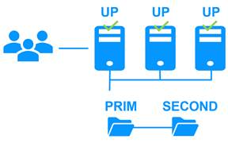
As a result, load balancing, file
replication and failover are managed coherently on the same servers.
1.4.2
The SafeKit active/active cluster with replication
Crossed
replication and mutual failover
In an active / active cluster with
replication, there are two servers and two mirror modules in mutual failover
(appli1.safe and appli2.safe). Each application server is backup of the other
server.
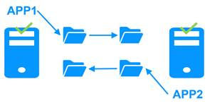
If one application server fails, both
applications will run on the same physical server. Once the failed server is
restarted, its application will return to its default primary server.
A mutual failover cluster is more
cost-effective than two separate mirror clusters, as it eliminates the need for
backup servers that remain idle most of the time, waiting for a primary server
to fail. However, in the event of a server failure, the remaining server must
be capable of handling the combined workload of both applications.
Note that:
·
Both applications, Appli1 and Appli2, must be
installed on each server to enable application failover.
·
This architecture is not limited to just two
applications; N application modules can be deployed across two servers.
·
Each mirror module will have its own virtual IP
address, its own replicated file directories, and its own restart scripts.
1.4.3
The SafeKit N-1 cluster
Replication and
application failover from N servers to 1
In an N-1 cluster, N mirror application
modules are deployed across N primary servers and a single backup server.
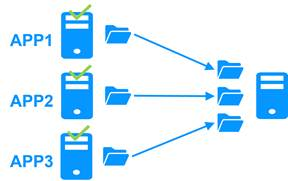
In the event of a failure, unlike in an
active/active cluster, the backup server does not need to manage a double
workload when a primary server fails. This assumes only one failure occurs at a
time. While the solution can support multiple primary server failures
simultaneously, in such cases, the single backup server will need to handle the
combined workload of all the failed servers. In a N-1 cluster, there are N
mirror application modules installed between N primary servers and one backup
server.
Note that:
·
All applications (Appli1, Appli2, Appli3) must
be installed on the single backup server to enable application failover.
·
Each mirror module will have its own virtual IP
address, its own replicated file directories, and its own restart scripts.
1.5
The SafeKit Hyper-V or KVM cluster
The Hyper-V or KVM cluster is an example of
an active-active cluster. Multiple applications can be hosted in various
virtual machines, which are replicated and restarted by SafeKit. Each virtual
machine is managed by SafeKit within its own mirror module.
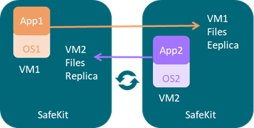
The solution has the following features:
·
Real-time synchronous replication of entire
virtual machines with failover capabilities.
·
A centralized, user-friendly SafeKit console for
managing all VMs, including the ability to migrate VMs between servers to
optimize load distribution.
·
A checker for each VM to detect if it has locked
up, crashed, or ceased to function, and to restart the VM if necessary.
·
An attractive solution that requires no
application integration.
·
A robust architecture suitable for
high-availability solutions that cannot be integrated at the application level.
A free trial of the Hyper-V cluster with
SafeKit is available here.
A free trial of the KVM cluster with SafeKit
is available here.
For a full description, refer to section 16.
SafeKit delivers high-availability clusters
with real-time replication and failover in Azure, AWS, and GCP through the
deployment of a mirror module.
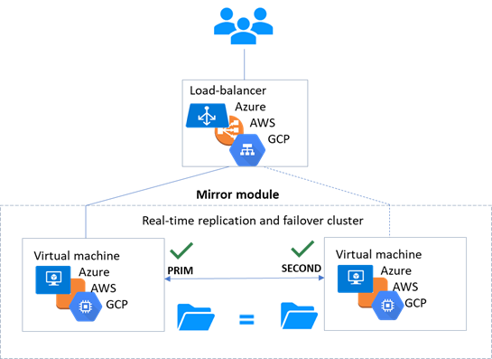
The mirror solution in the cloud is similar
to the on-premise one, except that the virtual IP address must be configured at
the load balancer level:
·
Virtual machines are placed in different availability
zones, which are in different subnets.
·
The critical application runs on the primary
server.
·
Users connect to a primary/secondary virtual IP
address managed by the cloud load balancer.
·
SafeKit provides a health check configured in
the load balancer. On the primary server, the health check returns OK to the
load balancer, while it returns nothing on the secondary server. Thus, all
requests to the virtual IP address are routed to the primary server.
·
If the primary server fails or is stopped, the
secondary server automatically becomes the primary one and returns OK to the
health check. Thus, all requests to the virtual IP address are rerouted to the
new primary server.
·
SafeKit monitors the critical application on the
primary server using SafeKit checkers.
·
SafeKit automatically restarts the critical
application in the event of software or hardware failure, thanks to restart
scripts.
·
SafeKit performs synchronous real-time
replication of files containing critical data.
For more information, refer to mirror cluster in Azure, mirror cluster in AWS or mirror cluster in GCP.
SafeKit delivers high-availability clusters
with network load balancing and failover in Azure, AWS, and GCP through the
deployment of a farm module.
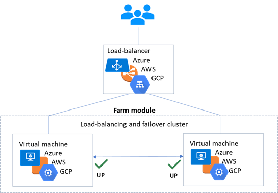
The farm solution in the cloud is similar
to the on-premise one, except that the virtual IP address must be configured at
the load balancer level:
·
Virtual machines are placed in different
availability zones, which are in different subnets.
·
The critical application runs on all servers.
·
Users are connected to a virtual IP address
managed by the cloud load balancer.
·
SafeKit provides a health check configured in
the load balancer. The health check returns OK on all servers running the
application.
·
If a server fails or is stopped, the checker
returns nothing to the load balancer, which then stops routing requests to that
server.
·
SafeKit monitors the critical application on all
servers using SafeKit checkers.
·
SafeKit automatically restarts the critical
application on a server when there is a software failure, thanks to restart
scripts.
For more information, refer to farm cluster in Azure, farm cluster in AWS or farm cluster in GCP.
Section 2.1 “SafeKit install”
Section 2.2 “Mirror installation recommendation”
Section 2.3 “Farm installation recommendation”
Section 2.4 “SafeKit upgrade”
Section 2.5 “SafeKit full uninstall”
Section 2.6 “SafeKit documentation”
2.1
SafeKit install
1. Connect to SafeKit product download area
2. Go to <SafeKit
8.2>/Platforms/<Your platform>/Current versions
3. Download the package
|
Windows
|
Two packages
are available:
·
safekit_windows_x86_64_8_2_x_y.msi
A
Windows Installer package. This package requires the Visual Studio 2022 C
Runtime to be pre-installed on the system.
·
safekit_windows_x86_64_8_2_x_y.exe
A
standalone executable bundle. It includes both the SafeKit package and the
required Visual Studio 2022 C Runtime, making it suitable for systems without
prior runtime installation.
Choose one or the
other package depending on whether the VS2022 C runtime is installed or not.
|
|
Linux
|
Two files are provided:
·
safekitlinux_x86_64_8_2_x_y.bin
A self-extractable file
containing the Linux packages and associated installation script.
·
safekitlinux_x86_64_8_2_x_y.sha256
A file containing
the SHA-256 checksum used to verify the integrity of the .bin
file.
|
|
You can verify the integrity of the
file with the command:
sha256sum
-c safekitlinux_x86_64_8_2_x_y.sha256
|
·
Key Id (e.g. 779244d710b22ada)
The long-format
identifier of the GPG public key used to sign SafeKit RPM packages starting
from version 8.2.5 for Red Hat. This signature ensures that users install a
verified, untampered package from Eviden.
|
|
You can verify that the RPM is properly
signed with SafeKit key using the command below. It
displays the Key ID of the signing key.
rpm
-qi SafeKit-8.2.5-x.el9.x86_64.rpm
…
Signature:
RSA/SHA256, …, Key ID 779244d710b22ada
…
|
|
SafeKit is installed in:
|
SAFE
|
·
in Windows
SAFE=C:\safekit
if %SYSTEMDRIVE%=C:
·
in Linux
SAFE=/opt/safekit
|
Minimum free disk space: 97MB
|
|
SAFEVAR
|
·
in Windows
SAFEVAR= C:\safekit\var
if %SYSTEMDRIVE%=C:
·
in Linux
SAFEVAR=/var/safekit
|
Minimum free disk space: 20MB + at
least 20MB (up to 3 GB) per module for dumps
|
2.1.3.1 Install on Windows as administrator
The SafeKit installation logs can be found
in SAFEVAR directory.
1. Log-in as administrator on Windows server
2. Locate the downloaded file safekit_windows_x86_64_8_2_x_y.msi (or safekit_windows_x86_64_8_2_x_y.exe)
3. Install in interactive mode by double-clicking it and go through the
installer wizard
Before
SafeKit 8.2.3, after installation, you need to run the firewall configuration
scripts (see section 10.3) and
initialize the SafeKit web service (see section 11.2.1.2).
Since
SafeKit 8.2.3, at the end of the SafeKit Setup, you will be asked to check or
uncheck " Set console credentials and firewall
rules now ".
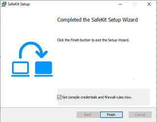
If the box is
checked, when clicking the “Finish” button:
o it configures Microsoft Windows Firewall for SafeKit. For details or other
firewalls, see section 10.3.
o it opens a window to enter the password for the admin user
of the SafeKit web console.
This step is
mandatory to initialize the default configuration of the web service that
requires authentication. It is initialized with the admin user and the
given password pwd, for instance. It then allows access to all
the web console's features, by logging in with admin/pwd, and run
distributed commands. For details, see section 11.2.1.
|
|
The password must be identical on all
nodes that belong to the same SafeKit cluster. Otherwise, web console and
distributed commands will fail with authentication errors.
|
or
3. Install in non-interactive mode, by executing:
msiexec /qn /i safekitwindows_8_2_x_y.msi
Then, the
firewall setup and web service initialization must be done.
This step is mandatory to enable communication between the nodes of
the SafeKit cluster and with the web console.
No action
required when firewall automatic configuration has been performed during the
package install. Otherwise see section 10.3.
2.1.3.1.3
Web service initialization
This step is mandatory to initialize the
default configuration of the web service, which is accessed by the web console
and the global safekit command. The web service requires authentication to
access the service. No action required when the web service initialization has
been performed during the package installation. Otherwise, see section 11.2.1.2.
2.1.3.1.4
Antivirus setup
This step is
necessary if the server's antivirus interferes with the operation of SafeKit.
Since this issue (described in section 7.22) may occur sporadically but not
systematically with Windows Defender, it is recommended to configure it to
prevent any malfunction.
Refer to section 10.6 for the list
of legitimate SafeKit directories and processes that should not be affected by
the antivirus.
2.1.3.2 Install on Linux as root
Since SafeKit 8.2.6, the SafeKit
installation logs are generated in /tmp/safekit directory.
2.1.3.2.1
SafeKit package install
1. Open a Shell console as root on Linux server
2. Go to the directory that contains the downloaded file safekitlinux_x86_64_8_2_x_y.bin
auto extractible
zip file
3. Run chmod +x safekitlinux_x86_64_8_2_x_y.bin
4. Run./safekitlinux_8_2_x86_64_x_y.bin
it
extracts the package and the safekitinstall script
5. Install in interactive mode by executing ./safekitinstall
During the installation:
·
Since SafeKit 8.2.5 on Red Hat, reply to “Do you accept to import this public key (yes|no)?”
SafeKit
RPM packages are now GPG-signed. By replying yes, the script will
automatically import the SafeKit GPG public key and will continue the
installation process. If you reply no, it will be interrupted.
|

|
The script displays the identifier of the
key (Key Id) used to sign the RPM package. You can check this value against
the official one published in the SafeKit product download area.
|
|
|
The public GPG key used to sign the RPM
package is extracted at the same time as the package into the file
named RPM-GPG-KEY-SafeKit. You can retrieve its Key Id with the command:
gpg
--show-keys --no-options RPM-GPG-KEY-SafeKit
(The Key Id corresponds to the last 16
characters of the pub line)
|
·
reply to “Do you accept that SafeKit automatically configure the local
firewall to open these ports (yes|no)?”
If you
answer yes, it configures firewalld
or iptable Linux firewall for SafeKit. For details or
other firewalls, see section 10.3.
·
reply to “Please enter a password or "no" if you want to set
it later”
This step
is mandatory to initialize the default configuration of the web service. The
web service requires authentication to access the service.
It initializes
it with the admin user and the given password pwd, for instance. It then allows access to all the web console's features, by
logging in with admin/pwd, and run distributed commands. For details, see section 11.2.1.
|
|
The password must be identical on all
nodes that belong to the same SafeKit cluster. Otherwise, web console and
distributed commands will fail with authentication errors.
|
or
5. Install in non-interactive mode, by executing:
./safekitinstall -q
Use the
option -passwd pwd for initializing the web service authentication (where pwd is the
password set for the admin user).
Then, the
firewall setup must be manually done.
|
|
Starting with SafeKit version 8.2.5, on
Red Hat, RPM packages are GPG-signed. Thus, the SafeKit GPG public key is
automatically imported to allow the installation to continue.
|
This step is
mandatory to enable communication between the nodes of the SafeKit cluster and
with the web console.
No action is
required when firewall automatic configuration has been performed during the
package installation. Otherwise see section 10.3.
2.1.3.2.3
Web service initialization
This step is mandatory to initialize the
default configuration of the web service, which is accessed by the web console
and the global safekit command. The web service requires authentication to
access the service. No action required when the web service initialization has
been performed during the package installation. Otherwise, see section 11.2.1.2.
2.1.3.2.4
Antivirus setup
This step is necessary if the server's
antivirus interferes with the operation of SafeKit (see section 7.22).
Refer to section 10.6 for the list
of legitimate SafeKit directories and processes that should not be affected by
the antivirus.
Once installed, the SafeKit cluster must be
defined. Then modules can be installed, configured, and administered. All these
actions can be done with the SafeKit console or the command line interface.
2.1.4.1 The SafeKit web console
1. Start a web browser (Microsoft Edge, Firefox,
or Chrome)
2. Connect it to the URL http://host:9010 (where host is the name or IP address of one of the SafeKit nodes)
3. In the login page, enter admin as user’s name and the password
you gave on initialization (e.g., pwd)
4. Once the console is loaded, the admin user can access
to Monitoring and
Configuration
in the navigation sidebar, as he has the default Admin role
For details see section 3.
2.1.4.2 The SafeKit command line interface
It is based on the single safekit
command located at the root of the SafeKit installation directory. Almost all safekit
commands can be applied locally or on a list of nodes in the SafeKit cluster.
This is called global or distributed command.
For details on the safekit command, see section 9.
To use the safekit command:
|
In Windows
|
1. Open a PowerShell console as administrator
2. Go to the root of the SafeKit installation directory SAFE (by
default SAFE=C:\safekit if %SYSTEMDRIVE%=C:)
cd c:\safekit
3. Run .\safekit.exe
<arguments> for the local command
4. Run
.\safekit.exe -H "<hosts>" <arguments> for the command distributed across
multiple nodes
|
|
In Linux
|
1. Open a Shell console as root
2. Go to the root of the SafeKit installation directory SAFE (by
default SAFE=/opt/safekit)
cd
/opt/safekit
3. Run ./safekit
<arguments> for the local command
4. Run
./safekit -H "<hosts>" <arguments> for the command distributed across
multiple nodes
|
For instance, to display
the levels (SafeKit, OS…):
·
for the local host
safekit
level
·
for all hosts configured in the SafeKit cluster
safekit
-H "*"
level
2.1.5
SafeKit license keys
License keys are
determined and verified based on the Operating System (Windows or Linux) and
the hostnames of machines (not the FQDN), as returned by the hostname
command in a Windows command prompt or a Linux shell. They are delivered in a
text file. Once the license key file is installed, there is no need for a
connection to a license server.
·
If you do not install any license key file, the
product will stop functioning every 3 days. However, it can be restarted for
another 3 days.
·
You can download a one-month trial key file here.
·
When a license key expires or is incorrect
(e.g., wrong OS or hostname), the system falls into the 3-day behavior.
·
After placing a purchase order, you obtain a
permanent key file. The permanent key file can be installed without
reinstalling or stopping the product.
·
The key file can contain keys for multiple
hostnames. SafeKit will detect the appropriate license for the correct
OS/hostname on each server.
·
Save the key file into the SAFE/conf/license.txt file (or any
other file in SAFE/conf) on each server.
·
If files in SAFE/conf contain more than one key file, the most favorable key will be
chosen.
·
Check the key conformance on each server with
the command SAFE/safekit level or with the SafeKit web console.
2.1.6
System specific procedures and characteristics
2.1.6.1 Windows
·
Apply a special procedure to properly stop
SafeKit modules at machine shutdown and to start safeadmin service at
boot: see section 10.4.
·
For network interfaces with teaming and with
SafeKit load balancing, it is necessary to uncheck "Vip" on physical
network interfaces of teaming and keep it checked only on teaming virtual
interface.
2.1.6.2 Linux
·
In Linux, the SafeKit package depends on other
system packages. Most of them are installed automatically, except those
specific to the implementation of load balancing in a farm and file replication
in a mirror.
·
For an updated list of required packages,
see the SafeKit Release Notes.
·
The user safekit and a group safekit
are created: all users belonging to the safekit group, and
the user root can execute SafeKit commands
·
In a farm module with load balancing on a
virtual IP address, the vip kernel module is compiled when the module is
configured. To compile successfully, Linux packages must be installed. See the SafeKit Release Notes for
an up-to-date list of the packages.
·
For a farm with SafeKit load balancing on a
bonding interface, no ARP should be set in the bonding configuration. Otherwise,
the association <virtual IP address, invisible virtual MAC address> is
broken in client ARP caches with physical MAC address of the bonding interface.
·
When Secure Boot is enabled and you are using a
farm module, follow the procedure described in section
10.5 to sign and enroll the
SafeKit kernel modules that implement load-balancing.
2.2
Mirror installation recommendation
·
2 servers with the same operating System
·
Supported OS
·
Disk drive with write-back cache recommended for
the performance of the IOs
·
1 physical IP address per server (ip 1.1 and ip
1.2)
·
If you need to set a virtual IP address (ip
1.10), both servers must be in the same IP network with the standard SafeKit
configuration (LAN or extended LAN between two remote computer rooms). For
setting a virtual IP address with servers in different IP networks, see section 13.6.3.
2.2.3
Application prerequisites
·
The application is installed and starts on both
servers
·
Application can be started and stopped using command
lines
·
On Linux, command lines like service
"service" start|stop or su -user "appli-cmd"
·
On Windows, command lines like net start|stop "service"
·
If necessary, application with a procedure to
recover after crash
·
Remove automatic application start at boot and
configure the boot start of the module instead
2.2.4
File replication prerequisites
·
File directories that will be replicated are
created on both servers
·
They are located at the same place on both
servers in the file tree
·
It is better to synchronize clocks of both
server for file replication (NTP protocol)
·
On Linux, align uids/gids on both servers for
owners of replicated directories/files
·
See also system specific procedures and
characteristics in section 2.1.6
2.3
Farm installation recommendation
·
At least 2 servers with the same operating
System
·
Supported OS
·
Linux: kernel compilation tools installed for
vip kernel module
2.3.2
Network prerequisites
·
1 physical IP address per server (ip 1.1, ip
1.2, ip 1.3)
·
If you need to set a virtual IP address (ip
1.20), servers must be in the same IP network with the standard SafeKit
configuration (same LAN or extended LAN between remote computer rooms). For
setting a virtual IP address with servers in different IP networks, see section 13.6.3.
·
See also system specific procedures and
characteristics in section 2.1.6
The same prerequisites as for a mirror
module described in section 2.2.3
2.4
SafeKit upgrade
If you encounter a problem with SafeKit,
see the Software Release Bulletin containing
the list of fixes on the product.
If you want to take advantage of some new
features, see the SafeKit Release Notes. This document also tells you if you are in the case of a major
upgrade (ex. 7.5 to 8.2) which requires a different procedure from the one
presented here.
The upgrade procedure consists in uninstalling
the old package and then installing the new package. All nodes in the same
cluster must be upgraded.
1. Note the state "on" or "off" of SafeKit services
and modules started automatically at boot safekit boot webstatus; safekit boot status
-m AM (where AM is the name of
the module) and in Windows: safekit boot snmpstatus;
|

|
The start at boot of the module can be
defined in its configuration file. If so, the use of the safekit boot command becomes unnecessary.
|
2. for a mirror module
note the server
in the ALONE or PRIM status to know which server holds the up-to-date replicated files
3. optionally, take snapshots of modules
Uninstalling/reinstalling
will reset logs and dumps of each module. If you want to keep this information
(logs and last 3 dumps and configurations), run the command safekit snapshot -m AM
/path/snapshot_xx.zip (replace AM by the
module name)
On Windows as administrator and on Linux as
root:
1. stop all modules using the command safekit shutdown
For a mirror in
the PRIM-SECOND status, stop first the SECOND server to avoid an unnecessary
failover
2. close all editors, file explorers, shells, or terminal under SAFE and SAFEVAR (to
avoid package uninstallation error)
3. uninstall SafeKit package
|
Windows
|
Use the Control Panel-Add/Remove
Programs applet
|
|
Linux
|
Use the command safekit uninstall
|
4. undo all configurations that you have done manually for the firewall
setup (see section 10.3)
Uninstalling SafeKit includes creating a
backup of the installed modules in SAFE/Application_Modules/backup, then
unconfiguring them.
1.
Install the new package as described in section 2.1
2. Check with the command safekit level the installed SafeKit version
and the validity of the license (which has not been uninstalled)
If you have a
problem with the new package and the old key, take a temporary license: see section 2.1.5
3. If you use the web console, clear the browser cache and refresh pages
in the web browser
4. Since SafeKit 8.2.1, previously configured modules are automatically
reconfigured on upgrade.
However, you may
still need to reconfigure module to apply any configuration changes coming with
the new version (see the SafeKit Release Notes). Reconfigure the module either with:
o the web console by navigating to “Configuration/Modules
configuration/
 Configure the module/”
Configure the module/”
o the web console by directly entering the URL http://host:9010/console/en/configuration/modules/AM/config/
o the command safekit
config -m AM
where AM is
the module name
5. If necessary, reconfigure
the automatic start of modules at boot
The start
at boot of the module can be defined in its configuration file. If so, skip
this step. Otherwise, run the command safekit boot -m AM on (replace AM by
the module name)
6. Restart the modules
|
Mirror module
|
The module must be started as
primary on the node with the updated replicated files (former PRIM or ALONE)
either with:
·
the web console by navigating to Monitoring/of
the node/Force start/As primary
·
the command safekit prim -m AM (replace AM by the module name)
Check that the application is
working properly once the module is in ALONE state, before
starting the other node.
On the other node (former SECOND),
the module must be started in secondary mode either with:
·
the web console by navigating to Monitoring/of the
node/Force start/As secondary
·
the command safekit second -m AM (replace AM by the module name)
Once this initial start has been
performed by selecting the primary and secondary nodes, subsequent starts can
be performed with:
·
the web console by navigating to Monitoring/ of the node/ of the node/ Start/ Start/
·
the command safekit start -m AM (replace AM by the module name)
|
|
Farm module
|
Start the module either with:
·
the web console by navigating to Monitoring/ of the module/Start/ of the module/Start/
·
the command safekit start -m AM (replace AM by the module name)
|
Furthermore, in cases where you have
modified the setup of the SafeKit web service, SNMP monitoring or SafeKit
notification agent:
1. the SafeKit web service safewebserver
·
If its automatic start at boot had been disabled,
disable it again with the command safekit boot weboff
·
If you had modified
configuration files and these have evolved in the new version, your
modifications are saved into SAFE/web/conf
before being overwritten by the new
version. Carrying over your old configuration to the new version may require
some adaptations. For details on the default setup and all predefined setups,
see section 11.
·
For HTTPS and login/password
configurations, certificates, and user.conf / group.conf generated for the previous release should
be compatible.
2. The SafeKit SNMP monitoring
·
In Windows, if its automatic start at boot had
been enabled, enable it again with the command safekit boot snmpon
·
If you had modified
configuration files and these have evolved in the new version, your
modifications are saved into SAFE/snmp/conf
before being overwritten by the new
version. Carrying over your old configuration to the new version may require
some adaptations. For details, see section 10.11.
3.
The SafeKit email notification agent
Since
SafeKit 8.2.4, SafeKit offers a notification agent to send emails for major
modules events. For details, see section 10.10.
If you
have enabled it, it will remain enabled after the upgrade. However, you may
need to reconfigure the SafeKit notification agent, as described in section 10.10.1, if its
configuration file has evolved between the two versions.
2.5
SafeKit full uninstall
For completely removing the SafeKit
package, follow the procedure described below.
1. Log-in as administrator on Windows server
2. stop all modules using the command safekit shutdown
3. close all editors, file explorers, shells, or cmd under SAFE and SAFEVAR (to
avoid package uninstallation error)
(SAFE=C:\safekit if %SYSTEMDRIVE%=C: ;
SAFEVAR=C:\safekit\var if %SYSTEMDRIVE%=C:)
4. uninstall SafeKit using the Control Panel-Add/Remove Programs applet
5. reboot the server
6. delete the folder SAFE
that is the installation directory of the previous
install of SafeKit
7. undo all configurations that you have done for SafeKit boot/shutdown
(see section 10.4)
8. undo all configurations that you have done for firewalls rules
setting (see section 10.3)
9. uninstall the SafeKit Web application if installed (see section
3.1.4.2)
10. since SafeKit 8.2.5, the following SafeKit drivers are uninstalled
but are no longer automatically removed from the Windows Driver Store:
·
viplwf (Virtual IP load balancer)
·
ndis6pckt (ARP rerouter)
·
rfsfilter (File replication filter)
If you
want to remove them from the Driver store, follow the procedure below:
a. make sure all related driver services are stopped by executing the
following commands:
net stop rfsfilter
net stop viplwf
net stop ndis6pckt
b. list all third-party driver packages installed in the Windows driver
store, using the command:
pnputil /enum-drivers
Example
output:
…
Published Name: oem4.inf
Original Name: ndis6pckt.inf
Provider Name: Evidian
Class Name: Network Protocol
…
Published Name: oem18.inf
Original Name: saferfs.inf
Provider Name: Evidian
Class Name: FS Replication filters
…
Published Name: oem5.inf
Original Name: viplwf.inf
Provider Name: Evidian
Class Name: Network Service
…
c. identify the ‘Published name’ (oemxx.inf)
corresponding to the SafeKit drivers
Look for
entries where the ‘Original Name’ matches the following: viplwf.inf, ndis6pckt.inf, and saferfs.inf.
d. delete each SafeKit driver using the following command:
pnputil /delete-driver oemxx.inf /uninstall
Replace oemxx.inf
with the actual name identified in step c.
1. open a Shell console as root on Linux server
2. stop all modules using the command safekit shutdown
3. close all editors, file explorers, shells, or terminal under SAFE and SAFEVAR (SAFE=/opt/safekit ; SAFEVAR=/var/safekit)
4. uninstall SafeKit using the safekit uninstall -all command and answer yes when prompted to delete all SafeKit folders
5. reboot the server
6. undo all configurations that you have done for firewalls rules
setting (see section 10.3)
7. delete the user/group created by the previous install (default is safekit/safekit)
with the commands:
userdel safekit
groupdel safekit
8. uninstall the SafeKit Web application if installed (see section
3.1.4.2)
2.6
SafeKit documentation
|
SafeKit
Solution
|
The SafeKit solution is fully
described.
|
|
SafeKit
Training
|
Refer to this online training for a
quick start in using SafeKit.
|
|
SafeKit
Release Notes
|
It presents:
·
latest install instructions
·
major changes
·
restrictions and known problems
·
migration instructions
|
|
Software
Release Bulletin
|
Bulletin listing SafeKit 8.2
packages, with descriptions of changes and fixed issues.
|
|
SafeKit
Knowledge Base
|
List of known SafeKit issues and
restrictions.
Other KBs are available on the Support
portal, but are only accessible to registered
users.
|
|
SafeKit
User's Guide
|
This is the guide. Please refer to the
guide corresponding to your SafeKit version number. It is delivered with the
SafeKit package and can be accessed via the web console under /User’s guide.
The link opposite takes you to the
latest version of this guide.
|
3. The SafeKit web console
Section 3.1 “Start the web console”
Section 3.2 “Configure the cluster”
Section
3.3 “Configure an application module”
Section 3.4 “Monitor an application module”
Section 3.5 “Snapshots or logs of application module for debug and support”
Section 3.6 “Secure access to the web console”
The SafeKit 8 web console and API have
evolved from earlier versions. As a result, the console delivered with SafeKit
8 can only administer SafeKit 8 servers, which cannot be administered with an
older console.
3.1
Start the web console
The web console permits to administer one
SafeKit cluster. A SafeKit cluster is a set of servers where SafeKit is
installed and running. All servers belonging to a given SafeKit cluster share
the same cluster configuration (list of servers and networks used) and
communicate with each other’s to have a global view of SafeKit modules
configurations. The same server can not belong to many SafeKit clusters.
The prerequisites for launching the console
are as follows:
·
The device (workstation, server, or mobile) must
have network access to the SafeKit server(s) and the necessary access
permissions.
·
Networks, firewalls, and proxies must be
configured to allow access to all SafeKit servers.
·
Supported browsers include Microsoft Edge,
Firefox, and Chrome.
Starting with version 5, the console is
also available as a Progressive Web App (PWA) on both desktop and mobile
devices (see section 3.1.4).
|
|
The console uses a separate versioning
system from the SafeKit package.
|
By default, access to the web console
requires the user to authenticate himself with a name and password. On SafeKit
install, you had to initialize it with the user admin and assign a
password. This admin name and password are sufficient to access all the console's
features. For more details on this configuration, see section 11.2.1.
1.
Start a web browser (Microsoft
Edge, Firefox, or Chrome)
2. Connect it to the URL http://host:9010 (where host is the name or
IP address of one of the SafeKit servers). If HTTPS is configured, there is an
automatic redirection to https://host:9453.
3. The SafeKit server to which the console is connected (host in
the URL) is called the connection node. This node acts as a proxy to
communicate on behalf of the console with all other SafeKit servers.
|

|
You can connect to any node of the
cluster since the console offer global view and actions. On connection error
with one node, connect to another node.
|
4. In the login page, enter admin as user’s name and the password
you gave on initialization (e.g., pwd).
5.
The SafeKit web console is loaded
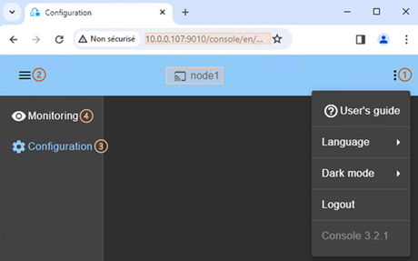
·
When the console is connected to a SafeKit
server on which the cluster is configured, the name of the node corresponding
to the server (as defined in the cluster configuration) is displayed in the
header. This is the connection node (node1 in the
example). If the cluster is not yet configured, no name is displayed.
·
Click on  to open the menu
to read the SafeKit User’s Guide, select the language, enable/disable the dark
mode and logout.
to open the menu
to read the SafeKit User’s Guide, select the language, enable/disable the dark
mode and logout.
·
Click on  to collapse or
expand the navigation sidebar.
to collapse or
expand the navigation sidebar.
·
Click on “Configuration” to
configure the cluster and the modules. Configuration is only authorized to
users that have Admin role. By default, the admin user has the
Admin role.
·
(4) Click on “Monitoring” to
monitor and control the configured modules. Monitoring is authorized to users
that have Admin, Control and Monitor roles. With Monitor role, actions on
modules (start, stop…) are prohibited.
|
|
The web console offers contextual help by
clicking on the icon.
|
The console offers the ability to easily
switch connection node, even if the node belongs to a different cluster.
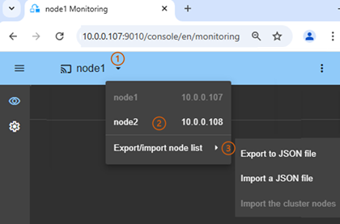
·
(1) Click onto display the list of
connection nodes.
By default, if the
cluster is configured, it lists all the nodes belonging to the cluster.
Otherwise, this menu is unavailable.
·
(2) For example, click on node2 to connect the
web console to node2. This is a shortcut for loading the web console from this
node, which becomes the connection node.
·
(3) Click on to open the submenu that allows
to:
o Export the list of connection nodes to a JSON file on your
workstation.
It contains the
names and addresses of the nodes in the list.
o Import the list of connection nodes from a JSON file on your
workstation.
Use the exported JSON
file as a template and define your own list of connection nodes. This can be
used if you wish to manage nodes belonging to different SafeKit clusters. You
can also define a cluster name to which the nodes belong.
o Import the cluster nodes
Use this option
to reset an imported list and restore the default list, which contains only the
nodes defined in the cluster of the node to which the console is connected.
3.1.4
Use the SafeKit web application
Starting with version 5 of the SafeKit
console, it is also available as a Progressive Web App (PWA) on both desktop
and mobile devices. Using the SafeKit web application offers several advantages:
·
User Experience
The console can be
launched directly from the home screen, start menu, etc. This provides a user
experience similar to that of a native application, especially on mobile
devices.
·
Real-time notifications
When enabled,
notifications allow users to receive immediate updates about module state changes.
o On mobile devices, notifications are available only through the
SafeKit web application. Additionally, HTTPS is required.
o On desktop platforms, notifications work in both the web application
and the browser. However, when accessed remotely, HTTPS is required; HTTP is
only allowed on localhost.
·
Enhanced security
The web
application benefits from isolation from browser tabs and uses the HTTPS
protocol along with service workers for improved protection.
To install the SafeKit web application, the
platform and browser used must support PWAs. This includes browsers such as
Chrome, Microsoft Edge, and Firefox. Once installed, the application becomes
standalone and has its own uninstallation process.
On desktop
1. Load the SafeKit web console in the web browser using the URL https://<host>:9453
2. Locate the installation icon in the browser’s address bar:
|
Microsoft Edge
|
It appears as a small icon next to
the URL
Or go to the menu Apps
|
|
Chrome
|
It appears as a small icon next to
the URL
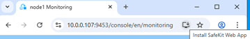
|
3. Click to install then confirm
The SafeKit console will then appear as a
standalone application, with its own icon in the Start menu, on the desktop, etc.
On mobile
1. Load the SafeKit web console in the web browser using the URL
https://<host>:9453
2.
If your mobile device and browser support PWAs,
look for the “Add” action
|
Chrome
(Android)
|
In the menu icon (⋮) in the top-right corner
|
3.
Select “Add to Home screen” then confirm
The
SafeKit console will be accessible from the home screen, just like a native
application.
3.1.4.2
Uninstall the web application
On most platforms, the web application is
uninstalled in the same way as other applications.
On some desktop operating systems, the
application can be uninstalled directly from the opened application by
accessing the menu located in the upper-right corner.
Each upgrade of the SafeKit package may
include a new version of the web console. To load this new version, it may be
necessary to clear the browser cache. You can do this using a keyboard shortcut:
1. Open the browser to any web page and hold CTRL and SHIFT
while tapping the DELETE key
2. A dialog box will open to clear the browser. Set
it to clear everything and click Clear Now or Delete at
the bottom
3. Close the browser, stop all background processes
that may be still running and re-open it fresh to reload the web console
Starting from version 5 of the SafeKit
console, it includes support for Progressive Web Application (PWA)
functionality. This enhancement introduces automatic update capabilities.
However, if the automatic update does not trigger, you can force it manually:
·
Either by clearing the browser cache, as
described above
·
Or by clicking the “Update”
button available in the menu located in the top-right corner. If a new version
is available, the console and its version will be updated accordingly.
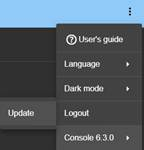
3.2
Configure the cluster
The SafeKit cluster must be defined before
installing, configuring, or starting a SafeKit module. A Safekit cluster is
defined by a set of networks and the addresses, on these networks, of a group
of SafeKit servers, named nodes. These nodes implement one or more modules. Each
server is not necessarily connected to all the networks, but at least one.
The cluster configuration is saved on the
servers’ side into the cluster.xml file (see section 12). For a correct behavior,
it is required to apply the same cluster configuration on all the nodes.
|
|
You must fully define the cluster
configuration before installing and configuring modules since the
modification of the cluster can affect the configuration or the execution of
installed modules.
|
The cluster configuration home page is
available:
·
Directly via the URL http://host:9010/console/en/configuration/cluster
Or
·
By navigating the console via “Configuration/Cluster configuration”
If the cluster is not yet configured, the
cluster configuration wizard is automatically
opened.
3.2.1
Cluster configuration
wizard
Open the configuration wizard:
·
Directly via the URL http://host:9010/console/en/configuration/cluster/config
Or
·
Navigate in the console via
“Configuration/Cluster
configuration/
 Configure
the cluster/”
Configure
the cluster/”
The cluster configuration wizard is a
step-by-step guided form:
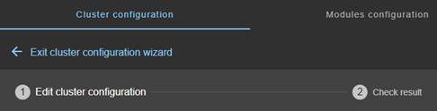
1.
“Edit cluster
configuration” described in section 3.2.1.1
2. “Check result” described in section 3.2.1.2
3. to “Exit
cluster configuration wizard”
3.2.1.1 Edit cluster configuration
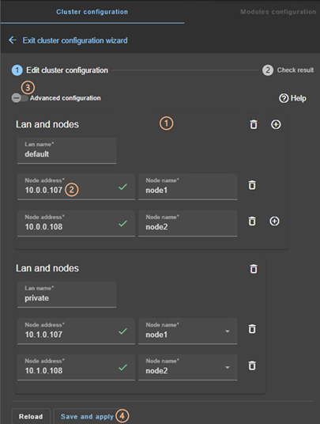
·
(1) Fill in the form to
first assign a user-friendly name for the network. This name is used for
configuring heartbeat networks used by a module.
Click on to add another node/lan or on to remove the node/lan from the
cluster.
|
|
When a node/lan is removed from the
cluster, all modules using it in its configuration may become unusable.
|
·
(2) Fill in the IP address of the node and then
press the Tab key to check the server connectivity and automatically insert the
server hostname.
The icon next to the address reflects the reachability of the node.
|
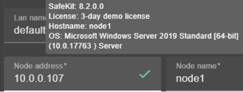
means that the SafeKit server is available. The tooltip gives
information on the server.
|
|
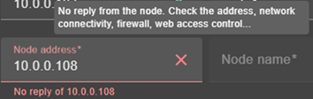
means that there was no reply from the server within the timeout
delay. Fix the problem to be able to administer this node. It may be a bad
address, a network or host failure, a bad configuration of the web browser or
the firewall, the stop of the SafeKit web service on the node. For solving
the problem, refer to the section 7.1.
|
·
Change the node name if necessary. This name is
the one that will be used by the SafeKit administration service for uniquely
identifying a SafeKit node. It is also the one displayed into the SafeKit web
console.
·
(3) If you prefer, click on “Advanced configuration” to
switch to XML cluster editing.
Click on  to open the SafeKit User’s
Guide on the configuration description in the cluster.xml file.
to open the SafeKit User’s
Guide on the configuration description in the cluster.xml file.
·
Click on “Reload” to discard your current modifications and reload the
original configuration.
·
(4) Once the edition is completed, click on “Save and Apply” to
save and apply the edited configuration to all nodes in the cluster.
|
|
If required, you can reapply the
configuration to all nodes without modifying it.
|
|
|
For examples of cluster configurations
with two networks refer to section 15.1.1; with three nodes refer to section 15.2.1.
|
3.2.1.2
Check result
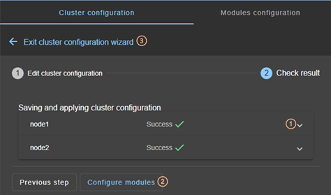
·
(1) Read the result of the operation on each
node:
o “Success” means
the configuration was successful.
o “Failure” means
the configuration has failed. Click to read the output of commands executed on
the node and search for the error. You may need to modify the parameters
entered or connect to the node to correct the problem. Once the error has been
corrected, “Save and apply” again.
·
(2) Click on “Configure
modules” to exit the cluster
configuration wizard and navigate to modules configuration.
Or
·
(3) Click on to “Exit the cluster
configuration wizard” and navigate to the cluster configuration home
page
3.2.2
Cluster configuration
home page
When the cluster is configured, the cluster
configuration home page is available.
Open it:
·
Directly via the URL http://host:9010/console/en/configuration/cluster
Or
·
By navigating the console via  “Configuration/Cluster configuration”
“Configuration/Cluster configuration”
In this example, the console is loaded from
10.0.0.107, which corresponds to node1 in the existing cluster. This is
the connection node.
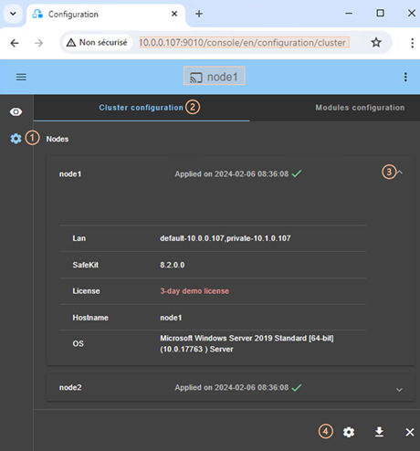
·
(1) Click on  “Configuration” in the
navigation sidebar
“Configuration” in the
navigation sidebar
·
(2) Click on “Cluster
configuration” tab
Nodes
configured in the cluster are listed with their configuration date.
·
(3) Click on to display
details about the node: networks name and addresses
defined in the cluster configuration, SafeKit version, license key, hostname,
OS.
·
(4) Click on one of the buttons:
o to
modify the cluster configuration and/or re-apply it. This opens the cluster
configuration wizard and loads the cluster configuration from the connection
node.
o  to
download the cluster configuration in XML format from the connection node.
to
download the cluster configuration in XML format from the connection node.
o to
unconfigure the cluster on one or more nodes
3.3
Configure an application module
Once the cluster has been set up, you can
configure a new module on the cluster. The module configuration home page is accessible:
·
Directly via the URL http://host:9010/console/en/configuration/modules
Or
·
By navigating the console via “Configuration/Modules configuration”
If no module
has been configured, the console automatically presents the page for
configuring a “New module”.
|

|
For module configuration examples refer
to section 15.
|
3.3.1
Select the new module to configure
In this example, the console is loaded from
10.0.0.107, which corresponds to node1 in the existing cluster. This is
the connection node.
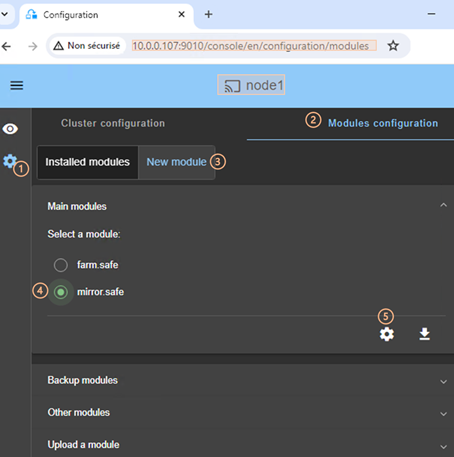
·
(1) Click on “Configuration” in the
navigation sidebar
·
(2) Click on “Modules
configuration” tab
·
(3) Click on “New
Module”
The page
proposes to select a new module among several proposals visible by clicking on :
o the “Main modules”, including the
generic mirror.safe (refer to section 15.1.2) and farm.safe
(refer to section 15.2.2) modules for
integrating a new application into a mirror or farm architecture.
Here are
the modules stored on the connection node, node1, under SAFE/Application_Modules/generic,
SAFE/Application_Modules/demo and
SAFE/Application_Modules/published.
o “Backup modules” archived on the connection node, which are saved
when a module is uninstalled on this node.
They are loaded
from node1 under SAFE/Application_Modules/backup.
o “Other modules” which are examples of SafeKit features used in
modules supplied for testing purposes only. Refer to section 15 for the
description some of them.
They are
loaded from node1 under SAFE/Application_Modules/other.
o A locally stored module accessible from “Upload
module”.
This
feature can be used to configure a module for a given application (e.g.,
Microsoft SQL Server, PostgreSQL…) downloaded from one of the SafeKit quick installation guides.
·
(4) Select a module to configure from those
listed above. In the example, mirror.safe.
·
(5) Click on the button Configure the new module.
·
A dialog opens to give the new module name
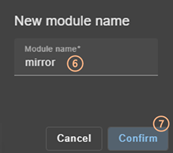
·
(6) Enter the name of the new module.
·
(7) Click on “Confirm”
The module configuration wizard is opened.
This is described below.
3.3.2
Module configuration wizard
The module configuration wizard is a
step-by-step guided form.:
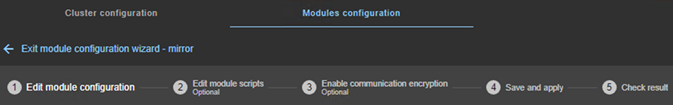
1. “Edit module configuration” described in section 3.3.2.1
2. “Edit module scripts (Optional)” described in section 3.3.2.2
3. “Enable communication encryption (Optional)” described in section 3.3.2.3
4. “Save and apply” described in section 3.3.2.4
5. “Check result” described in section 3.3.2.5
6. to “Exit
module configuration wizard”
Note that module reconfiguration can only
be applied to nodes on which the module in question is not started. Therefore,
stop the module before starting the configuration wizard.
|
|
If needed, you can reapply the module
configuration on all nodes without modifying it.
|
3.3.2.1
Edit module configuration
Below is an example of editing the mirror.safe module configuration.
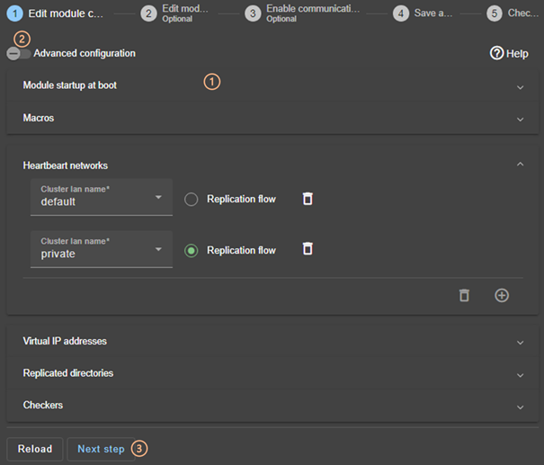
·
(1) Fill in the form to assign values to the
various components, add or remove them. Click on to
open the detailed panel for each component.
This form
is used to enter only the main module configuration parameters.
|

|
The names of the “Heartbeat networks” proposed are
the names of the lans entered during cluster configuration.
|
·
(2) For advanced module configuration,
exhaustive compared to the form, click on “Advanced
configuration”. This switches to editing the module configuration file
in XML format, userconfig.xml.
Click on to open the SafeKit User’s
Guide describing the configuration of the various components in the userconfig.xml file.
·
If necessary, click on “Reload” to discard your modifications and reload the
complete original configuration (including scripts if these were modified in
the next step).
·
(3) Once you have finished editing the module
configuration, click on “Next step”.
|
|
For examples of mirror module
configuration, refer to section 15.1.2 ; of farm module configuration,
refer to section 15.2.2.
|
3.3.2.2
Edit module scripts
Below is an example of editing the mirror.safe module scripts.
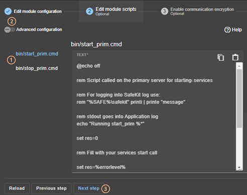
·
(1) Click on “start_prim”
or “stop_prim” to edit it and insert your application
start/stop.
Click on  to copy the content and edit it
with your favorite syntax editor. Once done, paste the modified content into
the input field with
to copy the content and edit it
with your favorite syntax editor. Once done, paste the modified content into
the input field with  .
.
·
(2) If necessary, click on “Advanced configuration” to list the other module’s
scripts and edit them (prestart, poststop, scripts for checkers…).
·
Click on to open
the SafeKit User’s Guide describing the module scripts.
·
If necessary, click on “Reload” to discard your modifications and reload the
complete original configuration (including the module configuration if it was
modified in the previous step).
·
(3) Once you have finished editing the module
scripts, click on “Next step”.
|
|
For examples of mirror module scripts,
refer to section 15.1.3 ; of farm
module scripts, refer to section 15.2.3.
|
3.3.2.3 Enable communication encryption
Encryption of internal module
communications between cluster nodes is enabled by default. For details, see section 10.7.
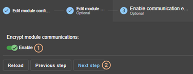
·
(1) Click “Enable” to enable or disable encryption of module
communications.
|
|
When the module's encryption key is not
identical on all nodes, internal communication is impossible. The
configuration must be reapplied to all nodes to propagate the same key.
|
To
generate new encryption keys, you need to:
1. disable encryption, then “Save and apply” configuration to all nodes
2. enable encryption, then “Save and apply” configuration to all nodes
·
If necessary, click on “Reload” to discard your modifications and reload the
complete original configuration (including the module configuration and scripts
if these were modified in the previous steps).
·
(2) Once this step is complete, click on “Next step”.
3.3.2.4
Save and apply
Step to select the
nodes affected by the configuration.
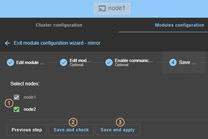
·
(1) Check/uncheck to select/unselect nodes.
Please note that the connection node (node1 in the example) is mandatory.
There are
2 cases where “Save and Apply” is disabled:
|
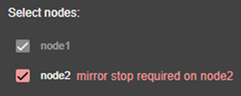
The module on the selected node is
started and, in a state, other than STOP (NotReady).
|
|
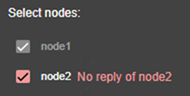
There was no reply from the node
within the timeout delay. It may be a bad address, a network or host failure,
a bad configuration of the web browser or the firewall, the stop of the
SafeKit web service on the node. For solving the problem, refer to the section
7.1.
|
In both
cases, uncheck the node or click on “Save and check” to apply it later, after stopping the module or
solving the communication problem.
·
(2) Click on “Save and
check” to save the edited configuration
on the connection node and check its consistency. It then proceeds to the next
step to display the result of this operation.
Once this
operation has been completed, any changes are saved on the connection node. The
configuration wizard can be closed and relaunched later to apply the saved
configuration. Until the saved configuration is applied, the last applied
configuration of the module remains active.
·
(3) Click on “Save and
apply” to save and apply the edited
configuration on selected nodes. It then proceeds to the next step to display
the result of this operation.
If this
operation is successful, the applied configuration becomes the active one for
the module.
|
|
On the server side, the module
configuration is saved under SAFE/modules/AM
(where AM is the module name). When
reconfiguring a module, this directory is deleted and overwritten with the
changes made in the console. Thus, on the servers’ side, you must close all
editors, file explorers, shells or cmd under SAFE/modules/AM before applying the configuration (otherwise there is a risk that
the apply fails).
|
3.3.2.5
Check result
The example below shows the result of the “Save and Apply” operation.
The layout for “Save and Verify” is similar.
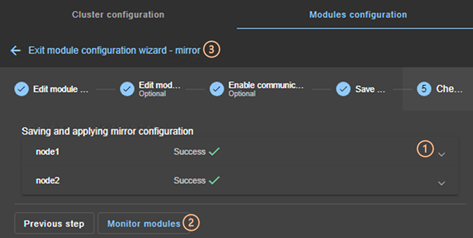
·
(1) Read the result of the operation on each
node:
o “Success” means
the operation was successful.
means
the operation was successful.
o “Failure” means
the operation has failed.
Click to
read the output of commands executed on the node and search for the error. You
may need to modify the parameters entered or connect to the node to correct the
problem. Once the error has been corrected, repeat the operation from the
previous step.
·
(2) Click on “Monitor
modules” to exit the module
configuration wizard and navigate to modules monitoring.
Or
·
(3) Click on  to “Exit the module configuration
wizard” and navigate to the modules configuration home page.
to “Exit the module configuration
wizard” and navigate to the modules configuration home page.
3.3.3
Modules configuration home page
Once the first module has been configured,
the module configuration home page is available. It allows you to view the
modules installed on the cluster and to access the configuration of a new
module.
Open it:
·
Directly via the URL http://host:9010/console/en/configuration/modules
Or
·
By navigating the console via “Configuration/Modules configuration”
|

|
Before each reconfiguration,
deconfiguration and uninstallation, on each node, close all editors, file
explorer, shells or cmd under SAFE/modules/AM (or risk the
operation failing).
|
In the following example, the console is
loaded from 10.0.0.107, which corresponds to node1 in the existing cluster. This is
the connection node.
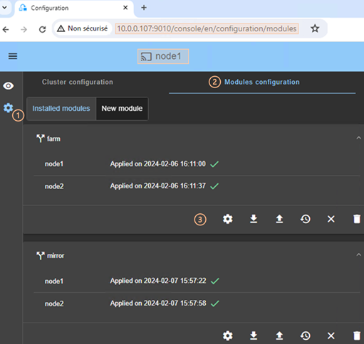
·
(1) Click on “Configuration” in the
navigation sidebar.
·
(2) Click on “Modules
configuration” tab.
·
Modules installed on the cluster are listed with
the date the configuration was applied and, if applicable, the date the
configuration was saved but not yet applied.
·
(3) Click on one of the buttons associated with
the module:
o  to
modify its configuration or reapply its current configuration. This opens the
module configuration wizard and loads its current configuration from the
connection node.
to
modify its configuration or reapply its current configuration. This opens the
module configuration wizard and loads its current configuration from the
connection node.
o to
download the .safe, consisting of all module files (userconfig.xml,
scripts) from the connection node.
o to
reconfigure the module from the contents of a locally stored .safe.
o to
restore a previous module configuration.
o SafeKit keeps a copy of the last three successful configurations
(stored under SAFE/modules/lastconfig on the server side). All module configuration files are packaged in
a .safe file, whose name is of the type of AM_<date>_<time> (where AM is the module name).
o  to
remove internal files for the module on one or more nodes, without uninstalling
it. The user configuration files are kept for later re-application.
to
remove internal files for the module on one or more nodes, without uninstalling
it. The user configuration files are kept for later re-application.
o  to
completely uninstall the module on one or more nodes.
to
completely uninstall the module on one or more nodes.
All module
configuration files are packaged in a .safe file, which is archived on the
server side under SAFE/Application_Modules/backup.
·
To configure a new module, click on “New module”
You may prefer to use your favorite editor
to modify the module’s configuration file and scripts or may need to add module
scripts, such as custom checkers.
Follow the procedure below to modifye the
module's configuration on your workstation and then apply it.
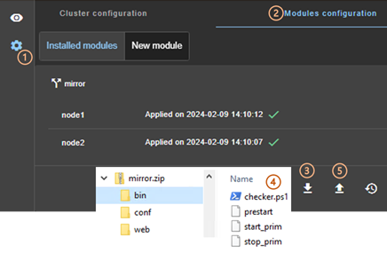
·
(1) Click on “Configuration” in the
navigation sidebar.
·
(2) Click on “Modules
configuration” tab.
·
(3) Click on to download the mirror.safe on your workstation.
·
(4) Extract the content of mirror.safe, that is a zip file, to edit userconfig.xml, add/delete/edit module scripts into the bin directory (add a
custom checker for instance).
·
(5) Compress the modified directory into xx.safe
(or xx.zip) then upload it with (.safe
and .zip extension are accepted).
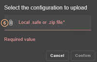
·
(6) Click on to select the
file to be uploaded then “Confirm”.
The module configuration wizard is launched
with the contents of this file. The new contents are visible into the wizard.
Got to step 4 to “Save and apply” this new
configuration.
3.4
Monitor an application module
Once a module is configured, you can
monitor its state and run actions on it (start, stop…).
The modules monitoring home page is
accessible:
·
Directly via http://host:9010/console/en/monitoring
Or
·
By navigating the console via “Monitoring”
|
In this example, the console is loaded
from 10.0.0.107, which corresponds to node1 in the existing cluster. This is
the connection node. Two modules are configured: farm and mirror.
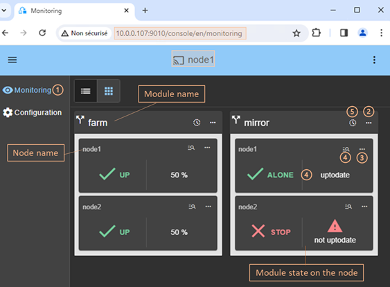
·
(1) Click on “Monitoring” in the
navigation sidebar
For
each installed module, it displays:
o the module name and nodes name on which it is installed
o the module state on the node
o a notification on state change if the user has allowed them, and
the URL is https or http://localhost
For a
description, see section 3.4.2.
·
(2) Click on to open the
menu of global actions (start, stop…) on the module that apply on all nodes (node1, node2 in
the example).
For a
description, see section 3.4.3.1.
·
(3) Click on to open menu of
actions (start, stop…) on the module that applies only to the node (node1 in
the example).
For a
description, see section 3.4.3.2.
·
(4) Click
on the node panel (mirror>node1 in the example) to open details for the
module on this node (logs, resources…). Since SafeKit 8.2.2, Click instead on to
open/close the details.
For a
description, see section 3.4.4.
·
(5) Click on to
open/close the module states timeline on all nodes where it is installed.
Available since SafeKit 8.2.2.
For a
description, see section 3.4.5.
|
3.4.2
Module state
The module is represented real-time display
of its synthetic and detailed states on the left and right panels.
3.4.2.1 Synthetic state
The console displays one of the following
synthetic states for the module on the node:
|
STOP (NotReady)(red) Module stopped (ready for starting)
|
|
 WAIT (Transient)(orange) Transient state of the module WAIT (Transient)(orange) Transient state of the module
|
|
ALONE (Transient)(orange) Transient state of a mirror module,
primary without secondary
|
|
 ALONE (Ready)(green) Stable state of a mirror module, primary
without secondary ALONE (Ready)(green) Stable state of a mirror module, primary
without secondary
|
|
 PRIM (Transient)(orange) Transient state of a mirror module,
primary with secondary PRIM (Transient)(orange) Transient state of a mirror module,
primary with secondary
|
|
PRIM (Ready)(green) Stable state of a mirror module, primary
with secondary
|
|
SECOND (Transient)(orange) Transient state of a mirror module,
secondary
with primary, during the synchronization of
replicated directories
|
|
SECOND (Ready)(green) Stable state of a mirror module, secondary
with primary
|
|
UP (Transient)(orange) Transient state of a farm module
|
|
UP (Ready)(green) Stable state of a farm module
|
|
WAIT (NotReady) (red) Blocked
state of the module, waiting for one or more resources
|
|
NOT
CONFIGURED (grey) Installed module
but not configured
|
|
ERROR (red) The node did not
respond within the given time limit.
This may be due to an incorrect
address, a network or server failure, a misconfigured web browser or
firewall, or the SafeKit web service being stopped on the node (see section 7.1). It may also be due to the temporary
unavailability of the connection node. In this case, reload the console from
another SafeKit node.
|
For details on state changes of a mirror
module, see section 5.2.
For details on state changes of a farm
module, see section 6.2.
3.4.2.2
Detailed state
It is the state of the main resources or
failover rules.
|
uptodate Replicated
directories of the mirror module are uptodate
|
|
 Replicated directories of the mirror module are not uptodate Replicated directories of the mirror module are not uptodate
not
uptodate
|
|
The mirror module is in degraded mode described in section 7.7
degraded
|
|
50%, 100% The
network load share of the farm module (e.g. 50% or 100%
with 2 nodes)
|
|
No load share taken by the farm module
0%
|
|
The module applied the failover rule (e.g., the rule named
c_checkfile c_checkfile) which triggers the actions restart, stop, stopstart, or
wait on the module due to a resource going down. View
section 13.19.4.2 for
details on failover rules. To analyze the issue, read the logs and resource
statuses as described below.
|
|
The module is in state ERROR (red)
connection The
node did not respond within the given time
limit
error
|
3.4.3
Module control menus
3.4.3.1
Global menu
The actions of global menu apply to all
nodes where the module is configured.
In the example below, actions apply to the module mirror on node1 and node2.
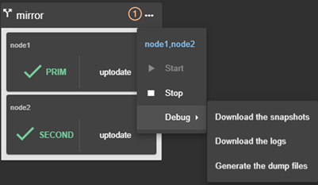
·
(1) Click on to open the
module's global actions menu.
·
Click on “Start”
to start the module on all nodes.
For
mirror module, the node with the up-to-date replicated data is started as
primary.
·
Click on “Stop”
to stop the module on all nodes.
For
mirror module, the node that is secondary is stopped first to avoid unnecessary
failover.
·
Click on “Debug”
for debug and support as described in section 3.5.
3.4.3.2
Local menu
The actions of local menu apply only to the
selected node.
3.4.3.2.1
Control a mirror module
In the example below, actions apply to the module mirror on node1.
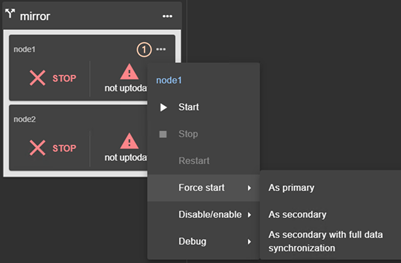
·
(1) Click on to open module's
local actions menu on the desired node (e.g. node1).
·
Click on “Start”
to start the module on the node.
For
mirror module, the node is started as primary when replicated data are up to date.
Otherwise, it is started as secondary. For details, see section 5.5.
·
Click on “Stop”
to stop the module on the node.
·
Click on “Restart”
to restart the module on the node.
It only
executes only stop then start scripts to locally restart the application
without leading to a failover.
·
Use “Force start” submenu when you need to decide if the node should
start primary or secondary:
o Select “Force start As Primary” to force the module to start as primary on this node.
For
instance, on the 1st start of a mirror module as described in section 5.3, you must “Force
start As primary” the node which has the
up-to-date replicated folders.
o Select “Force Start As secondary” to force the module to start as secondary on this
node.
Data
synchronization can be optimized based on the module's last internal state.
o Select “Force Start As secondary with full
data synchronization” to start the
module on this node as a secondary and to force a complete copy of the
replicated data.
·
Click on “Disable/enable”
to control error detection as described in section 3.4.3.2.3.
·
Click on “Debug” to download module logs or snapshots from this node
rather than from all nodes as described in section 3.5.
To understand and check the correct
behavior of a mirror module, see section 5. To test it, see section 4.
3.4.3.2.2
Control farm module
In the example below, actions apply to the module farm on node2.
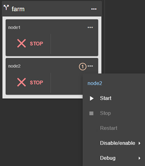
·
(1) Click on to open
module's local actions menu on the desired node (e.g. node2).
·
Click on “Start”
to start the module on the node.
·
Click on “Stop”
to stop the module on the node.
·
Click on “Restart”
to restart the module on the node.
It only
executes only stop then start scripts to restart the application without
leading to a failover.
·
Click on “Disable/enable”
to control error detection as described in section 3.4.3.2.3.
·
Click on “Debug” to download module logs or snapshots from this node
rather than from all nodes as described in section 3.5.
To understand and check the correct
behavior of a farm module, see section 6. To continue the
tests, see section 4.
3.4.3.2.3
Control checkers or processes/services
monitoring
To avoid false error
detection and automatic failover on application maintenance, you can disable
configured checkers (TCP, ping, custom….) or processes/services monitoring.
Once the maintenance is completed, they can be safely re-enabled. These actions
can be applied while the module is started/stopped and are not reset when the
module stops-starts.
In the example below, actions apply to the module mirror on node1.
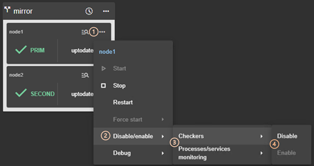
·
(1) Click on to open the
module's local actions menu on the desired node (e.g. node1).
·
(2) Click on “Disable/enable” to open the submenu.
·
(3) Click on “Checkers”
or “Processes/services monitoring” to open the
submenu.
·
(4) Click on “Disable”
to disable the error detection
This
disables all checkers (TCP, ping,
custom….) or processes/services monitoring configured
for the module.
·
(4) Click on “Enable”
to re-enable error detection by checkers or processes/services monitoring.
3.4.4
Module details
You can display details for a module on one
node:
·
Directly via the URL
http://host:9010/console/en/monitoring/modules/AM/nodes/node (replace AM by the module name and node by the node name)
Or
·
By navigating the console via “Monitoring/Click on for the module>node”
The selected module>node is highlighted
with a blue color.
In the example, the detail for the module mirror on node1 is
displayed.
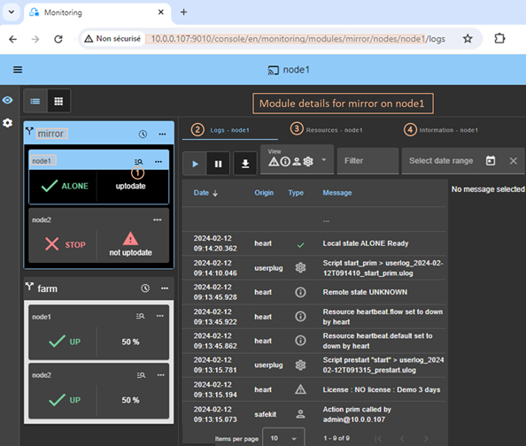
·
Click on to
open/close details for the module on this node (logs, resources…).
·
Click on “Logs” tab to visualize the module logs.
·
Click on “Resources” tab to visualize the module resources.
·
Click on “Information” tab to visualize information on the node: networks name and addresses defined in the cluster
configuration, SafeKit version, license key, hostname, OS.
3.4.4.1
Module logs
You can display logs of a module on one
node:
·
Directly via the URL
http://host:9010/console/en/monitoring/modules/AM/nodes/node/logs (replace AM by the module name and node by the node name)
Or
·
By navigating the console via “Monitoring/Click on the module>node/Logs tab”
The left panel displays in real-time the non-verbose
module log for the selected module>node.
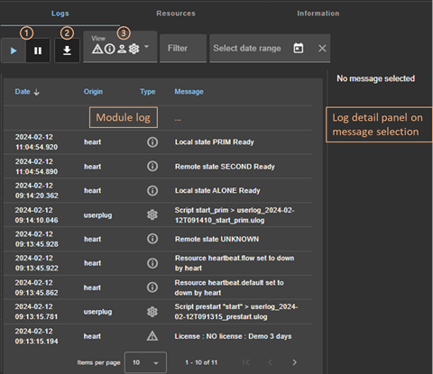
·
Click on  to
resume/suspend the view in real time of the module log.
to
resume/suspend the view in real time of the module log.
Refer to section 7 for an explanation of main messages.
·
Click on to download the
module log (verbose or not verbose).
·
Select the message type to view:
|
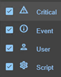
|
·
C(ritical) messages such as error detection
·
E(vent) messages such as local and remote
states
·
U(ser) messages when the user run action on
the module
·
S(cript) messages when module scripts are
executed
|
·
Click on a message to display the verbose module
log or the script log (output of scripts) into the log detail into the right
panel.
3.4.4.1.1
Script log
To display the script log, click on the S(cript) message whose output
you want to view.
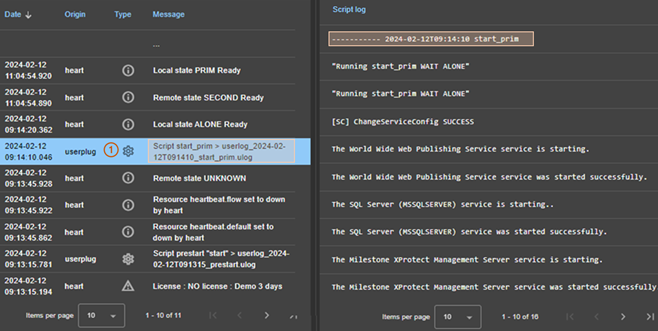
·
(1) Click the S(cript) message
consisting of:
o the date and time of the execution of the script
o the name of the script executed
o the name of the name of the corresponding userlog
file
The userlog file content
is displayed into the right panel. In the example, it is the content of the
file SAFEVAR/modules/AM/userlog_2024-02-12T091410_start_prim.ulog
(where AM is the module name)
3.4.4.1.2
Verbose log
To display the verbose module log, click on
a message other than S(cript).
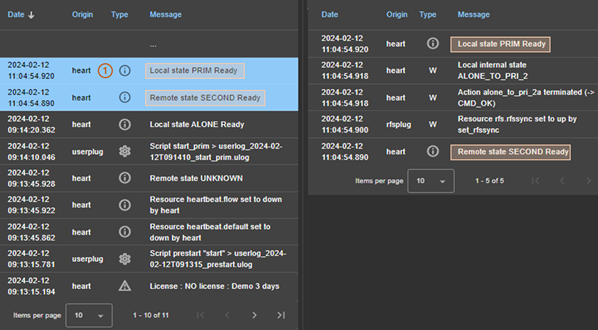
·
(1) Click the message consisting of:
o the date and time of the event
o the module message
·
All verbose messages between the selected
message and the previous one in the table are displayed in the right-hand
panel.
3.4.4.2
Module resources
You can display resources of a module on
one node:
·
Directly via the URL http://host:9010/console/en/monitoring/modules/AM/nodes/node/resources (replace AM by the module name and node by the node name)
Or
·
By navigating the console via “Monitoring/Click on the module>node/Resources tab”
3.4.4.2.1
Ressources state
The left panel displays in real-time the
current state of the resources for the selected module>node.
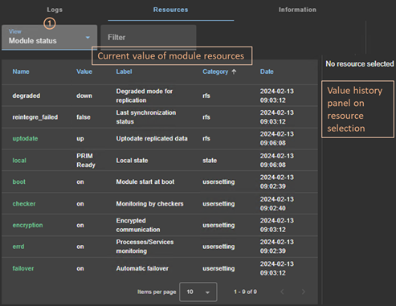
·
(1) Select the group of resources to view:
|
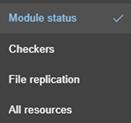
|
·
Module status
Main resources,
especially the ones of files replication for a mirror module
·
Checkers
Ressources set by
checkers
·
File replication
File
replication-specific resources that demonstrate synchronization progress
·
All resources
|
·
Click on a resource to display its value over
time in the right panel. This history may be empty for some resources
(unassigned or cleaned).
Resource’s state is controlled by the
failover machine to trigger a failover on failures (see section 13.19).
3.4.4.2.2
Resource’s state value history
To display a resource's value history,
click on the resource you're interested in.
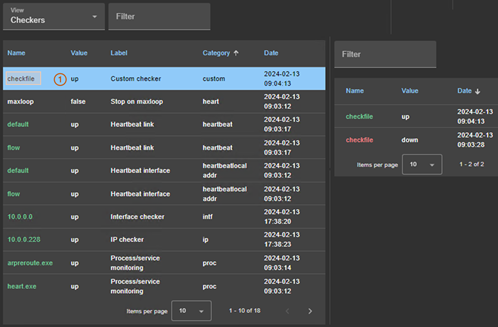
·
(1) Click on the line consisting of:
o the last date the resource was assigned
o the name and category of the resource. The full resource name is
like category.name (custom.checkfile
in the example).
The history of resource values is displayed
in the right panel. In the example, this is the custom.checkfile
resource corresponding to a resource assigned by a custom checker.
3.4.5
Module states timeline
Since SafeKit 8.2.2, you can display the module
states timeline:
·
By navigating the console via “Monitoring/Click on  for the module”
for the module”
This provides a global view of the module's
state on the cluster. Be aware:
·
that the clocks of the two nodes must be
synchronized for the mapping of state changes to be meaningful
·
it displays a reverse timeline of the module
states on all nodes over time, by starting by the newest date.
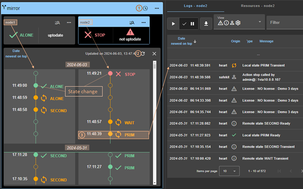
·
Click on to
open/close the timeline. The timeline displayed is the one available at the
time of loading.
·
Click on to
refresh the timeline with the latest state changes.
·
Click on a state change event to display the
module log for the node starting at this date
3.5
Snapshots or logs of application module for debug
and support
When the problem is not easily
identifiable, it is recommended to download logs or snapshots of the module on
all nodes as described below. Snapshots allow an offline and in-depth analysis
of the module and node status as described in section 7.18. If this
analysis fails, create an incident via the Support portal, making sure to attach
the snapshots.
In the following example, the module mirror is
configured on node1 and node2. Note
that a snapshot can be downloaded in any state of the module.
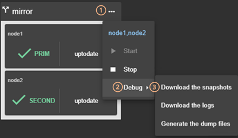
·
(1) Click on to open the global
menu of the module.
·
(2) Click on “Debug” to open the debug submenu.
·
(3) Click on “Download
the snapshots” to create and download the snapshot of the module for
each node.
The web console
relies on the web browser's download settings to save the snapshot on the
workstation. Some browsers may ask confirmation to download many files and zip
files.
The snapshot
generation command generates a new dump and creates a .zip file containing the
last 3 dumps and the last 3 module configurations.
In this example,
it downloads 2 snapshots: snapshot_node1_mirror.zip and snapshot_node2_mirror.zip.
·
Click on “Download the
logs” to download the module log (verbose or not) for each node.
·
In case of file replication issues, click on “Generate the dump files” at
the time the problem occurs.
The dump contains the module logs and
information on the system and SafeKit state at the time of the dump. It is
generated on the server side into SAFEVAR/snapshot/modules/AM/dump_AAAA_MM_DD_hh_mm_ss.
|
|
Since SafeKit 8.2.4, the zips generated
for snapshots are protected by the password safekit. This
allows the snapshot to be received in its entirety when sent via email.
|
3.6
Secure access to the web console
SafeKit offers
different security policies for the web console that are implemented by
modifying the SafeKit web service configuration. These configurations also
offer role management:
|
Admin
role

|
This role grants all administrative
rights by allowing access to
Configuration
and  Monitoring
in the navigation sidebar Monitoring
in the navigation sidebar
|
|
Control
role
|
This role grants monitoring and
control rights by allowing access only to  Monitoring in the navigation sidebar Monitoring in the navigation sidebar
|
|
Monitor
role
|
This role grants only monitoring
rights, prohibiting actions on modules (start, stop…) in Monitoring
in the navigation sidebar.
|
SafeKit provides different setups for the web service to enhance the security
of the SafeKit web console. The predefined setups are listed below from least
secure to most secure:
·
HTTP. Same role for all users without
authentication
This
solution can only be implemented only in HTTP and is not compatible with user
authentication methods. It is intended to be used for troubleshooting only.
·
HTTP/HTTPS with user authentication based on
Apache files and optional role management
It relies
on Apache files to store username/password for authenticating users and,
optionally, to store the associated role for restricting their access. To
connect to the console, the user must enter the username and password as
configured with the Apache mechanisms.
This is the
default active configuration, applied for HTTP and initialized with a single admin user
with the Admin role. The default setup can be extended to add users or to
switch to HTTPS.
·
HTTP/HTTPS with user authentication based on
LDAP/AD authentication. Optional role management
It relies on
LDAP/AD authentication server to authenticate users and, optionally, restricts
their access based on roles. To connect to the console, the user must enter the
username and password as configured into the LDAP/AD server. It supports HTTP
or HTTPS.
·
HTTPS with user authentication based on OpenID
Connect authentication. Optional role management
It relies on
OpenID Identity Provider server to authenticate users and, optionally,
restricts their access based on roles. To connect to the console, the user must
enter the username and password as configured into the Identity Provider
server. Since SafeKit 8.2.3, it supports only HTTPS.
To implement them, refer to the section 11.
Section 4.1 “Installation and tests after boot”
Section 4.2 “Tests of a mirror module”
Section 4.3 “Tests of a farm module”
Section 4.4 “Tests of checkers common to mirror and farm”
The
following tests help to better understand how SafeKit works and ensure that the
deployed solution returns the expected results. They can be used as a basis for
the acceptance testing at a client's site.
Subsequently, analysis of test results may
require consulting the module log, the scripts log (which contains the output
of module scripts) and the state of module resources. To read these logs and
resources, see section 7.4.
4.1
Installation and tests after boot
Replace below node1 by the node
name and AM by the module name.
·
safekit -p executed on the nodes returns among other values, the value of SAFE, the
SafeKit root installation path, and SAFEVAR, the SafeKit working directory:
o in Windows
SAFE=C:\safekit if %SYSTEMDRIVE%=C:
SAFEVAR=C:\safekit\var
o in Linux
SAFE="/opt/safekit"
SAFEVAR="/var/safekit"
For details, see
section 10.1.
·
Editing userconfig.xml of
a mirror(/farm) module and its scripts start_prim/start_both, stop_prim/stop_both is made with:
o
the web console at /console/en/configuration/modules/AM/config
o under the directory SAFE/modules/AM on the node1
·
Module log and scripts log (that contains module scripts output) for the module on one node
may be analyzed with:
o the web console at /console/en/monitoring/modules/AM/nodes/node1/logs
o the command executed on node1
safekit logview -m AM
for the module log
o
on node1, into files SAFEVAR/modules/AM/userlog_<year>_<month>_<day>T<time>_<script
name>.ulog for the scripts logs (output messages of
the scripts)
4.1.2
Test license and version
safekit
level returns:
Host:
<hostname>
OS: <OS version>
SafeKit: <SafeKit version>
License: Demo (No license)| Invalid Product | Invalid Host | … Expiration… |
<license id> for <hostname>…
or License: Expired license
·
"Demo (No license)"
means no license
into SAFE/conf/; the product stops every 3 days
·
"Invalid Product"
means an expired
license in SAFE/conf/license.txt
·
"Invalid Host"
means no valid
hostname in SAFE/conf/license.txt
·
" …Expiration…"
means a temporary
key
·
"<license id> for
<hostname>"
means a permanent
license
Click here to get a
temporary key of one month for any OS or any hostname.
Click here to get a permanent key based on
the hostname and OS.
In Windows, see also section
10.4.
Test safeadmin service
safeadmin service must be automatically
started at boot. To check its state:
|
Windows
|
1. Open a PowerShell console as administrator
2. Run Get-Service
-name safeadmin
Status
Name DisplayName
------
---- -----------
Running
safeadmin safeadmin
|
|
Linux
|
1. Open a Shell console as root
2. Run systemctl
status safeadmin
Redirecting
to /bin/systemctl status safeadmin.service
●
safeadmin.service - The SafeKit Administration Daemon
Loaded: loaded (/usr/lib/systemd/system/safeadmin.service; enabled; vendor
preset: disabled)
Active: active (running) since Tue 2024-11-12 17:30:56 CET; 20h ago
…
|
When safeadmin service is
not running, all safekit commands fail and return for example:
safekit
level
Waiting
for safeadmin ..........
Error: safeadmin administrator daemon not running
Refer to section
9.1.1, for starting safeadmin
service.
Test safewebserver service
By default, safewebserver
service must be automatically started at boot. To check its state:
|
Windows
|
1. Open a PowerShell console as administrator
2. Run Get-Service
-name safewebserver
Status
Name DisplayName
------
---- -----------
Running
safewebserver safewebserver
|
|
Linux
|
1. Open a Shell console as root
2. Run systemctl
status safewebserver
systemctl
status safewebserver
Redirecting
to /bin/systemctl status safewebserver.service
●
safewebserver.service - SafeKit Apache Server
Loaded: loaded (/usr/lib/systemd/system/safewebserver.service; enabled;
vendor preset: disabled)
Active:
active (running) since Wed 2024-11-13 11:01:31 CET; 2h 58min ago …
|
When safewebserver service is not running, the following
features are unavailable:
·
the SafeKit web console that displays:
·
the module checker
·
the distributed command line interface that
returns for example:
safekit -H "*" level
----------------
Server=https://10.0.0.107:9453 ----------------
curl: (7)
Failed to connect to 10.0.0.107 port 9453 after 1022 ms: Couldn't connect to
server
----------------
Server=https://10.0.0.108:9453 ----------------
curl: (28)
Failed to connect to 10.0.0.108 port 9453 after 21024 ms: Couldn't connect to
server
Refer to section 9.1.2, for starting
safewebserver service.
Test SNMP service
SNMP monitoring is not enabled by default.
Refer to section 10.11, to enable
it.
In Windows, it relies on Net-SNMP Agent service. In Linux, it relies on the standard snmpd
service. To check its state:
|
Windows
|
1. Open a PowerShell console as administrator
2. Run Get-Service
-name "Net-SNMP
Agent"
Status
Name DisplayName
------
---- -----------
Running Net-SNMP
Agent Net-SNMP Agent
|
|
Linux
|
1. Open a Shell console as root
2. Run systemctl
status snmpd
systemctl
status snmpd
Redirecting
to /bin/systemctl status snmpd.service
●
snmpd.service - …
Active:
active (running) since Wed 2024-11-13 11:01:31 CET; 2h 58min ago
…
|
When the service is not running, the SNMP
monitoring is unavailable.
Refer to section 9.1.4, for starting the service.
Test application modules
·
safekit boot
status displays start-up ("on") or not
("off") of modules at boot
·
safekit state displays state of all configured modules: STOP (mirror or
farm), WAIT (mirror or farm), ALONE (mirror), PRIM (mirror), SECOND (mirror), UP (farm)
·
check processes of a module: see section 10.2.
To list the
processes of the AM module, execute:
safekit -r processtree list all AM
This
command returns all processes with AM in arguments.
·
safekit module
listid displays name of installed modules with their
ids: id of a module must be the same on all servers
For details on the web console, refer to section 3.
·
connect a web browser to http://host:9010
·
the web console home page is displayed
4.2
Tests of a mirror module
On the first
start of the module after its configuration:
·
message in the logs of both servers (to read
logs, see section 7.4)
"Action start called by
admin@<IP>via<IP>/SYSTEM/root"
·
the module goes to state WAIT (NotReady)and
WAIT (NotReady)on
both servers with in the log
"Action wait from failover rule
rfs_notuptodate_server"
"Data may be not uptodate for replicated directories (wait for the start
of the remote server)"
"If you are sure that this server has valid data, run
safekit stop, then safekit prim to force start as primary"
For the first start of a mirror module with
replicated directories, the user must force the start as primary the node with
the uptodate data. Refer to section 5.3.
4.2.2
Test start of a mirror module on 2 servers STOP (NotReady)
For subsequent starts:
·
message in the logs of both servers (to read
logs, see section 7.4)
"Action start called by
admin@<IP>via<IP>/SYSTEM/root"
·
the module goes to the stable state PRIM (Ready)and
SECOND (Ready)on
both servers with in the first log
"Remote state SECOND
Ready"
"Local state PRIM Ready "
·
and in the other log
"Local state SECOND Ready "
"Remote state PRIM Ready "
·
application is started in the start_prim
script of the module on the PRIM server with message in the log
"Script start_prim"
On the stopping node:
·
message in the log of the stopped node (to read
logs, see section 7.4)
"Action stop called by
admin@<IP>/SYSTEM/root"
·
the stopped node runs the stop_prim
script of the module which stops the application on the server with message in
the log:
"Script stop_prim"
·
the module becomes STOP (NotReady)
with messages in the log:
"Local state STOP
NotReady"
On the other node:
·
the node runs a failover with the message in the
log:
"Action alone called by heart: remote
stop"
·
the application is started with the start_prim
script with the message in the log:
"Script start_prim"
·
the module becomes ALONE (Ready)
with the message in the log:
"Local
state ALONE Ready"
Start the module on a node while
the other node is  ALONE (Ready).
ALONE (Ready).
·
message in the log of the starting module (to
read logs, see section 7.4)
"Action start called by
admin@<IP>/SYSTEM/root"
·
the STOP (NotReady) module becomes SECOND (Ready)
·
the module ALONE (Ready)
becomes PRIM (Ready)
and continues to execute the application
·
message in the log of the server where the
restart command is passed (to read logs, see section 7.4)
"Action restart
called by admin@<IP>/SYSTEM/root"
·
the PRIM module becomes PRIM (Transient) and then becomes PRIM (Ready)
·
the scripts of the module stop_prim/start_prim are executed on the PRIM and restarts locally the
application on the server with messages in the log:
"Script stop_prim"
"Script start_prim"
·
the other module on the other server stays SECOND (Ready)
4.2.6
Test virtual IP address of a mirror module
The test below uses the arp
command specific to IPv4. For an IPv6 VIP or issues with VIP ↔ MAC resolution, see section 7.24.
|
Mirror
module in the state PRIM (Ready)
on node1 and SECOND (Ready)
on node2.
userconfig.xml:
<vip>
<interface_list>
<interface check="on">
<real_interface>
<virtual_addr addr="virtip"
where="one_side_alias"
check="on"/>
</real_interface>
</interface>
</interface_list>
</vip>
1. On an external workstation (or server) in the same LAN, ping both
physical IP addresses + virtual IP address:
ping node1_ip_address
ping node2_ip_address
ping virtip
arp -a
2. safekit stopstart -m AM on the primary server (where AM is the
module name)
3. On the external workstation (or server)
ping
node1_ip_address
ping node2_ip_address
ping virtip
arp -a
Note: redo the ping to virtip
before looking at the ARP table because the entry may be marked obsolete and
refreshes only after ping
|
1. On node1, ipconfig
/all (Windows) or ip addr
show (Linux) returns virtip as
an alias on the network interface.
On the external workstation (or server), the 3 pings respond.
On the external workstation (or server) in the same LAN, virtip is
mapped to the same MAC address as node1_ip_address
arp -a
node1_ip_address 00-0c-29-0a-5c-fc
node2_ip_address 00-0c-29-26-44-93
virtip 00-0c-29-0a-5c-fc
2. After the stopstart, SECOND (Ready)
on node1 server and PRIM (Ready)
on node2 server
In the verbose log of new primary, message:
"Virtual IP <virtip
of mirror> set"
3. On node2, ipconfig
/all (Windows) or ip addr show (Linux) returns virtip as an alias
on the network interface
On the external workstation (or server), the 3 pings respond.
On the external workstation (or server), virtip is mapped to
the same MAC address as node2_ip_address
arp -a
node1_ip_address 00-0c-29-0a-5c-fc
node2_ip_address 00-0c-29-26-44-93
virtip 00-0c-29-26-44-93
|
4.2.7
Test file replication of a mirror module
|
Mirror module in the state PRIM (Ready)
on node1 server and SECOND (Ready)
on node2 server.
userconfig.xml in Windows:
<rfs>
<replicated dir="c:\replicated" mode="read_only"
/>
</rfs>
userconfig.xml in Linux:
<rfs>
<replicated dir="/replicated" mode="read_only" />
</rfs>
1. On the server PRIM (Ready),
go to /replicated and create a file file1.txt
2. On the server SECOND (Ready),
go to /replicated and try to delete file1.txt
3. Stop the server PRIM (Ready)
and wait for STOP (NotReady). Then go to the other server which is ALONE (Ready)
and create a new file file2.txt
4. Restart the server STOP (NotReady) and wait for SECOND (Ready).
|
1. file1.txt has been replicated on
SECOND (Ready)
under /replicated
2. Failure because the /replicated directory is read-only on the
server
SECOND (Ready)
3. file2.txt is not replicated in /replicated of the server STOP (NotReady)
4. file2.txt is reintegrated on the restarted server. During the
phase of reintegration, the server is SECOND (Transient)
In the log of reintegrated Linux server, message:
"Updating
directory tree from /replicated_For_SafeKit_Replication"
In the log of reintegrated Windows
server, message:
"Updating
directory tree from c:\replicated"
And at the end of /replicated
reintegration, if at least 1 file with modified data has been reintegrated
from primary server to secondary server, message
"Copied
<reintegration statistics>"
"Reintegration
ended (synchronize)"
This message gives statistics for
the reintegrated directory: reintegrated size, number of files, time, and
throughput on the network in KB/sec.
Note: reintegrate a file larger than 100 MB to have reliable statistics
At the end of reintegration, the server is SECOND (Ready).
|
4.2.8
Test shutdown of the server  PRIM (Ready)
PRIM (Ready)
·
on Windows, check that the special procedure to
stop modules at shutdown has been applied. Refer to section
10.4.
·
make a shutdown of the server PRIM (Ready)
·
check in the log of server SECOND (Ready),
message
"Action alone called by heart: no heartbeat"
·
the server SECOND (Ready)
becomes ALONE (Ready);
application in the start_prim script of the module is started on the ALONE server with the
message in the log
"Script start_prim"
·
on timeout in the SafeKit console, the old
server PRIM (Ready)
becomes ERROR (connection error)
·
after reboot of the stopped server, check that
the OS shutdown has really called a shutdown of the module
"Action shutdown called by SYSTEM/root"
·
Check that the application stop_prim
script has been executed with the message
"Script stop_prim"
·
And check that the module has been completely
stopped before shutting down the server with the last message
"Local
state STOP NotReady"
·
after reboot of stopped server, if the module is
started automatically at boot (safekit
boot status), message in the log
"Action start called at boot time"
·
after a start of the module on the stopped
server, the module becomes
SECOND (Ready) on
this server and PRIM (Ready) on
the other server
In the event of a power outage, the module
is not stopped properly as it would be during a server shutdown. Failover is
triggered by the loss of heartbeats rather than by detecting the module stop.
|
userconfig.xml with
2 heartbeats:
<heart>
<heartbeat name="default" />
<heartbeat name="private"
ident="flow" />
</heart>
Note: If you want to make a test
with double simultaneous electrical fault on both servers, check that <rfs
async="none"> is set in userconfig.xml. For more information, see section 13.7.3.
|
·
in the log of the server
SECOND (Ready),
message
"Resource heartbeat.default set to down by heart"
"Resource heartbeat.flow set to down by heart"
"Remote state UNKNOWN"
"Action alone called by heart: no heartbeat"
·
messages appear within 30 seconds after the
power-off (if no specified timeout configured for <heart>)
·
the server SECOND (Ready)
becomes ALONE (Ready);
the application in the start_prim script of the module is restarted on the ALONE server with
the message in its log
"Script start_prim"
·
on SafeKit console timeout, the former server PRIM (Ready)
becomes ERROR (connection error)
·
after reboot of stopped server, if the module
is started automatically at boot (safekit boot status), message in the
log
"Action start called at boot time"
·
after restart of the module on the stopped
server, the module becomes SECOND (Ready)
on this server and PRIM (Ready)
on the other server
|
4.2.10 Test split-brain with a mirror module
Split-brain occurs in situation of network
isolation between two SafeKit servers. Each server becomes primary ALONE and
runs the application. At return of split-brain, a sacrifice must be made by
shutting down the application on one of the two servers.
|
Mirror
module in the state PRIM (Ready)
and SECOND (Ready)
userconfig.xml:
<heart>
<heartbeat name="default" />
<heartbeat name="repli" ident="flow" />
</heart>
+
on Windows to manage the IP conflict on
the virtual IP address virtip
<vip>
<interface_list>
<interface check="on" arpreroute="on">
<real_interface>
<virtual_addr
addr="192.168.1.10"
where="one_side_alias"/>
</real_interface>
</interface>
</interface_list>
</vip>
To obtain the split-brain, check that
there are no checkers in userconfig.xml that can detect the network isolation: no <interface
check="on">, no <ping> checker
1. disconnect at the same time, networks default and repli
2. reconnect networks
|
1. After network isolation of both servers, all heartbeats are lost.
In the logs of both servers,
"Resource heartbeat.default set to down by heart"
"Resource heartbeat.flow set to down by heart"
"Remote state UNKNOWN"
"Local state ALONE Ready "
Split-brain
case: both servers are
ALONE (Ready)
and run the application.
2. When reconnecting networks, sacrifice of one ALONE
server: the former SECOND server
Log of the
former PRIM not sacrificed:
"Remote state ALONE Ready"
"Split brain recovery: staying alone"
Log of the
former SECOND sacrificed:
"Remote state ALONE Ready"
"Split brain recovery: exiting alone"
"Script stop_prim"
The
server performs a stopstart: stop of the application with stop_prim then reintegration of
replicated files from the other server.
In
Windows, upon reconnection, a conflict may occur with the virtual IP address,
leading to the stop-start of the module.
3. Come back to the stable state PRIM (Ready)
and SECOND (Ready)
on both servers as it was before split-brain
Note: situation of split-brain in a
mirror module with file replication is not good. Indeed, the sacrifice of the
former secondary server causes file reintegration of this server from the
primary one and the loss of data stored on the secondary during the split-brain
situation.
For this reason, 2 heartbeats on two
physically separate networks are recommended. Typically, a cable between the
two servers will allow (1) to avoid split-brain with an additional heartbeat
network and (2) set the replication flow on a separate network
|
4.2.11
Continue your mirror module tests with checkers
Go to section 4.4 for tests of checkers.
4.3
Tests of a farm module
4.3.1
Test start of a farm module on all servers STOP (NotReady)
·
message in the logs of all servers (to read
logs, see section 7.4)
"Action start called by
admin@<IP>/SYSTEM/root"
·
the module goes to UP (Ready) on
all servers
·
the application is started in the start_both
script of the module on all servers with the message in the log
"Script
start_both"
·
message in the log of the stopped server (to
read logs, see section 7.4)
"Action stop called by
admin@<IP>/SYSTEM/root"
·
the stopped module runs the stop_both
script which stops the application on this server and with message in the log
"Script stop_both"
·
the stopped module becomes  STOP (NotReady)
with messages in the log:
STOP (NotReady)
with messages in the log:
"Local state STOP NotReady"
·
the other servers stay UP (Ready)
and continue to run the application
·
restart the module STOP (NotReady)
with the start command
·
message in the log of the module where the
restart command is passed (to read logs, see section 7.4)
"Action restart called by
admin@<IP>/SYSTEM/root"
·
the restarted module becomes UP (Transient) then becomes UP (Ready)
·
the module scripts stop_both/start_both
are executed on the server to locally restart the application with messages in
the log
"Script stop_both"
"Script start_both"
4.3.4
Test virtual IP address of a farm module
The tests below use the arp
command specific to IPv4. For an IPv6 VIP or issues with VIP ↔ MAC resolution, see section 7.24.
|
Farm module in the UP (Ready)
state on 2 servers node1 and node2
userconfig.xml with load balancing on the safewebserver
service (TCP port 9010):
<farm>
<lan name="default" />
</farm>
<vip>
<interface_list>
<interface check="on">
<virtual_interface type="vmac_directed">
<virtual_addr addr="virtip" where="alias"
check="on"/>
</virtual_interface>
</interface>
</interface_list>
<loadbalancing_list>
<group name="FarmProto">
<rule port="9010" proto="tcp"
filter="on_port"/>
</group>
</loadbalancing_list>
</vip>
On a remote workstation (or
server) in the same LAN, ping of the 2 physical IP addresses + virtual IP +
arp -a
|
·
In the verbose log of all servers:
"Virtual IP <virtip of farm> set"
·
On the 2 servers, ipconfig /all (Windows) or ip addr
show (Linux) returns virtip
as an alias on the network interface.
·
On a remote workstation (or server), the pings
respond, and ip1.20 is mapped with the MAC address of one of the 2 servers:
ping
node1_ip_address
ping
node2_ip_address
ping
virtip
arp -a
node1_ip_address 00-0c-29-0a-5c-fc
node2_ip_address 00-0c-29-26-44-93
virtip 00-0c-29-26-44-93
|
4.3.4.2 Configuration with vmac_invisible
|
Farm
module in the UP (Ready)
state on 2 servers node1 and node2
userconfig.xml with load balancing on the safewebserver
service (TCP port 9010):
<farm>
<lan name="default" />
</farm>
<vip>
<interface_list>
<interface check="on">
<virtual_interface type="vmac_invisible" >
<virtual_addr addr="virtip" where="alias"
check="on"/>
</virtual_interface>
</interface>
</interface_list>
<loadbalancing_list>
<group name="FarmProto">
<rule port="9010" proto="tcp"
filter="on_port"/>
</group>
</loadbalancing_list>
</vip>
On a remote workstation (or
server) in the same LAN, ping of the 2 physical IP addresses + virtual IP +
arp -a
|
·
In the verbose log of all servers:
"Virtual IP <virtip of farm> set"
·
On the 2 servers, ipconfig /all (Windows) or ip addr
show (Linux) returns virtip
as an alias on the network interface.
·
On a remote workstation (or server), the pings
respond. And virtip is mapped with the invisible virtual MAC address:
ping node1_ip_address
ping node2_ip_address
ping virtip
arp -a
node1_ip_address 00-0c-29-0a-5c-fc
node2_ip_address 00-0c-29-26-44-93
virtip 5a-fe-c0-a8-38-14
·
Note: by default, the virtual MAC address is a
unicast Ethernet address built with 5A:FE (SAFE) and the virtual IP address
in hexadecimal
|
4.3.5
Test TCP load balancing on a virtual IP address
|
Farm
module in the state
 UP (Ready)
on the 2 servers node1, node2. UP (Ready)
on the 2 servers node1, node2.
Same load balancing configuration
in userconfig.xml as the previous test.
On a remote workstation:
1. Connect a browser to http://virtip:9010/safekit/mosaic.html,
then fill the module name and on Mosaic Test.
node1, node2 respond
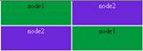
2. safekit stop -m AM on node2 (where AM is the module name). Reload the
URL: node1 responds
Special command to check the load
balancing bitmap for port 9010 on each node UP (Ready):
safekit
-r vip_if_ctrl -l
An entry in the bitmap of 256 bits
must be 1 on a single server.
Furthermore, the 256 bits are
fairly distributed in the bitmaps of all servers UP (Ready)
(if no definition of power inside userconfig.xml)
|
1. UP (Ready)
on the 2 servers: load balancing of TCP sessions between node1, node2 when
loading the URL
o
In the resources of the module, for node1 and
node2: FarmProto_0
50%
o
In the verbose logs of node1 and node2:
"farm membership: node1 node2 (group FarmProto_0)"
"farm load: 128/256 (group FarmProto_0)"
128/256: 128 bits on 256 are managed by each server
o
safekit -r vip_if_ctrl
-l on node1 and node2.
With type="vmac_directed"
Bitmap node1: 01010101:01010101:01010101:01010101:ffffffff:ffffffff:ffffffff:ffffffff
Bitmap node2:
ffffffff:ffffffff:ffffffff:ffffffff:02020202:02020202:02020202:02020202
01 and 02 corresponds to the node numbers that reply.
With type="vmac_invisible"
Bitmap node1:
00000000:00000000:00000000:00000000:ffffffff:ffffffff:ffffffff:ffffffff
Bitmap node2:
ffffffff:ffffffff:ffffffff:ffffffff:00000000:00000000:00000000:0000000
Bits are fairly distributed
between both servers
2. STOP (NotReady) on node2: TCP sessions served only by node1 when loading the URL
o
In the resources of the module, for node1: FarmProto_0 100%
o
In the verbose log of node1:
"farm membership: node1 (group FarmProto_0)"
"farm load: 256/256 (group FarmProto_0)"
256/256: all the bits are managed
by node1
o
safekit -r vip_if_ctrl
-l on node1:
Bitmap:
ffffffff:ffffffff:ffffffff:ffffffff:ffffffff:ffffffff:ffffffff:ffffffff
All the bits are managed by node 1
|
4.3.6
Test split-brain with a farm module
Split-brain occurs in case of network
isolation between SafeKit servers.
|
Farm
module is UP (Ready)
on the servers node1 and node2.
Same configuration of load
balancing in userconfig.xml as the previous test. To get the split-brain, check in userconfig.xml that there are no checkers that can detect isolation: no <interface
check="on"> or <ping>
checker
On the external workstation:
1. Connect a browser to http://virtip:9010/safekit/mosaic.html,
then click on Mosaic Test. node1 and node2
respond
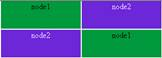
2. disconnect the network between node1 and node2. Depending on the
location where the external console is, node 1 responds or node 2
or
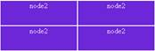
3. reconnect the network and connect to URL
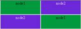
Same special command as in the
previous test to check the load balancing bitmap for port 9010 on each node UP (Ready)
|
1. before split-brain, state UP (Ready) on
node1 and node2:
o
In the resources of the module, for node1 and
node2: FarmProto_0
50%
o
In the verbose logs of node1 and node2:
"farm membership: node1 node2 (group FarmProto_0)"
"farm load: 128/256 (group FarmProto_0)"
128/256: 128 bits on 256 are managed by each server.
o
safekit -r vip_if_ctrl
-l on node1 and node2:
With type="vmac_directed"
Bitmap node1: 01010101:01010101:01010101:01010101:ffffffff:ffffffff:ffffffff:ffffffff
Bitmap node2:
ffffffff:ffffffff:ffffffff:ffffffff:02020202:02020202:02020202:02020202
01 and 02 corresponds to the node numbers that reply.
With type="vmac_invisible"
Bitmap node1:
00000000:00000000:00000000:00000000:ffffffff:ffffffff:ffffffff:ffffffff
Bitmap node2:
ffffffff:ffffffff:ffffffff:ffffffff:00000000:00000000:00000000:0000000
Bits are fairly distributed
between both servers
2. after isolation of servers, split-brain:
o
In the resources of the module, for node1 and
node2: FarmProto_0
100%
o
In the verbose log of node1:
"farm membership: node1 (group FarmProto_0)"
"farm load: 256/256 (group FarmProto_0)"
256/256: all the bits are managed by node1
o
In the verbose log of node2:
"farm membership: node2 (group
FarmProto_0)"
"farm load: 256/256 (group FarmProto_0)"
256/256: all the bits are managed by node2
o
safekit -r vip_if_ctrl
-l on node1 and node2:
Bitmap:
ffffffff:ffffffff:ffffffff:ffffffff:ffffffff:ffffffff:ffffffff:ffffffff
3. after split-brain when network is reconnected, the same messages
can be found in the log and the same bitmaps as those before split-brain.
Note: the default behavior of farm
in situation of split-brain is good. The recommendation is to put in userconfig.xml a monitoring network <lan> </lan> where the
virtual IP address is.
The messages in the log and the
result of vip_if_ctrl are slightly different depending on the type vmac_directed or vmac_invisible.
|
4.3.7
Test compatibility of the network with invisible
MAC address (vmac_invisible)
|
Network
prerequisite
A unicast MAC Ethernet address
5a-fe-xx-xx-xx-xx is associated with the virtual IP address virtip of
a farm module. It is never presented by SafeKit servers as source Ethernet
address (invisible MAC). Switches cannot locate this address. When they
follow a packet to the destination MAC address 5a-fe-xx-xx-xx-xx, they must
broadcast the packet on all ports of the LAN or VLAN where the virtual IP
address is (flooding). All servers in the farm therefore receive packets
destined to the virtual MAC address 5a-fe-xx-xx-xx-xx.
Note that this prerequisite does
not exist for a mirror module (see section 4.2.6)
Server
prerequisite
The packets are captured by
Ethernet cards set in promiscuous mode by SafeKit. And the packets are
filtered by the module kernel <vip> according to the load balancing
bitmap. To make a test, you need network monitor tool.
Network monitoring on Windows 2003
(CD2):
1. install "Network Monitor Tools" in "Management and
Monitoring Tools" (capture only packets in source or destination of the
server)
2. Start / Network Monitor then Capture Filter / Address Pairs /
virtip then Capture / Start then "Stop and View" at the end of
capture
Network monitoring on Linux:
1.
tcpdump host
virtip
capture all network
packets
|
1. all servers are  UP (Ready) UP (Ready)
2. the network monitoring is started on each server with a filter on virtip
3. an external workstation sends a single ping to the virtual IP
address with ping -n
(or -c) 1 virtip
o
1 packet sent and received by all servers
"ICMP: Echo: From extip To virtip"
o
there must be as
many packets
"ICMP: Echo Reply: To extip From
virtip"
as there are
servers  UP (Ready) UP (Ready)
4. if it is not the case, check if options restrict the "port flooding"
in switches and prevent the broadcast of "ICMP: Echo" to all
servers
5. be careful: the "port flooding" restriction in switches
can occur after a certain number of flooding (time, number of KB flooded):
the ping test must be repeated during several hours by creating flooding to
the virtual IP address
6. Note: to avoid network monitoring tools, an external Linux console
can be used. The Linux ping prints duplicate packets coming from the 2
servers  UP (Ready): UP (Ready):
ping virtip
64 bytes from ip1.20 icmp_seq=1
64 bytes from ip1.20 icmp_seq=1 (DUP!)
64 bytes from ip1.20 icmp_seq=2
64 bytes from ip1.20 icmp_seq=2 (DUP!)...
This test may be carried out for
several minutes by storing the output of the ping in a file and then ensuring
that there was (DUP!) all the time: date > /tmp/ping.txt ; ping virtip >> /tmp/ping.txt
|
4.3.8
Test shutdown of a server UP (Ready)
·
on Windows, check that the special procedure to
stop modules at shutdown has been performed. Refer to section
10.4.
·
make a shutdown of a UP (Ready)
server
·
the other servers stay UP (Ready)
and continue to run the application
·
on timeout in the SafeKit console, the old
server UP (Ready)
becomes ERROR (connection error)
·
after reboot, check that shutdown of the OS has
called a shutdown of the module
"Action shutdown called by SYSTEM"
·
Check that the stop_both script
which stops the application has been executed with the message
"Script stop_both"
·
And check that the module has been completely
stopped before stopping the server with the last message
"Local
state STOP NotReady"
·
after reboot of the stopped server, if the
module is started automatically at boot (safekit boot status),
message in the log
"Action start called at boot time"
·
after start-up of the module on the stopped
server, the module becomes UP (Ready)
and it executes the start_both script which restarts the application on this server with the
message in the log
"Script
start_both"
In the event of a power outage, the module
is not stopped properly as it would be during a server shutdown. Failover is
triggered by the loss of heartbeats rather than by detecting the module stop.
·
the other servers stay UP (Ready)
and continue to run the application
·
on timeout in the SafeKit console, the old
server UP (Ready)
becomes ERROR (connection error)
·
after reboot of the stopped server, if the
module is started automatically at boot (safekit boot status),
message in the log
"Action start called at boot time"
·
after start-up of the module on the stopped
server, the module becomes
UP (Ready)
and it executes the start_both script which restarts the application on this server with the
message in the log
"Script
start_both"
Go to section 4.4 for tests of checkers.
4.4
Tests of checkers common to mirror and farm
4.4.1
Test <errd> checker with action restart or
stopstart
For a description of process/service
monitoring, refer to section 13.10.
|
In userconfig.xml:
<errd>
<proc name="appli.exe"
atleast="1" action="restart" class="prim"/>
</errd>
The checker monitors the process
named appli.exe.
·
name="appli.exe"
atleast="1": at least one process appli.exe must run
·
class
o
class="prim" for mirror module
checker started/stopped on the server in state PRIM or ALONE (Ready), after/before the application (start_prim/stop_prim)
o
class="both" for farm module
checker started/stopped on all servers UP (Ready)
after after/before the application (start_both/stop_both)
·
action
If appli.exe is not
running, the checker set the resource proc.appli.exe to down. Then, it
executes a restart or stopstart.
o
action="restart"
it restarts locally the application (stop_xx; start_xx)
o
action="stopstart"
it stops the module, as well as the application, and then
automatically starts it
|
1. Kill of process appli.exe on the server in (Ready)
state. That is in states PRIM or ALONE for a mirror module, UP for a farm module.
o
messages in the log:
"Process appli.exe not running"
"Action restart|stopstart called by errd"
o
the module becomes (Transient),
respectively in state PRIM, ALONE or UP
o
in the restart case, the
module becomes (Ready),
respectively in state PRIM, ALONE or
UP
o
in the stopstart case, the
module becomes (Ready),
respectively in state SECOND, ALONE or
UP
message in the log:
"Action start called automatically"
Note: a stopstart on  PRIM (Ready) causes
a failover PRIM (Ready) causes
a failover
2. Repeat the test on the same server if it still runs the
application (i.e., (Ready) in state ALONE, PRIM or UP).
By default, on the
4th error detection within 24 hours (see maxloop and loop_interval described in section 13.3.3), the module becomes STOP (NotReady). In the log, message before stopping:
"Action stop called by maxloop"
|
4.4.2
Test <tcp> checker with action restart or
stopstart
For a description of TCP checker, refer to section 13.12.
|
In userconfig.xml:
<check>
<tcp ident="id" when="prim"
action="restart" >
<to addr="addr" port="port"/>
</tcp>
</chek>
The checker checks that the
application responds to connection requests.
·
addr="addr"
port="port"
test TCP
connections on addr:port
·
when
o
when="prim" for mirror module
checker started/stopped on the server in state PRIM or ALONE (Ready), after/before the application (start_prim/stop_prim)
o
when="both" for farm module
checker started/stopped on all servers UP (Ready)
after after/before the application (start_both/stop_both)
·
action
If the connection fails, the checker sets the
resource tcp.id to down. The associated failover rule, named t_id, executes a restart
or stopstart.
o
action="restart"
It restarts locally the application (stop_xx; start_xx)
o
action="stopstart"
It stops completely the module and then automatically starts it.
|
1. Stop the application listening addr:port on
the server in state (Ready).
That is in states PRIM or ALONE for a mirror module, UP for a farm module:
o
messages in the log:
"Resource tcp.id set to down by tcpcheck"
"Action restart|stopstart from failover rule t_id"
o
the module becomes (Transient)
o
in case of restart, the module
becomes (Ready),
respectively in state PRIM, ALONE or UP
o
in case of stopstart, the
module becomes (Ready),
respectively in state SECOND, ALONE or UP
Message in the log:
"Action start called automatically"
Note: a stopstart on PRIM (Ready)
causes a failover.
2. Repeat the test on the same server if it still runs the
application (i.e., (Ready) in state ALONE, PRIM or UP).
By default, on the
4th error detection within 24 hours (see maxloop and loop_interval in section 13.3.3), the
module becomes STOP (NotReady). In the log, message before stopping:
"Action stop called by maxloop"
|
4.4.3
Test <tcp> checker with action wait
For a description of TCP checker, refer to section 13.12.
|
In userconfig.xml:
<check>
<tcp ident="id" when="pre"
action="wait" >
<to addr="addr" port="port"/>
</tcp>
</check>
The checker checks that an
application, external to the module, responds to connection requests.
·
addr="addr"
port="port"
It checks TCP connections on addr:port
·
when="pre"
The checker starts before, stops after, the application integrated
into the module (in start_xx /stop_xx).
·
action="wait"
If the connection fails, the checker sets the
resource tcp.id to down. The associated failover rule, named t_id, executes a wait.
It stops the module, and its application, then puts it in the
state WAIT, waiting for tcp.id reset to up by the checker.
|
1. Stop the external application listening on addr:port, when the server is in (Ready) state.
o
messages in the log:
"Resource tcp.id set to down by tcpcheck"
"Action wait from failover rule t_id"
o
the module becomes  WAIT (NotReady)on all nodes WAIT (NotReady)on all nodes
Note: a wait on PRIM (Ready)
causes a failover
2. Restart the application listening on addr:port.
o
messages in the verbose log
"Resource tcp.id set to up by tcpcheck"
" Action wakeup from failover rule Implicit_wakeup "
o
the module becomes (Ready),
respectively in state SECOND, ALONE, or UP
3. Repeat the test.
By default, on the
4th error detection within 24 hours (see maxloop and loop_interval in section 13.3.3), the
module becomes STOP (NotReady). In the log, message before stopping:
"Action stop
called by maxloop"
Note: This test allows testing of
connectivity to an external service. But if the external service is down or
is unreachable on all servers, all servers are in state WAIT (NotReady) and the application is unavailable.
|
4.4.4
Test <interface check="on"> with
action wait
For a description of interface checker,
refer to section 13.14. For its
automatic configuration with <interface
check="on">, see section 13.6.5.
|
In userconfig.xml:
<vip>
<interface_list>
<interface check="on">
<real_interface>
<virtual_addr addr="172.17.0.20"
where="one_side_alias"
check="on"/>
</real_interface>
</interface>
</interface_list>
</vip>
The checker checks that the
Ethernet cable is connected in the interface where the virtual IP address is
set.
·
If the cable is disconnected, the checker set
the associated resource intf.172.17.0.0 to down. The prefix is intf and the suffix is the network corresponding to the virtual IP.
·
The default failover rule, named interface_failure, executes a wait.
It stops the module,
and its application, then puts it in the state WAIT, waiting for intf.172.17.0.0 reset to up by the checker.
Note: do not use check="on" on bonding or teaming interface because these interfaces bring
their own failover mechanisms from interface to interface
|
1. Remove the Ethernet cable from the network card (on which the
virtual IP is configured) on the server in (Ready)
state. That is in state PRIM or ALONE for a mirror module, UP for a farm module.
o
messages in the log:
"Resource intf.172.17.0.0 set
to down by intfcheck"
"Action wait from failover rule
interface_failure"
o
the module becomes WAIT (NotReady)
Note: a wait on PRIM (Ready)
causes a failover
2. Plug the cable again
o
messages in the log
"Resource intf.172.17.0.0 set
to up by intfcheck"
"Action wakeup from failover rule Implicit_wakeup"
o
the module becomes (Ready),
respectively in state SECOND, ALONE or UP
3. Repeat the test on the same server
By default, on the
4th error detection within 24 hours (see maxloop and loop_interval in section 13.3.3), the
module becomes STOP (NotReady). In the log, message before stopping:
"Action stop
called by maxloop"
Note: disabling the interface (instead
of unplugging the ethernet cable) leads to STOP (NotReady) if this network is also used for heartbeat. The reason is that
the module cannot start (or restart) without local IP address.
|
4.4.5
Test <ping> checker with action wait
For a description of ping checker, refer to
section 13.13.
|
In
userconfig.xml:
<check>
<ping
ident="id" when="pre" action="wait">
<to addr="extip"/>
</ping>
</check>
The checker checks that the external
device (ex.: a router) with address extip responds to ping.
·
when="pre"
The checker
starts before, stops after, the application integrated into the module (in start_xx
/stop_xx).
·
action="wait"
If the ping fails, the checker sets the
resource ping.id to down. The associated failover rule, named p_id, executes a wait.
It
stops the module, and its application, then puts it in the state WAIT,
waiting for ping.id reset to up by the checker.
|
1. Break the link between the pinged external device and the server
the server in (Ready)
state. That is in state PRIM, ALONE or SECOND for a mirror module, UP for a farm module
o messages in the log:
"Resource ping.id set to down by pingcheck"
"Action wait from failover rule p_id"
o the module becomes WAIT (NotReady)on all nodes
Note: a wait on PRIM (Ready)
causes a failover
2. Restore the network connection
o messages in the verbose log
"Resource ping.id set to up by pingcheck"
" Action wakeup from failover rule Implicit_wakeup "
o the module becomes  (Ready),
respectively in state SECOND, ALONE, PRIM or UP (Ready),
respectively in state SECOND, ALONE, PRIM or UP
4. Repeat the test
By
default, on the 4th error detection within 24 hours (see maxloop
and loop_interval in section 13.3.3), the
module becomes STOP (NotReady). In the log, message before stopping:
"Action stop
called by maxloop"
Note: This test allows testing of
connectivity to an external device. But if this one is down or is unreachable
on all servers, all servers are in state  WAIT (NotReady) and the application is unavailable. WAIT (NotReady) and the application is unavailable.
|
4.4.6
Test <module> checker with action wait
For a description of module checker, refer
to section 13.17.
|
In userconfig.xml of AM module:
<check>
<module name="othermodule">
<to addr="ip" port="9010"/>
</module>
</check>
The checker in AM
checks the module othermodule on its virtual IP address ip.
·
If the module othermodule is not
started, the checker set the associated resource module.othermodule_ip to down. The prefix is module, and the suffix is the other module name and address.
·
The default failover rule, named module_failure, executes a wait.
It stops the module AM, and
its application, then puts it in the state WAIT, waiting for module.othermodule_addr reset to up by the checker.
·
If the module othermodule is
restarted, the checker executes a stopstart on AM.
Note: if the module AM is a
mirror module using file replication and because of rule notuptodate_server, you may experience a wrong behavior with module AM
blocked in a WAIT state, if the stopstart action happens when AM in the transition SECOND
to ALONE
|
1. Stop the module othermodule. And start the module AM on all servers.
o
messages in the log of module AM
"Resource module.othermodule_ip set to down by
modulecheck
"Action wait from failover rule module_failure"
o
the module AM becomes WAIT (NotReady) on all servers
2. Start the module othermodule
o
messages in the verbose log of module AM
"Resource module.othermodule_ip set to up by
modulecheck"
"Action wakeup from failover rule Implicit_wakeup"
o
the module AM goes (Ready)on all nodes
3. Run a restart on othermodule
o
messages in the log of module AM
"Action stopstart called by modulecheck"
o
the module AM stops and then
automatically starts
4. Repeat the test on the same server
By default, on the
4th error detection within 24 hours (see maxloop and loop_interval in section 13.3.3), the
module becomes STOP (NotReady). In the log, message before stopping:
"Action stop
called by maxloop"
|
4.4.7
Test <custom> checker with action wait
For a description of custom checker, refer
to section 13.16.
|
In userconfig.xml:
<check>
<custom ident="id" when="pre"
exec="customscript" action="wait" />
</custom>
</check>
The custom checker is an infinite
loop that performs a test and assigns the associated resource as up or down
based on the test result.
·
when="pre"
The checker starts before, stops after, the application integrated
into the module (in start_xx /stop_xx).
·
exec="customscript"
Script located under AM/bin/customscript that sets the resource custom.id:
o
on error
SAFE/safekit set -r custom.id -v
down -i customscript
o
on success
SAFE/safekit set -r custom.id -v
up -i customscript
·
action="wait"
When the custom.id is down, the associated failover rule, named c_id, executes a wait.
It stops the module, its application, and the checker, then puts
it in the state WAIT, waiting for custom.id reset to up by the checker.
|
1. Cause the failure of the custom checker test when the server is in state (Ready).
That is in state PRIM, ALONE or SECOND for a mirror module, UP for a farm module:
o
messages in the log:
"Resource custom.id set to down by
customscript"
"Action wait from failover rule c_id"
o
the module becomes WAIT (NotReady)on all nodes
Note: a wait on PRIM (Ready)
causes a failover
2. Fix the error tested by the custom checker
o
messages in the verbose log
"Resource custom.id set to up by customscript"
"Action wakeup from failover rule Implicit_wakeup"
o
the module becomes (Ready),
respectively in state SECOND, ALONE, PRIM or UP
3. Repeat the test on the same server.
By default, on the
4th error detection within 24 hours (see maxloop and loop_interval in section 13.3.3), the
module becomes STOP (NotReady). In the log, message before stopping:
"Action stop
called by maxloop"
|
The action associated with the custom
checker can be defined through an explicit failover rule instead of the action
attribute, which in this case is set to noaction. The
following example is equivalent to the previous one, except for the name of the
failover rule, which is customid_failure:
<check>
<custom
ident="id" when="pre" exec="customscript"
action="noaction" />
</custom>
</check>
<failover>
<![CDATA[
customid_failure: if (custom.id == down) then wait();
]]>
</failover>
This syntax is the one supported before
SafeKit 8.
4.4.8
Test <custom> checker with action restart
or stopstart
For a description of custom checker, refer
to section 13.16.
4.4.8.1 Action through a failover rule
|
In userconfig.xml:
<check>
<custom ident="id" when="prim"
exec="customscript" action="restart" />
</custom>
</check>
The custom checker is an infinite
loop that performs a test and assigns the associated resource as up or down
based on the test result.
·
when
o
when="prim" for mirror module
checker started/stopped on the server in state PRIM or ALONE (Ready), after/before the application (start_prim/stop_prim)
o
when="both" for farm module
checker started/stopped on all servers UP (Ready)
after after/before the application (start_both/stop_both)
·
exec="customscript"
Script located under AM/bin/customscript that sets the resource custom.id:
o
on error
SAFE/safekit set -r custom.id -v
down -i customscript
o
on success
SAFE/safekit set -r custom.id -v
up -i customscript
·
action
When the custom.id is down, the associated failover rule, named c_id, executes a restart or stopstart.
o
action="restart"
It restarts locally the application (stop_xx; start_xx).
o
action="stopstart"
It stops completely the module, its application, and the checker,
and then automatically starts it.
|
1. Cause the failure of the custom checker test when the server is in state (Ready).
That is in state PRIM, ALONE or SECOND for a mirror module, UP for a farm module:
o
messages in the verbose log:
"Resource custom.id set to down by
customscript"
and
"Action restart from failover rule c_id "
or
"Action stopstart from failover rule c_id "
o
the module becomes (Transient).
o
in case of restart, the module
becomes (Ready),
respectively in state PRIM, ALONE or UP
o
in case of stopstart, the
module becomes (Ready),
respectively in state SECOND, ALONE or UP
Message in the log:
"Action start called automatically"
Note: a stopstart on PRIM (Ready)
causes a failover.
2. Repeat the test on the same server.
By default, on the
4th error detection within 24 hours (see maxloop and loop_interval in section 13.3.3), the
module becomes STOP (NotReady). In the log, message before stopping:
"Action stop
called by maxloop"
|
The action associated with the custom
checker can be defined through an explicit failover rule instead of the action
attribute, which in this case is set to noaction. The
following example is equivalent to the previous one, except for the name of the
failover rule, which is customid_failure:
<check>
<custom
ident="id" when="pre" exec="customscript"
action="noaction" />
</custom>
</check>
<failover>
<![CDATA[
customid_failure: if (custom.id == down) then restart();
]]>
</failover>
This syntax is the one supported before
SafeKit 8.
4.4.8.2
Action through a command in the custom checker
|
In userconfig.xml:
<check>
<custom ident="id" when="prim"
exec="customscript" action="noaction" />
</custom>
</check>
The custom checker is an infinite
loop that performs a test and execute a restart or stopstart based on the test result.
·
when
o
when="prim" for mirror module
checker started/stopped on the server in state PRIM or ALONE (Ready), after/before the application (start_prim/stop_prim)
o
when="both" for farm module
checker started/stopped on all servers UP (Ready)
after after/before the application (start_both/stop_both)
·
action="noaction"
No failover rule generated.
·
exec="customscript"
Script located under AM/bin/customscript that sets the resource custom.id:
o
on error
SAFE/safekit restart -i
customscript
It restarts locally the application (stop_xx; start_xx).
or
o
on error
SAFE/safekit stopstart -i customscript
It stops completely the module, its application, and the checker,
and then automatically starts it.
|
1. Cause the failure of the custom checker test when the server is in state (Ready).
That is in state PRIM, ALONE or SECOND for a mirror module, UP for a farm module:
o
messages in the verbose log:
"Action
restart called by customscript"
ou
"Action
stopstart called by customscript"
o
the module becomes (Transient).
o
in case of restart, the module
becomes (Ready),
respectively in state PRIM, ALONE or UP
o
in case of stopstart, the
module becomes (Ready),
respectively in state SECOND, ALONE or UP
Message in the log:
"Action start called automatically"
Note: a stopstart on PRIM (Ready)
causes a failover.
2. Repeat the test on the same server.
By default, on the
4th error detection within 24 hours (see maxloop and loop_interval in section 13.3.3), the
module becomes STOP (NotReady). In the log, message before stopping:
"Action stop
called by maxloop"
Note: on a direct action in the
custom checker, the maxloop counter is incremented only if -i identity is
passed to the command restart or stopstart. Without identity, SafeKit
considers the command is as an administrative operation. The counter is reset
and there is no stop after 4 restarts.
|
Section 5.1 “Operating mode of a mirror module”
Section 5.2 “State automaton of a mirror module (STOP, WAIT, ALONE, PRIM, SECOND -
NotReady, Transient, Ready)”
Section 5.3 “First start-up of a mirror module (safekit prim command)”
Section 5.4 “Different reintegration cases (use of bitmaps)”
Section 5.5 “Start-up of a mirror module with the up-to-date data
STOP (NotReady) - WAIT (NotReady)”
Section 5.6 “Degraded replication mode (ALONE (Ready) degraded)”
Section 5.7 “Automatic or manual failover”
Section 5.8 “Default primary server (automatic swap after reintegration)”
Section 5.9 “Prim command fails: why? (safekit primforce command)”
To test a mirror module, see section 4.2.
To analyze a
problem, see section 7.
5.1
Operating mode of a mirror module
|
1. Normal operation
Stable state: primary with secondary.
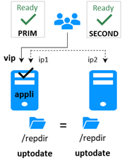
On the primary:
·
Virtual IP is set
·
Application is running
·
Real-time file replication
The secondary
is ready to run a failover and become primary.
|
2. Automatic failover
Stable state: primary without secondary.
On primary stop, automatic failover of
the virtual IP and application.
|
|
3. Failback and reintegration
Transient
state: secondary reintegrating.
Automatic file
synchronization without application shutdown and updating only the files that
were modified on the primary while the other node was stopped.
|
4. Back to normal operation
Stable state: primary with secondary.
|
5.2
State automaton of a mirror module (STOP, WAIT,
ALONE, PRIM, SECOND - NotReady, Transient, Ready)
5.3
First start-up of a mirror module (safekit prim command)
|
At first start-up of a mirror
module, if both servers are started with the start command, both go into WAIT (NotReady)state with the message in the log:
"Data
may be not uptodate for replicated directories (wait for the start of the
remote server)"
“If you are
sure that this server has valid data, run safekit prim to force start as
primary”
At first start-up of a mirror
module, use the special prim command on the server with the up-to-date directory, and the second
command on the other one. Data is synchronized from the primary server to
the secondary one.
For next start-up, use the start command
on both servers.
|
|
1. initial state
·
the mirror module has just been configured
with a new directory to replicate between node1 and node2
·
node1 has the up-to-date directory
·
node2 has an empty directory
|
 STOP
STOP STOP
STOP
(NotReady) (NotReady)
|
|
2. command prim on node1
·
use the special prim command to
force node1 to become primary
·
for following start-ups, always prefer start:
see section 5.5
·
message in the log:
"Action prim called by admin@<IP>/SYSTEM/root"
|
ALONE
STOP
(Ready)
(NotReady)
|
|
3. command second on node2
·
start the other server as secondary
·
the secondary reintegrates replicated
directory from primary
·
message in the log:
"Action second called by admin@<IP>/SYSTEM/root"
|
 PRIM
SECOND PRIM
SECOND
(Ready)
(Ready)
|
5.4
Different reintegration cases (use of bitmaps)
|
To optimize file reintegration, different
cases are considered:
1. The module must have completed the reintegration (on the first
start of the module, it runs a full reintegration) before enabling the
tracking of modification into bitmaps
2. If the module was cleanly stopped on the server, then at restart
of the secondary, only the modified zones of modified files are reintegrated,
according to a set of modification tracking bitmaps.
3. If the server crashed (power off) or was incorrectly stopped
(exception in nfsbox replication process), or if files have been modified
while SafeKit was stopped, the modification bitmaps are not reliable and are
therefore discarded. All the files bearing a modification timestamp more
recent than the last known synchronization point minus a grace delay
(typically one hour) are reintegrated.
4. A call to the special safekit second|prim fullsync command
triggers a full reintegration of all replicated directories on the secondary
when it is started.
|
|
1. secondary server2 has been stopped
·
data is desynchronized
|
ALONE
 STOP STOP
(Ready)
(NotReady)
|
|
2. start
command on node2
·
data is reintegrated with bitmap optimization
(see above)
|
ALONE  SECOND SECOND
(Ready)
(Transient)
|
|
3. end of reintegration
·
data is the same on both servers
·
only modifications inside files are replicated
with a real-time synchronous replication
|
PRIM
SECOND
(Ready)
(Ready)

|
The replication system also keeps track of
the last date on which data was synchronized on each node. This synchronization
date, named synctimestamp, is assigned at the end of the reintegration and changes in the PRIM (Ready) and SECOND (Ready)states. When
the module is stopped on the secondary node and then restarted, the synctimestamp is one of the reintegration criteria: all files modified around
this date are potentially out of date on the secondary and must be
reintegrated. Since SafeKit 7.4.0.50, the synchronization date is also used to
implement an additional security. When the difference between the
synchronization date stored on the primary and on the secondary is greater than
90 seconds, the replicated data is considered unsynchronized in its entirety.
The reintegration is interrupted with the following message in the module log:
“|
2021-08-06 08:40:20.909224 | reintegre | E | Automatic synchronization cannot
be applied due to an abnormal delta between the dates of the last
synchronization”
The administrator can force the start in
secondary with full synchronization of the data, by executing the command: safekit second fullsync -m AM.
5.5
Start-up of a mirror module with the up-to-date
data
 STOP (NotReady) - WAIT (NotReady)
STOP (NotReady) - WAIT (NotReady)
|
SafeKit determines which server
must start as primary or not. SafeKit retains the information on the server
with the up-to-date replicated directories. To take advantage of this
feature, use the command start and NOT the command prim
|
|
1. initial state
·
server1 is primary ALONE
·
directories are up to date on this server
·
the module is stopped on node2
·
node2 has desynchronized replicated
directories
|
ALONE
STOP
(Ready)
(NotReady)
|
|
2. command stop on node1
·
stop of the server with the up-to-date
directories
|
STOP STOP
(NotReady) (NotReady)

|
|
3. command start on node2
- the module is put in the WAIT state waiting for the start of the other server and within
its log of messages:
"Data
may be not uptodate for replicated directories (wait for the start of the
remote server)"
"Action wait from failover
rule notuptodate_server"
"If you are sure that this
server has valid data, run safekit prim to force start as primary"
- in this case, you must start server1 to
resynchronize data of server2
- if you really want to sacrifice the
up-to-date data and start node2 as primary with the data not up-to-date:
issue a stop command then a prim command on node2
|
STOP WAIT
(NotReady) (NotReady)
rfs.uptodate="down"
|
|
See also section 5.9.
|
5.6
Degraded replication mode (ALONE (Ready) degraded)
|
If the replication process nfsbox
fails on the primary server (for instance because of an unrecoverable
replication problem), the application is not swapped on the secondary server
The primary server goes to the ALONE
state in a degraded replication mode.
Degraded is displayed in the web
console. A message is emitted in the log:
"Resource rfs.degraded set to up by nfsadmin"
safekit state -v -m AM returns resource rfs.degraded up (replace AM by the module name)
The primary server continues in ALONE
state with a nfsbox process which does not replicate anymore.
You must stop and start the ALONE
server to come back to a PRIM - SECOND state with replication
|
|
1. initial state
the mirror is in a stable state:
node1 PRIM (Ready)
node2  SECOND (Ready) SECOND (Ready)
|
PRIM
SECOND
(Ready)
(Ready)

|
|
2. failure of replication process nfsbox on node1
- node1 becomes ALONE (Ready) degraded with the message in its log
"Resource rfs.degraded set to up by nfsadmin".
·
safekit
state -v AM returns resource rfs.degraded=up
(where AM is the module name)
- node1 ALONE
continues to execute the application without replication
- node2 is in WAIT (NotReady) waiting for the replication process with the message in its
log
"Action wait from failover rule
degraded_server"
and with
rfs.uptodate="down"
|
ALONE
 WAIT WAIT
(Ready)
(NotReady)
rfs.degraded="up" rfs.uptodate="down"
|
|
3. come back to replication
·
administrator makes stop command and start
command on node1 ALONE
·
the nfsbox replication process is restarted on
node1
·
node2 reintegrates replicated directories
before becoming SECOND (Ready)
·
node1 becomes PRIM (Ready)
|
PRIM
SECOND
(Ready)
(Ready)
|
5.7
Automatic or manual failover
|
Automatic or manual failover on the
secondary server is defined in userconfig.xml by <service
mode="mirror" failover="on"|"off">. By default, if the parameter is not defined, failover="on"
The failover="off" mode is useful when the failover must be controlled by an
administrator. This mode ensures that an application runs always on the same
primary server whatever operations are made on the server (reboot, temporary
stop of the module for maintenance...). Only an explicit administrative
action (prim command) may promote the other server as primary.
|
|
Failover mode could be set dynamically
with the safekit
failover on|off -m AM (replace AM
by the module name).
|
|
|
1. initial state
the mirror is
in a stable state:
node1 PRIM (Ready)
node2 SECOND (Ready)
|
PRIM
SECOND
(Ready)
(Ready)
|
|
2. restart with failover="on"
·
if node1 former PRIM fails and
stops, node2 becomes automatically
ALONE (Ready)
(default mode)
|
STOP
ALONE
(NotReady) (Ready)
|
|
3. behavior with failover="off"
·
if node1 former PRIM fails and
stops, node2 goes to WAIT (NotReady) state with message in its log
"Failover-off configured"
"Action stopstart called by
failover-off"
"Transition STOPSTART from
failover-off"
"Local state WAIT NotReady
"
·
the administrator in this situation can
restart node1: the mirror restarts in its former stable state
node1 PRIM (Ready)
node2 SECOND (Ready)
·
the administrator can decide to force node2 to
become primary with the command: stop then prim on node2
|
STOP
WAIT
(NotReady) (NotReady)
|
|
See also section 5.9
|
5.8
Default primary server (automatic
swap after reintegration)
|
After reintegration at failback, a
server becomes by default secondary. The administrator may choose to swap the
application back to the reintegrated server at an appropriate time with the swap
command. This is the default behavior when userconfig.xml
<service> is defined without the defaultprim
variable
If the application must
automatically swap back to a preferred server after reintegration, specify a
defaultprim server in userconfig.xml: <service
mode="mirror" defaultprim="hostname node1">
|
|
1. initial state
·
node1 (former PRIM) fails and
stops
·
node2 secondary becomes automatically ALONE
|
STOP
ALONE
(NotReady) (Ready)
|
|
2. failback without defaultprim
·
node1 is restarted with command start
·
it reintegrates replicated directories and
then becomes secondary
·
an administrator can swap the primary to node1
with the command swap in a timely manner
·
swap stops the application on node2 and
restarts it on node1
|
SECOND
PRIM
(Ready)
(Ready)
|
|
3. failback with defaultprim="hostname node1"
·
node1 in STOP (NotReady) at step 1 (initial state) is restarted by command start
·
it reintegrates replicated directories
·
just after reintegration, an automatic swap is
made on node1 with the message in its log:
"Transition SWAP from defaultprim"
"Begin of Swap"
·
the application is then automatically stopped
on node2 and restarted on node1
·
at the end, node1 is PRIM
|
PRIM
SECOND
(Ready)
(Ready)
|
5.9
Prim command fails: why? (safekit primforce command)
|
A prim command may fail to start a server
as primary: after trying a start-up, the server goes back to STOP (NotReady).
|
|
1. initial state
·
node1 ALONE has the
up-to-date directory
·
node2 is in the process of reintegrating files
from node1
|
ALONE  SECOND SECOND
(Ready)
(Transient)
Partially synchronized
|
|
2. command stop on node2 then on node1
·
stop of node2 during its reintegration: stop
of node2 can be made while a file that is half copied (corrupted file)
·
node1 is also stopped
|
STOP
STOP
(NotReady) (NotRead y)
Partially synchronized
|
|
3. command prim on node2
- fails with messages in the log
described above
"Data
may be inconsistent for replicated directories (stopped during reintegration)"
"If you are sure that this
server has valid data, run safekit primforce to force start as primary"
- in this case, you must start node1 with
start command or prim command. And to restart node2 with start command
to finish reintegration of files. While node2 is not in the state SECOND (Ready), its data may be corrupted
- if you absolutely want to start as
primary on node2 partially reintegrated and with data potentially
corrupted, use the command safekit primforce -m AM on
node2 (command line only, where AM is the
module name). Message in the log:
"Action primforce called by SYSTEM/root"
|
STOP
 STOP STOP
(NotReady) (NotRead y)
Partially synchronized
The command prim fails since the data may
be corrupted
|
|
Note: The safekit primforce -m AM command forces a full reintegration of replicated directories on
the secondary when it is restarted.
|
6.
Farm module administration
Section 6.1 “Operating mode of a farm module”
Section 6.2 “State automaton of a farm module (STOP, WAIT, UP - NotReady,
Transient, Ready)”
Section 6.3 “Start-up of a farm module”
To test a farm module, see section 4.3.
To analyze a
problem, see section 7.
6.1
Operating mode of a farm module
|
1. Normal operation
Stable state: 2 active nodes.
On all nodes:
·
Virtual IP is set
·
Application is running
·
Network load sharing is distributed among all
nodes
Each node is
ready to run a failover and take 100% of the load.
|
2. Automatic failover
Stable state: 1 active node.
On remote node stop, automatic failover
of the network load sharing.
|
|
3. Back to normal operation
Stable state: 2 active nodes.
|
6.2
State automaton of a farm module (STOP, WAIT, UP
- NotReady, Transient, Ready)
Note: This is
also the state automation of a light module. A light module is identified by <service
mode="light"> in userconfig.xml file
under SAFE/modules/AM/conf (where AM is the module name). The light type corresponds to an application
module that runs on one node without synchronizing with other nodes (as can-do
mirror or farm modules). A light module includes the start and stop of an
application as well as the SafeKit checkers that can detect errors.
6.3
Start-up of a farm module
|
Use the start command on each node
running the module. An example with a farm of 2 servers is presented below.
|
|
1. initial state
·
the farm module has just been configured on node1
and node2
|
STOP
STOP
(NotReady) (NotReady)
|
|
2. command start on node1 and node2
- message in the log of both servers:
"farm membership: node1 node2 (group FarmProto_0)"
"farm load: 128/256 (group FarmProto_0)"
"Local state UP Ready"
- resource of the module instance on both
nodes: FarmProto_0
50%
|
 UP
UP UP
UP
(Ready) (Ready)
|
Section 7.1 “Connection issues with the web console”
Section 7.2 “Connection issues with the HTTPS web console”
Section 7.3 “Global environment checks (healthcheck script)”
Section 7.4 “How to read logs and resources of the module?”
Section 7.5 “How to read the commands log of the server?”
Section 7.6 “Stable module (Ready) and (Ready)”
Section 7.7 “Degraded module (Ready)and /(NotReady)”
Section 7.8 “Out of service module /(NotReady) and /(NotReady)”
Section 7.9 “Module STOP (NotReady): start the module”
Section 7.10 “Module WAIT (NotReady): repair the resource="down"”
Section 7.11 “Module oscillating from (Ready)
to (Transient)”
Section
7.12 “Message on stop after maxloop”
Section 7.13 “Module (Ready) but
non-operational application”
Section 7.14 “Mirror module ALONE (Ready) - WAIT/STOP
(NotReady)”
Section 7.15 “Farm module UP(Ready)but problem of load balancing in a farm”
Section 7.16 “Problem with the virtual IP after failover”
Section 7.17 “Problem after Boot”
Section 7.18 “Analysis from snapshots of the module”
Section 7.19 “Problem with the size of SafeKit databases”
Section 7.20 “Problem for retrieving the certification authority certificate from
an external PKI”
Section 7.21 “Issue with email sending by the SafeKit notification agent”
Section 7.22 “Issue with antivirus”
Section 7.23 “Issue with SafeKit kernel modules”
Section 7.24 “Troubleshooting VIP ↔ MAC resolution”
Section 7.25 “Still in trouble”
7.1
Connection issues with the web console
If you encounter problems for connecting to
the SafeKit web console to SafeKit node, such as no
reply or connection error, run the following checks and procedures:
section 7.1.1 “Browser check”
section 7.1.2 “Browser state clear”
section 7.1.3 “Server check”
Then, it may be necessary to reload the
console into the browser.
7.1.1
Browser check
For the web browser:
1. check that it is a supported browser and its level
2. change the proxy settings for direct or indirect connection to the
server
3. with Microsoft Edge, change the security settings (add the URL into
the trusted zones)
4. clear the browser's state on upgrade as described below
5. check that the web console and the server are at the same level
(backward compatibility may not be fully preserved)
7.1.2
Browser state clear
1. Clear the browser cache
A quick way to
do this is a keyboard shortcut that works on IE, Firefox, and Chrome. Open the
browser to any web page and hold CTRL and SHIFT while tapping the DELETE key.
(This is NOT CTRL, ALT, DEL). The dialog box will open to clear the browser.
Set it to clear everything and click Clear Now or Delete at the bottom
2. Clear the browser SSL cache if HTTPS is used
Look at advanced
settings for the browser and search for SSL cache.
Finally close all windows for the browser,
stop the browser process still running in the background if necessary, and
re-open it fresh to test what wasn't working for you previously.
7.1.3
Server check
On each SafeKit cluster node check:
1. the firewall
If this
has not yet been done, run the SAFE/private/bin/firewallcfg
add command which configures the operating system
firewall. For other firewalls, add an exception to allow connections between
the web browser and the server. For details, see section 10.3.
2. the web server configuration
HTTP access
to the web console requires authentication. If it has not yet been done, run
the SAFE/private/bin/webservercfg
-passwd pwd to initialize (or reinitialize) this
configuration with the password of the user admin. For details,
see section 11.2.1.
3. the network and the server availability
4. the safeadmin and safewebserver services
They must
be started.
5. the SafeKit cluster configuration
Run the
command safekit
cluster confinfo (see section 9.2). This command
must return on all nodes, the same list of nodes and the same value for the
configuration signature. If not, reapply the cluster configuration on all nodes
(see section 12.2).
7.2
Connection issues with the HTTPS web console
If you encounter problems for connecting the
secure SafeKit web console to SafeKit nodes, you can run the following checks
and procedures:
section 7.1 “Connection issues with the web console”
section 7.2.1 “Check server certificate”
section 7.2.2 “Check certificates installed in SafeKit”
section 7.2.3 “Revert to HTTP configuration”
7.2.1
Check server certificates
The SafeKit web console connects to a
SafeKit node that is identified by a certificate. To get the SafeKit node
certificate content with Internet Explorer or Chrome, run the following:
|
1. Click on the lock next to the URL to open the security report
2. Click on the View certificates link.
It opens a window that displays the certificate content
|
|
|
3. Check the issuer that must be the appropriate certification
authority
4. Check the validity date and the workstation date. If necessary,
change the workstation date
5. Check the validity date. If the certificate is expired, you must
renew. For certificate generated with the SafeKit PKI, see section 11.3.1.8.1
|
|
|
6. Click on Details tab
7. Select Subject Alternate Name field.
Its content is displayed into the bottom panel. The location set into the URL
for connecting the SafeKit web console must be included into this list.
Change the URL if necessary
8. The address value for the node, set into the SafeKit cluster
configuration, must be one of the values listed. If it is not, change the
cluster configuration as described in section 12.2.
When using DNS
name, you must use lower case.
|
|
With SafeKit <= 7.5.2.9, the
server’s name must be included.
|
|
|
|
|
|
7.2.2
Check certificates
installed in SafeKit
You can use the checkcert command for
checking all the certificates.
On each SafeKit nodes:
1. Log in as administrator/root and open a command shell window
2. Change directory to
SAFE/web/bin
3. Run
checkcert -t all
It checks
all installed certificates and returns a failure if an error is detected
4. You can check that the server certificate contains some DNS name or
IP address with:
checkcert -h "DNS name value"
checkcert -i "Numeric IP address value"
|
|
The server certificate must contain all
DNS names and/or IP addresses used for HTTPS connection. These ones must also
be included into the SafeKit cluster configuration file.
|
If the command
fails, it may be due to an incorrect file format.
The content of a .crt file looks like:
-----BEGIN
CERTIFICATE (EXAMPLE)-----
MIID+DCCAuCgAwIBAgIFAJNuUj4wDQYJKoZIhvcNAQELBQAwUjEQMA4GA1UEChMH
RXhhbXBsZTEQMA4GA1UECxMHU2FmZUtpdDEsMCoGA1UEAxMjU2FmZUtpdCBMb2Nh
bCBDZXJ0aWZpY2F0ZSBBdXRob3JpdHkwHhcNMjQwNTI5MDYzMzIxWhcNNDQwNTI0
…
H/kG9pfzpnCEtZeyRCxGiowQpEmKtqOS51Xzg+q2tI7uiOAf5SVxHbqj/8c5RNZi
/iYlZg3itzIxLTPBEn3BD6pSVmRU33yU2cHo6HMsXXwFvo/LMOWNhVrj9I33d7u6
0fooCyU3aFbFCwGx
-----END
CERTIFICATE (EXAMPLE)-----
The content of a .key file looks like:
-----BEGIN
PRIVATE KEY (EXAMPLE)-----
MIIEvQIBADANBgkqhkiG9w0BAQEFAASCBKcwggSjAgEAAoIBAQCbSAP0f28TR3lj
jMRNabVP6725NQoH6Wt3O238aH8uXKKiI2byzWGXVjnrvT8AK+3lraQ4yLoAGtO3
LTsxsbuOQi90kwfelKNlQsIh3WJ7V6bGltLoQhT+bDdLJAPmLH1nFHKe19Tkvqr/
..
SUl5Ap71plSqrYlvNhkiOB50Hs34r+iNtPB6GaKtnTHicBjI1i95zrU/J5JKHxBV
uRY4ghOgtJyq9LuZXb2aTOht7K7QTjLRqHS5rdy+alSByhKpD2wR6oqX44mw1w1s
eOCnWlvhpFarc9As9BIVGsw=
-----END PRIVATE
KEY(EXAMPLE)-----
7.2.3
Revert to HTTP configuration
If the problem cannot be solved, you can
revert to the HTTP configuration (where SAFE=C:\safekit in Windows if System
Drive=C: ; and SAFE=/opt/safekit in Linux).
On S1 and S2:
1. remove the file
SAFE/web/conf/ssl/httpd.webconsolessl.conf
2. run safekit webserver
restart
3. clear the browser cache as described in section 7.1.2
7.3
Global environment checks (healthcheck script)
The healthcheck script,
available since SafeKit 8.2.6, is a diagnostic tool that performs a global
verification of a SafeKit environment on a SafeKit node. It checks key
components such as installation paths, SafeKit services, filesystem usage,
cluster and module configuration…
This script is intended for quick
troubleshooting and support. It is automatically executed during the module
dump and its output is included into the module snapshot.
Run the healthcheck script
with:
|
Windows
|
safekit
-r healthcheck.ps1
|
|
Linux
|
safekit
-r healthcheck.sh
|
All results are written into a single log
file (healthcheck.txt) in the SAFEVAR directory with [TEST], [OK], [WARN] and [ERROR] sections to
facilitate analysis.
7.4
How to read logs and resources of the module?
|
Module log and Scripts log for the module on one node may be analyzed
with (replace below node1 by the node name and AM by the module name):
·
the web console at URI /console/en
/monitoring/modules/AM/nodes/node1/logs
·
the command executed on node1
safekit logview -m AM
for the module log
·
on node1, into files SAFEVAR/modules/AM/userlog_<year>_<month>_<day>T<time>_<script
name>.ulog for the scripts log
With the module log, you can
understand why the module is no longer in its stable state
(Ready).
With the scripts log, you can see
the output messages of module scripts (start_xxx and stop_xxx).
Note that a module can leave its
stable
(Ready)because of
an administrator command: safekit
stop | restart | swap | stopstart | forcestop… -m AM
|
·
You will find a list of SafeKit log messages
in Log Messages Index.
·
Messages in the log after an administrator
command are:
"Action start called by admin@<IP>/SYSTEM/root"
"Action stop called by admin@<IP>/SYSTEM/root"
"Action restart called by admin@<IP>/SYSTEM/root"
"Action swap called by admin@<IP>/SYSTEM/root"
"Action stopstart called by admin@<IP>/SYSTEM/root"
"Action forcestop called by admin@<IP>/SYSTEM/root"
admin@<ip>: via the SafeKit console
SYSTEM: command on Windows
root:
command on Linux
·
If "Action stop called by maxloop" appears in the module log, see section 7.12
|
|
Resources state of the module on one node may be analyzed
with (replace below node1 by the node name and AM by the module name):
·
the web console at URI /console/en
/monitoring/modules/AM/nodes/node1/resources
·
the command executed on node1
safekit state -m AM
-v
|
· Module status
state.local, state.remote
usersetting.errd, usersetting.checker,
usersetting.encryption
· Checkers
proc.xxx, intf.xxx, custom.xxx
· File replication
rfs.uptodate, rfs.degraded, rfs.reintegre_failed
|
7.5
How to read the commands log of the server?
There is a log of the safekit
commands ran on the server.
Commands log
may be displayed using the command safekit cmdlog
See section 10.12 for more details
7.6
Stable module (Ready) and
(Ready)
·
A stable mirror module on 2 servers is in the
state PRIM (Ready) - SECOND (Ready): the
application is running on the PRIM server; on failure, the SECOND server is ready to resume the
application.
·
A stable farm module is in the state UP (Ready)on all servers of the farm: the application
is running on all servers.
7.7
Degraded module (Ready)and
/(NotReady)
A degraded mirror module is in the state ALONE (Ready)- STOP/WAIT (NotReady).
There is no recovery server, but the application is running on the ALONE
server.
A degraded farm module is in the state UP (Ready)on at least one server of the
farm, the other servers being in the state STOP/WAIT (NotReady). The
application is running on the UP server.
In the
degraded case, there is no emergency procedure to implement. Analysis of the
state STOP/WAIT (NotReady)can be
done later. However, you can attempt to restart the module in a stable state:
See section 7.9 “Module STOP (NotReady):
start the module”
See section 7.10 “Module WAIT (NotReady):
repair the resource="down"”
7.8
Out of service module /(NotReady) and /(NotReady)
An out of service mirror or farm module is
in the state STOP/WAIT (NotReady)on all
servers. In this case, the application is not operational on any server
anymore. You must restore the situation and restart the module in (Ready)on at least
one server:
See section 7.9 “Module STOP (NotReady):
start the module”
See section 7.10 “Module WAIT (NotReady):
repair the resource="down"”
7.9
Module STOP (NotReady):
start the module
1. Start the stopped module (replace below AM by the module
name) with:
·
the web console via  Monitoring/on the node/Start/
Monitoring/on the node/Start/
·
the command safekit start -m AM executed on the node
2. Check that the module becomes (Ready).
3. Analyze results of start in the module and
scripts logs (replace below node1 by the node name and AM by
the module name) with:
·
the web console at URI /console/en/monitoring/modules/AM/nodes/node1/logs
·
the command safekit logview -m AM on node1, for the module log
·
the files SAFEVAR/modules/AM/userlog_<year>_<month>_<day>T<time>_<script
name>.ulog on node1, for the scripts log
7.10
Module WAIT (NotReady):
repair the resource="down"
|
If the module is in the state WAIT (NotReady), it
waits for the state of a resource to become up.
You must identify and fix the
problem that caused the resource state to go down.
To determine the resource involved,
analyze the module log and resources (see section 7.4).
Notes:
A wait checker is started after
the prestart script and stopped before poststop.
The checker is active on all
servers
ALONE/PRIM/SECOND/UP (Ready).
The action of the checker upon
detecting an error is to set a resource to down.
A failover rule referencing the
resource performs the wait action.
The module is locally in state
WAIT (NotReady)while
the resource stays down.
The module exits the
WAIT(NotReady) state as soon as the checker sets the resource back to up.
|
Messages from wait checkers:
·
files not up-to-date locally: see section 5
"Data
may be not uptodate for replicated directories (wait for the start of the
remote server)"
"Action wait from failover rule notuptodate_server"
"If you are sure that this server has valid data, run safekit prim to
force start as primary"
·
<interface
check="on"> checker of a local network
interface
"Resource intf.ip.0 set to down by intfcheck"
"Action wait from failover
rule interface_failure"
·
<ping> checker of an external IP
"Resource ping.id set to down by pingcheck"
"Action wait from failover rule p_id"
·
<module> checker of another module
"Resource module.othermodule_ip set to down by
modulecheck"
"Action wait from failover rule module_failure"
·
<tcp
ident="id" when="pre"> checker
of an external TCP service
"Resource tcp.id set to down by tcpcheck"
"Action wait from failover rule t_id"
·
<custom
ident="id" when="pre"> customized checker
"Resource custom.id set to down by customscript"
"Action wait from failover rule customid_failure"
<splitbrain> checker
“Resource splitbrain.uptodate set to down by splitbraincheck"
…
"Action wait from failover rule
splitbrain_failure"
·
Files not up-to-date locally due to
split-brain: see section 13.18
|
7.11
Module oscillating from (Ready) to
(Transient)
|
If a module oscillates from state
(Ready)to state (Transient), it is probably
a victim of a restart or stopstart checker which detects a constant error.
By default, after the 4th
unsuccessful restart on a server, the module stops, and the server stabilizes
in STOP (NotReady).
Use the module log to determine
which checker is the source of the logs (to read logs, see section 7.4).
Notes:
A restart or stopstart checker is defined in userconfig.xml by:
·
when="prim"
for a mirror module
The checker is started
on the node
PRIM/ALONE (Ready)after
script start_prim (stopped before stop_prim). It checks the application started in start_prim.
·
when="both" for a farm module
The checker is started
on all nodes UP (Ready)after
script start_both (stopped before stop_both). It checks the application started in start_both.
The action of a checker on an error
is to restart or stopstart the module. stopstart on PRIM (Ready)leads
to a failover of the primary on the other node.
The module is in the state PRIM/UP (Transient)during the application restart.
After several oscillations, the
module stops with "Action
stop called by maxloop" in the module log: see section 7.12.
|
Messages from restart
or stopstart checkers:
·
<errd> in userconfig.xml
checker of processes
"Process appli.exe
not running"
"Action restart|stopstart called by errd"
·
<tcp
ident="id" when="prim"|"both"> in userconfig.xml
TCP checker of the
application
"Resource tcp.id
set to down by tcpcheck"
"Action restart|stopstart from failover rule t_id"
·
<custom
ident="id" when="prim"|"both"> in userconfig.xml
custom checker
"Resource custom.id
set to down by customscript"
"Action restart|stopstart from failover rule c_id"
or
"Action
restart|stopstart called by customscript"
|
7.12
Message on stop after maxloop
|
If
an error detected by a checker repeats itself several times and successively,
the module is stopped on the server in
 STOP(NotReady):
because the error is permanent, and the action of the checker cannot correct
it STOP(NotReady):
because the error is permanent, and the action of the checker cannot correct
it
If in userconfig.xml, there
is no parameter maxloop / loop_interval in <service>, by default, maxloop="3"
loop_interval="24"
if the checkers generate more than
3 unsuccessful restarts (restart, stopstart, wait) in less than 24H, then
stop of module: STOP(NotReady).
The counter is reset to 0 if an
administrator executes an action on the module such as safekit start -m AM (replace AM by the module name) or safekit stop -m AM (without the
option -i
<identity>)
|
Message on stop after maxloop
"Action stop called by maxloop"
|
7.13
Module (Ready)
but non-operational application
If a server has a status of PRIM(Ready)or ALONE(Ready)or UP(Ready), the application can be
non-operational because of undetected errors on start-up. In the following,
replace node1 by the node name and AM by the module name.
1. Check the output messages of application scripts coming from start_prim/start_both and stop_prim/stop_both. They are visible in (replace below node1
by the node name and AM by the module name) with:
·
the web console at URI /console/en/monitoring/modules/AM/nodes/node1/logs
·
the files SAFEVAR/modules/AM/userlog_<year>_<month>_<day>T<time>_<script
name>.ulog, on node1, for the scripts log
Check if there
are errors during start or stop of the application. Be careful, sometimes the
userlog is disabled because it is too large with <user logging="none"> in userconfig.xml of the module.
2. Check application scripts start_prim(/both) and stop_prim(/both) of a mirror(/farm) and userconfig.xml with:
·
the web console at URI /console/en/configuration/modules/AM/config
·
under the directory SAFE/modules/AM on the node1
3. Execute a restart of the PRIM/ALONE/UP(Ready)node to stop and restart locally the application (without failover)
with:
·
the web console via Monitoring/on
the node/Restart/
·
the command safekit restart -m AM executed on the node (replace AM by the module
name)
4. If the application is still non-operational, apply a stop PRIM/ ALONE / UP(Ready)node to
stop and the application (stopstart makes a failover if the other node is Ready)
with:
·
the web console via Monitoring/on
the node/Stop/
·
the command safekit stop -m AM executed on the node
7.14
Mirror module ALONE (Ready) - WAIT/STOP (NotReady)
If a mirror module stays in state ALONE(Ready)- WAIT(NotReady), check
the resource state.remote on each node (to read resources, see section 7.4). If this state is UNKNOWN on
the two nodes, there is probably a communication problem between the nodes.
This problem may also lead to ALONE(Ready)-STOP (NotReady).
Possible root causes are:
1. Real network problem
Check your
network configurations on the two nodes.
2. Firewall rules on one or the two nodes
For details, see
section
10.3
3. Not the same SafeKit cluster configuration or cluster cryptographic
keys
To communicate,
cluster nodes must belong to the same cluster and have the same configuration
(see section 12):
·
The web console warns if nodes in the cluster
nodes list have not an identical configuration
·
The command: safekit cluster confinfo on any nodes of the cluster must report an identical configuration
signature for all nodes of the cluster (see section 9.2)
If the cluster
configuration is not identical, re-apply the cluster configuration on all
cluster nodes as described in section 3.2.2.
4. Not the same module cryptographic keys
When
cryptographic has been enabled for the module, the resource usersetting.encryption is “on” (to check the state of resources, see section 7.4). If the nodes do not have the same keys
for the module, the nodes will not be able to communicate for the internal
module communications.
To
distribute the same module cryptographic keys, re-apply the module
configuration on all nodes.
See section 10.7 for details.
5. Expired cryptographic keys
In
SafeKit <= 7.4.0.31, the key for encrypting the module communication has a
validity period of 1 year. When it expires in a mirror module with file
replication, the secondary fails to reintegrate and the module stops with an
error message into the log:
reintegre | D | XXX
clnttcp_create: socket=7 TLS handshake failed
In SafeKit >
7.4.0.31, the message is:
reintegre | D | XXX
clnttcp_create: socket=7 TLS handshake failed. Check server time and module
certificate (expiration date, hash)
To solve this
problem, see section 10.7.3.1
7.15
Farm module UP(Ready)but
problem of load balancing in a farm
Even though all servers in the
farm are UP(Ready), load balancing is not working.
7.15.1 Reported network load share are not coherent
In a farm module, the sum of the network
load share of all UP(Ready), module nodes must be equal to
100%.
If it’s not the case, there is probably a
communication problem between module nodes. Possible root causes are the same
as for a mirror module. See section 7.13 for possible solutions.
See also section 4.3.6.
If the virtual IP does not respond properly
to all requests for connections:
1. choose a node in the farm that receives and processes connections on
the virtual IP address (established TCP connections):
·
in Windows, use the command netstat -an | findstr <virtual
IP address>
·
in Linux, use the command netstat -an | grep <virtual IP
address>
2. stop the farm module on all nodes except the one that receives
connections and that remains UP(Ready) with:
·
the web console via Monitoring/on
the node/Stop/
·
the command safekit stop -m AM (replace AM by the module name)
3. check that all connections to the virtual IP address are handled by
the single server UP (Ready)
For a more detailed analysis on this topic,
see next section and:
section 4.3.4 “Test virtual IP address of a farm module”
section 4.3.5 “Test TCP load balancing on a virtual IP address”
section 4.3.7 “Test compatibility of the network with invisible MAC address”
7.16
Problem with the virtual IP after failover
Sometimes, external devices function
correctly when the primary server is node1, but they do not work properly after
failover on the other node, node2.
It may be a problem with the configuration
of external devices. Two types of TCP connections must be considered at the
level of external devices:
·
Outgoing TCP connections issued by the external
devices to the SafeKit cluster.
·
Incoming TCP connections issued by the SafeKit
cluster to the external device.
The outgoing TCP connections, issued by the
external devices to the SafeKit cluster, must be configured with the virtual IP
address and not the physical IP address of node1. Otherwise, they will remain
stuck to node1 in case of a failover to node2. Note that on the node side, the
application must listen on the virtual IP address to accept connections from
external devices. You can check the listening TCP sockets using the netstat
command. Generally, a listening TCP socket is bound to all IP addresses (0.0.0.0),
and in this case, there is no problem.
For incoming TCP connections, if the
application initiates a TCP connection on node1 to an external device, this
connection will start with the physical IP address of node1 as the source IP
address. After a failover to node2, the connection will start with the physical
IP address of node2. This is because the virtual IP address is set as an alias
on the network interface of the primary node, and the primary IP address of the
network interface remains the physical IP address of the node.
Therefore, if the external devices perform
a check on their incoming connections, it is necessary to configure them to
accept connections from the two physical IP addresses of the two nodes in the
cluster.
Now, if the external devices can only be
configured with a single IP address, then you need to reconfigure in the userconfig.xml:
<virtual_addr where="one_side_alias">
to
<virtual_addr where="one_side">
This way, the primary IP address will be
the virtual IP address, and the connections from the primary node to the
external devices will use the virtual IP address as the source IP address.
Consequently, the external devices must be configured to accept incoming
connections on a single IP: the virtual IP address.
The same issue may occur if external
devices communicate with the cluster using UDP. In this case, it may be
preferable to configure one_side.
The final possibility is that an external
device only accepts communications to a unique Ethernet MAC address of a
server. In this very specific and rare case, you need to configure the virtual
IP address with a 'vmac_invisible' MAC address. For example, it can start with '5A:FE':
<virtual_interface
type="vmac_invisible" addr="5A:FE:01:02:03:04">
When configured as 'vmac_invisible', a
virtual MAC address is associated with a virtual IP address, but this MAC
address is never visible in Ethernet headers. This configuration allows packets
directed to the virtual IP address to be received by all servers within the
system without revealing the virtual MAC address to switches, which would
typically be able to locate it. Since switches cannot detect this address, they
broadcast packets intended for it across all ports in the local area network
(LAN). All nodes receive these packets, particularly both nodes of the cluster.
Therefore, the primary server can be on node 1 or node 2. vmac_invisible
requires promiscuous mode on the physical Ethernet cards of both nodes.
Additionally, it necessitates the 'vip' kernel module, which must be compiled
on Linux.
Preferably, configure a virtual IP address
with 'one_side_alias', and only use 'one_side' or 'vmac_invisible' if necessary.
Note that none of these issues arise with a
complete virtual machine replication and restart solution. In this case, there
is no virtual IP address involved. The VM is relaunched on the secondary node
with the same primary IP address and the same MAC address. To avoid the
aforementioned issues, you can use SafeKit solutions for Hyper-V or KVM.
7.17
Problem after Boot
If you encounter a problem after boot, see section 4.1.
Note that by default, modules are not
automatically started at boot. For this, you must setup the boot start into the
module’s configuration with:
·
the web console at /console/en/configuration/modules/AM/config
·
in file SAFE/modules/AM/conf/userconfig.xml on the node1, with the boot attribute of the service
tag (see section 13.3.3)
Then apply the new configuration on all
nodes.
7.18
Analysis from snapshots
of the module
When the problem is not easily
identifiable, it is recommended to take a snapshot of the module on all nodes
as described in section 3.5. A snapshot is
a zip file that collects, for one module, the configuration files, dumps… Its
content allows an offline and in-depth analysis of the module and node status.
|
|
The structure and content of the snapshot
vary depending on the version of SafeKit.
|
Since SafeKit 8.1, the structure of the
snapshot is as follows:
|
snapshot_centos7_test3_mirror/
|
Directory snapshot_nodename_AM
Snapshot for the module AM
got from the node named nodename
|
|
mirror/
|
Directory AM
Application module name
|
|
config_2021_05_05_14_15_42/
config_2021_07_08_10_05_02/
config_2021_08_18_16_15_25/
|
Directories config_year_month_day_hour_mn_sec
Last 3 configurations for the
module, including the current one
|
|
dump_2021_05_15_10_15_40/
dump_2021_07_20_11_05_35/
dump_2021_08_28_08_11_45/
|
Directories dump_year_month_day_hour_mn_sec
Last 3 dumps for the module,
including the last one
|
|
tmp/
|
Directory for
the level 3 support
|
Since SafeKit 8.2.6, SafeKit provides the anontool
utility, which allows generating a filtered and anonymized snapshot from a full
snapshot. The filtered snapshot contains the minimal subset required to analyze
an issue:
·
the cluster and module configuration (the most
recent config_year_month_day_hour_mn_sec directory),
·
the module log, the module script logs, and the
SafeKit command log from the most recent dump_year_month_day_hour_mn_sec directory.
Each of these files is anonymized. See section 9.6.2.2 for more
details.
As the anonymized snapshot is restricted,
it only allows partial analysis.
The module configuration files are saved as
follows:
|
config_2021_08_18_16_15_25/
|
Directory for the module's
configuration files
|
|
module/
bin/
conf/
web/
private/
|
Directory module
It contains the user configuration
files
·
bin directory
scripts start_xx,
stop_xx, …
·
conf directory
XML configuration
userconfig.xml
|
Check the user configuration file and
scripts for troubleshooting with the application integration into SafeKit.
The dump contains the state of the module
and the SafeKit node as it was at the time of the dump.
|
dump_2021_08_28_08_11_45/
|
Directory for the module's dump
files
|
|
csv/
licenses/
notifications/
userlog/
var/
web/
|
·
csv directory
Logs and status in
csv format
·
licences directory
SafeKit licenses get
from SAFE/conf directory
·
notifications directory
Email notification
agent configuration gets from SAFE/web/notifications directory
·
userlog directory
Module scripts logs
·
var directory
Extract of the SAFEVAR
directory
·
web directory
Web server
configuration gets from SAFE/web/conf directory
|
|
log.txt
logverbose.txt
|
Module log files (not verbose and
verbose)
|
|
healthcheck.txt
|
Since SafeKit 8.2.6, a diagnostic
report that provides a global verification of a SafeKit environment on a node
(see section 7.3).
|
|
heartplug
|
Information file
Various information about the
node (list and status of installed modules, OS version, disk, and network
configuration…)
|
|
last.txt
systemevt.txt
Or
applicationevt.txt
systemevt.txt
|
System logs
·
last.txt and systemevt.txt in Linux
Or
·
applicationevt.txt and systemevt.txt in Windows
|
|
commandlog.txt
|
Commands log for the node
|
|
heart
heart.trc
nfsbox
nfsbox.trc
|
Trace files for level 3 support
|
·
Check the license file(s) into licenses
directory for troubleshooting with the SafeKit license check
·
Check the Apache configuration files into web directory
for troubleshooting with the SafeKit web service
·
Check the module logs, in log.txt
and logverbose.txt, for troubleshooting with the module behavior
·
Check the module scripts logs userlog/userlog_<year>_<month>_<day>T<time>_<script
name>.ulog for troubleshooting with application
start/stop
·
Since SafeKit 8.2.6, check for errors in healthcheck.txt file
·
If necessary, look at heartplug file for
some information on the node and search the system logs for events that
occurred at the same time as the problem being analyzed
·
Check the commands log commandlog.txt for
troubleshooting with cluster management or distributed commands
7.18.2.1 var directory
The var directory is
mainly for the level 3 support. It is a copy of some part of the SAFEVAR
directory. In the
var/cluster directory:
·
look at the cluster.xml file for
checking the cluster configuration
·
look at the cluster_ip.xml file
for checking the DNS name resolution of names into the cluster configuration
7.18.2.2 csv directory
The logs and reports are also exported into
csv format in the csv directory:
|
csv/
|
csv directory
|
|
logverbose.csv
resource.csv
resourcelog.csv
|
Logs and status of the module
·
Verbose log
·
Resources status and history
|
|
commandlog.csv
modules.csv
moduleslog.csv
clusterstate.csv
|
Logs and status of the node
·
Commands log
·
List of installed modules
·
For the level 3 support
|
Import the csv files into an Excel sheet to
facilitate their analysis. To import a file:
1. Create a new sheet
2. From the Data tab, import From Text/CSV
3. In the dialog box, locate and double-click the csv file to import,
then click Import
4. Then click on Load
You can use the Excel features to filter
rows according to the level of the messages, ... and load in different sheets
the csv of each node.
|
|
For the exact date, format cells with Number/Custom jj/mm/aaaa
hh:mm:ss,000.
|
7.19
Problem with the size of SafeKit databases
SafeKit uses SQLite3 storage to save:
1. The log and the status of the node
·
SAFEVAR/log.db contains the commands log
·
SAFEVAR/resource.db contains the list of installed modules and its history
These are
referred to as node databases.
2. The log and the resources of the module
·
SAFEUSERVAR/log.db contains the module log
·
SAFEUSERVAR/resource.db contains the state of the module resources and its history
These are
referred to as module databases.
The size of the logs and histories
increases as events occur on the SafeKit node and modules. Therefore, they
should be purged regularly by deleting the oldest entries. This is
automatically done thanks to a periodic job (task scheduler in Windows; crontab
in Linux) that is controlled by the safeadmin service. The clean of the node databases is always active. The clean of the
module databases is active only when the module is running.
To check that the jobs are ready:
1. Job for cleaning node databases
·
In Windows, run schtasks /QUERY /TN safelog_clean
·
In Linux, run crontab -u safekit -l
The
output of this command must contain the safelog_clean entry
2. Job for cleaning AM module databases (where AM is
the module name)
·
In Windows, run schtasks /QUERY /TN safelog_AM
·
In Linux, run crontab -u safekit -l
The
output of this command must contain the safelog_clean_AM entry
The clean-up is implemented by a script located
in SAFEBIN (in Linux, SAFEBIN=/opt/safekit/private/bin; in Windows,
SAFE=C:\safekit\private\bin - if %SYSTEMDRIVE%=C:):
|
dbclean.ps1 in Windows
and
dbclean.sh in Linux
|
Clean the log and history in the
node databases
|
|
dbclean.ps1 AM
in Windows
and
dbclean.sh AM
in Linux
|
Clean the log and history in the
databases of the module named AM
|
If necessary, you can run this script
outside the scheduled period to force the databases clean-up.
7.20
Problem for retrieving the certification
authority certificate from an external PKI
When using an external PKI, you must
provide the certificate of the certification authority CA used to issue
server certificates (cacert.crt file containing the chain of certificates for the root and
intermediates Certification Authorities)
If you have trouble retrieving these files
from an external PKI, you can build them using the procedure described below.
7.20.1
Export CA certificate(s) from public certificates
The following procedure explains how to
build from a public certificate, the chain of certificates for the root and
intermediates Certification Authorities, into the file combined.cer.
When you have the public certificate (.crt
or .cer file in Base-64 encoded X.509 format) generated by the PKI:
1.
Copy the .crt (or .cer) file on a Windows
workstation
2. Double click on this file to open it with “Crypto
Shell Extensions”
3. Select the “Certification Path” tab
to view the tree of certification authorities
4. Select an entry (from top to down except the leaf)
5. Click on “View Certificate”. A new
window is opened with details for the selected certificate
6. In this new window, select the “Details”
tab and click “Copy to File”
7. It opens the Certificate Export Wizard:
a. Click on “Next” to continue
b. On the “Export File Format” page,
select “Base-64 encoded X.509 (.CER).”, and
then click “Next”
c. For “File to Export”, “Browse” to the location to which you want to export
the certificate. Fill “File name” with the name
of the certificate file. Then, click “Next”
d. Click “Finish” to export the
certificate
e. Your certificate is successfully exported
8. Now repeat steps 4-7 for all entries (except the last one) to export
all intermediate CA certificates in the Base-64 encoded X.509(.CER) format. For
the example, you would repeat steps 4-7 on SSSL.com RSA subCA intermediate CA
to extract it as its own certificate.
9. Concatenate all your CA certificates into one file combined.cer
Run the
following command with all the CA certificates you extracted earlier:
·
In Windows
type intermediateCA.cer rootCA.cer >
combined.cer
·
In Linux
cat intermediateCA.cer rootCA.cer >>
combined.cer
The
resulting combined certificate should look something like the following:

This file can be used as the SAFE/web/conf/cacert.crt
7.21
Issue with email sending by the SafeKit
notification agent
Since SafeKit 8.2.4, SafeKit offers a
notification agent that sends emails for major events on modules. It is
described in section 10.10.
This section describes how to troubleshoot
the SafeKit notification agent thanks to the e-mail sending test command:
1. Open a PowerShell/shell window as administrator/root
2. Change directory to SAFE
where SAFE=C:\safekit in
Windows (if %SYSTEMDRIVE%=C:), and SAFE=/opt/safekit in Linux
3. Run ./private/bin/safenotif
-testemail
This command may fail due the issues
described below.
If the email test is successful and you
still encounter issues, please check the SafeKit notification agent log for
further investigation. The log is located at SAFEVAR/notifications/safenotif.log. This file has a limited size and is truncated in case the limit
size is reached. Consequently, it is recommended to make a copy of it if you
analyze it, or if you want the SafeKit support to analyze it.
The e-mail sending test command may fail
with the following error:
Failed to read
or parse the configuration file.
Please verify the
"SAFE/conf/notifications/safenotif_conf.json" file exists and is
properly formatted as a JSON file.
This is due either to:
·
SAFE/conf/notifications/safenotif_conf.json file does not exist
You need to
configure the agent as described in section 10.10.1
·
SAFE/conf/notifications/safenotif_conf.json file is not properly formatted in the JSON format
Use a tool (in
your machine or online) to verify the JSON syntax.
·
SAFE/conf/notifications/safenotif_conf.json contains paths
For instance, smtp.expert.caCertificateFile property accepts a path. In Windows, paths contain backslashes
(`\`); they must be escaped with another backslash (`\\`, e.g.
`C:\\Users\\Administrator\\certfile.pem`).
The e-mail sending test may hang, and not
terminate at all, after the following line has been displayed:
Sending email from
name@my.host to name@my.host with no SMTP authentication...
This can be due to a protocol mismatch.
To resolve this problem, edit SAFE/conf/notifications/safenotif_conf.json file, to set the appropriate value for smtp.protocol
property.
Note that other behaviors can occur in case
of a protocol mismatch (see the next section section).
The notification
agent uses the curl SMTP client. Consequently, when an email sending error occurs,
examining the curl error is the key to understanding the cause of the failure. The
following non-trivial curl errors may occur. For other errors, refer to the
curl documentation.
·
Recipient address rejected
The recipient's
address is rejected by the SMTP server with the following error:
curl
error: curl: (55) RCPT failed: 550
To resolve this
issue, modify the file SAFE/conf/notifications/safenotif_conf.json to set the correct recipient address in emailNotifications.recipients.
·
Protocol mismatch
When the protocol
used by the notification agent does not align with the one required by the SMTP
server, you may have the following curl errors:
curl: (35) OpenSSL/3.2.1: error:0A00010B:SSL
routines::wrong version number
curl: (55) MAIL failed: 530
curl: (64) STARTTLS not supported
To resolve these
problems, edit SAFE/conf/notifications/safenotif_conf.json file, to set the appropriate value for smtp.protocol
property.
Note that other
behaviors can occur in case of a protocol mismatch (see the previous section
section).
·
Authentication mismatch
o
curl: (35) OpenSSL/3.2.1:
error:0A0000C6:SSL routines::packet length too long
The notification
agent tried to connect to the SMTP server by being authenticated, whereas no
authentication is required.
To resolve this
issue, reset the SMTP client credentials as described in section 10.10.2.
o
curl: (55) RCPT failed: 554
The notification
agent attempted to connect to the SMTP server without authentication, whereas
authentication is required.
To resolve this
issue, set the SMTP client credentials as described in section 10.10.2.
·
Certificate issue
curl:
(60) SSL certificate problem: self-signed certificate
This error can
occur when the SMTP server is configured for SMTPS or SMTP+STARTTLS. It means
that the server uses a self-signed certificate, rather than a certificate
signed by a trusted certification authority (CA). The Certificate Authority
(CA) certificate that issued the SMTP server's certificate is needed to verify
it.
To resolve this
issue:
1. ask your PKI provider to supply the CA certificate, which must
include the certificate chain for the root and intermediate CAs. It should be Base-64
encoded X.509 certificate file (PEM format), with a .pem or .crt
suffix
2. copy it to your SafeKit server
3. edit SAFE/conf/notifications/safenotif_conf.json file to fill in the smtp.expert.caCertificateFile property
to the path of the CA certificate using ‘\\’ in the
string,
e.g. "C:\\Users\\Administrator\\cacert.crt".
7.22
Issue with antivirus
Some antivirus may interfere with the
proper functioning of SafeKit.
For example, Windows Defender may
quarantine SafeKit processes (such as the safeadmin service or
the safekit command), or block access to SafeKit databases. As a result, this can
lead to SafeKit command-line failures or module shutdowns. Since this issue may
occur sporadically but not consistently with Windows Defender, it is
recommended to configure the antivirus to prevent such malfunctions.
Additionally, on both Linux and Windows,
all replicated folders defined in mirror modules should be excluded from
antivirus scanning to avoid disruptions in SafeKit replication and
synchronization. For instance, on Windows, this issue is identified by the
following message in the verbose log:
|
2025-08-27 16:49:33:662000 | nfsboxv3 | D | WARNING : Process 2980 [
MsSense.exe ] access may interfer with replication, possible stopstart ahead
Refer to section 10.6 for the list
of legitimate SafeKit directories and processes that should not be affected by
the antivirus.
7.23
Issue with SafeKit kernel modules
The mirror module failed to start due to a
module conflict:
nfsboxv3 | E | Kernel filter configuration
failed for E:\replicated_dir. Check for module conflicts.
This error may occur in the following
situations:
1. Duplicate replicated directories in multiple mirror modules
Two
mirror modules are configured with the same replicated directories.
This
configuration is not supported.
To fix
it, assign distinct replicated directories to each module and reconfigure them
2. Outdated rfs filter internal configuration
The
kernel configuration for replicated directories was not properly updated, even
though no directories are currently configured.
To reload
the correct configuration into the kernel, stop all modules and run the
following command:
net stop rfsfilter
The mirror module failed to start due to a
load error:
|
vipplug | E | Unable to load vip kernel extension
Moreover, when trying to load the vip module
with the modprobe command, you get one of the following errors:
modprobe: ERROR: could
not insert 'vip': Required key not available
or
modprobe: could not
insert 'vip': Key was rejected by service
This problem occurs when Secure Boot is
enabled, and the solution is described in section 10.5.
7.24
Troubleshooting VIP ↔ MAC
resolution
This section helps diagnose issues related
to IP ↔ MAC address resolution, which may cause connectivity loss, failover
delays, or incorrect traffic routing to a VIP.
Clients keep an IP ↔ MAC
mapping in their local cache. To verify that the cache contains the VIP, use
the following commands.
|
IPv4
|
arp -a
|
|
IPv6
|
·
On Windows
Get-NetNeighbor -AddressFamily
IPv6
or
netsh interface ipv6 show
neighbors
·
On Linux: ip neighbour
The entry should be
in the Reachable state.
|
If the cache entry seems suspicious, delete
it using the following commands (replace the italic values with your own).
|
IPv4
|
arp -d 192.168.10.100
|
|
IPv6
|
·
On Windows
Remove-NetNeighbor -IPAddress fd00:1234:5678:1::222
-InterfaceAlias "Ethernet 2"
or
netsh interface ipv6 delete
neighbors "Ethernet 2" fd00:1234:5678:1::222
·
On Linux
ip neigh del fd00:1234:5678:1::222
dev ens224
|
If necessary, use the ping command (with
the -6 option for IPv6) to trigger the resolution.
To observe address resolution requests on
the network, use the following commands.
|
IPv4
|
·
On Windows
Wireshark
·
On Linux
tcpdump -i eth0 -nn arp
The capture
contains messages such as:
ARP, Request who-has 192.168.10.100 tell 192.168.10.10
ARP, Reply 192.168.10.100 is-at 00:50:56:aa:bb:cc
|
|
IPv6
|
·
On Windows
Wireshark
·
On Linux
tcpdump -i ens224 -nn
icmp6
The capture
contains messages such as:
ICMP6, neighbor solicitation
ICMP6, neighbor advertisement
|
7.25
Still in trouble
See Messages Index
To get support assistance, create an incident
via the Support portal,
making sure to attach the snapshots
If you haven’t found a solution to an issue
encountered with SafeKit, either in section 7 or in the Troubleshooting part of
the SafeKit training, you can request assistance from SafeKit support. To do
so, follow these steps:
1. Log in to the Support portal
2. Create an incident, selecting the SafeKit product
3. Provide a detailed description of the issue, including:
·
The scenario leading to the problem
·
The date and time of the incident
·
The SafeKit version and operating system version
(retrievable using the safekit
level command)
4. Attach module snapshots taken from both SafeKit servers (see section 3.5)
9. Command line interface
Section 9.1 “Commands to control and setup SafeKit”
Section 9.2 “Command lines to configure and monitor the cluster”
Section 9.3 “Command lines to control application modules”
Section 9.4 “Command lines to monitor application modules”
Section 9.5 “Command lines to configure application modules”
Section 9.6 “Command lines for support”
Section 9.7 “Command lines during the maintenance of the module application”
Section 9.8 “Command lines distributed across multiple SafeKit servers”
Section 9.9 “Examples”
The SafeKit command-line interface is
provided by the safekit command. To use it:
|
Windows
|
1. Open a PowerShell console as administrator
2. Go to the root of the SafeKit installation directory SAFE (by
default SAFE=C:\safekit if %SYSTEMDRIVE%=C:)
cd c:\safekit
3. Run .\safekit.exe
<arguments> for the local command
4. Run
.\safekit.exe -H "<hosts>" <arguments> for the command distributed across
multiple nodes
|
|
Linux
|
1. Open a Shell console as root
2. Go to the root of the SafeKit installation directory SAFE (by
default SAFE=/opt/safekit)
cd
/opt/safekit
3. Run ./safekit
<arguments> for the local command
4. Run
./safekit -H "<hosts>" <arguments> for the command distributed across
multiple nodes
|
|
|
This section presents other commands that
also must be run as administrator/root.
|
9.1
Commands to control and setup SafeKit
Use the following commands for
starting/stopping SafeKit services and their automatic boot start.
9.1.1
safeadmin service
SafeKit main service mandatory and
started automatically at boot.
|
Windows
net start safeadmin
net stop safeadmin
|
safeadmin can also be controlled using the Windows Services Control Panel
applet.
To check the service status, run:
·
In command prompt
sc query safeadmin
·
In PowerShell:
Get-Service -name safeadmin
|
|
Linux
systemctl start safeadmin
systemctl stop safeadmin
|
To check the service status, run:
systemctl
status safeadmin
|
9.1.2
safewebserver web service
This service is used by the web console,
module checkers and distributed command line interface. By default, it is
started automatically at boot. For details, refer to section 10.9. The following
commands are used to control this service:
|
Windows
net start
safewebserver
net stop safewebserver
|
Control the service via the net
command.
To check the service status, run:
·
In command prompt
sc query safewebserver
·
In PowerShell:
Get-Service -name safewebserver
|
|
Linux
systemctl start safewebserver
systemctl restart
safewebserver
systemctl stop safewebserver
|
Control the service via the systemctl command.
To check the service status, run:
systemctl
status safewebserver
|
|
safekit boot [webon
| weboff | webstatus]
|
Controls the automatic start at boot
of the safewebserver service ("on" or "off")
By default: "on"
|
The default configuration of the SafeKit
web service is HTTP with file-based authentication. During the setup
initialization, described in section 11.2.1, two users
are created by default:
·
the admin user to authenticate access to the
SafeKit web console
·
the private rcmdadmin user to
authenticate access to the safekit distributed command
The following commands are used to change
the usernames and passwords for these users when necessary:
|
safekit webservercfg -passwd pwd
[-user username]
|
Setup the password pwd
for the user who accesses the web console.
Optionally, setup its username that is admin by default.
|
|
safekit webservercfg
-rcmdpasswd pwd
[-rcmduser username]
|
Setup the password pwd
for the private user who accesses the distributed command.
Optionally, setup its username that is rcmdadmin by default.
|
|
|
·
The script SAFE/private/bin/webservercfg can also be called directly
·
Options -user and -rcmduser are available since SafeKit 8.2.4
|
Since SafeKit 8.2.4, SafeKit offers a
notification agent to send emails for major modules events. The notification
agent is not enabled by default. To configure and enable it, refer to the section 10.10.
The following commands are used to control
this agent:
|
safekit notification enable
safekit notification
disable
|
Enable/disable the notification
agent.
|
|
safekit notification
status
|
Display the status of the
notification agent.
|
|
Windows
|
Control the safenotif task via
the Windows Task scheduler.
To check the task status, run:
·
In command prompt
schtasks /query /tn
"safenotif"
·
In PowerShell
Get-ScheduledTask -TaskName "safenotif" | Select-Object TaskName, State
|
|
Linux
systemctl start
safenotif
systemctl restart
safenotif
systemctl stop safenotif
|
Control the service via the systemctl command.
To check the service status, run:
systemctl
status safenotif
|
9.1.4
SNMP service
9.1.4.1 Net-SNMP Agent service in Windows
SNMP monitoring for SafeKit is not enabled
by default. To enable and configure it, refer to the section 10.11.
In Windows, SNMP monitoring is provided by Net-SNMP Agent service.
|
safekit safeagent
[start | stop | restart | check]
|
Control the service via the safekit
command.
|
|
net start "Net-SNMP
Agent"
net stop "Net-SNMP Agent"
|
Control the service via the net
command.
To check the service status, run:
·
In command prompt
sc query "Net-SNMP
Agent"
·
In PowerShell:
Get-Service -name "Net-SNMP
Agent"
|
|
safekit boot [snmpon
| snmpoff | snmpstatus]
|
Controls the automatic start at boot
of the Net-SNMP
Agent service ("on" or "off")
By default: "off"
|
9.1.4.2 Standard snmpd service in Linux
SNMP monitoring for SafeKit is not enabled
by default. To enable and configure it, refer to the section 10.11.
In Linux, SNMP monitoring is provided by
the standard snmpd Linux agent.
|
systemctl start
snmpd
systemctl stop snmpd
|
To check the service status, run:
systemctl
status snmpd
|
Optional web service for generating
certificates with the SafeKit PKI (see section 11.3.1).
For the starting it, see section 11.3.1.1. For stopping it, see section 11.3.1.4.
9.2
Command lines to configure and monitor the cluster
|
safekit cluster
config [filepath .xml or .zip] [lock | unlock]
|
Apply the new SafeKit cluster
configuration with the content of the file passed as argument, cluster.xml or cluster.zip:
· cluster.xml
Configure with new cluster.xml and generate new cryptographic keys
· cluster.zip
Configure with the
new cluster.xml and cryptographic keys stored into the zip file
When called with no argument, this
command keeps the current configuration but generates new cryptographic keys.
Ex:
safekit cluster config /tmp/newcluster.xml
|
|
Use with great care: the new cluster
configuration and cryptographic key must then be copied to all cluster
nodes to have the same cluster configuration on all nodes.
|
If the command is called with the
parameter lock, future safekit
cluster config commands will not be granted until
they are called with the unlock parameter.
|
|
safekit cluster
confcheck filepath
|
Check the cluster configuration,
with the content of the xml file passed as argument, without applying it
|
|
safekit cluster
confinfo
|
Return, for each active cluster node:
·
the date of last cluster configuration,
·
the digital signature of last cluster
configuration
·
the state: locked (1) or unlocked (0) status
for the cluster configuration
This command allows checking if all
node of a cluster have the same configuration.
Ex:
safekit cluster conf info
Node Signature Date Lock
rh6server7 6f1032b11a7b2 … 33e67c 2016-05-20T17:06:45 0
rh7server7 6f1032b11a4e0 … 33e67c 2016-05-20T17:06:45 0
|
|
The SafeKit cluster configuration must
be the same on all nodes of a cluster. Asymmetric cluster configurations
are not supported.
|
|
|
safekit cluster
deconfig
|
Remove the cluster configuration and
the cryptographic key.
|
|
safekit cluster
state
|
Return the global SafeKit modules
configuration state
For each installed module on each
cluster node, this commands list:
·
the node name,
·
module name,
·
module mode (farm or mirror)
·
internal module id number,
·
date of last module configuration,
·
digital signature of last configuration
This command list which modules are
installed on which nodes of the cluster. Signature and date of last
configuration on each node allow checking that a module has the same
configuration on all nodes, and if not, which node has the most recent
configuration.
|
|
safekit cluster
genkey
|
Create cryptographic key for
global SafeKit communication (implemented in the safeadmin process).
The cluster configuration must be deployed again (with safekit -G) for this command to take effect.
|
|
|
safekit cluster
delkey
|
Suppress cryptographic keys for
global SafeKit communication. The cluster configuration must be applied again
(with safekit -G) for this command to take effect.
|
|
|
safekit -H "*"
-G
|
Distributes the local cluster
configuration and associated cryptographic key if it exists, on all cluster
nodes.
Redo a name resolution for all
names specified in cluster.xml and userconfig.xml of modules, without stopping modules (when possible).
See section 9.8 for details
on this distributed command.
|
|
9.3
Command lines to control
application modules
The commands apply to the module named AM,
passed as an argument with the -m option.
|

|
When the SAFEMODULE
environment variable is set with the module name, -m argument not
required. It is set during the execution of the module scripts (see section 14.2).
|
|
safekit start -m AM
|
Starts the module
|
|
safekit waitstart -m
AM
|
Waits for the end of the module
start
|
|
safekit stop -m AM
|
Stops the module
|
|
safekit shutdown
|
Stops all running modules
|
|
safekit waitstop -m AM
|
Waits for the end of the module stop
|
|
safekit waitstate -m
AM STOP | ALONE | UP | PRIM | SECOND
|
Wait for the required stable state (NotReady
or Ready).
|
|
safekit restart -m AM
|
Executes only application stop and
start scripts
|
|
·
For a mirror module
equivalent to stop_prim ; start_prim
·
For a farm module
equivalent to stop_both ; start_both
|
|
|
safekit stopstart -m
AM
|
Unlike the restart, the stopstart causes a complete stop of the module followed by an automatic
start. If the module was PRIM, there is a failover of the PRIM module on the
other server.
|

|
Equivalent to safekit stop -m AM;
safekit start -m AM.
|
|
|
safekit forcestop -m
AM
|
Forces the module stop to use when
the stop has no effect
|
|
safekit swap
[nosync] -m AM
|
Mirror modules only
Swaps the roles of primary and
secondary nodes.
Use nosync to swap
without synchronizing the replicated directories.
|
|
safekit prim [fullsync]
-m AM
|
Mirror modules only
Forces the module to start as
primary. It fails if the other server is already primary.
Use fullsync to force
the full synchronization of the replicated directories on the secondary node
at startup.
|
|
fullsync option supported since SafeKit version 8.2.5.
|
The main use case of this command is
described in section 5.3.
|
|
safekit second
[fullsync]
-m AM
|
Mirror modules only
Forces the module to start as
secondary. It fails if the other server is not primary.
Use fullsync to force
the full synchronization of the replicated directories.
|
|
safekit primforce -m
AM
|
Mirror modules only
Forces the module to start as
primary when the usual prim command fails due to potential data inconsistency during file
reintegration.
primforce should be used with caution as it can lead to replicated data
inconsistency, but it enables recovery from situations where normal
failover/startup commands fail due to partial synchronization.
The main use case of this command is
described in section 5.9.
|
|

|
The commands restart, stop, stopstart and swap also accept the argument -i identity. This
argument is set when the action is called by checkers or the failover machine
for logging purpose and to increment the maxloop counter.
When not set, the maxloop counter is reset.
|
The following commands are used to get and
set module resource states.
|
safekit get -m
AM
-r resource
|
Gets the state of one resource:
safekit get -r custom.myresource -m AM
safekit get -r state.local -m AM
|
|
safekit set
-m AM
-r resource -v state
[-n] [-l]
[-i identity]
|
Sets the state of one resource:
safekit set -r custom.myresource -v up -m AM
safekit set -r custom.myresource -v down -m AM
Each assignment of the main
resources is stored in a log to keep track of their status. Use -n to disable this logging
or -l
to force it.
Use -i to specify the
identity of the component, which affects the resource, in the logged message.
The use case of this command in a
custom checker is described in section 15.7.2.
|
9.4
Command lines to monitor
application modules
The commands apply to the module named AM,
passed as an argument with the -m option.
|
|
When the SAFEMODULE
environment variable is set with the module name, -m argument not
required. It is set during the execution of the module scripts (see section 14.2).
|
|
safekit level [-m AM]
|
Indicates the version of SafeKit
and the license
With the AM
parameter, the module script level is called if exists, and its results displayed
|
|
safekit state
|
Displays the status of all modules
|
|
safekit state -m AM
[-v | -lq]
|
Displays the status of the AM module
With the verbose option -v,
status of all the module resources are listed: see the usefulness of
resources in section 7.10.
With the option -lq, the
command returns status (and exit code): STOP (0), WAIT (1), ALONE (2), UP (2), PRIM (3), SECOND (4)
|
|
safekit log -m AM
[-s nb] [ -A ] [-l en|fr]
|
Displays the last nb
messages of the AM module log.
Use -A for displaying the
verbose log (all messages including debug ones).
Use -l option for
choosing the language, en(glish) or fr(ench).
Default: -s 300
|
|
safekit logview -m AM
[-A] [-l en|fr]
|
View in real time the last main
messages of the AM module log.
Use -A for displaying
all messages (including debug ones).
Use -l option for
choosing the language, en(glish) or fr(ench).
|
|
safekit logview -m AM
-s 300 [-A ] [-l en|fr]
|
View in real time the AM
module log messages starting from the last 300 messages
|
|
safekit logsave -m AM
[-A]
[-l en|fr|ja] /tmp/f.txt
|
See section 9.6.1.
|
|
safekit
printi|printe -m AM
"message"
|
Application start/stop scripts can
write messages in the module log with I or E level.
|
9.5
Command lines to configure application modules
The commands apply to the module named AM,
passed as an argument with the -m option.
|
|
When the SAFEMODULE
environment variable is set with the module name, -m argument not
required. It is set during the execution of the module scripts (see section 14.2).
|
|
safekit config -m AM
|
Apply changes made in files under SAFE/modules/AM in such as userconfig.xml, start_prim/both or stop_prim/both (mirror/farm).
It is recommended to run this
command when the module is stopped.
However, it is allowed in stable
states ALONE (Ready)or WAIT (NotReady). But only some configuration parameters can be changed while the
module is in these states. This feature is called dynamic configuration.
Parameters that could be dynamically changed are reported into section 13 that describes all configuration
parameters.
|
|
safekit module
genkey -m AM
|
Generates cryptographic keys for
the module instances network exchanges encryption. Considered after the next
configuration of the module.
|
|
safekit module
delkey -m AM
|
Erase cryptographic keys
associated with the module. After the next configuration, module instances
network exchanges will be performed without encryption.
|
|
safekit -H "*" -E AM
|
Distributes the local
configuration for the module AM and associated cryptographic
key if it exists, to all cluster nodes.
See section 9.8 for details
on this distributed command.
|
|
safekit confinfo
-m AM
|
Display information on the active
and current configuration of the module AM.
·
the active configuration is the last
configuration successfully applied. It is in SAFE/private/modules/AM
·
the current configuration is the one located
in SAFE/modules/AM. It may be different from the active one when it has been
modified and not yet been applied
This command is useful for
checking the configuration of the module. It displays:
·
the signature value and a last modification
date (Unix timestamp) for the active configuration
·
the signature value and last modification date
(Unix timestamp) for the current configuration
When the signature values are
different, it means that the configurations are not identical and that you
may have to apply the current configuration.
You can run this command on all
the cluster nodes that implement the module to check that the configuration
of the module is identical on all nodes.
|
|
safekit confcheck
-m AM
|
Check the module configuration
under SAFE/modules/AM without applying
|
|
safekit module
install -m AM
[-M id] [-r] [AM.safe]
|
Installs the AM.safe
module file under the AM name
[-r] force reinstallation of the module
[-M
id] forces the installation of the module with the id
specified as module id
·
AM.safe default location is SAFE/Application_Modules/ and its
subdirectories
·
An absolute path could be used too
·
If no AM.safe is given, the command
search for file AM.safe in
/Application_Modules/ and its subdirectories
|
|
safekit module
package -m AM /…/newAM.safe
|
Packages the AM
module in /…/newAM.safe (absolute path mandatory)
Used by the console to create a
backup in SAFE/Application_Modules/backup/
|
|
safekit module
uninstall -m AM
|
Uninstalls the AM
module. Deletes the module configuration directory SAFE/modules/AM
|
|
safekit module list
|
Lists the names of the installed
modules
|
|
safekit module
listid
|
Lists the names and ids of the
installed modules
|
|
safekit module
getports -m AM
(or -i id)
|
Lists the communication ports used
by the module to communicate between servers
|
9.6
Command lines for support
The commands apply to the module named AM,
passed as an argument with the -m option.
|
|
When the SAFEMODULE
environment variable is set with the module name, -m argument not
required. It is set during the execution of the module scripts (see section 14.2).
|
9.6.1
Application module log
Use the following command to save the
module log.
|
safekit logsave -m AM
[-A]
[-l en|fr|ja]
/tmp/f.txt
|
Save main messages of the AM
module log in /tmp/f.txt (absolute path mandatory).
Verbose log
Use -A for saving all
messages (including debug ones).
Language
Use -l option for
choosing the language, en(glish), fr(ench) or ja(ponise).
By default, the operating system
language is used.
|
Anonymised log
Starting with SafeKit version 8.2.6,
SafeKit supports anonymization of module snapshots, including the module log.
To build the anonymized snapshot and extract the anonymized module log, see section 9.9.4.2.
9.6.2.1 Full snapshot
|
safekit snapshot -m AM
/tmp/snapshot_xx.zip
|
Saves the snapshot of the AM
module in /tmp/snapshot_xx.zip (absolute path mandatory)
A snapshot creates a dump and
gathers under SAFEVAR/snapshot/modules/AM the last 3 dumps and last 3 configurations to collect them in a
.zip file
To analyze snapshots, see section 7.18.
To get support assistance, create
an incident via the Support portal, making sure to attach
the snapshots.
|
|
Since SafeKit 8.2.4, the zips generated
for snapshots are protected by the password safekit. This
allows the snapshot to be received in its entirety when sent via email.
|
|
|
safekit dump -m AM
|
To solve a problem in real time on
a server, make a dump of the AM module
A dump creates a directory dump dump_year_month_day_hour_mn_sec on the server side under SAFEVAR/snapshot/modules/AM. The dump
directory contains the module log and status, as well
as information on the system state and SafeKit processes at the time of the
dump
|
The snapshot content is described in section 7.18.
9.6.2.2
Anonymised snapshot
Since SafeKit 8.2.6, SafeKit provides the anontool
utility, which allows generating a filtered and anonymized snapshot from a full
snapshot. This snapshot can then be shared with third parties, such as SafeKit
support, while limiting the disclosure of sensitive information about the
cluster.
|
|
See the example in section 9.9.4.2.
|
The filtered snapshot contains the minimal
subset necessary to analyse an issue:
·
the configuration of the cluster and module
·
the module log, the module script logs, and the
SafeKit command log
If necessary, the anontool utility
provides the option to exclude additional files from the filtered snapshot
(parameter -fileexclusionpattern).
Each of these files is anonymized. The
sensitive values they contain (IP addresses, hostnames, etc.) are replaced with
a structured identifier, which masks the real data while still allowing
analysis by support.
The mappings between the original values
detected in the snapshot and their anonymized identifiers are stored in the xx_catalog.xml file. This catalog must be kept locally but is not included in the
filtered snapshot. It allows the user to:
·
link anonymized values potentially referenced by
support to their original values
·
verify which values have been anonymized
If the user considers that other values
should also be anonymized, the anontool utility accepts an additional catalog to supplement the default
anonymization (parameter
-additionalcatalogfile).
The original snapshot must also be
retained. Since the content of the snapshot sent to support is filtered,
certain analyses cannot be performed solely based on it (notably regarding file
replication or network configuration). Support may therefore ask the user to
perform additional checks directly using the original snapshot.
|
safekit -r anontool
anonymize-snapshot
-insnapshotfile snapshot.zip
[-outsnapshotfile
snapshot-anon.zip]
[-additionalcatalogfile
extracatalog.xml]
[-fileexclusionpattern 'pattern.*']
|
Build the filtered and anonymized
snapshot from the full snapshot snapshot.zip. It also generates the
associated XML anonymization catalog. Running the command requires entering
the password that protects the snapshot (safekit). The generated snapshot is
itself protected with the same password.
·
-insnapshotfile
snapshot.zip
Required parameter to specify the input snapshot file.
·
-outsnapshotfile
snapshot-anon.zip
Optional parameter to specify the name of the generated snapshot.
It is also used as prefix for the XML catalog name.
By default, the suffix -anon is added to the input snapshot
name: snapshot-anon.zip
and
snapshot-anon-catalog.xml
·
-additionalcatalogfile
extracatalog.xml
Optional parameter to specify an additional catalog to supplement
the default anonymization.
For example, to anonymize the OS version:
<?xml
version="1.0" encoding="UTF-8"?>
<catalog>
<other_addr>
<value original="Microsoft Windows Server
2019 Standard [64-bit] (10.0.17763 )" anonymized="OS"/>
</other_addr>
</catalog>
This option can also be useful
when the cluster node names have changed since the initial production
deployment. To ensure that the former names, server1 and server2,
do not appear in the logs, use an additional catalog such as the following:
<?xml
version="1.0" encoding="UTF-8"?>
<catalog>
<other_addr>
<value original="server1"
anonymized="OLDNODE1NAME"/>
<value original="server2"
anonymized="OLDNODE2NAME"/>
</other_addr>
</catalog>
·
-fileexclusionpattern
'pattern.*'
Optional parameter to specify a regular expression for file or
directory names to exclude from the snapshot.
For example, to exclude all module script logs:
-fileexclusionpattern 'userlog.*'
To additionally exclude the module scripts:
-fileexclusionpattern 'userlog.*'
-fileexclusionpattern 'bin'
Or
-fileexclusionpattern 'userlog.*|module/bin'
The evaluation of regular
expressions relies on the PCRE2 library (Perl Compatible Regular Expressions
2) and employs a DFA-based algorithm.
|
|
safekit -r anontool
-help
|
List all usages of anontool.
|
|
safekit
-r "specialcommand"
|
Calls the special command in SAFEBIN
with SafeKit environment variables set.
|
|
safekit clean
[all | log | process | resource]
[-m AM]
|
Clean the logs, the resource file,
and the main processes of the module AM.
|
|
This command must be used with caution
since it deletes working files and kills processes.
|
·
safekit
clean log -m AM
Clean the logs
(verbose and not verbose logs) of the module. To be used when these logs are
corrupted (e.g.: errors in log view).
·
safekit
clean resource -m AM
Reinitialize the
resource file of the module. To be used when this file is corrupted (e.g.:
errors in resources display)
·
safekit
clean process -m AM
Kill the main
processes (heart) of the module. To be used when the stop and forcestop of the module did not achieve to kill these processes.
·
safekit
clean all -m AM
Default value. Clean
log, resource, and process.
|
9.7
Command lines during the maintenance of the module application
During maintenance or testing of the
application, it may be necessary to stop or restart the associated services.
But if the module is configured to monitor the application (processes/services
monitoring, checkers), these operations will cause false error detection and
automatic restart or failover. To avoid this, follow one of the two solutions
described below.
The following commands allow the module's behaviour
to be dynamically modified without the need for reconfiguration. They apply to
the module named AM, passed as an argument with the -m option.
|
|
When the SAFEMODULE
environment variable is set with the module name, -m argument not
required. It is set during the execution of the module scripts (see section 14.2).
|
|
safekit errd off -m AM
safekit errd on -m AM
|
Disable/enable the processes/services
monitoring defined in the module configuration.
The resource variable usersetting.errd
reflects the current setting.
|
|
With SafeKit < 8.2, use
safekit
errd suspend|resume -m AM
|
|
|
safekit checker off
-m AM
safekit checker on
-m AM
|
Disable/enable all checkers
(interface, TCP, IP, custom, etc.) defined in the module configuration.
The resource variable usersetting.checker
reflects the current setting.
|
|
safekit boot off -m AM
safekit boot on -m AM
safekit boot status
[-m AM]
|
Disable/enable the automatic
startup at boot of the module.
The resource variable usersetting.boot
reflects the current setting.
Without the option -m AM, lists the boot status of all modules.
|
|
safekit failover off
-m AM
safekit failover on
-m AM
|
Disable/enable the module
automatic failover (see section 13.3.3).
The resource variable usersetting.failover
reflects the current setting.
|
|
This command
must be issued on all nodes belonging to the same cluster to not have
unexpected results.
|
|
To check the state of resources, see section 7.4.
|
|
If the module is running, a side effect
of these commands (except safekit boot) is the execution of the update of the module to apply the new
setting.
|
|
|
With SafeKit < 8.2, these commands
(except safekit
boot) could only be executed when the module was
started and in a stable state. Additionally, the module's configuration
options were restored once the module was stopped and then restarted.
Since SafeKit 8.2, these commands can be
performed while the module is stopped and are not reset when the module stops
then starts. To restore the initial state, you must either execute the
corresponding command or reapply the module configuration.
|
Rather than starting the module and
disabling the checkers, you might want to launch only the application without
the module processes. For this, stop the module and run the wrapper scripts
described below. They are generated during each configuration of the
module into the directory SAFE/private/modules/AM/bin.
|
AM_start_wrapper
|
·
set the virtual IP address(es) defined into
the module configuration
·
start the application by calling the scripts start_prim or start_both
|
|
AM_stop_wrapper
|
·
stop the application by calling the scripts stop_prim or stop_both
·
reset the virtual IP address(es) defined into
the module configuration
|
|
|
Wrappers filename extension is .ps1 in
Windows; .sh in Linux.
|
9.8
Command lines distributed across multiple
SafeKit servers
SafeKit provides a command-line interface
for running it on multiple SafeKit servers. Each server must be running the
SafeKit web service (see section 10.9).
|
|
The password assigned during the
initialization of the SafeKit web service must be the same on all servers,
even if they do not belong to the same SafeKit cluster.
|
The distributed command applies to the
servers specified with the -H
"<hosts>" argument described below.
|
-H
"*"
-H
"<cluster node names list>"
|
Apply the command on nodes defined
into the local cluster configuration (see section 12).
The protocol and port are those
defined in the local configuration of the SafeKit web service. By default,
the protocol is http and the port is 9010.
·
-H "*"
for all cluster nodes
·
-H "<cluster node names
list>"
list of node names as defined in the cluster configuration,
separated by coma. For example:
-H "node1,node2"
|
|
-H
"[[protocol:port],]
<servers list>"
|
Apply the command to the listed
servers, which may not necessarily belong to the local cluster.
·
Optional specification of the protocol (http or https)
and the port to use.
If not specified, the protocol and port are those defined in the
local configuration of the SafeKit web service. By default, the protocol is http and
the port is 9010.
·
List of SafeKit servers (IP address or name)
with a comma as the separator.
Examples:
-H "[http:9500],10.0.0.107,10.0.0.108"
-H "[https],S1.company.com,S2.company.com"
|
|
-H
"<urls list>"
|
Apply the command to the listed
URLs, which may not necessarily belong to the local cluster.
Example:
-H "http://192.16.0.2:9010,http://192.16.0.3:9010"
|
The distributed commands are as follows.
|
safekit -H "<hosts>" <safekit command
arguments>
|
Executes the safekit command on
the servers specified by -H.
Almost all safekit commands
can be applied on a list of cluster nodes.
Exceptions are safekit logview, safekit
-p and safekit -r commands which can be used
only locally.
Examples:
safekit -H "http://192.168.0.2:9010,http://192.168.0.3:9010" level
safekit -H "*" cluster confinfo
safekit -H "node2" module list
safekit -H "[http:9500],server1,server2" start -m AM
|
|
safekit -H "<hosts>"
-E AM
|
Exports the configuration of the
module named AM on the servers specified by -H. The AM
module must be installed locally.
This command performs the
following actions:
· creates AM.safe from
local SAFE/modules/AM
· transfers and installs AM.safe on the list
of servers
· installs the module on remote servers with the local module id
· if the module was configured locally, configures it on remote
servers
See the usage example in section 9.9.3.
|
|
safekit -H "<hosts>"
-G
|
Exports the local cluster
configuration on the servers specified by -H.
This command performs the
following actions:
·
collect the content of the SAFEVAR/cluster directory
·
transfer and copy the collected files into the
target servers’ SAFEVAR/cluster directory
·
trigger safeadmin
configuration reload
See the usage example in section 12.2.2
|
9.9
Examples
9.9.1
Local and distributed command
For instance, to display the levels
(SafeKit, OS…):
·
for the local host
safekit
level
·
for all hosts configured in the SafeKit cluster
safekit
-H "*"
level
9.9.2
Cluster configuration with command line
See section 12.2.2.
9.9.3
Application module configuration with command
line
In the following, replace AM by
your module name; replace node1 and node2 by the name of your cluster nodes set during the SafeKit cluster
configuration.
1. Log in as administrator/root and open a command shell window on one
node
For
instance, log-in node1
2. Optional
Only during
the first configuration, run safekit module install -m AM
SAFE/Application_Modules/generic/mirror.safe
to
install a new module named AM, from mirror.safe template.
This is not
necessary when reconfiguring an already installed module.
3. Edit the module configuration and scripts in SAFE/modules/AM/conf and
SAFE/modules/AM/bin
4. Optional
Run safekit module genkey -m AM
or
safekit module delkey -m AM
to create
or delete cryptographic key for the module.
You do
not have to create new cryptographic key on each reconfiguration of the module.
5. Run
safekit -H "node1,node2" -E AM
to
(re)install the module AM and apply its configuration, which is get from the node running the
command (node1 in this example). It applies it on all listed nodes (node1 and node2).
9.9.4.1 Full snapshot
Replace AM by your module
name, and node1 and node2 with the names of your SafeKit cluster nodes.
1. Log in as administrator/root and open a command shell window on one
node
For
instance, log-in node1
2. Change directory to SAFE
where SAFE=C:\safekit in
Windows (if %SYSTEMDRIVE%=C:), and SAFE=/opt/safekit in Linux
3. Run
safekit
snapshot -m AM /tmp/snapshot_node1_AM.zip
To save
the full snapshot of the AM module in /tmp/snapshot_node1_AM.zip (absolute path mandatory) locally (that is on node1).
Repeat all
these commands on the other nodes in the cluster.
9.9.4.2 Anonymised snapshot
Replace AM by your module
name, and node1 and node2 with the names of your SafeKit cluster nodes.
1. Log in as administrator/root and open a command shell window on one
node
For
instance, log-in node1
2. Change directory to SAFE
where SAFE=C:\safekit in
Windows (if %SYSTEMDRIVE%=C:), and SAFE=/opt/safekit in Linux.
3. Run
safekit
snapshot -m AM /tmp/snapshot_node1_AM.zip
To save locally
the full snapshot of the AM module.
4. Run
safekit
-r anontool anonymize-snapshot -insnapshotfile /tmp/snapshot_node1_AM.zip
To build the
anonymized snapshot in the current directory with the default name snapshot_node1_AM-anon.zip.
Running this
command requires entering the password that protects the full snapshot (safekit).
The generated snapshot is itself protected with the same password.
Keep both the
full snapshot and the catalog containing the mappings between the original and
anonymized values.
See section 9.6.2.2 for a
description of the anonymised snapshots.
Repeat all
these commands on the other nodes in the cluster.
If you only wish to send the anonymized
module log to support, follow this procedure and extract the files logverbose.txt and anoncatalog.xml from the generated ZIP archive.
This extract of the anonymization catalog
(without the original values) allows support to better interpret the anonymized
values contained in the log
Section 10.1 “SafeKit environment variables and directories”
Section 10.2 “SafeKit services/daemons and communications”
Section 10.3 “Firewall settings”
Section 10.4 “Boot and shutdown setup in Windows”
Section 10.5 “Linux Secure boot settings for SafeKit kernel modules”
Section 10.6 “Antivirus settings”
Section 10.7 “Encryption of application module communications”
Section 10.8 “Encryption of sensitive files in SafeKit”
Section 10.9 “SafeKit web service”
Section 10.10 “SafeKit email notification agent”
Section 10.11 “SNMP monitoring”
Section 10.12 “Commands log of the SafeKit server”
Section 10.13 “SafeKit log messages in system log”
10.1
SafeKit environment variables and directories
|
Variable
|
Description
|
|
SAFE
(given by safekit -p)
|
SafeKit
installation directory:
·
In Windows
C:\safekit on Windows if SystemDrive=C:
·
In Linux
/opt/safekit
|
|
SAFEVAR
(given by safekit -p)
|
SafeKit working files directory: SAFEVAR=C:\safekit\var on Windows and SAFEVAR=/var/safekit on Linux
|
|
SAFEBIN
(given by safekit -p)
|
SafeKit binary installation
directory: C:\safekit\private\bin on Windows and /opt/safekit/private/bin on Linux.
Useful to access SafeKit special commands (see section 14.5)
|
|
SAFE/Application_Modules
|
Installable .safe modules
directory.
Once a module has been installed,
the module is located under SAFE/modules
|
|
SAFE/conf
|
Contains the SafeKit license file.
|
|
Variable
|
Description
|
|
SAFEMODULE
|
The name of the application module.
The safekit command no longer needs the module name parameter (-m AM = -m
SAFEMODULE)
|
|
SAFE/modules/AM
|
The configuration files for a
module named AM are in the directory SAFE/modules/AM, which includes:
·
In SAFE/modules/AM/conf, the file userconfig.xml
·
In SAFE/modules/AM/bin, among other files, the application start and stop scripts:
o
start_prim, stop_prim for a mirror setup
o
start_both, stop_both for a farm setup
These files can be edited directly
or via the SafeKit console. After each modification, the configuration must
be applied to all cluster nodes where the module is installed to take effect.
|
|
SAFEUSERBIN
SAFEUSERCONF
|
Once the module has been
successfully configured, its configuration files are automatically copied to
the private directory SAFE/private/modules/AM. This directory is used by the SafeKit runtime and must not be
modified under any circumstances.
However, the module's scripts can
access it in read-only mode via the following environment variables:
·
SAFEUSERBIN points to SAFE/private/modules/AM/bin, providing access to the module’s scripts
·
SAFEUSERCONF points to SAFE/private/modules/AM/conf, providing access to the safeconf.xml file,
which contains the complete XML configuration of the module after macro
instantiation
|
|
SAFEVAR/modules/AM
SAFEUSERVAR
|
The directory SAFEVAR/modules/AM, accessible via the environment variable SAFEUSERVAR,
contains the working files of the AM module.
This directory notably stores the
log files generated by the module's scripts. These files follow the naming
format:
userlog_<year>_<month>_<day>T<time>_<script
name>.ulog. They allow you to review the script
output messages, particularly to check for any errors during application
startup or shutdown.
|
|
the userlog could disabled with <user
logging="none"> in userconfig.xml.
|
|
|
SAFEVAR/snapshot/modules/AM
|
Directory of dumps and
configurations put in a snapshot of the module named AM.
See section 9.6 that
describes command lines for support.
|
The module tree (packaged into a .safe or
installed into SAFE/modules/AM) is the following:
|
AM
|
Application
module name
|
|
|
conf
|
|
|
|
userconfig.xml
|
User XML
configuration file
|
|
|
 userconfig.xml.template userconfig.xml.template
|
Internal use
only. Obsolete (for the web console < SafeKit 8)
|
|
|
modulekey.p12
|
Optional. Internal
use only (encryption of the module internal communications)
|
|
|
modulekey.dat
|
Optional.
Internal use only (encryption of the module internal communications)
|
|
|
bin
|
|
|
|
prestart
|
Module script
executed on module start
|
|
|
start_prim or start_both
|
Module script
to start the application in mirror or farm module
|
|
|
stop_prim or stop_both
|
Module script
to stop the application in mirror or farm module
|
|
|
poststop
|
Module script
executed on module stop
|
|
|
web
|
|
|
|
index.html
|
Obsolete (for
the web console < SafeKit 8)
|
|
|
manifest.xml
|
Obsolete
|
|
|
|
|
Since SafeKit 8, you cannot anymore customize the module quick
configuration display (since index.html is obsolete).
10.2
SafeKit services/daemons
and communications
SafeKit relies on different services and
daemons per application module running on SafeKit nodes within a cluster. Communications
between these processes across nodes can be secured using OpenSSL:
·
On Windows, SafeKit embeds the OpenSSL library
in its package. The installed version can be retrieved using the SAFE\web\bin\openssl.exe
version command where SAFE=C:\safekit (if %SYSTEMDRIVE%=C:).
·
On Linux, SafeKit relies on the OpenSSL library
provided by the operating system. The installed version can be retrieved using
the openssl version command.
This section lists:
·
the names of SafeKit processes and their
associated ports for external communications
·
OpenSSL-based encryption mechanisms
·
firewall requirements
It
serves as a reference for configuring firewall rules and validating secure
communications between cluster nodes and external clients.
|

|
The
OpenSSL library version in Windows and encryption levels used may change with
new SafeKit packages. Refer to the Software Release Bulletin for the most up-to-date information.
|
For the commands to control SafeKit
services, refer to section 9.1.
|
|
In Windows, processes names have the .exe
extension.
|
10.2.1.1 safeadmin service
Process: safeadmin
Description:
Main service required for managing the SafeKit cluster (see section 12.1.3
for port configuration details)
Protocol / port: UDP 4800
Firewall: Allow communication between cluster nodes
Encryption:
Enabled (AES-128-CBC symmetric encryption with SHA256 integrity)
10.2.1.2 safewebserver service
Process: httpd (Apache HTTP server)
Description: Provides web services for the SafeKit web console, module checkers,
and distributed CLI (see section 10.9
for configuration details). It also provides module health probe (see section 13.6.3
and section 16)
Protocol / port:
·
TCP 9010 (HTTP, default)
·
TCP 9453 (HTTPS)
Firewall: Allow for distributed command execution between
cluster nodes, for web console clients, and for module checkers
Encryption:
·
HTTP (default): disabled
·
HTTPS: TLS 1.3 (optional TLS 1.2)
(see section 11.3 for HTTPS
setup)
10.2.1.3 SNMP
service
10.2.1.3.1
Net-SNMP Agent service for Windows
Process: safeagent
Description: Optional SNMP agent for SafeKit monitoring (see section 10.11
for SNMP monitoring setup)
Protocol / port:
UDP 3600 (SNMP v2)
Firewall: Allow communication with SNMP clients
Encryption: -
10.2.1.3.2
snmpd service for Linux
Optional SNMP agent for SafeKit monitoring
based on the standard snmpd Linux service (see section 10.11
for SNMP monitoring setup).
10.2.1.4 safecaserv web
service
Process: httpd (Apache
HTTP server)
Description: Optional web service for certificate generation using the SafeKit
PKI (see section 11.3.1.8.5 for configuration details)
Protocol / port: TCP
9001 (HTTPS)
Firewall: Allow communication between cluster nodes
Encryption: TLS 1.3
By default, inter-nodes application module
communications are not encrypted. Refer to section 10.7 to enable it.
The ports values for one application module
are automatically computed depending on its module id. Run the command safekit module listid to list all the installed modules with their name and id.
10.2.2.1 Mirror
application module
To list ports used by the mirror module named AM, run safekit module getports -m AM. For instance, if the module got the id 1, it returns:
List of the ports used by SafeKit
Process
Ports
safeadmin
port UDP 4800
webconsole
port TCP 9010
heart
port UDP 8888
rfs
safenfs_port TCP 5600
|

|
In the following, processes names have
the .exe extension for Windows.
|
10.2.2.1.1
Module state and heartbeat management
Process: heart
Description:
Handles inter-node communications (heartbeat), module state automaton, and
failover control (see section 13.4 for details)
Protocol / port: UDP 8888 + (id-1) (heart port)
Firewall: Allow communication between cluster nodes
Encryption:
·
Default: disabled
·
Optional: enabled (AES-128-CBC symmetric
encryption with SHA256 integrity)
10.2.2.1.2
File replication management
Processes: nfsbox, reintegre
Description:
Handles real-time replication and data synchronization between cluster nodes (see section 13.7 for details)
Protocol / port: TCP 5600 + (id-1) x 4 (safenfs_port)
Firewall: Allow communication between cluster nodes
Encryption:
·
Default: disabled
·
Optional: enabled (TLS 1.3)
Process: nfsadmin
Description:
file replication manager
Protocol / port: -
Firewall: -
Encryption: -
10.2.2.1.3
Virtual IP management
Process: arpreroute
Description:
Automatically broadcasts gratuitous ARP packets for
IPv4 virtual IP addresses to accelerate failover (see section 13.6 for details)
Protocol / port: ARP
Firewall: -
Encryption:
-
10.2.2.2 Farm
module
To list ports used by the farm module named AM, run safekit module getports -m AM. For instance, if the
module got the id 2, it returns:
List of the ports used by SafeKit
Process
Ports
safeadmin
port UDP 4800
webconsole
port TCP 9010
farm
port UDP 4806
|
|
In the following, processes names have
the .exe extension for Windows.
|
10.2.2.2.1
Virtual IP and load-balancing management
Process: vipd
Description:
Manages inter-node communications within the farm and controls load balancing (see section 13.6 for details)
Protocol / port: UDP
4803 + (id‑1) × 3 (farm port)
Firewall: Allow communication between cluster nodes
Encryption:
·
Default: disabled
·
Optional: enabled (AES-128-CBC symmetric
encryption with SHA256 integrity)
Process: arpreroute
Description:
Automatically broadcasts gratuitous ARP packets for
IPv4 virtual IP addresses to accelerate failover (see section 13.6 for details)
Protocol / port: ARP
Firewall: -
Encryption:
-
10.2.2.3 Checkers
for mirror or farm module
|
|
In the following, processes names have
the .exe or .ps1 extension for Windows.
|
10.2.2.3.1
Process/service checker
Process: errd
Description:
Monitors running processes/services (see section 13.10 for details)
Protocol / port: -
Firewall: -
Encryption:
-
10.2.2.3.2
TCP checker
Process: tcpcheck
Description:
Checks a TCP connection to the configured
address/port (see section 13.12
for details)
Protocol / port: TCP target port
Firewall: Allow inbound TCP traffic on the target address and port
Encryption:
-
10.2.2.3.3
Ping checker
Process: pingcheck
Description:
Sends ICMP echo requests to the configured address (see
section 13.13 for details)
Protocol / port: ICMP
Firewall: Allow inbound ICMP traffic to the target address
Encryption:
-
10.2.2.3.4
Interface checker
Process: intfcheck
Description:
Checks a network interface (see section 13.14 for details)
Protocol / port: -
Firewall: -
Encryption:
-
10.2.2.3.5
IP checker
Process: ipcheck
Description:
Checks the configured IP (see section 13.15 for details)
Protocol / port: -
Firewall: -
Encryption:
-
10.2.2.3.6
Module checker
Process: modulecheck
Description:
Checks the state of an SafeKit application module (see section 13.17
for details)
Protocol / port:
·
TCP 9010 (HTTP, default)
·
TCP 9453 (HTTPS)
Firewall: Allow inbound traffic to the safewebserver service on the target SafeKit node
Encryption:
·
HTTP (default): disabled
·
HTTPS: TLS 1.3 (optional TLS 1.2)
10.2.2.3.7
Splitrain checker
Process: splitbraincheck
Description:
Sends ICMP echo requests to the
witness(es) (see section 13.18 for
details)
Protocol / port: ICMP
Firewall: Allow inbound ICMP traffic on the witness(es)
Encryption: -
10.3
Firewall settings
If a firewall is active on the SafeKit
server, you must add rules to allow network traffic:
·
between servers for internal
communication (global runtime and module specific)
·
between servers and
workstations running the SafeKit console
See below the command
to configure the Microsoft
Windows Firewall in Windows; firewalld/iptables
in Linux. If you opted for automatic
firewall configuration during the SafeKit installation, this command has
already been executed.
|
SAFE/private/bin/firewallcfg add
where
SAFE=C:\safekit (if %SYSTEMDRIVE%=C:) in Windows
SAFE=/opt/safekit in Linux
|
On all SafeKit servers:
1. Open a PowerShell/shell window as administrator/root
2. Run SAFE/private/bin/firewallcfg
add
This configures the operating
system firewall for SafeKit.
|
If you use another firewall or want to
check rules against local policy, refer to the section 10.2. It lists the
SafeKit services and daemons per module that require dedicated firewall
configuration.
If you opted-in for automatic firewall
configuration during SafeKit installation, you do not have to apply the
following procedure.
If you opted-out for automatic firewall
configuration, you must configure the firewall.
When using
the operating system firewall (firewalld/iptables), you may use the firewallcfg command. It inserts (or remove) the firewall rules required by the SafeKit services and modules.
Administrators should review conflicts with
local policy before applying it.
|
SAFE/private/bin/firewallcfg add
SAFE/private/bin/firewallcfg del
where SAFE=/opt/safekit
|
Add (or delete) the firewalld or
iptable firewall rules for the SafeKit safeadmin and safewebserver services.
·
SAFE/private/bin/firewallcfg
add
Add firewall rules
for safeadmin and safewebserver
·
SAFE/private/bin/firewallcfg
del
Delete firewall
rules for safeadmin and safewebserver
|
|
SAFE/private/bin/firewallcfg add AM
SAFE/private/bin/firewallcfg del AM
where SAFE=/opt/safekit
|
Add (or delete) the firewalld or
iptable firewall rules for the SafeKit modules.
·
SAFE/private/bin/firewallcfg
add AM
Add firewall rules
for the module named AM
·
SAFE/private/bin/firewallcfg
del AM
Delete firewall
rules for the module named AM
|
Since version 8.2.5 of SafeKit, the firewallcfg add command also automatically activates firewall configuration for
modules as soon as they are set up. Prior to this version, it was necessary to
run the command firewallcfg
add AM (where AM is the name of
the module):
·
after the initial configuration of the module
·
after any subsequent configuration if it
modifies the ports used (to be checked with the command safekit module getports -m AM)
|
|
Starting with SafeKit version 8.2.5, on
Red Hat, RPM packages are GPG-signed. Thus, the SafeKit GPG public key is
automatically imported to allow the installation to continue.
|
If you opted-in for automatic firewall
configuration during SafeKit installation, you do not have to apply the
following procedures.
If you opted-out for automatic firewall
configuration, you must configure the firewall.
When using the operating system firewall
(Microsoft firewall), you may use the firewallcfg command. It inserts (or
remove) the firewall rules
required by the SafeKit services (safeadmin,
safewebserver, safeacaserv
and Net-SNMP Agent) and
modules.
Administrators should review conflicts with
local policy before applying it.
|
SAFE/private/bin/firewallcfg add
SAFE/private/bin/firewallcfg del
where SAFE=C:\safekit (if %SYSTEMDRIVE%=C:)
|
Add (or delete) the Microsoft
firewall rules.
·
SAFE/private/bin/firewallcfg
add
Add firewall rules
for SafeKit core and modules processes.
·
SAFE/private/bin/firewallcfg
del
Delete firewall
rules for SafeKit core and modules processes.
|
10.4
Boot and shutdown setup
in Windows
safeadmin service is configured for automatically starting on boot and
stopping on shutdown. In turn, this service starts modules configured for
starting at boot and shutdown all modules.
On some Windows platforms, the safeadmin
boot start fails because the network configuration is not ready, and the
modules shutdown does not have time to complete since the timeout for services
shutdown is too short. If you encounter such problems, apply one of the
following procedures.
|
|
When using the SNMP agent, adapt the
following procedures to set the manual start of the Net-SNMP Agent
service and include its start/stop into SafeKit start-up (safekitbootstart.cmd) and shutdown (safekitshutdown.cmd) scripts.
|
You can run the script as follow:
1. open a PowerShell window as administrator
2. cd SAFE\private\bin
3. run addStartupShutdown.cmd
This script sets the manual start for safeadmin
service and adds default SafeKit start-up (safekitbootstart.cmd)
and shutdown (safekitshutdown.cmd) scripts as part of the computer group
policy start-up/shutdown scripts. If
the script fails, apply the manual procedure below.
You must apply the following procedure that
uses the Group Policy Object Editor.
1. set manual start for safeadmin service
2. start the MMC console with the mmc command line
3. File - Add/Remove Snap-in Add - "Group Policy Object
Editor" - OK
4. under "Console Root"/"Local Computer
Policy"/"Computer Configuration"/"Windows
Settings"/"Scripts (Start-up/Shutdown)", double click on
"Start-up". Click on Add then set for "Script Name:" c:\safekit\private\bin\safekitbootstart.cmd.
This script launches the safeadmin
service.
5. under "Console Root"/"Local Computer
Policy"/"Computer Configuration"/"Windows
Settings"/"Scripts (Start-up/Shutdown)", double click on
"Shutdown". Click on Add then set for "Script Name:" c:\safekit\private\bin\safekitshutdown.cmd.
This script shutdowns all running modules.
10.5
Linux Secure boot settings for SafeKit kernel
modules
When Secure Boot is enabled in Linux, any
kernel module must be signed, and the signing key must be enrolled in UEFI.
|
|
Use the following command to check if
Secure Boot is enabled:
mokutil --sb-state
SecureBoot enabled
|
Since SafeKit relies on vip and tcpseq
kernel modules to implement load-balancing for farm modules, these kernel modules
must also be signed and enrolled.
Otherwise, the kernel modules will fail to load during the module startup with
the following message into the module log:
| vipplug | E | Unable to load vip kernel
extension
Moreover, when trying to load the vip
module with the modprobe
vip command, you’ll get one of the following errors:
modprobe:
ERROR: could not insert 'vip': Required key not available
or
modprobe:
could not insert 'vip': Key was rejected by service
Since SafeKit 8.2.4, to use farm module
with load-balancing with Secure Boot enabled, follow the procedure described
below. This procedure must be applied on all SafeKit nodes and can be done
before or after the farm module configuration.
1.
Log in as root and open a command shell window
2. Change to the directory /opt/safekit/kernel
3. Run the command make
enroll
It will ask for
the creation of a password. Remember this password for the step 5.
4. Reboot the server
5. At boot start, UEFI will ask for the enrolling of the new SafeKit
signing key:
Accept
and give the password created in step 3.
The procedure is needed only after the first reboot.
6. Once the reboot is completed, you can check that the SafeKit key has
been enrolled by running:
mokutil --list-enroll | grep SafeKit
… SafeKit …
You can
also check that the SafeKit vip kernel module can be loaded without errors by
running:
modprobe
vip
For SafeKit < 8.2.4, follow the
procedure described in Q009176.
10.6
Antivirus settings
Antiviruses may face detection challenges
with SafeKit due to its close integration with the OS, virtual IP mechanisms,
real-time replication, and restart of critical services. It may then be
necessary to configure the antivirus to exclude certain directories and
processes. The list of directories and processes is provided below.
Directories
|
SAFE
|
SafeKit installation directory:
·
In Windows
C:\safekit on Windows if SystemDrive=C:
·
In Linux
/opt/safekit
|
|
SAFEVAR
|
SafeKit working files directories:
·
In Windows
C:\safekit\var if SystemDrive=C:
·
In Linux
/var/safekit
|
|
Replicated folders
|
All replicated folders defined
into mirror modules
|
Processes
The SafeKit processes for services and
daemons are listed into the section 10.2.
Executables are in:
|
SAFE
|
safekit command
|
|
SAFE/private/plugin/*/*
|
Executables that are run on module
state changes
|
|
SAFE/private/bin
|
SafeKit executables
|
|
SAFE/web/bin
|
SafeKit web service executables
|
10.7
Encryption of application module communications
You can secure internal communications for
the module, such as heartbeats and replication, by creating cryptographic keys
associated with the module. These security mechanisms rely on the OpenSSL
library used by SafeKit for encryption and certificate management.
By default, the keys are generated by
SafeKit using a built-in certification authority (SafeKit PKI). In SafeKit
≤ 7.4.0.31, the generated key has a validity period of 1 year. See section 10.7.3.1 for
solutions when the key expires.
Since SafeKit 7.4.0.16, you can also
provide your own certificates generated with a trusted certification authority
(enterprise PKI or commercial PKI). See section 10.7.3.2 for
details.
Since SafeKit 7.4.0.32, the module can be
reconfigured with new keys while it is in ALONE state (dynamic update).
|

|
When encryption is not properly
configured (e.g.: not the same key on all cluster nodes of the module), the
module internal communications between nodes are rejected. In this case, the
module configuration is not identical on all nodes. You must apply it again
on all nodes. Then, you can check it by running on each node the command safekit confinfo -m AM where AM is the module name (see section 9.5).
|
The encryption
resource reflects the current communication mode of the module: "on"/"off"
when encryption is active/not active. The resource name is usersetting.encryption. To check the state of resources, see section 7.4.
When configuring the module with the
SafeKit web console, communication encryption is enabled in the step 3 of the
module configuration wizard (see section 3.3.2).
The commands line equivalent for
configuring a module, named AM, with cryptographic key are:
1. Stop the AM module on all nodes
2. On one node, Log in as administrator/root and open a command shell
window
3. Run safekit
module genkey -m AM
4. Run safekit
-H "server1,server2" -E AM
where
server1 and server2 are the nodes that implement the module
The commands line equivalent for
re-configuring a module without cryptographic key are:
1. Stop the AM module on all nodes
2. On one node, Log in as administrator/root and open a command shell
window
3. Run safekit
module delkey -m AM
4. Run safekit
-H "server1,server2" -E AM
where
server1 and server2 are the nodes that implement the module
For more details on commands, refer to section 9.5.
10.7.3.1 Advanced
configuration with the SafeKit PKI
In SafeKit <= 7.4.0.31, the key for
encrypting the module communication has a validity period of 1 year. When it
expires in a mirror module with file replication, the secondary fails to
reintegrate. You must re-configure the module with a new key for reverting to
normal behavior. In SafeKit > 7.4.0.31, the validity period has been set to
20 years.
If you cannot upgrade SafeKit, you can
generate new keys with a longer validity period. For this apply the following
procedure:
1. Stop the AM module on all nodes
2. On one node, Log in as administrator/root and open a command shell
window
3. Run
safekit module genkey -m AM
4. Delete the file SAFE/modules/AM/conf/modulekey.p12
5. Change to the directory SAFE/web/bin
6. Run ./openssl
req -config ../conf/ssl.conf -subj "/O=SafeKiModule/CN=mirror" -new
-x509 -sha256 -nodes -days 3650 -newkey rsa:2048 -keyout pkey.key -out cert.crt
Set the -days
value to the validity period you want
7. Run ./openssl
pkcs12 -export -inkey ./pkey.key -in ./cert.crt -name "Module
certificate" -out modulekey.p12
This command
requires to fill a password. Contact SafeKit support to get the correct value
for the password
8. Delete the files pkey.key
and
cert.crt
9. Move the file modulekey.p12 into SAFE/modules/AM/conf
10. Run safekit
-H "server1,server2" -E AM
where
server1 and server2 are the nodes that implement the module
The module is configured, on the 2 nodes,
with the new key and ready to start.
10.7.3.2 Advanced
configuration with an external PKI
Since SafeKit 7.4.0.16, you can provide
your own key generated with your trusted certification authority (enterprise
PKI or commercial PKI). For this apply the following procedure:
1. Stop the AM module on all nodes
2. On one node, Log in as administrator/root and open a command shell
window
3. Run
safekit module genkey -m AM
4. Delete the file SAFE/modules/AM/conf/modulekey.p12
5. Append the Base-64 encoded X.509 certificate
file (PEM format), for your certification authority (certificate of the CA or
certificate bundle of all the certificate authorities) to the file SAFE/web/conf/cacert.crt
6. Change to the directory SAFE/web/bin
7. Generate your certificate with the PKI with the subject set to "/O=SafeKiModule/CN=mirror"
8. Copy the generated files pkey.key and cert.crt into the
directory SAFE/web/bin
9. Run ./openssl
pkcs12 -export -inkey ./pkey.key -in ./cert.crt -name "Module
certificate" -out modulekey.p12
This command
requires to fill a password. Contact SafeKit support to get the correct value
for the password
10. Delete the files pkey.key
and
cert.crt
11. Move the file modulekey.p12 into SAFE/modules/AM/conf
12. Run safekit
-H "server1,server2" -E AM
where
server1 and server2 are the nodes that implement the module
The module is configured, on the 2 nodes, with
the new key and ready to start.
10.8
Encryption of sensitive files in SafeKit
Since SafeKit 8.2.4, SafeKit includes a
configurable mechanism for encrypting and decrypting sensitive data used within
its components.
This mechanism enables sensitive data to be
encrypted into a file and later decrypted using a symmetric encryption
algorithm, based on a single root passphrase. The root passphrase is retrieved
and displayed by a dedicated executable. The path of this executable is
configured in the SAFECONF/crypto.json file (where SAFECONF=C:\safekit\private\conf in
Windows, if %SYSTEMDRIVE%=C:, and SAFECONF=/opt/safekit/private/conf in Linux).
Below is the default content of this configuration file (where
SAFEBIN=C:\safekit\private\bin
in Windows, if %SYSTEMDRIVE%=C:, and SAFEBIN=/opt/safekit/private/bin in
Linux):
{
// ...
"rootPassphraseExecutable": "SAFEBIN/print_default_root_passphrase"
}
It is strongly recommended to replace the
default root passphrase executable with a custom executable of your own that
securely retrieves and outputs the root passphrase. This gives you full control
over the encryption strategy and enhances security by integrating your own
passphrase management logic.
Currently, this feature is used in SafeKit
solely for the secure storage of the SMTP client password. This is achieved
through the procedure described in section 10.10.2. Therefore, if the value of rootPassphraseExecutable changes, you must reapply this procedure.
It relies on the following commands to
encrypt and decrypt:
|
safekit -r safeenc
-e | -encrypt
[-infile plaintext.txt]
[-outfile cms.pem]
|
Securely encrypts input from
standard input or from the file specified via -infile. Outputs
the encrypted text to standard output or saves it to the file specified via -outfile.
|
|
safekit -r safeenc
-d | -decrypt
[-infile cms.pem]
[-outfile plaintext.txt]
|
Securely decrypts input from
standard input or from the file specified via -infile. Outputs
the decrypted text to standard output or saves it to the file specified via -outfile.
|
|
|
This encryption mechanism is not intended
for securing replicated files.
|
10.9
SafeKit web service settings
SafeKit comes with a web service, safewebserver, which runs on each SafeKit server. It is a standard Apache web
service that is mandatory for running:
·
the web console (see section 3)
·
the distributed command line interface (see section 9.8)
·
the <module> checkers (see section 13.17)
safewebserver starts automatically at the end of SafeKit package install and on
server reboot. If you do not need the SafeKit web service and want to remove
the automatic boot start, refer to section 9.1.2.
The default configuration is HTTP with
file-based authentication, initialized with:
·
a single admin user that got
the Admin role for the web console. The role can be changed via configuration
files
·
a private rcmdadmin user to execute the distribute safekit command
The usernames and passwords for these users
can be changed, if necessary, as described in section 9.1.2.
The SafeKit web service is a lightweight
Apache-based web service and uses it as the built-in HTTP(S) server:
·
On Windows, SafeKit embeds Apache HTTP server. The
installed version can be retrieved using the SAFE\web\bin\httpd.exe -v command.
|
|
The
Apache HTTP server version in Windows may change with new SafeKit packages.
Refer to the Software Release Bulletin for the most up-to-date information.
|
·
On Linux, SafeKit relies on the Apache HTTP server
provided by the operating system. The installed version can be retrieved using
the httpd -v command.
The SafeKit Apache modules are loaded by
the main configuration files SAFE/web/conf/httpd.conf
and
SAFE/web/conf/httpd_main.conf. You can list the loaded
modules using the following command:
·
In Windows
SAFE\web\bin\httpd.exe -f SAFE\web\conf\httpd.conf -M
Loaded
Modules:
core_module
(static)
win32_module
(static)
mpm_winnt_module
(static)
http_module
(static)
so_module
(static)
request_module
(shared)
session_module
(shared)
session_cookie_module
(shared)
session_crypto_module
(shared)
auth_form_module
(shared)
alias_module
(shared)
authn_core_module
(shared)
authn_file_module
(shared)
authz_core_module
(shared)
authz_groupfile_module
(shared)
authz_host_module
(shared)
authz_user_module
(shared)
expires_module
(shared)
cgi_module
(shared)
dir_module
(shared)
log_config_module
(shared)
mime_module
(shared)
negotiation_module
(shared)
setenvif_module
(shared)
env_module
(shared)
headers_module
(shared)
rewrite_module
(shared)
reqtimeout_module
(shared)
ssl_module
(shared)
proxy_module
(shared)
proxy_http_module
(shared)
proxy_wstunnel_module
(shared)
macro_module
(shared)
lua_module
(shared)
·
In Linux
httpd -f SAFE/web/conf/httpd.conf -M
Loaded
Modules:
core_module
(static)
so_module
(static)
http_module
(static)
mpm_prefork_module
(shared)
unixd_module
(shared)
request_module
(shared)
session_module
(shared)
session_cookie_module
(shared)
session_crypto_module
(shared)
auth_form_module
(shared)
alias_module
(shared)
authn_core_module
(shared)
authn_file_module
(shared)
authz_core_module
(shared)
authz_groupfile_module
(shared)
authz_host_module
(shared)
authz_user_module
(shared)
expires_module
(shared)
cgi_module
(shared)
dir_module
(shared)
log_config_module
(shared)
mime_module
(shared)
negotiation_module
(shared)
setenvif_module
(shared)
env_module
(shared)
headers_module
(shared)
rewrite_module
(shared)
reqtimeout_module
(shared)
ssl_module
(shared)
proxy_module
(shared)
proxy_http_module
(shared)
proxy_wstunnel_module
(shared)
macro_module
(shared)
lua_module
(shared)
The following modules are loaded conditionally:
·
if useldap is defined (loaded by httpd.webconsoleldap.conf)
ldap_module
authnz_ldap_module
·
if useopenid is defined (loaded by httpd.webconsoleopenidauth.conf)
auth_openidc_module
|
|
The
loaded Apache modules may change with new SafeKit packages.
|
10.9.2
Configuration files
The configuration of safewebserver
is contained in the SAFE/web/conf directory. It consists in standard Apache configuration files (see https://httpd.apache.org/). The configuration is split into many files, but for most common
configurations, only the main configuration file httpd.conf need to be modified.
|
|
·
After changes, you must restart the service
with the command: safekit
webserver restart (see section 9.1).
·
Do not edit .default files
since they are backups of delivered configuration files.
|
The httpd.conf file consists
essentially in a set of Define statements. Comment character # disables the
definition.
The mains Define are:
|
Connection
port definition:
Define httpport 9010
Define httpsport 9453
Set the listening port in http and
https mode. (See section 10.9.3 for usage).
|
|
User authentication definition:
Define usefile
# Define useldap
# Define useopenid
…
Select which user authentication
to use. At most one must be defined. usefile is the
default. (See section 11.4 for
details.)
|
|
Apache logging
definition:
#Define Loglevel info
#Define accesslog
Uncomment these lines to enable
the logging for debug purposes. Logging files httpd.log and access.log are in SAFEVAR.
|
|
Session validity period
definition:
Define SessionMaxAge 28800
Since SafeKit 8.2.1, the user is
automatically logged out after 8 hours of inactivity (28800 seconds). If
necessary, adjust this value.
|
Other Define are
self-documented in the httpd.conf
file.
The other
configuration files are listed below. Modifying one of them may cause problems
when upgrading SafeKit:
|
Global
configuration
|
httpd_main.conf
|
|
File based
authentication and role mapping
|
httpd.webconsolefileauth.conf
|
|
Form
authentication configuration
|
httpd.webconsoleformauth.conf
|
|
LDAP/AD authentication
configuration
|
httpd.webconsoleldap.conf
using a LDAP/AD server
|
|
OpenID Connect authentication
configuration
|
httpd.webconsoleopenidauth.conf
using an OpenID connect identity
provider
|
|
HTTPS configuration
|
httpd.webconsolessl.conf
in SAFE/web/conf/ssl
|
User
authentication configurations may optionally use group.conf (for HTTP)
or sslgroup.conf (for HTTPS)
files
in
SAFE/web/conf for user to role mapping.
10.9.3
Connection ports configuration
By default, connect
the web console with the URL http://host:9010. The SafeKit web server will redirect to the appropriate section
according to your security settings.
If you need to change the default value:
1. Edit SAFE/web/conf/httpd.conf
and change the value of httpport or httpsport
variables.
2. Restart the service using the command safekit webserver restart.
The HTTP and HTTPS configurations cannot be
active simultaneously. See section 11.3 for how to
configure HTTPS.
The port value 9010(HTTP)/9453(HTTPS) is also used by the module checker. Therefore, if the configuration of an application module defines a <module> checker:
1. Edit the module configuration file userconfig.xml
2. Edit the port attribute and assign it to the new port value
<check>
<module
name="mirror">
<to
addr="192.168.1.31" port="9010"/>
</module>
</check>
3. Apply the new configuration of the module
·
The default configuration is
for HTTP.
The default configuration is also set with file-based
authentication, initialized with a single admin user that got the Admin role.
·
The HTTPS configuration
requires the installation of certificates and the definition of user
authentication.
For a detailed
description, see section 11.
To re-enable the HTTP
configuration if it has been changed to HTTPS see section 11.2.1.1.
10.9.5
SafeKit API
Use
Swagger UI to visualize and interact with the SafeKit API provided by the
SafeKit web service. To access it, open a browser at the following URL:
http://localhost:9010/swagger-ui
The
endpoints presented are used by the SafeKit web console, but they can also be
invoked from scripts or external management tools to automate operations on the
SafeKit cluster.
From
the local node, the API of any node in the cluster can be accessed in proxy
mode. In this case, the API entry point is prefixed with:
/nodes/<nodename>
where
<nodename> corresponds to
the node name as defined in the cluster configuration.
Requests
to the API use the same authentication mechanism as the one configured for the
SafeKit web console (see section 11.4).
Since
SafeKit 8.2.6, to facilitate cluster management automation, it is also possible
to authenticate using a Bearer token, but only for direct API calls (not from
the SafeKit web console).
Examples
of API access using the curl command are
provided below. On Windows, this command is provided in SAFE/private/bin.
10.9.5.1
Accessing the API using the default authentication
The
default configuration uses HTTP and includes file-based authentication,
initialized with a single user admin having the Admin
role.
The
following examples show how to authenticate to the SafeKit web service,
retrieve the session cookie, and then call SafeKit API requests using this
cookie.
|

|
The following examples are for HTTP. When
configured for HTTPS, change the URL to https://localhost:9453 and add the option --cacert
$SAFE/web/conf/cacert.crt to the curl
command.
|
Authentication
The
following request sends the credentials of the admin user with password passwd to the /login endpoint.
curl
-c cookies.txt -d
"httpd_username=admin&httpd_password=passwd&login=Login"
http://localhost:9010/login
The
server returns a session cookie (sessionSK), which is stored
in the cookies.txt file.
Calling API
The
following request retrieves information about the local node by passing the
previously obtained cookie stored in cookies.txt.
curl
-b cookies.txt http://localhost:9010/api/v1.0/level
The
following request retrieves information about the node node2 in the cluster.
curl
-b cookies.txt http://localhost:9010/api/v1.0/nodes/node2/level
If
preferred, you can explicitly pass the cookie value in the request header as
follows:
curl
-H "Cookie: sessionSK=<cookie>"
http://localhost:9010/api/v1.0/level
Similar
calls can be made for any API endpoint.
10.9.5.2
Accessing the API using a bearer token
The
following examples show how to manage a Bearer token and then call SafeKit API
requests using it.
The
management of Bearer tokens is itself exposed through the apikeys API in Swagger. To access it, you must
first authenticate using a user with the Admin role. This API allows you to:
·
Create a new key by specifying its role (Admin,
Control, or Monitor) and its logical name. Once created, the associated Bearer
token value is returned and must be stored in a secure location. There is no
way to retrieve this token if its value is lost.
·
Push the new key to all nodes in the cluster. This
allows a single Bearer token to be used to access the SafeKit API locally or in
proxy mode on other nodes.
·
Delete a key.
These
features can be accessed either directly, for example using the curl command, or through a dedicated web interface.
|
|
The following examples are for HTTP. When
configured for HTTPS, change the URL to https://localhost:9453 and add the option --cacert
$SAFE/web/conf/cacert.crt to the curl
command.
|
Managing bearer tokens using the web interface
The
web interface dedicated to bearer token management is not accessible by default
for security reasons. To enable access:
1. Edit the file SAFE/web/conf/httpd.conf
2. Uncomment ApiKeyManagement
Define ApiKeyManagement
3. Restart the web
service with safekit webserver restart
4. Open a browser and
navigate to the following URL: http://localhost:9010/keymgmt/keymgmt.html
On the login page, authenticate using a
user with the Admin role.
Managing bearer tokens using curl
1. Authenticate with
a user having the Admin role
curl -c cookies.txt -d
"httpd_username=admin&httpd_password=passwd&login=Login"
http://localhost:9010/login
The server returns a session cookie (sessionSK), which is stored in the cookies.txt file.
2. Create a new key
with the Admin role and for example the logical name administrator
·
In PowerShell on Windows
$token=curl -b cookies.txt
http://localhost:9010/api/v1.0/apikey/Admin/administrator -d " "
·
In bash on Linux
token=`curl -b cookies.txt
http://localhost:9010/api/v1.0/apikey/Admin/administrator -d " "`
The server returns the associated bearer
token, which is stored in the variable token for the remainder
of this example.
3. Push the new key
to all nodes in the cluster
curl -b cookies.txt http://localhost:9010/api/v1.0/apikey/push/administrator
-d " "
Calling the API using the bearer token
The
following request retrieves information about the local node by passing the
bearer token previously stored in the token variable.
curl
-H "Authorization: Bearer $token"
http://localhost:9010/api/v1.0/level
The
following request retrieves information about the node node2 in the cluster.
curl
-H "Authorization: Bearer $token"
http://localhost:9010/api/v1.0/nodes/node2/level
Similar
calls can be made for any API endpoint.
10.10
SafeKit email notification agent
Since SafeKit 8.2.4, SafeKit offers a
notification agent that sends emails for major events on modules. These events
are extracted from the system log (see section 10.13), which is populated by the log
messages of modules configured on the SafeKit server. Using this feature
requires that your company's IT team has set up an SMTP server that can be
accessed by the agent running on SafeKit nodes.
During the SafeKit installation, the
notification agent is installed but disabled by default.
The following procedure is required to
configure and enable it. Apply it on all SafeKit nodes:
SafeKit notification agent configuration described in section 10.10.1
It allows you to
define the SMTP server, the email recipients, the selection of events to be
sent…
Optional SMTP client credentials setup described in section 10.10.2
It allows you to
define the username and password needed to send an email if authentication is
required by the SMTP server.
Email sending test described in section 10.10.3
This allows you to
verify that your configuration is functional for sending emails.
SafeKit notification agent activation described in section 10.10.4
Once activated,
major events from modules on this server will be automatically sent by email to
the configured recipients.
|
|
In Windows, PowerShell 5 is required,
which is the default version, as it is not compatible with PowerShell 7.
|
Below is an example of an email sent by the
SafeKit notification agent set up on node1:
With the default
agent configuration, when an application module critical or state change event occurs
on node1, the agent gathers all other events within the following minute and
sends them in a single email.
In case of issues, refer to the section 7.21 for assistance.
10.10.1 SafeKit notification agent configuration
Follow the steps below to configure the
SafeKit notification agent:
1. Open a PowerShell/shell window as administrator/root
2. Change directory to SAFE/notifications
where SAFE=C:\safekit in
Windows (if %SYSTEMDRIVE%=C:), and SAFE=/opt/safekit in Linux
3. Copy safenotif_conf.json.default to safenotif_conf.json
4. Edit safenotif_conf.json to set up your configuration
safenotif_conf.json is a self-documented configuration file in which you must at
least configure the fields in the following excerpt:
{
// ...
"emailNotifications": {
// ...
"sender": "noreply@it-smtp-server.my.company.com",
"recipients": [
"my.name@my.company.com"
],
// ...
},
"smtp": {
"host": "it-smtp-server.my.company.com",
"port": 25,
"protocol":
"smtp+starttls"
// ...
}
}
Where:
·
"sender" is the
email address to send emails from
·
"recipients" is the list of email
addresses to send emails to
·
"host" is the hostname or IP address
of the SMTP server
·
"port" is the port the SMTP server listens
on
·
"protocol" is the protocol to use to
connect to the SMTP server. In this example, it is set to an encrypted
connection, initiated from a STARTTLS command.
By default, only critical messages and
local state changes of the module are sent by emails. See safenotif_conf.json to select other messages, if necessary, change the sending
delay or for other configuration options.
|
|
After upgrading SafeKit, you may need to
reconfigure the notification agent if its configuration file format has
changed between versions.
|
You can check the safenotif_conf.json
for common logic errors with:
SAFE/private/bin/safenotif -testconfiguration
It returns a failure if an error is
detected. Fix it before proceeding to the next step.
|
|
On Linux, once the notification agent is
enabled, any modification to the safenotif_conf.json file requires
restarting the service for the changes to be applied, using the following
command: systemctl
restart safenotif.service.
|
10.10.2 SMTP
client credentials setup for authentication
SMTP servers are usually configured to
require SMTP clients to specify credentials (username, password). The SafeKit
notification agent (which embeds a SMTP client) stores such credentials in the
file system in a secure, encrypted way. For this follow the steps below:
1. Open a PowerShell/shell window as administrator/root
|
|
For certain versions of Windows, a Windows
Terminal (wt) is required instead of a PowerShell window.
|
2. Change directory to SAFE
where SAFE=C:\safekit in
Windows (if %SYSTEMDRIVE%=C:), and SAFE=/opt/safekit in Linux
3. Run ./private/bin/smtpcfg credentials
set
This
command prompts you to enter the username and password that correspond to the
email sender account.
These credentials will then be used by the
SafeKit notification agent to send mail.
To reset the credentials, and consequently
disable the authentication, run:
SAFE/private/bin/smtpcfg credentials
none
10.10.3 Email sending test
Once the SafeKit notification agent configured
(see section 10.10.1), and the
SMTP credentials set if authentication is required (see section 10.10.2), the
following procedure can be used to send a test e-mail, using this
configuration:
1. Open a PowerShell/shell window as administrator/root
2. Change directory to SAFE
where SAFE=C:\safekit in
Windows (if %SYSTEMDRIVE%=C:), and SAFE=/opt/safekit in Linux
3. Run ./private/bin/safenotif
-testemail
Here is a sample output of this command:
Sending email from noreply@it-smtp-server.my.company.com to
my.name@my.company.com with SMTP account noreply on server
it-smtp-server.my.company.com...
Email sending
successful, check your mailbox(es).
Although the command is successful, it’s advisable to check the recipient’s
mailbox that you configured to ensure the email was properly received.
If the email test fails, resolve the issue
before proceeding to the next step. Refer to the section 7.21 for assistance.
10.10.4 SafeKit notification agent activation
Once you have ensured that your
configuration is functional, apply the following procedure to enable the
notification agent:
1. Open a PowerShell/shell window as administrator/root
2. Change directory to SAFE
where SAFE=C:\safekit in
Windows (if %SYSTEMDRIVE%=C:), and SAFE=/opt/safekit in Linux
3. Run ./safekit notification enable
Once activated, major events from modules
on this server will be automatically sent by email to the configured recipients.
To deactivate the notification, run:
SAFE/safekit notification disable
To check the status of the notification
agent, run:
SAFE/safekit
notification status
10.11
SNMP monitoring
SafeKit could be monitored by snmp. Since
version 8, snmp monitoring implementation differs in Windows and Linux: In
Windows, SafeKit use its own snmp agent service, when in Linux, the operating
system’s snmp agent is used.
For using the SafeKit SNMP agent, you must:
1. configure it to start on boot, with the command
|
safekit boot [snmpon
| snmpoff | snmpstatus]
|
Controls the automatic start at boot
of the Net-SNMP
Agent service ("on" or "off"; by
default, "off")
|
2. add the corresponding firewall rule
When
using the operating system firewall, the firewall has already been configured
for Net-SNMP Agent if you have applied the command:
SAFE/private/bin/firewallcfg add
3. start it with the command
|
safekit safeagent
[start | stop | restart | check]
|
Controls start/stop of the Net-SNMP Agent service that implements the SafeKit SNMP agent.
|
The configuration of the Net-SNMP Agent
is defined in the self-documented SAFE/snmp/conf/snmpd.conf file. It
is a standard net-snmp configuration file as described in http://net-snmp.sourceforge.net. By default, the service is listening on UDP agentaddress port 3600 and accepts read request from the public community and write
requests from the private community. Read requests are used to get module status
and write requests to run actions on the module.
You can change the default configuration
according to your needs. When you modify snmpd.conf, you must manually
change the firewall rule and restart the service to load the new configuration
with: safekit safeagent restart.
|
|
Since SafeKit 8, the service name is Net-SNMP Agent instead of safeagent in previous releases.
|
Since SafeKit 8, Safekit did not come with
its own snmp agent anymore, so the following safekit commands are obsoleted in
Linux: safeagent
install, safeagent start, safeagent stop, boot snmpon, boot snmpoff, boot
snmpstatus.
Instead, it is possible to configure the
standard snmpd Linux agent to access safekit mib:
1. Install net-snmp
dnf install net-snmp
net-snmp-utils
2. If selinux is in enforced mode, you have to set snmpd in permissive
mode for snmp by:
semanage permissive
-a snmpd_t
3. If firewall is active, you have to open the snmp ports with:
firewall-cmd --permanent
--add-service snmp
firewall-cmd --reload
4. Edit /etc/snmp/snmpd.conf
Add the following lines:
pass
.1.3.6.1.4.1.107.175.10 /opt/safekit/snmp/bin/snmpsafekit
view systemview included .1.3.6.1.4.1.107.175.10
Note: the “view systemview” line set the access rights. You could have to adapt
it to your general snmpd configuration.
5. Enable and start the snmp agent
systemctl enable
snmpd
systemctl start snmpd
The SafeKit MIB is common to Windows and
Linux implementation. It is delivered in SAFE/snmp/mibs/safekit.mib .
The SafeKit MIB is accessed with the
following identifier (OID, prefix of SafeKit SNMP variables): = enterprises.bull.safe.safekit
(1.3.6.1.4.1.107.175.10).
The SafeKit MIB defines:
·
The module table: skModuleTable
The index
on the module table is the ID of the application module as returned by the
command safekit module listid.
Through
the MIB, you can read and display the status of an application module on a
server (STOP, WAIT, ALONE, UP,
PRIM, SECOND) or you can take an action on the
module (start, stop, restart, swap, stopstart, prim, second).
For
example, the status of the module with ID 1 is read by an SNMP get to the
variable: enterprises.bull.safe.safekit.skModuleTable.skModuleEntry.skModuleCurrentState.1
= stop (0)
Use the snmpwalk
command to check all MIB entries.
·
The resource table: skResourceTable
Each
element defines a resource as for instance the one corresponding to the network
interface checker "intf.192.168.0.0" and its status (unknown, init, up, down).
Example: SNMP
get request to enterprises.bull.safe.safekit.skResourceTable.skResourceEntry.skResourceName.1.2 means
name of resource 2 in application module 1.
10.12 Commands log of the SafeKit server
There is a log of the safekit commands
ran on the server. It allows auditing
the actions performed on the server to
help support for instance. The log records all the safekit commands that are run and that modify the system such as an
application module install and configuration, an application module start/stop,
the safekit
webserver start/stop, …
The command log is stored in the SAFEVAR/log.db file in SQLite3 format. For viewing its
content:
·
run the command safekit cmdlog
or
·
click on the commands log tab into the web
console
Below is the raw extract of this log:
| 2021-07-27 14:37:33.205122 | safekit | mirror | 6883
| START | config -m mirror
| 2021-07-27 14:37:33.400513 | cluster | mirror | 0
| I | update cluster state
| 2021-07-27 14:37:33.405597 | cluster | mirror | 0
| I | module state change on node centos7-test3
| 2021-07-27 14:37:34.193280 | | | 6883
| END | 0
| 2021-07-27 14:37:34.718292 | cluster | mirror | 0
| I | update cluster state
| 2021-07-27 14:37:34.722080 | cluster | mirror | 0
| I | module state change on node centos7-test4
| 2021-07-27 14:37:37.510971 | | | 6871
| END | 0
| 2021-07-27 14:38:05.092924 | safekit | mirror | 7017
| START | prim -m mirror -u admin@10.0.0.103
| 2021-07-27 14:38:05.109368 | | | 7017
| END | 0
Each field has the following meaning:
·
The 1st field in the log entry
is the date and time of the message
·
The next one is the type of the action
·
The next one is the module name when the action
is not global
·
The next one is the pid of the process that runs
the command. It is used as the identifier of the log entry
·
The next ones are START when the
command starts and the command’s arguments; or END when the command
has finished with the return value.
10.13
SafeKit log messages in system log
Since SafeKit 8, SafeKit
modules log messages are sent to system log too. To view them:
·
In Windows, open a PowerShell window and run
Get-EventLog -Logname Application -Source
Evidian.SafeKit that returns:
47086 Nov 23 11:27 Information
Evidian.SafeKit 1073873154 mirror |
heart | Remote state UNKNOWN Unknown...
47085 Nov 23 11:27 Information
Evidian.SafeKit 1073873154 mirror |
heart | Resource heartbeat.flow set to down by heart...
47084 Nov 23 11:26 Information
Evidian.SafeKit 1073873154 mirror |
heart | Local state ALONE Ready...
47082 Nov 23 11:26
Warning
Evidian.SafeKit 2147614977 mirror |
heartplug | Action alone called by heart: remote stop...
47081 Nov 23 11:25 Information
Evidian.SafeKit 1073873154 mirror |
heart | Remote state PRIM Ready...
47080 Nov 23 11:25 Information
Evidian.SafeKit 1073873154 mirror |
heart | Local state SECOND Ready...
47079 Nov 23 11:25 Information
Evidian.SafeKit 1073873154 mirror |
rfsplug | Reintegration ended (default)...
·
In Linux, open a shell window and run
journalctl
-r -t safekit that returns:
Nov 23 15:22:43 localhost.localdomain safekit[3689940]: mirror
| heart | Local state ALONE Ready
Nov 23 15:22:43 localhost.localdomain safekit[3689940]: mirror
| heart | Local state PRIM Ready
Nov 23 15:16:48 localhost.localdomain safekit[3689940]: mirror
| heart | Local state ALONE Ready
Nov 23 15:16:48 localhost.localdomain safekit[3690096]: mirror
| userplug | Script start_prim > userlog_2023-11-23T151648_start_prim.ulog
Nov 23 15:16:48 localhost.localdomain safekit[3690066]: mirror
| rfsplug | Uptodate replicated file system
Nov 23 15:16:24 localhost.localdomain safekit[3689940]: mirror
| heart | Remote state UNKNOWN Unknown
11.
Securing the SafeKit web service
Section 11.1 “Overview”
Section 11.2 “HTTP setup”
Section 11.3 “HTTPS setup”
Section 11.4 “User authentication setup”
11.1
Overview
The SafeKit web service is mainly used by:
·
the web console (see section 3)
·
the distributed command line interface (see section 9.8)
SafeKit provides different setups for this
web service to enhance the security of the SafeKit web console and distributed
commands.
|
Protocol
|
Authentication
|
Role management
|
|
ü HTTP
ü HTTPS
|
ü None (http only)
ü File based
ü LDAP/AD
ü OpenID Connect
|
ü Admin
ü Control
ü Monitor
|
The most secure setups are based on HTTPS
and user authentication. SafeKit provides a “private” certification authority
(the SafeKit PKI). This allows SafeKit to be quickly secured without the need
for an external PKI (enterprise PKI or commercial PKI) that provides trusted
certification authority.
SafeKit offers also optional role
management based on 3 roles:
|
Admin
role

|
This role grants all administrative
rights by allowing access to
Configuration
and Monitoring
in the navigation sidebar
|
|
Control
role
|
This role grants monitoring and
control rights by allowing access only to
Monitoring
in the navigation sidebar
|
|
Monitor
role
|
This role grants only monitoring
rights, prohibiting actions on modules (start, stop…) in Monitoring
in the navigation sidebar.
|
The default setup is the following:
|
Setup
|
Protocol
|
Authentication
Role
management
|
|
Default
|
ü HTTP
|
ü File-based
authentication (username/password stored in an Apache file)
ü Initialization
with a single user named admin with the Admin role
To configure, see section 11.2.1
|
11.1.2
Predefined setups
The predefined setups are as follows:
|
Setup
|
Protocol
|
Authentication
Role
management
|
|
Unsecure
|
ü HTTP
|
ü No
authentication
ü Same
role for all users
For troubleshooting purpose only.
To configure, see section 11.2.2
|
|
File-based
|
ü HTTP
ü HTTPS
To configure HTTPS with:
the SafeKit PKI, see section 11.3.1
an external PKI, see section 11.3.2
|
ü username/password
stored in a local Apache file
ü Optional
role management stored in a local Apache file
To configure, see section 11.4.1
|
|
LDAP/AD
|
ü HTTP
ü HTTPS
To configure HTTPS with:
the SafeKit PKI, see section 11.3.1
an external PKI, see section 11.3.2
|
ü LDAP/AD
authentication
ü Optional
role management
To configure, see section 11.4.2
|
|
OpenID
Connect
|
ü HTTPS
To configure HTTPS with:
the SafeKit PKI, see section 11.3.1
an external PKI, see section 11.3.2
|
ü OpenID
Connect authentication
ü Optional
role management
To configure, see section 11.4.3
|
|
|
On Linux, for all files added under SAFE/web/conf, change their rights with:
chown
safekit:safekit SAFE/web/conf/<filename>
chmod
0440 SAFE/web/conf/<filename>.
|
11.2
HTTP setup
By default, after the SafeKit install, the
web service is configured for HTTP with file-based authentication that must be
initialized.
This default configuration can be extended
as described in section 11.2.1.
It can also be replaced by the unsecure
setup described in section 11.2.2 or anyone of
the predefined setups.
11.2.1
Default setup
The default setup relies on HTTP with
file-based authentication. It requires some initialization described below. It
is a mandatory step.
This default configuration can be extended:
·
to add users and assign them a role as described
in section 11.4.1.1
·
to switch to HTTPS with:
the SafeKit PKI described in section
11.3.1
an external PKI described in section 11.3.2
After the
installation of SafeKit, the configuration and restart of the web service is
not necessary since this is the default configuration and the web service has
been started with it.
11.2.1.1
Reset to default HTTP Setup
If you have
changed the default user authentication configuration and want to revert to it,
see section 11.4.1.
If you want to revert to HTTP from HTTPS, on all SafeKit servers:
1.
Remove SAFE/web/conf/ssl/httpd.webconsolessl.conf
2.
Run safekit webserver restart
(where SAFE=C:\safekit in
Windows if System Drive=C: and SAFE=/opt/safekit in Linux).
You can also
run the command SAFE/web/bin/rmcerts, which, in addition to performing the previous operations, deletes
all files related to certificates.
11.2.1.2 Initialization
for the web console and distributed command
SafeKit provides a command to get the web
console and distributed commands up and running quickly.
If you opted-in for automatic configuration
during SafeKit package installation, the initialization has already been done.
If you opted-out for automatic
configuration, you must execute this command.
In both cases, you will have to give the
password value, pwd for the admin
user.
|
SAFE/private/bin/webservercfg
-passwd pwd
where
SAFE=C:\safekit (if %SYSTEMDRIVE%=C:) in Windows
SAFE=/opt/safekit in Linux
|
On all nodes:
1. Open a PowerShell/shell window as administrator/root
2. Run SAFE/private/bin/webservercfg
-passwd pwd
pwd is the password value
You must set the same password on
all nodes.
|
|
|
The password must be identical on all
nodes that belong to the same SafeKit cluster. Otherwise, web console and
distributed commands will fail with authentication errors.
|
Once this initialization is done on all the
cluster nodes:
·
you can authenticate in the web console with the
name admin and the password you provided. The role is Admin by default
(unless you change the default behavior by providing the group.conf
file as described in section 11.4.1.1)
On
authentication failure in the web console, you may need to reinitialize the admin password. For this, run again SAFE/private/bin/webservercfg -passwd pwd
on all nodes.
·
you can run distributed commands. It is based on
a dedicated user rcmdadmin with the Admin role. It is managed in a different, private user
file that you do not have to change.
On
authentication failure for distributed commands, you may need to reset rcmdadmin
password. To reset only this one, without changing the admin password, run SAFE/private/bin/webservercfg
-rcmdpasswd pwd on all nodes.
11.2.1.3 Test
the web console and distributed command
The setup is complete; you can now test
that it is operational.
·
Test the web console
1. Start a browser on the user’s workstation
2. Connect it to the default URL http://host:9010 (where host is the name or Ip address of one of the SafeKit nodes)
3. In the login page, enter admin as user’s name and the password
you gave on initialization (the value for pwd)
4. The loaded page authorizes
accesses that corresponds to the Admin role by default
·
Test the distributed command
1. Connect on S1 or S2 as administrator/root
2. Open a system console (PowerShell, shell, …)
3. Change directory to SAFE
4. Run safekit
-H "*" level
that
should return the level for all nodes
11.2.2
Unsecure setup based on identical role for all
It is based on the configuration of a
single role that is applied to all users without requiring authentication. This
solution can only be implemented in HTTP and is incompatible with user
authentication methods. It is intended to be used for troubleshooting only.
11.2.2.1 Configure
and restart the web service
To configure where SAFE=C:\safekit in
Windows if System Drive=C: ; and SAFE=/opt/safekit in
Linux):
|
|
On S1 and S2:
1. edit SAFE/web/conf/httpd.conf file
2. comment all authentication variants (usefile, useldap,
useopenid)
#Define usefile
…
#Define useldap
…
#Define useopenid
3. select the desired role by uncommenting the associated line (httpadmin for Admin role, httpcontrol
for Control role); if both
lines are commented, the default role is Monitor.
Define httpadmin
#Define httpcontrol
|
|
|
On S1 and S2, disable HTTPS if you
had configured it:
4. remove the file SAFE/web/conf/ssl/httpd.webconsolessl.conf
|
|
|
On S1 and S2:
5. run safekit
webserver restart
|
11.2.2.2 Test
the web console and distributed command
The setup is complete; you can now test
that it is operational.
·
Test the web console
1. Start a browser on the user’s workstation
2. Connect it to the default URL http://host:9010 (where host is the name or Ip address of one of the SafeKit nodes)
3. The loaded page
authorizes only the actions corresponding to the selected role
·
Test the distributed command
1. Connect on S1 or S2 as administrator/root
2. Open a system console (PowerShell, shell, …)
3. Change directory to SAFE
4. Run safekit
-H "*" level
that
should return the level for all nodes
11.3
HTTPS setup
The HTTPS web
service relies on the existence of a set of certificates listed below:
|
|
The certificate of the Certification
Authority CA used to issue the server certificate for S1 and S2
|
|

|
The server certificate of S1 and S2
used to assert the nodes’ identity
|
Apply one of the following 2 procedures to
configure HTTPS and associated certificates:
section 11.3.1 “HTTPS setup using the SafeKit PKI”
Go to
this section to quickly setup HTTPS with the SafeKit “private” certification
authority.
section 11.3.2 “HTTPS setup using an external PKI”
Go to
this section to setup HTTPS with an external PKI (enterprise PKI or commercial
PKI) that provides trusted certification authority.
At the end of HTTPS setup, you must
implement one of the authentication methods described in section 11.4.
11.3.1
HTTPS setup using the
SafeKit PKI
First,
verify that the system clock is correctly set to the current date and time on
all SafeKit nodes and workstations that will run the HTTPS SafeKit web console.
Certificates are timestamped, and any time discrepancy between systems may
affect their validity.
Next, choose one SafeKit node to act as the
Certificate Authority (CA) server. This node will hereafter be referred to as
the CA server (e.g., S1). The other cluster nodes will be referred to as non-CA servers (e.g., S2).
Finally, follow the procedure described
below to activate the HTTPS configuration using the SafeKit PKI.
|
CA
server:
|
Non-CA
server:
|
|
On S1:
1. “Start the CA web service on the CA server” (see section 11.3.1.1)
2. “Generate Certificates on the CA server” (see section 11.3.1.2)
|
|
|
|
On S2:
3. “Generate certificates on non-CA server” (see section 11.3.1.3)
|
|
On S1:
4. “Stop the CA web service on CA server” (see section 11.3.1.4)
|
|
|
On S1 and S2:
5. “Enable HTTPS on CA server and non-CA
server” (see section 11.3.1.5)
6. “Configure the firewall on CA server and
non-CA server” (see section 11.3.1.6)
|
|
On S1, S2 and all workstations
running the SafeKit web console:
7. “Set the HTTPS SafeKit Web console” (see section 11.3.1.7)
|
In case of a malfunction in the HTTPS
setup, you can fully reset it by following the procedure described in in section 11.3.1.8.1, and
then restart it from the beginning.
|
|
The HTTPS setup fails if you have started
the CA web service on non-CA servers (e.g., S2).
|
11.3.1.1
Start the CA web service on the CA server
On the CA server (e.g.,
S1):
1. Log in as administrator/root and open a command shell window
2. Change to the directory SAFE/web/bin
3. Run the command ./startcaserv
When prompted,
enter a password to protect the access to this service for the CA_admin
user (for instance, PasW0rD). This command starts the safecaserv service.
|
|
Remember this password since it will be
required to connect to this service in next steps.
The CA web service running on the first server is also accessed by the
additional non-CA servers.
|
|
|
Since the service listens to TCP port
9001, make sure TCP port 9001 is not used, and is allowed in the firewall
configuration. On Linux, the TCP 9001 port is automatically opened in local
firewall by the startcaserv command. In Windows, the SAFE/private/bin/firewallcfg add command opens safecaserv service communications.
|
11.3.1.2 Generate
Certificates on the CA server
During this step, the environment for
generating certificates is set up: certificate authority, local server and
client certificates are created; and server-side certificates are installed in
their expected location.
On the CA server (e.g.,
S1):
1. Log in as administrator/root and open a command shell window
2. Change to the directory SAFE/web/bin
3. List server DNS names and IP addresses
By default, the
server certificate includes all the locally defined IP addresses, DNS names and
host name. They are listed into the files: SAFE/web/conf/ipv4.json and SAFE/web/conf/ipv6.json and SAFE/web/conf/ipnames.json.
For building
these files, run the command:
·
In Linux
./getipandnames
·
In Windows
./getipandnames.ps1
|
|
If the service will be accessed using
another DNS name or IP address, edit the corresponding file to insert the new
value before executing the initssl command. This is required for instance in the clouds using NAT,
where the server has a public address mapped on a private address.
|
4.
Run the command:
./initssl sca
This command:
·
Create a CA certificate conf/ca/certs/cacert.crt and its associated key conf/ca/private/cacert.key
·
Create server certificate conf/ca/certs/server_<HOSTNAME>.crt and its corresponding key conf/ca/private/server_<HOSTNAME>.key
·
Install the CA certificate, server certificate
and key in the conf directory
|
|
This command creates a Certificate
Authority certificate with the default subject name (that is “SafeKit Local
Certificate Authority”). To customize the subject name, run the command with
an extra parameter:
./initssl sca "/O=My Company/OU=My Entity/CN=My Company
Private Certificate Authority".
|
11.3.1.3 Generate
certificates on non-CA server
During this step, on non-CA servers, local
certificate requests are created, signed certificates are retrieved from the CA
server, and finally certificates are installed at their expected locations.
Apply the following procedure sequentially
on each non-CA servers (e.g., S2):
1. Log on as administrator/root and open a command shell window
2. Change to the directory SAFE/web/bin
3. List server DNS names and IP addresses
By default, the
server certificate includes all the locally defined IP addresses, DNS names and
host name. They are listed into the files: SAFE/web/conf/ipv4.json, SAFE/web/conf/ipv6.json and SAFE/web/conf/ipnames.json.
For building these files, run the command:
·
In Linux
./getipandnames
·
In Windows
./getipandnames.ps1
|
|
If the service will be accessed using
another DNS name or IP address, edit the corresponding file to insert the new
value before executing the initssl command. This is required for instance in the clouds using NAT,
where the server has a public address mapped on a private address.
|
4.
Run the command:
./initssl req
https://CAserverIP:9001 CA_admin
where CAserverIP
is the DNS name or IP address of the CA server.
Then enter, each
time it is required, the password you specified when
you started the CA web service on the CA server (for instance, PasW0rD)
Or
./initssl req https://CAserverIP:9001
CA_admin:PasW0rD
|
|
If necessary, set the environment variables HTTPS_PROXY and HTTP_PROXY to adequate values.
|
|
|
If you get the error "Certificate is not yet
valid", it means the system clock of the server is not synchronized with
the system clock of the CA server. You should synchronize your server clocks
and re-run the initssl command if the time difference is not acceptable.
|
11.3.1.4
Stop the CA web service on CA server
Once all SafeKit servers have been
configured, it is recommended to bring the CA web service (safecaserv
service) offline on the CA server, to limit the risk of accidental or malicious
access.
For stopping the SafeKit CA web service
with the command line on the CA server (e.g., S1):
1. Log in as administrator/root and open a command shell window
2. Change to the directory SAFE/web/bin
3. Run the command ./stopcaserv
|
|
On Windows, this command also removes the
service entry to prevent any accidental start of the service afterwards. On
Linux, the 9001 port is automatically closed on local firewall.
|
When all foreseeable
certificate generation and installation is done, it is a good practice to make
sure files unnecessary at production time are not accessible. This step is not
mandatory.
The files that constitute the CA, i.e., the
SAFE/web/conf/ca file tree (especially the private keys stored under SAFE/web/conf/ca/private/*.keys) should be stored for future use on a removable storage media and
removed from the server. Store the removable media in a secure place (i.e., a
vault). This also applies to the files located under the SAFE/web/conf/ca directory of non-CA servers. The CA files should be restored into
the same location before using the CA again (for example, if adding a new
SafeKit cluster node).
The CA certificate (cacert.crt
file) located in SAFE/web/conf/ca/certs
must be imported into the browser that runs the SafeKit
web console. The import procedure is described into the section 11.3.1.7.
11.3.1.5 Enable HTTPS on CA server and non-CA server
To enable
HTTPS, on all SafeKit servers (e.g., S1 and S2):
1.
copy SAFE/web/conf/httpd.webconsolessl.conf
to SAFE/web/conf/ssl/httpd.webconsolessl.conf
2.
On Linux run:
chown safekit:safekit
SAFE/web/conf/ssl/httpd.webconsolessl.conf
chmod 0440
SAFE/web/conf/ssl/httpd.webconsolessl.conf
3.
run safekit webserver restart
(where
SAFE=C:\safekit in Windows if System Drive=C: and SAFE=/opt/safekit in Linux)
11.3.1.6 Configure
the firewall on CA server and non-CA server
When the SafeKit web service is running in HTTPS
mode, it is safe to allow network communication with this server and to configure
the firewall, if not already done. For this, apply on all servers (e.g., S1 and S2), the instructions
described in section 10.3.
11.3.1.7
Set the HTTPS SafeKit Web console
If the CA certificate has not been imported, the browser will
display security warnings when the user connects to the web console. If the
import has not yet been performed, follow the procedure below for Windows:
1. Log in to the workstation that runs the web console (e.g., S1, S2 or
any remote workstation)
2. Download from the CA server (e.g., S1) the CA certificate (cacert.crt
file) located in SAFE/web/conf/ca/certs
|
3. Click on the downloaded cacert.crt file for opening the
certificate window. Then click on Install
Certificate button
|
|
|
4. It opens the Certificate Import Wizard. Select Current User and click on the Next button
|
|
|
5. Browse stores to select the Trusted Root
Certification Authorities store. Then click on Next button
|
|
|
6. Then complete the certificate import.
|
|
|
|
|
|
11.3.1.8.1
Removing certificates
If you want to revert to HTTP from HTTPS and remove all files
related to certificates, on all SafeKit servers:
1. Log in as administrator/root and open a command shell window
2. Navigate to the directory SAFE/web/bin
3. Run the command ./stopcaserv
if it is running
4. Run the command ./rmcerts
CA (since SafeKit 8.2.5)
|

|
Before SafeKit 8.2.5, run the command ./rmcerts
and delete the folder SAFE/web/conf/ca.
|
This procedure must also be applied to fully reinitialize the HTTPS
configuration following a failure, enabling a fresh setup.
11.3.1.8.2
Renewing certificates
Every certificate has an expiration date.
The default expiration date of the CA certificate is set to 20 years after the
CA installation date. The default expiration date of the server certificates is
set to 20 years after the certificate request date.
Expired server certificates will trigger
warnings when the browser connects to the server. Expired CA certificates
cannot be used to validate issued certificates.
It is possible to renew certificates using
the original certificate requests and the private keys stored under the SAFE/web/conf/ca directory tree. You may also create a new certificate request using
the existing private key. The procedure to do so is beyond the scope of this
document, see OpenSSL (or your certificate authority) documentation.
Creating a new set of certificates (and
private keys) will have the side effect of renewing all certificates. To create
a new set of certificates:
1. Erase the web/conf/ca directory on all SafeKit servers related to the CA, including the
CA SafeKit server itself
2. Suppress existing certificates from the client machines certificate
stores
3. Apply the full procedures described in section 11.3
It is possible to modify the SafeKit web
service configuration to use a CRL containing the revoked certificates list.
Setting up such a configuration is beyond the scope of this document. Refer to
the Apache and OpenSSL documentation.
Creating a new set of certificates and
replacing the old set with the new one will have the side effect of effectively
revoking the previous certificate set, since the CA certificate is different.
These commands are located, and must be run
from, the SAFE/web/bin directory.
All paths below are relative to SAFE/web
directory.
initssl sca [<subject>]
Parameters
<Subject>: the optional CA certificate subject, that identify in human
readable form the owner of the CA.
Examples
initssl sca "/O=My
Company/OU=My Unit/CN=My Company Private Certificate Authority"
Description
This command:
·
Create a CA certificate conf/ca/certs/cacert.crt and its associated key conf/ca/private/cacert.key
·
Create server certificate conf/ca/certs/server_<HOSTNAME>.crt and its corresponding key conf/ca/private/server_<HOSTNAME>.key
·
Install the CA certificate, server certificate
and key in the conf directory
It initializes a conf/ca file tree needed
for the SafeKit PKI related commands.
|
|
Note that the best practice is to protect
private keys with a password, but it needs more complex configuration on the
server and is beyond the scope of this document. See the Apache and OpenSSL
documentation for more information.
|
initssl rca
Description
As initssl sca, but reuse the existing CA infrastructure to reissue the server
certificate and key (re)install the CA certificate , server certificate and key
in the conf directory
initssl req <url>
<user>[:<password>]]
Parameters
·
<url>: URL of the CA service. (https://CA_server:9001)
·
<user>,<password>: user and password used to authenticate against the CA web service.
<user>
preconfigured value is CA_admin. <password> is the one entered by the administrator at the start of CA web
service. If these optional field are not present, the password will be asked
interactively several times, when needed.
Example
initssl req
https://192.168.0.1:9001 CA_admin:PasW0rD
Description
This command:
·
Creates a certificate request for a server
certificate that includes all the locally defined IP addresses and DNS names.
The certificate request is stored in conf/ca/private/server_<hostname>.csr. The corresponding key is stored in conf/ca/private/server_<hostname>.key.
·
Creates a certificate request for a client
certificate with the Admin role (to be used by the distributed commands). The
certificate request is stored in conf/ca/private/user_Admin_<hostname>.csr. The corresponding key is stored in conf/ca/private/user_Admin_<hostname>.key.
·
Retrieves the CA certificate from the CA server
·
Retrieves signed certificates corresponding to
the certificate requests above, from the CA server (using provided login)
·
Installs certificates and keys in the conf
directory
·
Checks certificates are OK
If no <url> is given, the command
stops after having generated the certificate requests corresponding to:
·
The local server, in the conf/ca/private/server_<hostname>.csr
·
An Admin role client certificate, in conf/ca/private/user_Admin_<hostname>.csr
Those certificate requests are stored in a
base64 encoded file ready to be submitted to an external certificate authority
such as Microsoft Active Directory Certificate Services (refer to the Microsoft
documentation on how to submit a base64 encoded certificate request file).
makeusercert <name> <role>
Parameters
<name> is the subject's CN name of the certificate, usually the subject's
username.
<role>
is subject's role as a console user. The valid value is
Admin or Control or Monitor.
Examples
makeusercert
administrator Admin
makeusercert
manager Control
makeusercert
operator Monitor
Description
Creates a client certificate request (and
certificate + pkcs12 file containing certificate and key if started on the CA
SafeKit server) for the <name> and <role>.
When the pkcs12 file is generated, the
command asks twice for a password to protect the file. The generated
unencrypted private key is stored into conf/ca/private/user_<role>_<name>.key file. If applicable, the generated certificate and pkcs12 files are
stored into conf/ca/certs/user_<role>_<name>.crt and conf/ca/private/user_<role>_<name>.p12 files respectively.
Client certificates could be used as an
authentication method on an HTTPS server. They are transmitted to the web
service by the browser and verified on the server as part of the HTTPS
connection handshake. A certificate corresponding to the desired role must be
installed in the browser certificate store before the SafeKit web console can
be used.
11.3.1.8.5
SafeKit CA web service
The SafeKit CA web service configuration is
stored in SAFE/web/conf/httpd.caserv.conf file.
This service implements limited PKI.
CA certificates are accessible at the
https://CAserverIP>:9001/certs/<certificate name>.crt URL.
For example, the CA certificate is
accessible at https://CAserverrIP>:9001/certs/cacert.crt.
Certificate signature requests are
processed by posting a form at the URL: https://<CA server
IP>:9001/caserv .
The form takes the following parameters:
·
action = signrequest
·
name = <certificate name>
·
servercsr = <file content of the server
certificate request>
Or
·
usercsr = <file content of the client
certificate request>
11.3.2
HTTPS setup using an
external PKI
Apply steps below to setup HTTPS with your
trusted certification authority (your enterprise PKI or commercial PKI).
You must get server certificates from the
PKI with the expected format.
|
|
The certificate of the
Certification Authority CA used to issue the server certificates
|
|
|
The server certificate to assert
the S1 identity.
|
|
|
The server certificate to assert
the S2 identity.
|
|
s1.crt
s2.crt
|
Base-64 encoded X.509 certificate
file (PEM format).
The subfield CN (Common Name) into the subject field, or the Subject
Alternative Name field of the certificate, must
contain:
·
S1 name(s) and/or IP address(es) for s1.crt
·
S2 names and/or IP address(es) for s2.crt
|

|
See the example in section 11.3.2.1.3.
|
|
|
Be aware that you must provide all
names and/or IP addresses, for S1 and S2, which are used for HTTPS
connections:
·
those included into the SafeKit cluster
configuration file
·
Those used in the browser URL to load the
web console from a cluster node, and which are not present into the cluster
configuration
|
|
|
s1.key
s2.key
|
The private, *unencrypted* key
corresponding to the certificates s1.crt and s2.crt
|
Install the certificates as follow (where SAFE=C:\safekit in
Windows if System Drive=C: ; and SAFE=/opt/safekit in
Linux):
|
s1.crt
s1.key
|
On S1:
1. copy s1.crt to SAFE/web/conf/server.crt
2. copy s1.key to SAFE/web/conf/server.key
|
|
s2.crt
s2.key
|
On S2:
3. copy s2.crt to SAFE/web/conf/server.crt
4. copy s2.key to SAFE/web/conf/server.key
|
|
5. On Linux, on S1 and S2, run:
chown safekit:safekit SAFE/web/conf/server.crt SAFE/web/conf/server.key
chmod 0440 SAFE/web/conf/server.crt SAFE/web/conf/server.key
|
You can check the installed certificates
with:
cd SAFE/web/bin
checkcert -t server
It returns a failure if an error is detected.
You can check that the certificate contains
some DNS name or IP address with:
checkcert -h "DNS
name value"
checkcert -i "Numeric
IP address value"
11.3.2.1.3
Example
Consider the following architecture:
The corresponding SafeKit cluster
configuration file, SAFEVAR/cluster/cluster.xml
must contain these values into addr field:
<?xml version="1.0"?>
<cluster>
<lans>
<lan name="default">
<node
name="s1" addr="10.0.0.10"/>
<node
name="s2" addr="10.0.0.11"/>
</lan>
<lan
name="private">
<node
name="s1" addr="10.1.0.10"/>
<node
name="s2" addr="10.1.0.11"/>
</lan>
</lans>
</cluster>
The server certificates must contain the
same values (DNS names and/or IP addresses) as those in the cluster
configuration and the values used to connect the web console. If not, the
SafeKit web console and distributed commands will not work properly.
To check that the certificate file is
correct:
1.
Copy the .crt (or .cer) file
on a Windows workstation
2. Double click on this file to open it with Crypto
Shell Extensions
3. Click on the Details tab
4. Verify the Subject Alternative
Name field
|
|
If you prefer the command line interface,
you can run on each the SafeKit node:
SAFE/web/bin/openssl.exe
x509 -text -noout -in SAFE/web/conf/server.crt
and look for the value after Subject Alternative Name.
|
11.3.2.2 Get and install the CA certificate
You must get these certificates from the
PKI with the expected format.
|
cacert.crt
|
The Certification Authority CA certificate
used to issue the server certificates.
Base-64 encoded X.509 certificate
file (PEM format).
The chain of certificates for the
root and intermediates CA
|
Server certificates for S1 and S2
|
If you have trouble retrieving this file
from the PKI, you can build it using the procedure described in section 7.20.
Install certificates files as follow (where SAFE=C:\safekit in
Windows if System Drive=C: ; and SAFE=/opt/safekit in
Linux):
|
cacert.crt
|
On S1 and S2:
1. copy cacert.crt to SAFE/web/conf/cacert.crt
2. On Linux, run:
chown safekit:safekit SAFE/web/conf/cacert.crt
chmod 0440 SAFE/web/conf/cacert.crt
|
You can check the installed certificates
with:
cd SAFE/web/bin
checkcert -t CA
It returns a failure if an error is
detected.
You must
also check that the cacert.crt contains the chain of certificates for the root and intermediates
Certification Authorities.
11.3.2.3 Configure and restart the web service
To enable HTTPS, on all servers:
1. copy
SAFE/web/conf/httpd.webconsolessl.conf to SAFE/web/conf/ssl/httpd.webconsolessl.conf
2. On Linux, run:
chown safekit:safekit SAFE/web/conf/ssl/httpd.webconsolessl.conf
chmod 0440
SAFE/web/conf/ssl/httpd.webconsolessl.conf
3. run safekit webserver
restart
where SAFE=C:\safekit in Windows if System
Drive=C: ; and SAFE=/opt/safekit in Linux
11.3.2.4 Change
the firewall rules
You can run the firewallcfg command
to change the firewall rules. It set SafeKit rules into the operating system
default firewall (in Windows, Microsoft
Windows Firewall; in Linux, firewalld or iptables).
|
Firewall
|
On S1 and S2:
1. run SAFE/private/bin/firewallcfg
add
where SAFE=C:\safekit in Windows if
System Drive=C: ; and
SAFE=/opt/safekit in
Linux
|
Don’t run this command if you want to
configure the firewall yourself or if you use a different firewall than the
system one. For the list of SafeKit processes and ports, see section 10.3.
11.4
User authentication setup
Setup one of the following user
authentication methods:
section 11.4.1 “File-based authentication setup”
section 11.4.2 “LDAP/AD authentication setup”
section 11.4.3 “OpenID authentication setup”
At the end of this setup, you can start
using the secure SafeKit web console.
11.4.1 File-based authentication setup
File-based authentication setup can be
applied in HTTP or HTTPS. It relies on the following files:
|
|
User file configuration that defines
authorized users
|
|
|
Optional file to restrict the user’s
role.
If the group.conf file is
not present, all authenticated users will have the Admin role.
|
11.4.1.1 Manage
users and groups
The users and groups must be identical on
S1 and S2, as well as passwords. It is defined by the files user.conf
and group.conf into SAFE/web/conf directory (SAFE=C:\safekit in
Windows if System Drive=C: ; and SAFE=/opt/safekit in
Linux).
|
|
During the default setup initialization,
described in section 11.2.1, the user
named admin has been created and thus is present into user.conf. You can decide to remove this user if you create others.
|
1. Create a new user
Users are
created with the SAFE/web/bin/htpasswd command.
For instance, to add the new user manager and set its
password managerpassword, run:
SAFE/web/bin/htpasswd -bB
SAFE/web/conf/user.conf manager managerpassword
The new user is inserted into SAFE/web/conf/user.conf the file.
|
|
admin:$2y$05$oPquL6Z2Y78QcXpHIako.O58Z6lWfa5A86XD.eCbEnbRcguJln9Ce
manager:$apr1$U2GLivF5$x39WKmSpq6BGmLybESgNV1
operator1:$apr1$DetdwaZz$hy5pQzpUlPny3qsXrIS/z1
operator2:$apr1$ICiZv2ru$wRkc3BclBhXzc/4llofoc1
|
2.
Assign the role of the users (optional)
By default, all users have the Admin role. If you want to assign
distinct roles to different users, you must create the SAFE/web/conf/group.conf file and assign user’s role. The group file can contain the 3
groups Admin, Control, Monitor. Users in these groups will have the
corresponding roles.
|
|
Each line of the group file must contain
the group name followed by a colon, followed by the member users name
separated by spaces. See the example above.
|
For instance, assign the Control role to the new user manager:
|
|
Admin : admin
Control : manager
Monitor : operator1 operator2
|
|
|
Each line of the group file must contain
the group name followed by a colon, followed by the member users name
separated by spaces. See the example above.
|
3. Delete a user, …
Use htpasswd -? for all user management commands (add/delete, ...).
Install the files as follow (where SAFE=C:\safekit in
Windows if System Drive=C: ; and SAFE=/opt/safekit in
Linux):
|

|
On S1 and S2:
1. copy user.conf to SAFE/web/conf/user.conf
|
|
|
On S1 and S2 if groups are set:
2. copy group.conf to SAFE/web/conf/group.conf
|
|
3. On Linux, on S1 and S2, run:
chown safekit:safekit SAFE/web/conf/user.conf SAFE/web/conf/group.conf
chmod 0440 SAFE/web/conf/user.conf SAFE/web/conf/group.conf
|
These files must be identical on all nodes.
11.4.1.3
Configure and restart the web service
To configure the file-based authentication (where SAFE=C:\safekit in
Windows if System Drive=C: ; and SAFE=/opt/safekit in
Linux):
|
|
On S1 and S2:
1. edit SAFE/web/conf/httpd.conf file
2. if necessary, uncomment usefile
Define usefile
|
|
|
On S1 and S2:
3. run safekit
webserver restart
|
This is the default content of httpd.conf.
11.4.1.4 Test
the web console and distributed command
The setup is complete; you can now test
that it is operational.
·
Test the web console
1. Start a browser on the user’s workstation
2. Connect it to the default URL http://host:9010 (where host is the name or Ip address of one of the SafeKit nodes). If HTTPS is
configured, there is an automatic redirection to https://host:9453
3.
In the login page, specify in the user’s name
and password
With the
SafeKit default configuration, you can log-in with the
user admin by giving the password you assigned during initialization.
4. The loaded page only
allows access authorized by the user's role. If the
groups have not been defined, all users have the Admin role.
·
Test the distributed command
4. Connect on S1 or S2 as administrator/root
5. Open a system console (PowerShell, shell, …)
6. Change directory to SAFE
7. Run safekit
-H "*" level
that
should return the level for all nodes
11.4.2 LDAP/AD authentication setup
LDAP/AD authentication setup can be applied
in HTTP or HTTPS. It requires:
|

|
LDAP/Active Directory account
configuration used to assert the user identity
|
|
|
Optional LDAP/Active Directory group
configuration to restrict the user’s role.
When groups are not defined, all
authenticated users have the Admin role.
|
Apply the steps described below after
verifying that S1 and S2 can connect to the LDAP controller domain port
(default is 389).
If necessary, ask your LDAP administrator
to create users of the SafeKit web console.
If you want to define user’s role, ask your
LDAP administrator to create groups for Admin, Control, Monitor roles and
assign users to groups. When groups are not defined, all users will have the
Admin role.
To configure the LDAP/AD authentication (where SAFE=C:\safekit in
Windows if %SYSTEMDRIVE%=C: ; and
SAFE=/opt/safekit in
Linux):
|
|
On S1 and S2:
Initialize the authentication for
the distributed command. This may have already been done if you initialized
the default configuration after SafeKit installation. Otherwise:
1. Run SAFE/private/bin/webservercfg
-rcmdpasswd pwd
where pwd is the
password for the private user rcmdadmin. You don’t need to memorize
it.
|
|
|
On S1 and S2:
2. edit SAFE/web/conf/httpd.conf file
3. uncomment useldap
Define useldap
4. Locate the following lines and replace bold values according to
your LDAP/AD service configuration:
Define
binddn "CN=bindCN,OU=bindOU1,OU=bindOU2,DC=domain,DC=fq,DC=dn"
Define bindpwd "Password0"
Define searchurl "ldap://ldaporad.fq.dn:389/OU=searchou,
DC=domain, DC=fq, DC=dn?sAMAccountName,
memberOf?sub?(objectClass=*)"
the binddn
and bindpwd variables must contain the credentials of an account with search
rights on the directory.
the searchurl variable defines the RFC2255 search URL to authenticate the user.
|
|
CN: common name
OU: organization unit
DC: domain component (one field for each part of the FQDN).
|
If the group configuration is not
enabled, all authenticated users will have the Admin role.
|
|
On S1 and S2
To enable group management
(optional):
5. edit SAFE/web/conf/httpd.conf file
6. uncomment the following lines and replace bold values according to
your LDAP/AD service configuration:
Define
admingroup "CN=Group1CN,OU=Group1OU1,OU=Group1OU2,DC=domain,DC=fq,DC=dn"
Define controlgroup "CN=Group2CN,OU=Group2OU1,OU=Group2OU2,DC=domain,DC=fq,DC=dn"
Define
monitorgroup "CN=Group3CN,OU=Group3OU1,OU=Group3OU2,DC=domain,DC=fq,DC=dn"
Users set into the LDAP/AD groups
associated to admingroup, controlgroup and monitorgroup, will respectively have Admin, Control and Monitor roles.
For more sophisticated
authentication, read Apache web service documentation (see https://httpd.apache.org).
|
|
|
On S1 and S2:
7. run safekit
webserver restart
|
11.4.2.3 Test the web console and distributed command
The setup is complete; you can now test
that it is operational.
·
Test the web console
1. Start a browser on the user’s workstation
2. Connect it to the default URL http://host:9010 (where host is the name or
Ip address of one of the SafeKit nodes). If HTTPS is configured, there is an
automatic redirection to https://host:9453
3. In the login page, specify in the user’s name and password
4. The loaded page only
allows access authorized by the user's role. If the
groups have not been defined, all users have the Admin role.
·
Test the distributed command
1. Connect on S1 or S2 as administrator/root
2. Open a system console (PowerShell, shell, …)
3. Change directory to SAFE
4. Run safekit
-H "*" level
that
should return the level for all nodes
11.4.3
OpenID authentication setup
|
|
Since SafeKit 8.2.3, OpenID
authentication works only with HTTPS. To setup HTTPS, refer to section 11.3.
|
OpenID authentication relies on the mod_auth_openidc Apache module. It must be set with HTTPS. It requires:
|
|
OpenID Identity provider client
application registration and account configuration used to assert the user
identity
|
|
|
Optional OpenID claims configuration
to restrict the user’s role.
When claims are not defined, all
authenticated users have the Admin role.
|
|
|
On some Linux distributions you may need to install the
mod_auth_openidc
module from the distribution repository.
|
Apply the steps described below after
verifying that S1 and S2 can connect to the OpenID Identity Provider. You may
need to setup a proxy configuration, see relevant httpd.conf section
and mod_auth_openidc documentation for details.
11.4.3.1 Manage
app, users and groups
If necessary, ask your OpenID administrator
to create users of the SafeKit web console.
Ask your OpenID administrator to register
the webconsole App into the OpenID provider (OP) and retrieve the assigned credentials
(ClientID and ClientSecret) values (you will need those values during the
httpd.conf configuration step below).
Set the app’s redirect URI to https://host:9453/openid. If you plan to connect to more than one server, enter the URL of
each connection server.
If you want to define user’s role on the
Identity Provider, ask your OpenID administrator to create groups or roles for
Admin, Control, Monitor roles and assign users to the created groups or roles,
then fill in the AdminClaim, ControlClaim and MonitorClaim variables in httpd.conf with the corresponding claims. When the above is not defined, all
authenticated users will have the Admin role.
You may also define the groups on the
SafeKit Web Server by filling in the group.conf file as in the File-based
authentication case (see “Assign the role of the users” in section 11.4.1.1).
11.4.3.2 Configure
and restart the web service
To configure the OpenID authentication (where SAFE=C:\safekit in
Windows if %SYSTEMDRIVE%=C: ; and
SAFE=/opt/safekit in
Linux):
|
|
On S1 and S2:
Initialize the authentication for
the distributed command. This may have already been done if you initialized
the default configuration after SafeKit installation. Otherwise:
1. Run SAFE/private/bin/webservercfg
-rcmdpasswd pwd
where pwd
is the password for the private user rcmdadmin. You
don’t need to memorize it.
|
|
|
On S1 and S2:
2. edit SAFE/web/conf/httpd.conf file
3. uncomment useopenid
Define useopenid
4. Locate the following lines and replace values according to your
OpenID service configuration:
OIDCProviderMetadataURL <Your OpenId provider metadata
URL>
OIDCClientID <Your OpenID client ID>
OIDCClientSecret <Your OpenID client secret>
OIDCRemoteUserClaim <The Claim in ID token that
identifies the user, if not set, defaults to sub>
## openid connect scope request; this defines which
claims are returned by the IDP.
OIDCScope "openid email"
·
the OIDCClientID and OIDCClientSecret variables must contain the credentials of the registered app in
the OpenID Identity Provider.
·
the OICDScope variable defines the scopes
needed to return the RemoteUser and optionally roles claims. openid should
always be specified.
If neither the AdminClaim, ControlClaim and MonitorClaim configuration nor the group.conf configuration is enabled, all
authenticated users will have the Admin role.
|
|
On S1 and S2
To enable role claim management:
5. edit SAFE/web/conf/httpd.conf file
6. uncomment the following lines and replace the values according to
your OpenID service configuration:
# Define AdminClaim roles:SKAdmin
# Define ControlClaim roles:SKControl
# Define MonitorClaim roles:SKMonitor
Users’ tokens bearing the claims
defined by the AdminClaim, ControlClaim and MonitorClaim, will
respectively have Admin, Control and Monitor roles.
For more details, see the mod_auth_openidc documentation (GitHub - OpenIDC/mod_auth_openidc: OpenID Certified™ OpenID
Connect Relying Party implementation for Apache HTTP Server 2.x).
|
|
|
On S1 and S2:
7. run safekit
webserver restart
|
11.4.3.3 Test
the web console and distributed command
The setup is complete; you can now test
that it is operational.
·
Test the web console
1. Start a browser on the user’s workstation
2. Connect it to the default URL http://host:9010 (where host is the name or Ip address of one of the SafeKit nodes). Since HTTPS
must be configured, there is an automatic redirection to https://host:9453
3. In the login page, specify in the user’s name and password
4. The loaded page only
allows access authorized by the user's role. If the
groups have not been defined, all users have the Admin role.
·
Test the distributed command
1. Connect on S1 or S2 as administrator/root
2. Open a system console (PowerShell, shell, …)
3. Change directory to SAFE
4. Run safekit
-H "*" level
that
should return the level for all nodes
12.
Cluster.xml for the SafeKit cluster configuration
Section 12.1 “Cluster.xml file”
Section 12.2 “SafeKit cluster Configuration”
SafeKit uses the configuration file cluster.xml. This file defines all the servers that make up the SafeKit cluster
as well as the IP address (or name) of these servers on the networks used to
communicate with the cluster nodes. These are global cluster and module
internal communications; these communications are encrypted. This network is
also used for executing the global safekit command (with argument -H).
You must define at least one network that
includes all nodes in the cluster. It is recommended to define several networks
to tolerate at least one network failure.
The cluster can be configured:
·
Either via the cluster configuration wizard in
the SafeKit web console
·
Or by directly editing the cluster configuration
file and applying the configuration via command line
Both methods are described in section 12.2.
|

|
For full examples of cluster
configurations refer to section 15.1.1 and section 15.2.1. It
presents the configuration via the web console along with the corresponding cluster.xml.
|
12.1
Cluster.xml file
Each network (lan) has a logical
name that will be used in the configuration of the modules to name the
monitoring networks:
·
into the heartbeat section for a mirror module (for
details, see section 13.4)
·
into the lan section for a farm module (for
details, see section 13.5)
The node name is the one that is used by
the SafeKit administration service (safeadmin) for uniquely identifying a
SafeKit node. You must always use the same name for designing a given server on
different networks. This name is also used by the SafeKit web console when
displaying the node’s name.
·
In the example below, two networks are defined. One
of them can be dedicated to file replication in a mirror
module.
<cluster>
<lans>
<lan
name="default">
<node name="node1" addr="192.168.1.67"/>
<node name="node2" addr="192.168.1.68"/>
</lan>
<lan
name="repli">
<node name="node1" addr="10.0.0.1"/>
<node name="node2" addr="10.0.0.2"/>
</lan>
</lans>
</cluster>
·
In the example below, a unique network is used,
but in a Network address translation (NAT) configuration. For each node two
addresses must be defined: the local one laddr (defined on
local interface) and the external one addr (as seen by other servers).
All
nodes must be able to communicate to the others via the NATted addresses.
<cluster>
<lans>
<lan
name="default">
<node name="node1" addr="server1.dns.name"
laddr="10.0.0.1"/>
<node name="node2" addr="server2.dns.name"
laddr="10.0.0.2"/>
</lan>
</lans>
</cluster>
<cluster>
<lans
[port="4800"]>
<lan
name="lan_name" [command="on|off"] >
<node
name="node1 name" addr="node1 IP address or name"
[ laddr="local_IP1_address" ]/>
<node
name="node2 name" addr="node2 IP address or name"
[
laddr="local_IP2_address" ] />
…
</lan>
…
</lans>
</cluster>
12.1.3 <lans>, <lan>, <node> attributes
|
<lans
|
Begin the definition of the cluster
nodes and network topology.
|
|
[port="xxxx"]
|
Defines the UDP port with which
the membership protocol is exchanged.
Default: 4800
|
|
[pulse="100"]
|
Delay, in milliseconds, between
two heartbeat packets emitted by the membership protocol.
Longer pulse makes the membership
protocol use less bandwidth but react more slowly.
Default value: 100 (100 millseconds)
|
|
[mlost_count="20"]
|
Number of heartbeats not received
before electing a new leader node.
Default value: 20 ~ 20 x pulse (2000 milliseconds)
|
|
[slost_count="10"]
|
Number of heartbeats not received before
declaring a follower node offline.
Default value: 10 ~ 10 x pulse (1000 milliseconds)
|
|
<lan
|
Definition of a LAN (i.e., IPv4
broadcast domain, IPv6 link) on which the membership protocol will be
transmitted. At least one LAN must be defined. Define one such tag per used
LAN.
|
|
name="lan
name"
|
Single logical name for the lan.
This name is used into module
configuration to name networks used by the module.
|
|
command="on"|"off"
|
Set command="on" to use this network for running distributed commands on the
cluster. In this case, this <lan> section
must include all nodes in the cluster. You can
set only one <lan> section with command="on".
When this attribute is not set, it
is the first <lan> section that
is used for running distributed commands on the cluster.
Default: off
|
|
<node
|
Definition of one node in the
SafeKit cluster. Define as many <node> tags as there are nodes in the
cluster (at least 2).
|
|
name="node
name"
|
Single logical name to the SafeKit
server.
You must always use the same name
for designing a given server on different lans.
|
|
addr=
"IP address or name"
|
IPv4 or IPv6 address, or name of
the node as it is known by other nodes on this LAN (IP address recommended to
be independent from a DNS server). On NAT configuration, it must be the
external address.
When defining an IPv6 address, use
literal format: the address is enclosed in square brackets (e.g. [2001::7334])
|
|
laddr=
"local IP address"
|
Local IP address on this LAN. To
be used only on NAT configurations, where local address is different from
external one.
IPv4 address or literal IPv6
address.
|
|
|
In SafeKit < 8.2, the cluster
configuration had attributes console and framework on <lan> tag. These attributes were necessary for the legacy web console
and are obsolete with the new one. If presents, these attributes are ignored
in SafeKit 8.2.
|
12.2
SafeKit cluster Configuration
The SafeKit web console provides a configuration
wizard for editing the cluster.xml file and applying the configuration on all the cluster nodes.
|
|
·
The cluster configuration requires to log in
the web console with a user having Admin role
·
If the cluster is not configured, the web
console automatically opens the Cluster
configuration wizard
·
When the cluster is configured, the current
cluster configuration is loaded from the connection node specified in the
browser URL
|
Open the cluster configuration wizard:
·
Directly via the URL http://host:9010/console/en/configuration/cluster/config
Or
·
Navigate in the console
In this example, the console is loaded from
10.0.0.107, which corresponds to node1 in the existing cluster. This is
the connection node.
·
Click on “Configuration” in the
navigation sidebar
·
Click on “Cluster
configuration” tab
·
Click on “Configure the cluster” button
|
|
For details on the cluster configuration
wizard, see section 3.2.1.
|
12.2.2
Configuration with command line
·
(1) Log in as administrator/root
·
(2) Edit the file SAFEVAR/cluster/cluster.xml
In
Windows, SAFEVAR= C:\safekit\var if %SYSTEMDRIVE%=C:
In Linux,
SAFEVAR=/var/safekit
·
(3) Apply the cluster configuration with a new
encryption key by executing:
1. safekit cluster config
Configure
locally, from the cluster.xml file, and generate a new encryption key for communication between
the nodes.
2. safekit -H "*" -G
It
applies the local configuration, defined into cluster.xml, on all
cluster nodes.
To re-configure the cluster without
cryptographic key, execute:
1. safekit cluster delkey
2. safekit -H "*" -G
To regenerate encryption keys and propagate
them on cluster nodes:
1. safekit cluster genkey
2. safekit -H "*" -G
|

|
For the full description of commands,
refer to section 9.2.
|
When changing the cluster configuration, the new configuration must be applied on all cluster nodes. When the configuration is applied only on a subset of the nodes present into the cluster configuration, only this subset will be able to communicate with each other. This is also the case when the cryptographic key is not identical on all nodes. This can have the effect of disrupting the operation of the modules installed on servers.
For a correct behavior, you must re-apply
the configuration on all the nodes that belong to the cluster as described
above.
|
|
You can check the configuration by
running the command safekit
cluster confinfo on each node (see section 9.2). When the
configuration is operational, this command must return on all nodes, the same
list of nodes and the same value for the configuration signature.
|
Changing the cluster configuration could
have important impact on module configurations since the lan names set into the
cluster configuration are used into the module’s configuration. Any change in
the cluster configuration, will trigger modules updates: each module will
reload its configuration to adapt the changes. Such changes could lead to
module stop in case of incompatibility (for example if a lan used by an
application module is removed from the cluster configuration). So, great care
must be taken when modifying cluster configuration when modules are running.
13.
Userconfig.xml for an application module
configuration
Section 13.1 “Time-based attributes”
Section 13.2 “Macros - <macro>”
Section 13.3 “Farm or mirror module - <service>”
Section 13.4 “Heartbeats - <heart>, <heartbeat >”
Section 13.5 “Farm topology - <farm>, <lan>”
Section 13.6 “Virtual IP address - <vip>”
Section 13.7 “File replication - <rfs>, <replicated>”
Section 13.8 “Module scripts - <user>, <var>”
Section 13.9 “Virtual hostname - <vhost>, <virtualhostname>”
Section 13.10 “Process or service monitoring - <errd>, <proc>”
Section 13.11 “Checkers - <check>”
Section 13.12 “TCP checker - <tcp>”
Section 13.13 “Ping checker - <ping>”
Section 13.14 “Interface checker - <intf>”
Section 13.15 “IP checker - <ip>”
Section 13.16 “Custom checker - <custom>”
Section 13.17 “Module checker - <module>”
Section 13.18 “Splitbrain checker - <splitbrain>”
Section 13.19 “Failover machine - <failover>”
Each time you modify userconfig.xml, the configuration must be applied to all the nodes of the cluster
onto which the application module is installed, to become the active
configuration.
To apply the new configuration modified on node1, on
all cluster nodes, follow the procedure below (replace node1, node2 by the
nodes name and AM by the module name).
·
the web console, connected to node1, by
navigating to “Configuration/Modules
configuration/
Configure
the module/”
·
or the web console, connected to node1, by
directly entering the URI /console/en/configuration/modules/AM/config/
·
or the command safekit config -H "node1,node2" -E AM executed
on node1
Example of userconfig.xml:
<safe>
<!--
Insert below <macro> <service> tags -->
</safe>
|
|
With the web console, the module must be
stopped before applying the configuration.
With command line, it is possible to
apply a new configuration while the module is running, but only in ALONE (Ready)
or WAIT (NotReady) states. This feature is called dynamic configuration. Only
a restricted subset of parameters could be changed. If the new configuration
cannot be deployed, an error message is displayed. The attributes that can
be dynamically modified are reported hereafter.
|
13.1
Time-based attributes
Before SafeKit 8.2.5, configuration
attributes representing a duration (such as timeout, interval, pulse…)
were expressed as numeric values without explicitly specifying the time unit.
Starting with SafeKit version 8.2.5, most
of time- based attributes now explicitly support time units in their values.
This enhancement makes the settings more intuitive and eliminates ambiguity.
The previous syntax without explicit time units remains fully supported in
SafeKit 8.2.5. Existing configurations will continue to function without any
changes.
|
|
Time- based attributes retain a default
value and time unit, which affects how user-provided values are interpreted
(see section 13.1.2).
|
In the rest of the document, default values
for attributes that support a time unit are expressed with the corresponding
unit. For versions prior to SafeKit 8.2.5, simply remove the unit to obtain the
default value.
For instance, prior to SafeKit version
8.2.5, the loop_interval attribute, representing a time interval in hours to which maxloop
applies, was expressed as:
<service mode="mirror"
maxloop="3" loop_interval="24">
…
</service>
Starting with SafeKit 8.2.5, the syntax has
been enhanced to explicitly include the time unit as follow:
<service
mode="mirror" maxloop="3" loop_interval="24h">
…
</service>
This new syntax improves readability and
removes any ambiguity regarding the unit of time.
13.1.2 Time-based attribute syntax
The supported units in SafeKit 8.2.5 for
time-based attributes are:
·
d for day (e.g. "1d")
·
h for hour (e.g. "2h")
·
m for minute (e.g. "3m")
·
s for second (e.g. "10s")
·
ms for millisecond (e.g. "700ms")
·
us for microsecond (e.g. "50us")
Time-based attributes retain a default
value and time unit, which affects how user-provided values are interpreted.
For instance, if an attribute has a default value of 10s, its implicit
unit is seconds. If the user specifies a value like 5ms, it will be
converted to seconds (0.005s) and rounded to 0s. In this case, the module configuration will fail with an error
such as:
Error:
invalid value '500ms' for the attribute boot_delay (expected time unit: 's')
If the value 0 is valid in the module
configuration, assign it without a time unit or using the expected unit.
13.2
Macros - <macro>
Use a macro to associate a name with a
value. In the userconfig.xml, the name, enclosed by the % character, is
replaced by the value of the corresponding macro.
|
|
The syntax %identifier% can also be used in userconfig.xml to represent the value of an environment variable named identifier.
In case of conflict, it is the macro value that is expanded.
|
In the example below, %PATH% is
replaced by e:\path.
<macro name="PATH" value="e:\path"/>
<service>
…
<rfs>
<replicated dir="%PATH%" />
</rfs>
</service
|
|
For an example of macro usage, refer to section 15.3. It presents
the configuration via the web console along with the corresponding userconfig.xml.
|
<macro
name="identifier"
value="value"
/>
|
<macro
|
|
|
name="identifier"
|
A character string that identifies
the macro.
|
|
value="value"
|
The value that will replace each
occurrence of %identifier% in the rest of userconfig.xml.
|
|
/>
|
|
13.3
Farm or mirror module - <service>
The <service> tag
is the top-level section defining a module configuration, in particular the
module mode (mirror, farm or light) and whether it starts at boot.
13.3.1.1 Example
for a mirror module
<service
mode="mirror" boot="on" maxloop="3"
loop_interval="24h">
<!--
Insert below <hearbeat> <rfs> <vip> <user> <vhost>
<errd> <check> <failover> tags -->
</service>
|
|
For a full example of a mirror module,
refer to section 15.1. It presents
the configuration via the web console along with the corresponding userconfig.xml.
|
13.3.1.2 Example
for a farm module
<service
mode="farm" boot="on" maxloop="3"
loop_interval="24h">
<!--
Insert below <farm> <vip> <user> <vhost> <errd> <check>
<failover> tags -->
</service>
|
|
For a full example of a farm module,
refer to section 15.2. It presents
the configuration via the web console along with the corresponding userconfig.xml.
|
13.3.1.3 Example
for a light module
<service
mode="light" boot="on" maxloop="3"
loop_interval="24">
<!--
Insert below <user> <vhost> <errd> <check>
<failover> tags -->
</service>
|

|
For an example of a light module, refer
to the follower module described in section 15.9.2.
|
<service
mode="mirror"|"farm"|"light"
[boot="off"|"on"|"auto"|"ignore"]
[boot_delay="0s"]
[failover="on"|"off"]
[defaultprim="alone"|"server_name"|"lastprim"]
[maxloop="3"]
[loop_interval="24h"]
[automatic_reboot="off"|"on"]>
</service>
|
|
Only boot, boot_delay, maxloop, loop_interval and automatic_reboot attributes can be changed with a dynamic configuration.
|
13.3.3
<service> attributes
|
<service
|
Top level section of userconfig.xml
|
|
mode=
"mirror"|
"farm"|
"light"
|
·
mode="mirror" for mirror module (section 1.2)
The synchronization protocol between the 2 servers is defined in section 13.4.
|
|
For a full example of a mirror module,
refer to section 15.1.
|
·
mode="farm" for farm module (see section 1.3)
The synchronization protocol between the 2 servers is defined in section 13.5.
|
|
For a full example of a farm module,
refer to section 15.2.
|
·
mode="light" for light (see section 1.2.9)
It is a module set to the minimum needed for one server with error detection and local
restart only (no failover).
|
|
[boot=
"on"|
"off"|
"auto"|
"ignore"]
|
·
boot="on"
the module is automatically started at boot
time.
·
boot="off"
the module is not started at boot time.
·
boot="auto"
the module is automatically started at
boot time if it was started before the reboot.
·
boot="ignore"
Before SafeKit 7.5, the configuration to start the module at boot
was done with the command safekit
boot -m AM on | off (which had to be executed
on each node). If you prefer to continue using this command, remove the boot
attribute or set it to ignore (the default). The module will not be started at boot time unless
the safekit boot -m
AM on command is executed.
The state of the boot
configuration is visible in the usersetting.boot resource. To check the state of resources, see section 7.4.
Default value: ignore
|
|
[boot_delay="0s"]
|
The delay, in seconds, before
starting the module at boot.
Default value: 0s (no delay)
|
|
Time unit supported since SafeKit 8.2.5
(see section 13.1).
|
|
|
This attribute’s value can be changed
with a dynamic configuration.
|
|
|
|
|
|
[failover=
"on"|
"off"]
|
For mirror module only.
·
failover="on"
An automatic
failover on the secondary server is triggered if the primary fails or stops.
·
failover="off"
When the primary
server fails or stops, the secondary server waits (no automatic failover is
triggered). Only the prim command can start the secondary server as primary. See description
in section 5.7.
Default value: on
|
|
[defaultprim=
"alone"|
"server_name"|
"lastprim"]
|
For mirror module only.
defaultprim specifies which server among two servers is the default primary
server for an application module.
This option is useful when a
module is ALONE on a server and the module is started on the other server.
·
defaultprim="alone"
The ALONE module
becomes PRIM while the module on the other server becomes SECOND. Value
recommended avoiding swap of application after reintegration.
·
defaultprim="server_name"
When the module is
running on two servers, the primary server among the two servers is the one
set in defaultprim. This value can be useful for active/active (see section 1.4.2) or N-1 active
(see section 1.4.3) architectures.
·
defaultprim="lastprim"
The restarted module
becomes PRIM if it was PRIM before its last stop.
Default value: alone
|
|
[maxloop="3"]
|
Number of consecutive error
detections before stopping.
This attribute defines the maximum number of actions (restart,
stopstart, wait) that can be executed following an error detection issued by <errd> or a <checker>, before locally stopping the module.
The counter is reset at the
expiration of the loop_interval timeout and upon safekit
start, restart, swap, stopstart… administrative
commands execution.
Note that a safekit
command sent by a detector passes the -i identity
parameter and increments the counter, whereas administrator issued commands reset
it.
|
|
This attribute’s value can be changed
with a dynamic configuration.
|
The maxloop is
represented by the resource heart.stopstartloop. Its current value corresponds to the date on which the counter
was initialized (in the form of a Unix Epoch timestamp); and its assignment
date corresponds either to its initialization or to a stopstart, restart. View the resource history to see each increment of the maxloop counter.
Default value: 3
|
|
[loop_interval
="24h"]
|
Time interval, in hours, during
which maxloop applies.
If set to 0, the maxloop
counter becomes inactive.
Default value: 24h (24
hours)
|
|
Time unit supported since SafeKit 8.2.5
(see section 13.1).
|
|
|
This attribute’s value can be changed
with a dynamic configuration.
|
|
|
|
|
|
[automatic_reboot
=
"off"|
"on"]
|
If set to on, stopstart triggers a reboot instead of stopping and restarting the module.
Default value: off
|
|
This attribute’s value can be changed
with a dynamic configuration.
|
|
13.4
Heartbeats - <heart>, <heartbeat >
For mirror modules only
Heartbeats must be used only for mirror
architecture. For farm architecture, see section 13.5.
The basic mechanism for synchronizing two
servers and detecting server failures is the heartbeat, which is a monitoring
data flow on a network shared by a pair of servers. Normally, there are as many
heartbeats as there are networks shared by the two servers. In normal
operation, the two servers exchange their states (PRIM, SECOND,
the resource states) through the heartbeat mechanism and synchronizes their
application start and stop procedures.
If all heartbeats are lost, it is
interpreted as if the other server was down, and the local server switches to
the ALONE state. Although not mandatory, it is better to have two heartbeat
channels on two different networks for synchronizing the two servers to avoid
the split-brain case.
The network used by the heartbeat is
defined by the logical name of a network set into the SafeKit cluster
configuration (for details, see section 12).
|
|
For a full example of in a mirror module,
refer to section 15.1. It presents
the configuration via the web console along with the corresponding userconfig.xml.
|
·
Basic example to configure heartbeat on the
cluster network named default
<heart>
<heartbeat name="default" />
</heart>
·
Example with 2 heartbeats, one dedicated
replication network configured with ident="flow" on the cluster network named private
<heart>
<heartbeat name="default" />
<heartbeat name="private" ident="flow"/>
</heart>
<heart
[port="xxxx"] [pulse="700ms"] [timeout="30000ms"]
[permanent_arp="on"]
>
<heartbeat
[pulse="700ms"] [timeout="30000ms"] name="network"
[ident="name"]
>
</hearbeat>
…
</heart>
|
|
The <heart> tag
and full subtree can be changed with a dynamic configuration.
|
|
<heart
|
|
|
[port="xx"]
|
UDP port on which all the
heartbeats are exchanged.
Default: depends on the id of the
application module. Returned by the safekit module getports command.
|
|
[pulse="700ms"]
|
The delay, in milliseconds,
between two heartbeat packets.
Default value: 700ms (700
milliseconds)
|
|
Time unit supported since SafeKit 8.2.5
(see section 13.1).
|
|
|
[timeout=
"30000ms"]
|
Timeout value, in milliseconds,
for heartbeat loss detection.
Default value: 30000ms (30000
milliseconds)
|
|
Time unit supported since SafeKit 8.2.5
(see section 13.1).
|
|
|
[permanent_arp=
"on"|"off"]
|
Regularly, heart sets a permanent
ARP entry for the ip addresses associated with the heartbeats.
On some Linux systems, it may
cause heart to freeze. Set this parameter to off in this case and manually set
permanent arp for the remote server on boot. On Linux, this can be done by
inserting the following line into a script that is executed at boot:
arp
-s hostname hw_addr
Default value: on
|
|
<heartbeat
|
Definition of one heartbeat. There
are as many <heartbeat> tags as there are networks used to probe servers’ mutual
connectivity. At least one heartbeat must be defined.
|
|
name="network"
|
Network named used by the
heartbeat. network must be the name of a network set into the SafeKit cluster
configuration (for details, see section 12).
This attribute is mandatory in new
config syntax (since SafeKit 7.2).
|
|
[ident="name"]
|
Set how the heartbeat will be
labelled in the web console and in internal resources. The associated
resource name heartbeat.name.
If no ident attribute is present
the value of the name attribute will be used.
|
|
ident="flow" is a
reserved name associated with a heartbeat declared for a replication flow.
If you set a heartbeat with ident="flow",
automatically the replication flow will be set on the same network.
If you set ident="flow" without <rfs> configuration, the module start blocks in WAIT
state.
|
|
|
[pulse="700ms"]
|
Redefines the delay in
milliseconds between two heartbeat packets. Default value is the same as the
one defined in <heart> tag.
Default value: 700ms (700
milliseconds)
|
|
Time unit supported since SafeKit 8.2.5
(see section 13.1).
|
|
|
[timeout=
"30000ms"]
|
Redefines the timeout value, in
milliseconds, for heartbeat loss detection. Default value is the same as the
one defined in <heart> tag.
Default value: 30000ms (30000
millisecondes)
|
|
Time unit supported since SafeKit 8.2.5
(see section 13.1).
|
|
|
[<server addr=
"IP1_address />]
|
Legacy definition of the server address in the heartbeat.
The <server> tag
is a legacy syntax used in previous SafeKit version (before SafeKit 7.2). It’s supported for compatibility reasons but must not be used
for new modules.
|

|
In the same userconfig.xml,
you must not use the syntax for SafeKit 7.1 and the one for SafeKit 7.2.
|
|
13.5
Farm topology - <farm>, <lan>
For farm modules only
The basic mechanism to synchronize a farm
of servers is a group communication protocol which automatically detects the
available members of the farm. Normally, the membership protocol is configured
on all networks connecting the N servers.
The network used by the protocol is defined
by the logical name of a network set into the SafeKit cluster configuration
(for details, see section 12).
Basic example to use the cluster network
named default.
<farm>
<lan
name="default" />
</farm>
|
|
For full examples in a farm module, see section 15.2. It presents
the configuration via the web console along with the corresponding userconfig.xml.
|
<farm>
<lan
name="default" />
</farm>
<farm
[port="xx"]>
<lan
name="network"></lan>
…
</farm>
|
|
The <farm> tag
and subtree cannot be changed with a dynamic
configuration.
|
|
<farm
|
Begin the definition of a farm
topology.
|
|
[port="xx"]
|
UDP port with which the membership
protocol is exchanged.
Default: depends on the id of the
application module. Returned by safekit module getports command.
|
|
[pulse="100ms"]
|
Delay, in milliseconds, between
two heartbeat packets emitted by the membership protocol.
Longer pulse makes the membership
protocol use less bandwidth but reacts more slowly.
Default value: 100ms (100
milliseconds)
|
|
Time unit supported since SafeKit 8.2.5
(see section 13.1).
|
|
|
[mlost_count="20"]
|
Number of heartbeats not received
before electing a new leader node.
Default value: 20 ~ 20 x pulse (2000 milliseconds)
|
|
If the module’s verbose log contains
repeated disconnection messages from vipd, such as:
| vipd | D | Lost contact from peer=171.27.1.60
| vipd | D | Lost contact from node1
it is recommended to increase this
value to 80 to improve connection stability.
|
|
|
[slost_count="10"]
|
Number of heartbeats not received
before declaring a follower node offline.
Default value: 10 ~ 10 x pulse (1000 milliseconds)
|
|
In case of recurring disconnection
messages from vipd reported in the module’s verbose log, consider raising this
value to 40.
|
|
|
<lan
|
Definition of a LAN (i.e., IPv4
broadcast domain, IPv6 link) on which the membership protocol will be
transmitted. At least one LAN must be defined. Define one such tag per used
LAN.
|
|
name="network"
|
Define the name of network used. network
must be the name of a network set into the SafeKit cluster configuration (see
section 12).
This attribute is mandatory in new
config syntax (since SafeKit 7.2).
|
|
[<node name="identity" addr= "IP1_address"
/>]
|
Legacy address and name of the node on this lan.
The node tag is a legacy syntax used in previous SafeKit version (before SafeKit
7.2). It’s supported for compatibility reason but
must not be used for new modules.
|

|
In the same userconfig.xml,
you must not use the syntax for SafeKit 7.1 and the one for SafeKit 7.2.
|
|
13.6
Virtual IP address - <vip>
The Virtual IP address (VIP) ensures highly
available access to critical applications and, depending on the architecture,
load balancing of this access. The VIP provides a single access point for
clients.
The configuration of a VIP is supported
only:
- In an on-premises cluster
- In a cluster where the servers belong to
the same subnet, as failover and load-balancing mechanisms rely on Layer 2
(data link layer) operations
Cloud environments or certain network
configurations therefore do not allow the direct use of a VIP. Refer to section 13.6.3 for
alternative solutions
|

|
If you install and run several
application modules on the same server, the virtual IP addresses must be
different for each application module.
|
13.6.1
<vip> example in a
mirror module
In a mirror module:
·
The VIP is active only on the primary node in
the PRIM/ALONE(Ready)states
·
The VIP is automatically transferred to the
secondary node after failover in the event of a primary node failure
The
example below illustrates the configuration of a VIP for a mirror module in an
on-premises cluster.
<vip>
<interface_list>
<interface check="on">
<real_interface>
<virtual_addr addr="192.168.1.222"
where="one_side_alias" check="on"/>
</real_interface>
</interface>
</interface_list>
</vip>
|

|
See also the full example in section 15.1. It presents
the configuration via the web console along with the corresponding userconfig.xml.
|
In a farm module:
·
The VIP is active simultaneously on all active
nodes in the UP(Ready) state
·
Traffic is distributed across the nodes. The
distribution is handled by SafeKit at the kernel level, according to the
configured load-balancing rules.
The example below illustrates the
configuration of a VIP with load balancing for a farm module in an on-premises
cluster. TCP connections to the VIP on port 80 are distributed among the nodes,
while all other traffic is denied.
<vip>
<interface_list>
<interface check="on">
<virtual_interface type="vmac_directed">
<virtual_addr addr="192.168.1.222" where="alias"
check="on"/>
</virtual_interface>
</interface>
</interface_list>
<loadbalancing_list>
<group name="FarmProto">
<rule port="80" proto="tcp"
filter="on_port"/>
</group>
</loadbalancing_list>
</vip>
|

|
See also the full example in section 15.2. It presents
the configuration via the web console along with the corresponding userconfig.xml.
|
13.6.3
Alternative to <vip>
Configuring a virtual IP address using a <vip> section in userconfig.xml is supported only:
·
In an on-premises cluster
·
In a cluster where the servers belong to the
same subnet
If your cluster does not meet these
requirements, an alternative is to configure the virtual IP address on a load
balancer. The load balancer routes packets to the physical IP addresses of
servers by testing an URL status named health check and managed by SafeKit.
So, SafeKit provides a health check for
SafeKit modules. For this, configure the health check in the load balancer
with:
·
HTTP protocol
·
port 9010, the SafeKit web service port
·
URL /var/modules/AM/ready.txt, where AM is
the module name
In a mirror module, the health check:
·
returns OK, that means that the instance is
healthy, when the module state is PRIM(Ready) or ALONE(Ready)
·
returns NOT FOUND, that means that the instance
is unhealthy, in all other states
In a farm module, the health check:
·
returns OK, that means that the instance is
healthy, when the farm module state is UP (Ready)
·
returns NOT FOUND, that means that the instance
is out of service, in all other states
See section 16 for a description of how to implement
this solution in the Cloud.
Another alternative is that you implement a
special DNS configuration, and a DNS rerouting command inserted in the SafeKit
restart scripts.
13.6.4
<vip> syntax
13.6.4.1 Virtual
IP load balancing in farm architecture
<vip
[tcpreset="off"|"on"]
[scriptcontrol="off"|"on"]>
<interface_list>
<interface
[check="off"|"on"]
[arpreroute="off"|"on"]
[arpinterval="60s"]
[arpelapse="1200s"]
>
<virtual_interface
[type=""vmac_directed"|"vmac_invisible"]
[addr="xx:xx:xx:xx:xx"]
>
<virtual_addr
addr="virtual_IP_name or virtual_IP_address"
[where="alias"]
[check="off"|"on"]
[connections="off"|"on"]
/>
…
</virtual_interface>
</interface>
</interface_list>
<loadbalancing_list>
<group
name="group_name"
<cluster>
<host name="node_name" power="value" />
…
</cluster>
<rule
[virtual_addr="*"|"virtual_IP_name"|"virtual_IP_address"]
[port="*"|"value"]
proto="udp"|"tcp"
filter="on_addr"|"on_port"|"on_ipid"
/>
…
</group>
…
</loadbalancing_list>
</vip>
|
|
The <vip> tag and
subtree cannot be changed with a dynamic
configuration.
|
13.6.4.2 Virtual
IP failover in mirror architecture
For on-premises SafeKit cluster:
<vip
[tcpreset="off"|"on"]>
<interface_list>
<interface
[check="off"|"on"]
[arpreroute="off"|"on"]
[arpinterval="60s"]
[arpelapse="1200s"]
>
<real_interface>
<virtual_addr
addr="virtual_IP_name or virtual_IP_address"
where="one_side_alias"
[check="off"|"on"]
[connections="off"|"on"]
/>
…
</real_interface>
</interface>
…
</interface_list>
</vip>
13.6.5
<vip><interface_list>,
<interface>, <virtual_interface>, <real_interface>,
<virtual_addr> attributes
|
<vip
|
|
|
[tcpreset="off"|"on"]
|
Before unconfiguring
the virtual IP address, all connections with the virtual IP address as IP
source are reset. The reset is disabled when set to off.
Default value: on
|
|
[scriptcontrol=
"off"|"on"]
|
Farm only
With scriptcontrol="on, opening and closing traffic to the VIP is manually controlled
within the module scripts (see section 15.2.3.2). For a detailed description,
refer to section 15.2.2.5.
Default value: off
|
|
<interface_list>
|
|
|
<interface
|
Definition of an
interface with virtual IP addresses. Define as many <interface>
sections as there are network interfaces to configure.
|
|
[check="off"|"on"]
|
Set an interface
checker on the interface to stop the service and put it in the WAIT state when the interface is down. The name of the interface
checker is intf.<network_IP_mask> (intf.192.168.0.0).
Default value: on
For more
information, see section 13.14.
|
|
[arpreroute="off"|"on"]
|
IPv4 VIP only
Automatically
broadcast gratuitous ARP on virtual IP addresses defined in
<real_interface> section.
Default value: off.
|
|
[arpinterval="60s"]
|
IPv4 VIP only
Time in seconds
between two gratuitous ARP.
Default value: 60s (60 seconds)
|

|
Time unit supported since SafeKit 8.2.5
(see section 13.1).
|
|
|
[arpelapse="1200s"]
|
IPv4 VIP only
Time in seconds during
which gratuitous ARP are sent.
Default value: 1200s (1200 seconds)
|
|
Time unit supported since SafeKit 8.2.5
(see section 13.1).
|
|
|
[name="interface name"]
|
Linux only
You can specify
the name of the network interface on which the virtual IP addresses will be
set.
Ex.: name="bond0"
Default: no
value, SafeKit detects the network interface with virtual IP addresses set on
it.
|
Use with farm modules for virtual IP load
balancing:
|
<virtual_interface
|
Definition of
virtual IP addresses configured on an Ethernet interface.
|
|
type=
"vmac_directed"|
"vmac_invisible"
|
·
type="vmac_directed"
Advertise
the MAC address of one of the servers as the associated mac address, as with
normal traffic. No promiscuous mode needed. For details, see section 13.6.7.3.
·
type="vmac_invisible"
The
virtual MAC address never visible in Ethernet headers
to allow broadcasting of switch. Needs promiscuous mode. For details, see section 13.6.7.2.
|
|
When running SafeKit into a virtual
machine, you must turn on the promiscuous mode on the virtual network
adapter. See SK-0099 for
the procedure to follow for Hyper-V and VMware ESXi.
|
Note: can be used
for a mirror module with a need of transparent rerouting.
|
|
[addr="xx:xx:xx:xx:xx"]
|
Unicast virtual
MAC address value.
If not set,
default is the concatenation of "5A:FE" (Safe) and the first
configured virtual IP address in hexadecimal. Ignored in vmac_directed mode.
|
|
<virtual_addr
|
Definition of one
Virtual IP address. Set as many <virtual_addr> sections as there
are virtual IP addresses on the interface.
|
|
addr="virtual_IP_name"|
"virtual_IP_address"
|
Name or address
of the virtual IP (prefer an IP address to be independent from the name
server).
IPv4 or IPv6 address.
|
|
where="alias"
|
Configuration for
farm module: the virtual IP address is defined on all servers as an alias IP
address.
Load balancing
rules apply only for this type of virtual IP addresses.
Note: when VMAC
is used with a mirror module, set here where="one_side_alias"
|
|
[check="off"|"on"]
|
Defines an ip
checker on the virtual IP address to stopstart the module when the virtual IP
is deleted or in conflict. The name of the ip checker is ip.<addr value> (ip.192.168.1.99).
Default value: on
For more
information, see section 13.15
|
|
[connections="off"|"on"]
|
Enables counting
of the number of active connections on the virtual address. This count is
stored in the resource named connections.<virtual
addr value> (for example: connections.192.168.1.99) which is assigned every 10 seconds. This value is provided as a
guideline only.
Default value: off
|
|
netmask="defaultnetmask"
|
Linux and IPV4
only. By default, the netmask of the network interface on which the virtual
IP address is set.
Set the netmask
if there are several netmasks on the interface.
|
|
</virtual_interface>
|
|
13.6.5.2 <real_interface>,
<virtual_addr> attributes in mirror architecture
Use with mirror modules for virtual IP
failover:
|
<real_interface>
|
Definition of
virtual IP addresses associated with the real MAC address of the interface.
|
|
<virtual_addr
|
Definition of one
virtual IP address. Set as many virtual_addr sections as there are
virtual IP addresses on the interface.
|
|
addr=
"virtual_IP_name"|
"virtual_IP_address"
|
Name or address
of the virtual IP (prefer an IP address to be independent from the name
server).
IPv4 or IPv6
address.
|
|
where="one_side_alias"
|
The Virtual IP
address will be aliased on the server on which the module becomes PRIM or ALONE.
|
|
[check="off"|"on"]
|
Defines an ip
checker on the virtual IP address to stopstart the module when the virtual IP
is deleted or in conflict. The name of the ip checker is ip.<addr value> (ip.192.168.1.99).
Default value: on
For more
information, see section 13.15.
|
|
[connections="off"|"on"]
|
Enables counting
of the number of active connections on the virtual address. This count is
stored in the resource named connections.<virtual
addr value> (for example: connections.192.168.1.99) which is assigned every 10 seconds. This value is provided as a
guideline only.
Default value: off
|
|
netmask="defaultnetmask"
|
Linux and IPV4
only. By default, the netmask of the network interface on which the virtual
IP address is set.
Set the netmask
if there are several netmasks on the interface.
|
|
</real_interface>
|
|
13.6.6
<loadbalancing_list>, <group>,
<cluster>, <host> attributes
Use with farm module.
|
|
For many load-balancing examples, see section 15.2. It presents
the configuration via the web console along with the corresponding userconfig.xml.
|
|
<loadbalancing_list>
|
|
|
<group
|
Definition of a load balancing
group. Define as many sections as there are groups.
|
|
See multi group example in section 15.2.2.4.
|
|
|
name="group_name"
|
Name of the load balancing group.
|
|
<cluster
|
Optional definition of the server
set on which the load current group balancing will be applied. If no <cluster> section is defined, the rules apply to all servers of the farm.
|
|
<host
|
Definition of one node in the cluster.
Define as many hosts sections as there are nodes configured for the module.
|
|
name="node_name"
|
Define the name of the host. node_name must be the name of a node name set into the SafeKit cluster
configuration (see section 12).
|
|
power="value"
|
Relative weight to apply to the current
node in this load balancing group’s cluster. Can be equal to 0, which means
no traffic will be dispatched to this node. See section 13.6.7.4 for more
information.
|
|
</cluster>
|
|
|
<rule
|
Definition of a load balancing
rule for the group. Define as many sections as there are load balancing rules
for this group.
|
|
[virtual_addr=
"*" |
"virtual_IP_address"|
"virtual_IP_name"]
|
Virtual IP name or address scope of
the rule.
By default, all virtual IP
addresses: *
|
|
[port="*"|"value"]
|
TCP or UDP port to which the load
balancing rule applies.
By default, all ports: *
|
|
proto="udp"
| "tcp" | "arp"
|
·
proto="udp"
Load balancing rule applies
to the UDP protocol.
·
proto="tcp"
Load balancing rule applies
to the TCP protocol.
·
proto="arp" only with filter="on_addr" and vmac_directed
Load balancing rule
for responses to IP ↔ MAC resolution requests (ARP for IPv4, Neighbor Discovery for
IPv6). See section 13.6.7.3 for
details.
|
|
filter=
"on_addr"
|
"on_port" |
"on_ipid"
|
·
filter="on_addr"
Load balancing criteria
is the source IP address (client, far end of the connection)
·
filter="on_port"
Load balancing criteria
is the source port (client, far end of the connection).
·
filter="on_ipid"
Load balancing is
made on the client ip_id at input.
Useful for UDP. No
sense for TCP and for IPv6 addresses.
|
13.6.7.1 <vip> prerequisites
See network prerequisites described in section 2.3.2.
13.6.7.2
What is the vmac_invisible type?
When type="vmac_invisible", a virtual MAC address is mapped on the virtual IP address with a
unicast MAC Ethernet address on several network nodes. When a network device
tries to resolve the virtual IP address into its corresponding MAC address, the
SafeKit servers respond with the virtual MAC address. However, SafeKit servers use
its physical MAC address to communicate. To “see” the packets sent to the
virtual MAC address the interface is set to promiscuous mode. So, the virtual
MAC address is invisible to layer 2 network devices. Ethernet switches therefore
forward virtual MAC address directed packets to all the ports in the same vlan
as the source, reaching all the servers of the farm. A kernel module running on
each farm server is responsible for filtering out the packets that should not
be processed by a given farm node, according to the load balancing rules
defined.
With the virtual MAC address technology,
the failover time is null. There is no network rerouting after a failure: all
network equipment keeps their mapping virtual IP address, virtual MAC address.
|
|
When running SafeKit into a virtual
machine, you may have to turned on the promiscuous mode on the virtual
network adapter. See SK-0099 for the
procedure to follow for Hyper-V and VMware ESXi.
|
To test a virtual MAC address in your
network, see section 4.3.7.
13.6.7.3
What is the vmac_directed type?
The configuration type="vmac_directed" modifies the behavior of the filter. In this mode, there is no
virtual MAC; from the outside, the virtual IP (VIP) behaves like a normal IP
address:
·
Clients send IP ↔ MAC
resolution requests for the VIP (ARP for IPv4 and Neighbor Discovery for IPv6).
·
Each server responds to the request with its own
MAC address. To avoid multiple responses, add the following load balancing
rule:
<loadbalancing_list>
<group
name="FarmProto">
<rule
proto="arp" filter="on_addr"/>
…
The responses
are distributed among the nodes based on the source address of the request.
·
The client stores the physical MAC received in
its cache. Any subsequent traffic to the VIP is sent to this address.
·
The kernel module filters incoming packets
destined for the VIP and forwards them to the server selected by the load
balancing algorithm, whether it is the local node or another node in the
cluster.
The
vmac_directed mode can introduce a failover delay for clients that have cached
the VIP with the MAC of a server that has become unavailable. This behavior is
like what occurs during VIP failover in a mirror module (with <real_interface>). The VIP becomes accessible again once the client updates its IP ↔ MAC resolution for the VIP. Other clients in the cluster are not
affected.
When
the VIP is of type IPv4, the clients’ ARP cache is normally updated only when
the ARP entry expires. To speed up this update and minimize the failover delay,
set arpreroute="on" as shown below:
<vip>
<interface_list>
<interface
arpreroute="on" [arpinterval="60s"]
[arpelapse="1200s"]>
<virtual_interface type="vmac_directed">
…
This option enables the arpreroute
daemon, which sends Gratuitous ARP messages to encourage clients to update
their ARP entries without waiting for them to expire.
By default, the daemon sends Gratuitous ARP
messages every 60 s (arpinterval) for 1200 s (arpelapse).
When the VIP is of type IPv6, no additional
configuration is required. The Neighbor Discovery protocol automatically
handles neighbor detection and updates clients’ caches when a neighbor becomes
unavailable or changes its MAC address.
13.6.7.4 How does
load balancing work?
On all the servers of the farm, the load
balancing algorithm filters received packets according to the identity of the
sender. The criteria to check is defined by configuration in userconfig.xml: client IP address, client port… (i.e.: level 3 load balancing), or
requestor address (arp rules, i.e., level 2 load balancing). The criteria are hashed
into a value representing the server on which the packet is to be accepted.
When a server fails, the membership
protocol reconfigures the filters to re-balance the traffic of the failed
server on the available servers.
Each server can have a power (=1, 2…) and
then takes more or less traffic. The power is implemented by the number of bits
set to 1 in the hash table (a bitmap of 256 bits).
|
|
A bitmap example is given in section
4.3.5.
|
13.7
File replication - <rfs>, <replicated>
For mirror modules only
File replication (RFS) ensures high
availability, real-time synchronization, and fault tolerance for critical data.
Configuring RFS involves the following
constraints:
·
In Linux, you must set the same value for uid/gid on
the two nodes for replicating file permissions. When replicating a filesystem
mount point, you must apply a special procedure described in section
13.7.4.2.
·
In Windows, it is strongly recommended to enable
the USN journal on the drive that contains the replicated directory as
described in section 13.7.4.3.
·
In Windows, moving a file to the Recycle Bin
using the Delete key in File Explorer is not supported. Only permanent deletion
using Shift + Delete is supported.
·
Replicated directories are writable only on the
primary node
·
The replicated directory tree can contain paths
with spaces only on Windows
·
Hard links and file system transactions in
Windows are not supported
|
|
If you install and run several
application modules on the same server, the replicated directories must be
different for each application module.
|
·
Example in Windows:
<rfs>
<replicated
dir="c:\safedir"/>
</rfs>
·
Example in Linux:
<rfs>
<replicated
dir="/safedir"/>
</rfs>
|
|
See also a full example at section 15.1.
For the configuration of a dedicated
replication network, refer to section 15.1.2.2. It presents the configuration via the web console along with the
corresponding userconfig.xml.
|
<rfs
[acl="on"|"off"]
[async="second"|"none"]
[iotimeout="300s"]
[roflags="0x10"|"0x10000"]
[locktimeout="100s"]
[sendtimeout="30s"]
[nbrei="6"]
[ruzone_blocksize="8388608"]
[namespacepolicy="0"|"1"|"3"|"4"]
[reitimeout="150s"]
[reicommit="0"]
[reidetail="on"|"off"]
[allocthreshold="0"]
[nbremconn ="1"]
[checktime="220000ms"]
[checkintv="120s"]
[nfsbox_options="cross"|"nocross"]
[scripts="off"]
[reiallowedbw="20000"]
[syncdelta="0m"]
[syncat="synchronization scheduling"]
>
<replicated dir="absolute path of a directory"
[mode="read_only"]
>
<tocheck
path="relative path of a file or subdir" />
<notreplicated path="relative path of a file or subdir" />
<notreplicated regexpath="regular expression on relative path of a file
or subdir" />
…
</replicated>
</rfs>
|

|
Only async, nbrei, reitimeout and reidetail attributes of <rfs> tag can be changed with a dynamic configuration. The <flow> tag, describing the replication flow, can also be changed
dynamically.
|
13.7.3
<rfs>, <replicated> attributes
|
<rfs
|
|
|
[mountoversuffix=
"suffix"]
|
Linux only
During the module configuration,
the replicated directory "/a/dir" is renamed "/a/dirsuffix". The directory /a/dir is created and it is:
·
a mount point to /a/dirsuffix when the module is started
·
a link to "/a/dirsuffix" when the
module is stopped
By default, suffix value is
“_For_SafeKit_Replication”.
|
|
If there is a hard failure, then the
symbolic link will not be restored. In this case, you must restore the
symbolic link manually.
|
|
|
Restriction
You cannot explicitly specify a root
file system as a replicated directory (because of the directory rename that
is not allowed across a file system). The work around is described in SK-0030.
|
|
|
When the module is started, NEVER
ACCESS files in "/a/dirsuffix", otherwise the modifications will not be replicated, and
the system will become inconsistent. ALWAYS ACCESS replicated files through
"/a/dir".
|
|
|
[acl=
"on" | "off"]
|
Setting acl to on activate
the replication of ACL on files and directories.
Default value: off
|
|
Restriction
for Windows
ACL
replication will not work if the SYSTEM account does not have the
"Full control" access right on all the replicated forest.
File ACLs are
replicated literally (as SID values), therefore ACL granted to locally
defined users and groups will be meaningless on the remote system.
File
encryption and file compression attributes are not supported.
|
|
|
[async=
"second" | "none"]
|
Setting async mode to second
is a way to improve file replication performances: modification operations
are cached on the secondary server and the acknowledgements are sent more
quickly to the primary server.
·
async="none"
It ensures more robustness:
modification operations are put on disk of the secondary before sending
acknowledgement to the primary.
·
async="second"
In case of double
failure at the same time of both PRIM and SECOND servers, if
the PRIM server cannot restart, then the SECOND server does
not have up-to-date data on its disk. There is data loss if the SECOND
server is forced to start as primary with the prim command.
Default value: second
|
|
This attribute’s value can be changed
with a dynamic configuration.
|
|
|
[packetsize]
|
Linux only
Maximum size in bytes for NFS
replication packets. It must be lower than the maximum size allowed by the
NFS server of both servers. When it is set into the configuration, it is used
as mount options for rsize and wsize.
By default, the size is the one of
the NFS server.
|
|
[reipacketsize=
"8388608"]
|
Maximum size in bytes of
reintegration packets.
In Linux, this value must be less
or equal to packetsize.
Default value in Linux: value of packetsize if it is set into the configuration and is lower than 8388608;
else 8388608
Default value in Windows: 8388608 bytes
|
|
[ruzone_blocksize="8388608"]
|
Size of a zone for the
modification bitmap of a file.
It must be a multiple of reipacketsize attribute.
Default value: value of
reipacketsize if it is set
into the configuration; else 8388608
|
|
[iotimeout="300s"]
|
Windows only
IO time out in seconds in the
Windows file system filter. If an IO cannot be replicated and if the timeout
expires in the filter, then the PRIM server becomes ALONE.
Default value: 300s (300 seconds)
|
|
In SafeKit 7.4.0.5, the default value
was 12O seconds.
|
|
|
[roflags="0x10"|
"0x10000"]
|
Windows only
·
roflags="0x10"
To ensure the
consistency of the data replicated on the 2 servers, the modification of the
replicated directories/files must only take place on the PRIM server.
If changes are made on the SECOND server, they are notified in the module log with the
identification of the process responsible so that the administrator can
correct this anomaly.
·
roflags="0x10000"
With this flag, since
SafeKit 7.4.0.31, the module is also be stopped on the SECOND
server.
Default value: 0x10
|
|
[locktimeout=
"100s"]
|
Timeout in seconds for replication
requests. If a request cannot be served within this timeout, the PRIM
server becomes ALONE.
Default value: 100s (100 seconds)
|
|
Time unit supported since SafeKit 8.2.5
(see section 13.1).
|
|
|
[sendtimeout=
"30s"]
|
Since SafeKit > 7.4.0.5
Timeout in seconds for sending TCP
packets to the remote node. If a packet cannot be sent within this timeout,
the PRIM server becomes ALONE. Increase this value in case of low networks.
Default value: 30s (30 seconds)
|
|
Time unit supported since SafeKit 8.2.5
(see section 13.1).
|
|
|
In SafeKit 7.4.0.5, the default value
was 12O seconds.
|
|
|
|
|
|
[nbrei="6"]
|
Number of reintegration threads
running in parallel for resynchronizing files.
Default value: 6
|
|
This attribute’s value can be changed
with a dynamic configuration.
|
|
|
The default value was 3
before SafeKit 8.2.5.3.
|
|
|
[namespacepolicy="0"|"1"|"3"|"4"]
|
·
namespacepolicy="0"
Deactivate the zone
reintegration on Windows or Linux
·
namespacepolicy="1"
In Windows, zone
reintegration after reboot when the module has been properly stopped is not
active
·
namespacepolicy="3"
In Windows, it allows zone reintegration after reboot when possible. It activates
the USN change journal on the volume containing the
replicated directories (see fsutil
usn command for creating USN change journal on a
volume). Even with this configuration, full reintegration is used instead of
zone reintegration when:
o
the USN change journal associated with the
volume has been deleted/recreated for administration reasons
o
discontinuity in the USN journal is detected
·
namespacepolicy="4"
When zone
synchronization is not possible (on the first reintegration or when zones are
not available), the files that need to be synchronized are fully copied. If
this reintegration does not complete, the next one will copy again these
files. To avoid this, set namespacepolicy="4".
This option also enables USN journal checking in
Windows.
Default value: 4 since
SafeKit > 7.4.0.5 (not supported in previous releases)
|
|
[reitimeout=
"150s"]
|
Timeout in seconds for
reintegration requests. The timeout can be increased to avoid reintegration
failure on heavy load of the primary server.
Default value: 150s (150 seconds)
|
|
Time unit supported since SafeKit 8.2.5
(see section 13.1).
|
|
|
This attribute’s value can be changed
with a dynamic configuration.
|
|
|
|
|
|
[reicommit="0"]
|
Linux only
Set reicommit="nb blocks" to
commit every (nb blocks)*
reipacketsize when reintegrating one file (in
addition to the commit at the end of the copy). This can help to succeed
reintegration of big files but slows down reintegration time.
Default value: 0 that
means no intermediate commit
|
|
[reidetail=
"on"|"off"]
|
Detailed logging for
reintegration.
Default value: off
|

|
This attribute’s value can be changed
with a dynamic configuration.
|
|
|
[allocthreshold=
"0"]
|
Windows only
Size in Gb to apply the allocation
policy before reintegration.
When allocthreshold> 0, enable fast allocation of disk space for files to be
synchronized on the secondary node. This feature avoids a timeout when the
primary writes at the end of the file, when the file is large (> 200 Gb)
and not yet completely copied.
Since SafeKit 7.4.0.64, the
allocation policy has changed and is applied for:
·
Newly created files (files that did not exist
on the secondary when the reintegration starts)
·
Files with size on the primary >= allocthreshold (size in Go)
·
Full synchronization on the first reintegration;
on start with full synchronization (safekit second|prim fullsync); when
synchronization by zones is disabled (namespacepolicy="0")
Default value: 0 (that
disables the feature)
|
|
[nbremconn="1"]
|
Number of TCP connections between
the primary and the secondary nodes.
This value may be increased to
improve the replication and synchronization throughput when the network has
high latency (in cloud for instance).
Default value: 1
|
|
[checktime=
"220000ms"]
|
Linux only
Timeout in milliseconds for the
null request that checks the local replicated file system. Run the safekit stopstart command when the timeout is reached.
Default value: 220000ms (220000 milliseconds)
|
|
Time unit supported since SafeKit 8.2.5
(see section 13.1).
|
|
|
[checkintv=
"120s"]
|
Linux only
Interval in seconds between two
null requests.
Default value: 120s (120
seconds)
|
|
Time unit supported since SafeKit 8.2.5
(see section 13.1).
|
|
|
[nfsbox_options=
"cross"|"nocross"]
|
Windows only
It specifies the policy to apply
when a reparse point of type MOUNT_POINT is present in the replicated directory tree. This policy applies
to all replicated directories.
MOUNT_POINT reparse points in NTFS can represent two types of objects: an
NTFS mount point (for example the D:\ directory)
or an NTFS "directory junction" (a form of "symbolic
link" to another part of the file system namespace).
·
nfsbox_options="cross"
The MOUNT_POINT reparse point object itself is not replicated/reintegrated. It is
evaluated, and the reintegration/replication process the target content as it
would do for the content of a standard directory. This is useful for instance
when a replicated directory is a mount point (e.g., replicating a "drive
letter" root). This is the default configuration value.
·
nfsbox_options="nocross"
The MOUNT_POINT reparse point object itself is replicated/reintegrated but not
evaluated. Reintegration does not descend into the target of the reparse
point. This is useful for instance when a replicated directory tree contains
NTFS "junctions" that point to another part of the replicated tree
(e.g., when replicating a PostgreSQL database, as PostgreSQL is known to need
such objects).
Default value: cross
|
|
[scripts=
"on" | "off"]
|
scripts="on" activates _rfs_* script callbacks used to implement specific data replication
management
Default value: off
|
|
[reiallowedbw="20000"]
|
When defined, this attribute specifies
the maximum bandwidth that the reintegration phase may use (for instance
20000 KB/s), in kilo bytes per second (KB/s).
Due to implementation trade-off, a
+/-10% fluctuation of the effectively used bandwidth is to be expected.
|
|
The replication bandwidth is not
affected by this parameter.
|
By default, the attribute is not defined,
and the bandwidth used by the reintegration is not limited
|
|
[syncdelta="0m"]
|
·
syncdelta <=1
The attribute is
ignored and the default failover and start policy is applied: only an
up-to-date server can start as primary or run a failover.
·
syncdelta >1
It changes the
default failover and start policy. The not up-to-date server can become
primary but only if the elapsed time, in minutes, since the last
synchronization is lower than the syncdelta value (see section 13.7.4.4).
Default value: 0m (0 minute)
|
|
Time unit supported since SafeKit 8.2.5
(see section 13.1).
|
|
|
[syncat="synchronization
scheduling"]
|
Default: real-time replication and
automatic synchronization (no scheduling)
Use syncat for
scheduling the synchronization of replicated directories on the secondary
node (see section 13.7.4.10). The module must be started for
enabling this feature. Once synchronized, the module blocks in the WAIT (NotReady) state until the next synchronization.
The scheduling is based on native
job scheduler:
·
On Unix, the job is defined in the safekit
user’s crontab
·
On Windows, the job is defined as a system
task
You must configure syncat
with the syntax of the native job scheduler. For instance, for synchronizing daily,
after midnight:
·
in Windows
syncat="/SC
DAILY /ST 00:01:00"
·
in Unix
syncat="01
0 * * *"
|
|
See crontab
documentation in Unix and schtasks.exe documentation in Windows, for the full syntax of scheduled date
and time.
|
|
|
Since SafeKit configuration is just a
front end to the job scheduler, when scheduling is not working, please
check first for syntax errors.
|
|
|
[<flow name ="network">
[<server
addr="IP_1" />
<server
addr="IP_2" /> ]
</flow>]
|
Legacy configuration preserved for backwards compatibility.
When this section is not defined,
the replication flow uses the same network as the heartbeat with ident="flow" if there is one, if not it uses the first heartbeat (see section 13.4).
If you define this section, be
coherent with heartbeat ident="flow", if there is one, because default failover rules apply to this
heartbeat.
|
|
This <flow> tag
subtree can be changed with a dynamic configuration for setting a new
replication flow for instance.
|
The name attribute of <flow> define the network used for replication flow. It must present in
global cluster configuration (see section 12).
The <server> tag
is a legacy syntax used in previous SafeKit version (before 7.2). It’s supported for compatibility reason but must not be used for
new modules.
|
|
In the same userconfig.xml,
you must not use the syntax for SafeKit 7.1 and the one for SafeKit 7.2.
|
|
|
<replicated
|
Begin the definition of replicated
directories.
Set as many lines as there are replicated directories.
|
|
dir="abs_path"
|
Absolute path of a directory to
replicate.
|
|
Spaces in file paths are supported only
on Windows.
|
|
|
[mode=
"read_only"]
|
Read-only access rights on the
secondary machine for replicated directories to avoid corruption
|
|
<notreplicated
path="relative" />
|
Relative path of a file or
sub-directory in a replicated directory. The file (or sub-directory) is not
replicated. Set as many lines as there are non-replicated files or
sub-directories.
|
|
Spaces in file paths are supported only
on Windows.
|
|
|
<notreplicated
regexpath="regular expression" />
|
Regular expression on the name of entries
under the replicated directory:
·
Replicate all except entries matching the regular expression. For example, to avoid
replicating entries with the extension .tmp or .bak in
the /safedir directory or its sub-directories:
<replicated dir="/safedir">
<notreplicated regexpath=".*\.tmp$" />
<notreplicated regexpath=".*\.bak$" />
</replicated>
Note that
/safedir/conf/config.tmp.swap is replicated.
·
Replicate only
those entries in the directory that match the regular expression after the !
For example, to
replicate only entries with the extension .mdf or .ldf in
the /safedir directory or its sub-directories:
<replicated dir="/safedir">
<notreplicated regexpath="!.*\.mdf$"
/>
<notreplicated regexpath="!.*\.ldf$"
/>
</replicated>
|
|
Rename
between not replicated and replicated files is not supported.
|
The regex engine is POSIX Extended
regex (see POSIX documentation):
·
in Windows, case insensitive mode
·
in Linux, case sensitive mode
|
|
As
regular expressions are defined inside the XML file userconfig.xml, special characters interpreted
by XML like '<' or '>' cannot be used in regular expressions.
|
|
|
<tocheck
path="relative" />
|
Relative path of a file or
sub-directory in a replicated directory. Checks the presence of the file or
sub-directory before starting the replication mechanism. Avoids errors such
as starting replication on an empty file system. Set as many lines as there
are files or sub-directories to check.
|
13.7.4.1 <rfs>
prerequisites
See file replication prerequisites
described in section 2.2.4.
13.7.4.2
<rfs> Linux
On Linux, interception of data is based on
a local NFS mount. And the replication flow between servers is based on NFS v3
/ TCP protocol.
The NFS mount of replicated directories
from remote Unix clients is not supported. The NFS mount of other directories
can be made with standard commands.
Procedure for replicating a mount point
When replicating a mount point in Linux,
the module configuration fails with the error:
Error:
Device or resource busy
In the following, we take the example of
PostgreSQL module that set as replicated directories /var/lib/pgsql/var
and /var/lib/pgsql/data. The userconfig.xml of the module contains:
<rfs … >
<replicated
dir="/var/lib/pgsql/var" mode="read_only" />
<replicated
dir="/var/lib/pgsql/data" mode="read_only" />
</rfs>
These directories are mount points as shown
by the result of the command df
-H. It returns for instance:
/dev/mapper/vg01-lv_pgs_var … /var/lib/pgsql/var
/dev/mapper/vg02-lv_pgs_data … /var/lib/pgsql/data
You must apply the following procedure for
configuring the module to replicate these directories.
1. umount the file systems by running the commands:
umount /var/lib/pgsql/var
umount /var/lib/pgsql/data
2. configure the module by running the command:
/opt/safekit/safekit config -m
postgresql
The
configuration should succeed (no errors)
3. check the symbolic links created by running the command ls -l /var/lib. It returns:
lrwxrwxrwx 1
root var -> var_For_SafeKit_Replication
lrwxrwxrwx 1
root data -> data_For_SafeKit_Replication
4. edit /etc/fstab and change the two lines:
/dev/mapper/vg01-lv_pgs_var /var/lib/pgsql/var ext4…
/dev/mapper/vg02-lv_pgs_data /var/lib/pgsql/data ext4…
With
/dev/mapper/vg01-lv_pgs_var
/var/lib/pgsql/var_For_SafeKit_Replication ext4…
/dev/mapper/vg02-lv_pgs_data /var/lib/pgsql/data_For_SafeKit_Replication
ext4..
5. mount the file systems by running the commands:
mount
/var/lib/pgsql/var_For_SafeKit_Replication
mount
/var/lib/pgsql/data_For_SafeKit_Replication
|
|
·
Apply this procedure on both nodes if
replicated directories are mount point on both nodes. Once applied, you can
use the module as usual: i.e., safekit start stop etc …
·
It is the same procedure for all mounts points
that must be replicated
|
|
|
To protect the start of the module on a
non-mounted and empty directory, you can insert in userconfig.xml the
checking of a file inside the replicated directory. Example for /var/lib/pgsql/var (do the same for /var/lib/pgsql/data with a file inside this directory which is always present):
<replicated
dir="/var/lib/pgsql/var" mode="read_only">
<tocheck path="postgresql.conf" />
</replicated>.
|
If you want to unconfigure the module (or
uninstall whole SafeKit package), you must reverse this procedure by:
1. umount the file systems with:
umount
/var/lib/pgsql/var_For_SafeKit_Replication
umount
/var/lib/pgsql/data_For_SafeKit_Replication
2. de-configure the module with
/opt/safekit/safekit deconfig -m postgresql
3. edit /etc/fstab to undo previous editing
4. mount the file systems with:
mount /var/lib/pgsql/var
mount /var/lib/pgsql/data
13.7.4.3 <rfs>
Windows
On Windows, interception of data is based
on a file system filter. And the replication flow between servers is based on
NFS v3 / TCP protocol.
The rfs filter may not
work correctly with some anti-viruses.
On Windows, you can mount remotely a
replicated directory from a workstation. If you want to mount with the virtual
name instead of the digital virtual IP address, you must set the two following
registry keys on the server side:
[HKEY_LOCAL_MACHINE\SYSTEM\CurrentControlSet\Control\Lsa]
"DisableLoopbackCheck"=dword:00000001
[HKEY_LOCAL_MACHINE\SYSTEM\CurrentControlSet\Services\lanmanserver\parameters]
"DisableStrictNameChecking"=dword:00000001
In Windows, to enable zone reintegration after server
reboot, when the module has been successfully stopped, the <rfs>
component uses the NTFS USN log to verify that the information recorded on the
zones is still valid after the reboot. When the control succeeds, the zone
reintegration can be applied to the file; otherwise, the file must be fully
copied.
By default, only the system drive has a USN log active.
If the replicated directories are located on a different drive than the system
drive, you must create the log (with fsutil usn command).
13.7.4.4
<rfs> replication and failover
With its
file-replication function, mirror architecture is particularly suitable for
providing high availability for back-end applications with critical data to
protect against failure. The reason is that the
secondary server data is strongly synchronized with the primary server data. A
synchronized server is considered as up-to-date and only an up-to-date server
can start as primary or run a failover.
If the application availability is more critical
than the application data, this default policy can be relaxed by allowing a server
to become primary if the time elapsed since the last synchronization is below a
configurable delay. This is configured by setting the syncdelta attribute
of the <rfs> tag:
·
syncdelta <= 1
The
attribute is ignored and the default failover and start policy is applied. The
default value is 0.
·
syncdelta > 1
When the
last up-to-date server is not responding, the not up-to-date server can become
primary but only if the elapsed time since the last synchronization is lower
than the syncdelta value (in minutes).
This feature is implemented with:
·
rfs.synced resource
When syncdelta
is > 1, the rfs.synced resource is managed. This resource is UP if the replicated
data are consistent and if the elapsed time, in minute since the last
synchronization is lower than the syncdelta value.
·
syncedcheck checker
When syncdelta is
> 1, this checker is running. It sets the value for the rfs.synced
resource.
·
rfs_forceuptodate failover rule
When syncdelta is
> 1, the following failover rule is valid:
rfs_forceuptodate:
if (heartbeat.* == down && cluster() == down && rfs.synced ==
up && rfs.uptodate == down) then rfs.uptodate=up;
This rule
leads to the primary start of the server when the up-to-date server is not
responding and if the server is isolated and can be considered as synchronized
according to syncdelta value.
13.7.4.5 <rfs>
replication verification
You can check for the module, named AM, that
files are identical on the primary and the secondary, by running the following
command on the SECOND server: safekit
rfsverify -m AM. Run safekit rfsverify -m AM > log to redirect the command output into the file named log.
This output of the command is a log like
that of the reintegration in which the files to be copied (therefore different)
are indicated. When on the primary, there is activity on the replicated
directories, an anomaly may be detected while there is no difference between
the files in the following cases:
·
on Windows because modifications are made on
disk before being replicated
·
with async="second" (default)
because reads can bypass the asynchronous writes.
To check if there is really an
inconsistency, you must re-run the command on the secondary server making sure
that there is no more activity on the primary.
On Windows, some files are systematically
seen as erroneous by the verifier while there is no difference. This occurs
when files are modified with SetvalidData: files are extended without resetting the new extension and the
reads return random data from the disk.
|
|
It is strongly recommended to run this
command only when there are no accesses to the replicated directories on the
primary.
|
13.7.4.6 <rfs>
file changes since the last synchronization
Before starting a secondary server, it may
be useful to evaluate the number of files and data that have been changed on
the primary server since the secondary server has stopped. This feature is
provided by running the following command on the ALONE server: safekit rfsdiff -m AM. Run safekit
rfsdiff -m AM > log to redirect the command output
into the file named log.
This command runs on-line checks of regular
files content of the module AM. It scans the entire replicated tree and displays the number of
files that have been modified as well as the size that need to be copied. It
also displays estimation for the synchronization duration. This is only
estimation since only regular files are scanned and some other modifications
may occur until the synchronization is run by the secondary server.
This command must be used with caution on a
production server since it leads to an overhead on the server (for reading
trees and files with locking). On Windows, rename of files can fail during the
evaluation.
|
|
It is strongly recommended to run this
command only when there are no accesses to the replicated directories.
|
13.7.4.7 <rfs>
replication and reintegration bandwidth
The replication component monitors, on the PRIM
server, the bandwidth used by replication and reintegration write requests.
Two resources (rfs.rep_bandwidth and
rfs.rei_bandwidth) reflect the average bandwidth used by replication and
reintegration respectively during the last 3 seconds, expressed in kilo bytes
per second (KB/s).
If the replication load is IO intensive,
the reintegration phase may saturate the network link and significantly slow
down the application. In such a case, the <rfs> reiallowedbw attribute may be used to limit the bandwidth taken by the
reintegration phase (see section 13.7.3). Please note that limiting the
reintegration bandwidth will make the reintegration phase longer.
There are also 2 resources that reflect the
network bandwidth (in in Kbytes/sec) used between nfsbox processes, that run on
each node to implement replication and reintegration:
·
rfs.netout_bandwidth is the network output bandwidth
·
rfs.netin_bandwidth is the network input bandwidth
You can observe the value of rfs.netout_bandwidth on the primary or rfs.netin_bandwidth on the secondary to know the modification rate at the time of
observation (write, create, delete, …). The history of the resource values
gives an overview of its evolution over time.
The value of the bandwidth depends on the
application, system, and network activity. Its measurement is available for
information purposes only.
13.7.4.8 <rfs>
synchronization by date
SafeKit 7.2 offers a new command safekit secondforce -d date -m AM that forces the module AM to start as secondary after
copying only files modified after the specified date.
|
|
This command must be
used with cautions since the synchronization will not copy files modified
before the specified date. It is the administrator’s responsibility to ensure
that these files are consistent and up to date.
|
The date is in the format of YYYY-MM-DD[Z]
or "YYYY-MM-DD hh:mm:ss[Z]" or YYYY-MM-DDThh:mm:ss[Z], where:
- YYYY-MM-DD indicates
the year, month, and day
- hh:mm:ss indicates
the hours, minutes, and seconds
- Z indicates that the
time is in UTC time zone; when not set the time is in local time zone
·
For instance:
- safekit secondforce -d 2016-03-01 -m AM for copying only files modified after the 1st of March 2016
- safekit secondforce -d "2016-03-01 12:00:00" -m AM for copying only files modified after the 1st of March 2016 at
12h, local time zone
- safekit secondforce -d 2016-03-01T12:00:00Z -m AM for copying only files modified after the 1st of March 2016 at
12h, UTC time zone
This command may be useful in the following
case:
·
the module is stopped on the primary server and
a backup of the replicated data is done (on a removable drive for instance)
·
the module is stopped on the secondary server
and the replicated data is restored from the backup. It may be the first
start-up or the repair of the secondary server.
·
the module is started on the primary server that
becomes ALONE
·
the module is started on the secondary with the
command safekit
secondforce -d date -m AM where the date is the
backup date
In this case, only the files modified since
the backup date will be copied (full copy), instead of the full copy of all
files.
|
|
In Windows, the file
modification date on the secondary server is changed when the file is copied
by the synchronization process. Therefore, safekit secondforce -d date -m AM, where date is prior to the last
reintegration on this server, has no interest.
|
13.7.4.9 <rfs>
external synchronization
On the first synchronization, all
replicated files are fully copied from the primary node to the secondary node. During
the following synchronizations, necessary when the secondary node comes back, only
zones modified, during the secondary downtime, of files that have been modified
on the primary node during the secondary node downtime. When the replicated
directories are voluminous, the first synchronization can take a lot of time especially
if the network is slow. For this reason, since SafeKit> 7.3.0.11, SafeKit
provides a new feature to synchronize a large amount of data that must be used
in conjunction with a backup tool.
On the primary node, simply back up the
replicated directories and pass the synchronization policy to the external
mode. The backup is transported (using an external drive for instance) and
restored to the secondary node, which is also configured to perform external
synchronization. When the module starts on the secondary node, it copies only
the file areas that were modified on the primary node since the backup
The external synchronization relies on a
new SafeKit command safekit
rfssync that must be applied on both nodes to set the
synchronization policy to external. This command requires arguments:
·
the role of the node (prim | second)
·
a unique identifier (uid)
External synchronization procedure
The external synchronization procedure,
described below, is the procedure to be followed in the case of a cold backup
of the replicated directories. In this case, the application must be stopped,
and any modification of the replicated directories is prohibited until the module,
and the application are started, in ALONE(Ready). The order of
operations must be strictly adhered to.
The external synchronization procedure,
described below, is the procedure to be followed in the case of a hot backup of
replicated directories. In this case, the module is
ALONE(Ready); the
application is started and changes to the contents of the replicated
directories are allowed. The order of operations must be strictly adhered to.
safekit
rfssync command
|
safekit rfssync external
prim uid
[-m AM]
|
Set the synchronization policy to external.
It is identified by the value of uid (at max 24 char).
The node is the primary one, the
source for synchronizing data.
|
|
safekit rfssync external
second uid [-m AM]
|
Set the synchronization policy to external.
It is identified by the value of uid (at max 24 char).
The node is the secondary one, the
destination for synchronizing data
|
|
safekit rfssync -d
prim uid [-m AM]
safekit rfssync -d
second uid [-m AM]
|
Disable the replicated directories
change detection between the cold backup/restore and the start of the module.
|
|
Use this option with caution since the
external synchronization may not properly detect all changes to be copied.
|
|
|
safekit rfssync full
[-m AM]
|
Set the synchronization policy to full. This
will copy all files in their entirety on the next synchronization.
|
|
safekit rfssync
|
Display the current
synchronization policy
|
Internals
The synchronization policy is represented
by module’s resources: usersetting.rfssyncmode, usersetting.rfssyncrole, usersetting.rfssyncuid and rfs.rfssync:
·
usersetting.rfssyncmode="default"
(usersetting.rfssyncrole="default", usersetting.rfssyncuid="default")
These
values are associated with the standard synchronization policy, which is
applied by default. It consists of copying only the modified areas of the
files. When this policy cannot be applied, the modified files are copied in
their entirety.
·
usersetting.rfssyncmode="full"
(usersetting.rfssyncrole="default", usersetting.rfssyncuid="default")
These
values are associated with the full synchronization policy. It is
applied:
·
the first time the module is started after its
first configuration
·
on safekit commands (safekit second|prim fullsync ; safekit
rfssync full ; safekit primforce ; safekit config ; safekit deconfig)
·
on change of pairing for the module
The full synchronization
policy will copy all files in their entirety on the
next synchronization.
·
usersetting.rfssyncmode="external", usersetting.rfssyncrole="prim
| second" and usersetting.rfssyncuid="uid"
These
values are associated with the external synchronization policy assigned
with the commands safekit
rfssync external prim uid and safekit rfssync external second
uid. The next synchronization will apply the external
synchronization policy.
·
rfs.rfssync="up
| down"
This
resource is only up when the synchronization policy, defined by the previous resources,
can be applied.
When the synchronization policy is not the
default policy, the synchronization policy automatically returns to the default
mode after successful synchronization. To check the
state of resources, see section 7.4.
In some cases, external synchronization cannot
be applied, and the secondary node stops with an error specified in the module
log. In this situation, you must either:
·
complete the external synchronization procedure
if this has not been done in its entirety on the 2 nodes
·
fully reapply the external synchronization
procedure on the 2 nodes
·
revert to the full synchronization
policy (safekit
rfssync full command)
·
apply the synchronization by date, using the
date of the backup (see section 13.7.4.8). Unlike
external synchronization, synchronization by date will copy the files, modified
on the primary node, in their entirety (instead of just modified parts).
By default, SafeKit provides real-time file
replication and automatic synchronization. On heavy loaded server or high
latency network, you may want to let the secondary node weakly synchronized.
For this, you can use the syncat attribute for scheduling replicated directories synchronization on
the secondary node. The module must be started for enabling this feature. Once
synchronized, the module blocks in the WAIT (NotReady)
state until the next synchronization schedule. It is implemented with:
·
the resource rfs.syncat that is
set to up on the scheduled dates and set to down after the data
synchronization
·
the failover rule rfs_syncat_wait that
blocks the module into the state WAIT (NotReady) until the rfs.syncat
resource is up
If you want to manually force the
synchronization, you can run the command: safekit set -r rfs.syncat -v up -m AM while the module is in the WAIT (NotReady) state.
With syncat, you just have
to configure the scheduled time for the synchronization with the syntax of the
native job scheduler: crontab in Linux and schtasks.exe in Windows (see section 13.7.3).
13.8
Module scripts - <user>, <var>
This section describes only the
configuration options available for <user> tag. Refer to section 14 for a full description of module scripts.
When this tag is not set, the module
scripts are not executed.
13.8.1 <user> example
<user>
<var name="name1" value="value1"
/>
</user>
|
|
For an example of <var> usage, refer to section 15.3. See also the full example of a
mirror module at section 15.1 or a farm
module at section 15.2. It presents
the configuration via the web console along with the corresponding userconfig.xml.
|
<user
[nicestoptimeout="300s"]
[forcestoptimeout="300s"]
[logging="userlog"|"none"]
[userlogsize="2048"]
>
<var name="name1" value="value1"
/>
…
</user>
|
|
The <user> tag
and full subtree can be changed with a dynamic configuration.
|
|
<user
|
|
|
[nicestoptimeout=
"300s"]
|
Timeout delay in seconds to
execute the stop_xx script.
Default value: 300s (300 seconds)
|
|
Time unit supported since SafeKit 8.2.5
(see section 13.1).
|
|
|
[forcestoptimeout=
"300s"]
|
Timeout delay in seconds to
execute the stop_xx -force script.
Default value: 300s (300 seconds)
|
|
Time unit supported since SafeKit 8.2.5
(see section 13.1).
|
|
|
[logging="userlog"|"none"]
|
stdout and stderr messages of the application
started in scripts.
·
logging="userlog"
Messages are redirected into the log SAFEVAR/modules/AM/userlog_<year>_<month>_<day>T<time>_<script
name>.ulog where AM is the
module name (SAFEVAR=C:\safekit\var on Windows and
SAFEVAR=/var/safekit on LINUX).
·
logging="none",
messages are not logged.
Default value: userlog
|
|
[userlogsize=
"2048"]
|
Limit in KB of the size of the
userlog
On module start, the file is
truncated to 0 if the size has reached this limit.
Default value: 2048 KB
|
|
[<var
name="name1"
value="value1"/>]
|
Optional environment variable and
its value are exported before the execution of module scripts. Define as many
var sections as there are environment variables to export.
|
13.9
Virtual hostname - <vhost>,
<virtualhostname>
The virtual hostname (vhost) allows
applications to see a virtual host name that is independent of the server’s
actual name. This is especially useful when applications need a consistent
hostname across all nodes, for example when the name is stored in a replicated
file.
<vhost>
<virtualhostname name="vhostname" envfile="vhostenv"/>
</vhost>
|

|
See also the example in section 15.12. It
presents the configuration via the web console along with the corresponding userconfig.xml.
|
<vhost>
<virtualhostname
name="virtual_hostname"
envfile="path_of_a_file"
[when="prim"|"second"|"both"]
/>
</vhost>
|
|
The <vhost> tag
and subtree cannot be changed with a dynamic configuration.
|
|
<vhost>
|
|
|
<virtualhostname
|
|
|
name="virtual_hostname"
|
Definition of the virtual hostname.
|
|
envfile="path_of_envfile"
|
Path of the environment file
automatically generated by SafeKit during configuration command
If the path of the file is
relative, the file will be generated in the runtime environment of the
application module i.e.: SAFEUSERBIN
This generated environment file is
used in module scripts to set the virtual hostname before starting and stopping
the application. See the module template vhost.safe delivered
with Linux and Windows package.
|
|
[when="prim"|"second"|
"both"]
|
Define when the virtual hostname
must be returned to the application instead of the physical one.
Default value: prim
means when the server is primary (PRIM or ALONE).
|
|
/>
|
|
|
</vhost>
|
|
Some applications need to see the same hostname
on all SafeKit servers (typically, because it is stored in a replicated file). With
the virtual hostname, these applications see the virtual name whereas other applications
see the physical name.
·
On Linux
Implementation
is based on the LD_PRELOAD environment variable: gethostname and uname
functions are overloaded.
·
On Windows
Implementation
is based on the CLUSTER_NETWORK_NAME_ environment variable: the query API
(GetComputerName, GetComputerNameEx, gethostname) functions take this variable
into account. To use vhost for a service, use the command vhostservice <service>
[<file>] before/after the service start/stop.
13.10
Process or service monitoring - <errd>,
<proc>
This section describes the configuration
options available for the <errd> tag. errd monitors critical processes and services within a SafeKit module.
It automatically detects their failures and triggers corrective action
such as a module restart or stop/stopstart, the latter two trigger a failover.
Specify class="prim" to activate monitoring only on the primary node ALONE | PRIM(Ready)for a mirror
module.
Specify class="both" to activate monitoring on all nodes  UP(Ready) for a farm module.
UP(Ready) for a farm module.
The maxloop configuration
attribute limits the number of recovery attempts after an error is detected (see section 13.3). If the issue persists
beyond this limit, the module is stopped locally, and a failover is initiated.
|
|
<errd> section requires <user/> section.
|
|
|
See also a full example in section 15.4. It presents
the configuration via the web console along with the corresponding userconfig.xml.
|
13.10.1.1
Process monitoring
·
Linux and Windows
myproc is the
command name of the process to monitor:
<errd>
<proc name="myproc"
action="restart" class="prim"/>
</errd>
·
Linux only (since SafeKit > 7.2.0.29)
oracle_.* is a regular expression on the command name of the process to monitor:
<errd>
<proc name="oracle" nameregex="oracle_.*" action="restart" class="prim"/>
</errd>
|
|
Specify class="prim" for a mirror module; class="both" for a farm
module.
|
13.10.1.2
Service monitoring
myservice is the
name of a service to monitor. In Windows, it is the
name of a Windows service (since safekit > 7.3). In Linux, it is the name of
a systemd service (since safekit > 7.4.0.19).
<errd>
<proc
name="myservice" service="yes" action="restart"
class="prim" />
</errd>
|
|
Specify class="prim" for a mirror module; class="both" for a farm
module.
|
13.10.1.3
Service monitoring with targeted service restart
Since SafeKit
8.2.6, the new restart_services attribute allows targeted restarts of specific services instead of
restarting all services globally. This attribute contains the names of the
services to restart, listed in startup order and separated by commas.
<errd>
<proc
name="Service1" service="yes"
action="restart"
restart_services="Service1" class="prim"
/>
<proc
name="Service2" service="yes"
action="restart"
restart_services="Service2, Service3" class="prim"
/>
</errd>
|
|
Specify class="prim" for a mirror module; class="both" for a farm
module.
|
In the example
above, if Service2 stops, errd triggers the module restart action. This results in the
execution of stop_prim followed by start_prim with the additional parameter -Services "Service2, Service3". If the scripts are designed to handle this parameter, they could
stop and start only the specified list of services instead of all services.
This feature is particularly useful when
services are independent, as it helps reduce restart time.
The mirror.safe (refer to section 15.1) and farm.safe (refer to section 15.2) modules,
delivered since SafeKit 8.2.4, include the start_xx/stop_xx
scripts that support the
-Services parameter. For older modules that do not
include these new scripts:
·
either modify the existing module scripts to
handle the -Services parameter
·
or migrate the existing configuration to the new
module template
|
|
Be aware that if the scripts do not support the -Services
parameter, the restart will apply to all services despite the restart_services
setting.
|
Furthermore,
if your old module contained a configuration with a specific handler as
illustrated below, this configuration can potentially be migrated to the new
implementation based on the restart_services attribute and the module scripts that support the -Services
parameter.
<errd>
<proc
name="myservice" service="yes" atleast="1"
action="restart_myservice" class="myservice"/>
</errd>
This
migration allows for better integration of targeted service restarts. The
configuration using a specific handler therefore becomes obsolete, although it
is still supported for backward compatibility.
<errd
[polltimer="30s"]
>
<proc
name="command name and/or resource name for the monitored process (or
service in Windows)"
[service="no|yes"]
[nameregex="regular expression on the command name"]
[argregex="regular expression on process arguments, including command
name"]
atleast="1"
action="stopstart"|"restart"|"stop"|"executable_name"
[restart_services="targeted services to restart, listed in startup order
and separated by commas"]
class="prim"|"both|"pre"|"second"|"sec"|"othername"]
[start_after="nb polling cycles"]
[atmax="-1"]
/>
…
</errd>
|
|
The <errd> tag
and full subtree can be changed with a dynamic configuration.
|
|
<errd
|
|
|
polltimer="30s"
|
Time delay, in seconds, between
two polls of the list of processes.
Default value: 30s (30 seconds)
|
|
Time unit supported since SafeKit 8.2.5
(see section 13.1).
|
|
|
<proc
|
Definition of a process to
monitor. Set as many proc sections as there are processes.
A resource is associated with each
<proc>, it is named proc.<value
of the attribute name> (e. g proc.process_name). The resource is up when the monitoring condition is
true; else down if false.
|
|
name="command_name"
|
command_name is the command name of the process to monitor. It is also the name
of the resource associated with the monitored process.
At max 15 characters in Linux (the
command name can be truncated); 63 in Windows.
For example:
·
name="vi" on Linux
·
name="notepad.exe" on Windows
|
|
In Windows only, the name is
automatically converted to lower case.
|
See section 13.10.4 for help on retrieving the process command
name.
|
|
Or
name="service_name"
service="yes"
|
service_name is the name of the service to monitor. It is also the name of the
resource associated with the monitored service.
At max 63 characters.
For example:
·
name="W32Time" service="yes"
for monitoring the Windows Time service
·
name="ntpd" service="yes"
for monitoring the Linux Time service (systemd
ntpd.service)
The service attribute is optional.
Default value: no
|
|
Or
name="command_name"
nameregex="regular
expression on the command name"
|
Linux only
nameregex is a regular expression applied on the command name for selecting
the process to monitor.
name is name of the resource associated with the monitored process.
|
|
As
regular expressions are defined inside the XML file userconfig.xml, special characters interpreted
by XML like '<' or '>' cannot be used in regular expressions.
|
For example:
·
nameregex="oracle
_. *" name="oracle"
for monitoring
oracle process that matches the regular expression. The
associated resource is proc.oracle
The nameregex attribute is optional.
|
|
class=
"prim"|
"both"|
"pre"|
"second"|
"sec"|
"othername"
|
The process belongs to a class
that defines when monitoring is active or inactive, depending on the module
state.
Use class="prim" to activate monitoring only on the primary node for a mirror
module.
Use class="both" to activate monitoring on both nodes for a farm module.
·
class="prim"|"both"|"pre"|"second"|"sec"
Activation/deactivation
of these classes are automatically done in the <user/> component after/before
running start_prim/stop_prim, start_both/stop_both, start_second/stop_second, start_sec/stop_sec. For scripts details, see section 14.
·
class="othername"
For nonstandard
classes, you must explicitly enable/disable process
monitoring after/before the start/stop of the process. For this, use the
command safekit errd
enable|disable "classname" -m AM.
|
|
[argregex="regular
expression on process arguments"]
|
Regular expression matching the
list of arguments of the process to monitor, including the executable name.
Optional parameter.
The regex engine is POSIX Extended
regex (see POSIX documentation):
·
in Windows, case insensitive mode
·
in Linux, case sensitive mode
|
|
As
regular expressions are defined inside the XML file userconfig.xml, special characters interpreted
by XML like '<' or '>' cannot be used in regular expressions.
|
See section 13.10.4 for help on retrieving the list of arguments
of a process.
·
Linux examples with vi editor on myfile
<proc name="vi"
argregex=".*myfile.*" …
<proc name="vi"
argregex="/myrep/myfile.*" …
<proc name="vi"
argregex="/myrep/myfile" …
·
Windows examples with notepad editor on myfile
<proc name="notepad.exe"
argregex=".*myfile.*" …
<proc name="notepad.exe" argregex="c:\\myrep\\myfile.*"
…
<proc name="notepad.exe"
argregex="c:\\myrep\\myfile" …
|
|
action=
"restart"|
"stopstart"|
"stop"|
"noaction"|
"executable_name"
|
Action (or handler) to execute on
the module
·
action="restart" triggers a
local restart
·
action="stopstart"
triggers a stopstart and may lead to
a failover
·
action="stop"
triggers a stop and may lead to
a failover
·
To avoid a loop
on reproducible fault, a maxloop counter is incremented at each restart/stopstart command. For the maxloop definition, see section 13.3.
·
action="noaction" means
logging a message
·
action="executable_name"
·
To define a special handler, either set an
absolute path or a path relative to the "bin" directory of the
module: SAFE/modules/AM/bin/. We recommend a relative path, and a handler defined inside the
module. When defining a special handler, a new class name must be associated
with the monitored process.
For a special
handler on Linux, on success, end with exit 0. For a special handler on
Windows, on success, end with %SAFEBIN%\exitcode
0. With different values, SafeKit performs a stopstart
command.
When running special handlers, the maxloop counter is not incremented. To increment it, use: safekit incloop -m AM -i <handler
name>
This command increments the counter and exits with status 1 when the
limit has been reached.
Default value: stopstart
|
|
[restart_services=
"targeted_services"]
|
Since SafeKit 8.2.6, the restart_services attribute allows targeted restarts of specific services instead
of restarting all services globally. This attribute contains the names of the
services to restart, listed in startup order and separated by commas.
Supported only if:
·
service="yes"
·
action="restart"
·
the module scripts support the -Services parameter
For a full description, see section 13.10.1.3.
|
|
[start_after="nb
polling cycles"]
|
Without the start_after attribute the monitoring of processes is immediately effective.
Otherwise, it is delayed for (n-1)*polltimer (in seconds) where:
·
n is the value given in start_after parameter
·
polltimer is the value set on the errd flag (30 seconds by default)
For example, if start_after="3", the server is delayed for 60 seconds ((3-1)*30).
The start_after
parameter is useful if the process takes a certain time to start.
Default value: 0
|
|
atleast="1"
|
Minimum number of processes that
must be running.
If this minimum is not reached,
then SafeKit triggers an action
·
name="oracle"
argregex=".*db1.*" atleast="1" means that an action will be triggered if less than one oracle
instance is running on db1.
·
atleast="-1" this criterion is meaningless
Default value: 1
|
|
atmax="-1"
|
Maximum number of processes that
can run.
If this maximum is reached, then
SafeKit triggers an action.
·
atmax="-1" means that this criterion is meaningless.
·
atmax="0", an action is triggered each time the process is started.
Default value: -1 this
criterion is meaningless
|
|
</errd>
|
|
13.10.4 <errd>
commands
|
|
If the command is used inside a module
script, then the SAFEMODULE environment variable is set and the -m AM
parameter is not necessary.
|
|
safekit -r errdpoll_running
|
This command prints into the file SAFEVAR/errdpoll_reserrd (SAFEVAR=/var/safekit on Linux and SAFEVAR=c:\safekit\var on Windows if c: is the installation drive), one line for each
running process with following fields:
<pid> <command name> <command
full name and arguments list> (parent=<parent pid>)
In Windows, the command name is
displayed in lower case.
Useful to find the process name
and its arguments for an <errd> configuration
|
|
safekit
errd disable "classname" -m AM
|
Suspends the monitoring of the
processes included in the class classname (for the application module AM).
Must be explicitly done in
stop_... scripts before stopping the application, for processes in class
different from prim, both, second, sec.
|
|
safekit
errd enable "classname" -m AM
|
Resumes the monitoring of the
processes defined with the class classname (for the application module AM).
Must be explicitly done in
start_... scripts after starting the application, for processes in class
different from prim, both, second, sec.
|
|
safekit
errd off
-m AM
|
Suspends the monitoring of all
processes except SafeKit processes (for the application module AM).
Useful when stopping manually the
application without triggering error detection.
|
|
With SafeKit < 8.2, use
safekit
errd suspend -m AM
|
|
|
safekit
errd on
-m AM
|
Resumes the monitoring of
processes suspended with safekit
errd suspend (for the application module AM).
|
|
With SafeKit < 8.2, use
safekit
errd resume -m AM
|
|
|
safekit
errd list
-m AM
|
Lists all processes monitored by
SafeKit (including SafeKit processes) and defined in the application module AM.
The list displayed may be
truncated due to internal limits. The full list can be found in the file SAFEVAR/modules/AM/errdlist.
SAFEVAR=/var/safekit on Linux and SAFEVAR=c:\safekit\var on Windows if c: is the installation drive.
|
|
safekit
kill
-name="process_name"
[-argregex="…"]
-level="kill_level"
|
<errd> component must run.
·
level="test": only display the process list
·
level="terminate": kill processes
·
level="9": send SIGKILL signal to processes (Linux only)
·
level="15": send SIGTERM signal to processes (Linux only)
·
Windows examples ("class CatlRegExp"
for more information)
safekit kill -name="notepad.exe"
-argregex=".*myfile.*" -level="terminate"
safekit kill -name="notepad.exe"
-argregex="c:\\myrep\\myfile.*"
-level="terminate"
·
Linux examples
("man regex" for more information)
safekit kill -name="vi"
-argregex=".*myfile.*" -level="9"
safekit kill -name="vi"
-argregex="/myrep/myfile.*"
-level="9"
|
13.11
Checkers - <check>
SafeKit provides checkers that test a
critical element and affect the state of a module resource based on the test
result. Upon error detection by a checker, the failover machine performs an
action on the module according to the failover rule associated with the
checker. For a complete description, see section 13.11.3.
The checkers provided by SafeKit are:
section 13.12 “TCP checker - <tcp>”
section 13.13 “Ping checker - <ping>”
section 13.14 “Interface checker - <intf>”
section 13.15 “IP checker - <ip>”
section 13.16 “Custom checker - <custom>”
section 13.17 “Module checker - <module>”
section 13.18 “Splitbrain checker - <splitbrain>”
All built-in checkers are configured under
a single <check> section:
<check>
<!--
Insert below <tcp> <ping> <intf> <ip> <custom>
<module> <splitbrain> tags -->
</check>
<check>
<tcp …>
<to
…/>
</tcp>
…
<ping
…>
<to
…/>
</ping>
…
<intf
…>
<to
…/>
</intf>
…
<ip …>
<to
…/>
</ip>
…
<custom
…/>
…
<module
…>
[<to
…/>]
</module>
…
<splitbrain …/>
</check>
|
|
The <check> tag
and full subtree can be changed with a dynamic configuration.
|
13.11.3 <checker> description
A checker tests a critical element (by
default every 10 seconds) and affects the state of the associated resource,
setting it to up or down based on the test result. The failover machine evaluates the
failover rules and executes the action associated with the checker when the
resource changes state.
·
The initial state of the resource is init. The
failover machine keeps the module in the WAIT (Transient) state as long as at least one resource used by a rule with a wait
action is in the init state.
·
If the test fails, the associated resource is
set to down. The failover rule associated with the checker determines which
action to take in this case. Possible actions on the module are restart, stop, stopstart,
or wait.
o The restart action triggers a local restart of the application without changing
the module's state.
o The actions stop, stopstart, and wait involve stopping the module, and consequently the application,
followed by an automatic restart in the cases of stopstart and wait.
Stopping the module may trigger a failover to the other node if it is (Ready).
o When the action is wait, the module remains stuck in the WAIT (NotReady) state as long as the resource is down.
The actions restart, stopstart,
and wait increment the error detection counter. When this counter exceeds
the maxloop limit within the time interval loop_interval (by
default, on the 4th error detection within 24 hours; see section 13.3.3), the module
is stopped.
·
If the test succeeds, the associated resource is
set to up. This triggers the implicit wakeup action if the
associated action is wait. The module exits the WAIT (NotReady) state and continues its normal startup process.
The configuration of the checker
determines:
·
The name of the associated resource
·
Optionally, the name of the associated failover
rule and the action
13.11.3.1
Module resource associated with a checker
·
The initial state of the resource is init
·
If the test fails, the associated resource is
set to down
·
If the test succeeds, the associated resource is
set to up
For a description of the resources, see section 13.19.4.1.
The name of the resource associated with
the checker is determined from its configuration:
·
The resource class is the value of the XML tag
of the checker: tcp, ping, intf, ip, custom, module or splitbrain
·
The resource id is the value of the ident
attribute.
For example, for the following
configuration of a ping checker:
<check>
<ping
ident="testR2" action="wait">
<to
addr="R2"/>
</ping>
</check>
The associated resource is named ping.testR2.
The current value of the resource is
visible:
·
via the web console as described in section 3.4.4.2
·
with the command safekit state -v -m AM (where AM is the name of the module)
…
ping.testR2 down
yyyy-mm-dd
State changes of the resource are visible
in the module log:
·
via the web console as described in section 3.4.4.1
·
with the command safekit logview -A -m AM (where AM is the name of the module)
I | Resource ping.testR2 set to up by pingcheck
…
C | Resource ping.testR2 set to down by pingcheck
13.11.3.2
Failover rule associated with checker
The failover rule associated with the
checker defines which action to take when its resource goes down. For a
description of the failover rules, see section 13.19.4.2.
The possible actions for the module are restart, stop, stopstart
or wait.
The failover rule associated with the
checker is determined based on its configuration:
·
The checkers intf, ip, module,
and splitbrain have a predefined default rule that applies to all resources of
that type:
/* rule for module checkers */
module_failure: if (module.? == down) then wait();
/* rule for interface checkers */
interface_failure: if (intf.? == down) then wait();
/* rule for ip checkers */
ip_failure: if (ip.? == down) then stopstart();
/* rules for splitbrain */
splitbrain_failure: if (splitbrain.uptodate == down) then
wait();
·
The checkers tcp, ping, and custom
have a rule generated with the value of the action attribute if it is set to stop, stopstart,
restart or wait.
For
example, for the following configuration of a ping checker:
<check>
<ping ident="testR2"
action="wait">
<to addr="R2"/>
</ping>
</check>
The
generated rule is named:
p_testR2 :
if (ping.testR2 == down) then wait();
The name of the
rule has as a prefix the first letter of the checker name (t, p or c),
followed by _, then the value of the attribute ident.
·
The tcp, ping, and custom
checkers do not have a failover rule if the value of the action attribute in
their configuration is set to noaction. In this case, the user must explicitly add the associated failover
rule in the module configuration. For example, for the following configuration
of a custom checker, the failover rule is added explicitly:
<check>
<custom
ident="checkfile" exec="checker.ps1"
arg="c:\safekit\checkfile" when="prim"
action="noaction"/>
</check>
<failover>
<![CDATA[
checkfile_failure:
if( custom.checkfile == down ) then restart();
]]>
</failover>
When the failover rule is activated, it is
visible:
·
Through the web console in the detailed status
of the module described in section 3.4.2.2
·
By a message in the module log like the
following:
C | Action wait
according to the failover rule p_testR2
The module log
can be viewed:
o Through the web console as described in section 3.4.4.1
o Using the command safekit
logview -A -m AM (where AM is
the name of the module)
13.12
TCP checker - <tcp>
By default, there is a restart
action on the module when the tcp checker detects a connection failure to the TCP service.
Since SafeKit 8.2.3, the action can be
configured using the action attribute of the <tcp> tag.
|
|
Insert the <tcp> tag into the <check> section if this one is already defined.
|
<check>
<tcp
ident="R1test" when="prim" action="restart" >
<to
addr="R1" port="80"/>
</tcp>
</check>
·
The resource associated with the checker is
named tcp.R1test (with the prefix tcp.)
·
The generated failover rule, which performs a restart
when the resource goes down, is named
t_R1test (with the prefix t_) and is equivalent
to:
t_R1test:
if (tcp.R1test ==
down) then restart();
For a description of checkers, refer to section 13.11.3.
|
|
See also example in section 15.5. It presents
the configuration via the web console along with the corresponding userconfig.xml.
|
<tcp
ident="tcp_checker_name"
when="prim|second|both|pre"
[action=" stop|stopstart|restart|wait|noaction"]
>
<to
addr="IP address or name to check"
port="TCP port to check"
[interval="10s"]
[timeout="5s"]
/>
</tcp>
|
|
The <tcp> tag and full subtree can be changed with a dynamic configuration.
|
|
|
Since SafeKit 8.2.3, use the action
attribute to define the action to be taken when an error is detected by the
tcp checker.
Before SafeKit 8.2.3, the action was
static and defined by the default failover rule that applies to all tcp
class resources:
tcp_failure: if (tcp.?
== down) then restart();
|
|
<tcp
|
Set as many <tcp>
sections as there are TCP checkers.
|
|
ident="tcp_checker_name"
|
TCP checker name.
It defines the
resource associated with the checker:
tcp.tcp_checker_name (with the prefix tcp.)
|
|
when="prim|second|both"
[action="stop|stopstart|restart|noaction"]
|
Use this value to test an internal
TCP service of the application once it has started:
·
when="prim" for a mirror module
The checker is
started after/stopped before the execution of the start_prim/stop_prim scripts.
·
when="both" for a farm module
The checker is
started after/stopped before the execution of the start_both/stop_both scripts.
·
when="second" for a mirror module
The checker is
started after/stopped before the execution of the start_second/stop_second scripts.
Since SafeKit 8.2.3, you can
configure the action to take when an error is detected with:
·
action="stop|stopstart|restart"
stop, stopstart or
restart the module. The name of the associated
failover rule is t_tcp_checker_name (with the prefix t_)
·
action="noaction"
No action is
generated automatically. The action must be explicitly written in the <failover> tag (see section 13.19).
Default value: action="restart"
|
|
when="pre"
action="wait|noaction"
|
Use this value to test an external
TCP service before the application starts:
·
when="pre"
The checker starts after/ends before the execution of the prestart/poststop
scripts
Since SafeKit 8.2.3, you can
configure the action to be taken in case of error detection with:
·
action="wait"
wait on the module. The name of the associated failover rule is t_tcp_checker_name (with the prefix t_)
·
action="noaction"
No failover rule generated. The action must be explicitly written in the <failover> tag (see section 13.19).
|
|
<to
|
|
|
addr="IP
address or name"
|
IP address or name to check
(ex.: 127.0.0.1 for a local service).
IPv4 or IPv6 address.
|
|
port="value"
|
TCP port to check.
|
|
[interval="10s"]
|
Interval in seconds between two
connections trials.
Default value: 10s (10 seconds)
|
|
Time unit supported since SafeKit 8.2.5
(see section 13.1).
|
|
|
[timeout="5s"]
|
Connection establishment timeout
in seconds.
Default value: 5s (5 seconds)
|
|
Time unit supported since SafeKit 8.2.5
(see section 13.1).
|
|
|
</tcp>
|
|
13.13
Ping checker - <ping>
By default, there is a wait
action on the module when the ping checker detects a ping failure on a device.
Since SafeKit 8.2.3, the action can be
configured using the action attribute of the <ping> tag.
|
|
Insert the <ping> tag into the <check> section if this one is already defined.
|
<check>
<ping
ident="testR2" action="wait">
<to
addr="R2"/>
</ping>
</check>
·
The resource associated with the checker is
named ping.testR2 (with the prefix ping.)
·
The generated failover rule, which performs a wait when
the resource goes down, is named
p_testR2 (with the prefix p_) and is equivalent
to:
p_testR2: if (ping.testR2== down) then wait();
For a description of checkers, refer to section 13.11.3.
|
|
See also the example in section 15.6. It presents
the configuration via the web console along with the corresponding userconfig.xml.
|
<ping
ident="ping_checker_name"
[when="pre|prim|second|both"]
[action="wait|stop|stopstart|restart|noaction"]
>
<to
addr="IP address or name to check"
[interval="10s"]
[timeout="5s"]
/>
</ping>
|
|
The <ping> tag and full subtree can be
changed with a dynamic configuration.
|
|
|
Since SafeKit 8.2.3, use the action
attribute to define the action to be taken when an error is detected by the
ping checker.
Before SafeKit 8.2.3, the action was
static and defined by the default failover rule that applies to all tcp
class resources:
ping_failure: if
(ping.? == down) then wait();
|
|
<ping
|
Set as many ping sections as there
are ping checkers.
|
|
ident="ping_checker_name"
|
Ping checker name.
It defines the
resource associated with the checker:
ping.ping_checker_name (with the prefix ping.)
|
|
when="pre"
action="wait|noaction"
|
Use this value to test an external
device before the application starts.
·
when="pre"
The checker starts after/ends before the execution of the prestart/poststop
scripts
Since SafeKit 8.2.3, you can
configure the action to be taken in case of error detection with:
·
action="wait"
wait on the module. The name of the associated failover rule is t_tcp_checker_name (with the prefix t_)
·
action="noaction"
No failover rule generated. The action must be explicitly written in the <failover> tag (see section 13.19).
Default value: when="pre"
action="wait"
|
|
when="prim|second|both"
action="stop|stopstart|restart|noaction"
|
Use this value to test a device
after the application has started:
·
when="prim" for a mirror module
The checker is
started after/stopped before the execution of the start_prim/stop_prim scripts.
·
when="both" for a farm module
The checker is
started after/stopped before the execution of the start_both/stop_both scripts.
·
when="second" for a mirror module
The checker is
started after/stopped before the execution of the start_second/stop_second scripts.
Since SafeKit 8.2.3, you can
configure the action to take when an error is detected with:
·
action="stop|stopstart|restart"
stop, stopstart or
restart the module. The name of the associated
failover rule is p_ping_checker_name (with the prefix p_)
·
action="noaction"
No action is
generated automatically. The action must be explicitly written in the <failover> tag (see section 13.19).
|
|
|
|
|
<to
|
|
|
addr="IP
address or name"
|
External IP address or name to
check.
IPv4 or IPv6 address.
|
|
[interval="10s"]
|
Interval in seconds between two
ping requests.
Default value: 10s (10 seconds)
|
|
Time unit supported since SafeKit 8.2.5
(see section 13.1).
|
|
|
[timeout="5s"]
|
Reply timeout in seconds to the
ping.
Default value: 5s (5 seconds)
|
|
Time unit supported since SafeKit 8.2.5
(see section 13.1).
|
|
|
</ping>
|
|
13.14
Interface checker - <intf>
By default, there is a wait
action on the module when the intf checker detects a failure on the interface.
|
|
Insert the <intf> tag into the <check> section if this one is already defined.
|
<check>
<intf
ident="test_eth0">
<to
local_addr="192.168.1.10"/>
</intf>
</check>
·
The resource associated with the checker is
named intf.test_eth0 (with the prefix intf.)
·
The failover rule, which performs a wait when
an intf class resource goes down, is static and defined by the
default failover rule:
interface_failure: if
(intf.? == down) then wait();
For a description of checkers, refer to section 13.11.3.
|
|
See also the example in section 15.10. It
presents the configuration via the web console along with the corresponding userconfig.xml.
|
<intf
ident="intf_checker_name"
[when="pre"]
>
<to
local_addr="interface_physical_IP_address"/>
</intf>
|
<intf
|
|
|
<intf> sections are automatically generated on network interface when <interface check="on"> is set (see the virtual IP definition in section 13.6).
|
|
|
ident="intf_checker_name"
|
Interface checker name.
It defines the
resource associated with the checker:
intf.intf_checker_name (with the prefix intf.)
|
|
[when="pre"]
|
Fixed value.
·
when="pre"
The checker starts after/ends before the execution of the prestart/poststop
scripts
In case of error detection, the
action is wait. The name of the failover rule, interface_failure, is static and predefined.
|
|
<to
local_addr="IP addess" />
|
Physical IP address configured on
the network interface to check.
IPv4 or IPv6 address.
|
|
</intf>
|
|
13.15
IP checker - <ip>
By default, there is a stopstart
of the module when the IP checker detects that the IP address is not configured
locally. On Windows, it also detects conflicts with that address.
|
|
Insert the <ip> tag into the <check> section if this one is already defined.
|
<check>
<ip
ident="ip_check" >
<to
addr="192.168.1.10" />
</ip>
</check>
·
The resource associated with the checker is
named ip.ip_check (with the prefix ip.)
·
The failover rule, which performs a stopstart
when an ip class resource goes down, is static and defined by the
default failover rule:
ip_failure: if (ip.? ==
down) then stopstart();
For a description of checkers, refer to section 13.11.3.
|
|
See also the example in section 15.11. It
presents the configuration via the web console along with the corresponding userconfig.xml.
|
<ip
ident="ip_checker_name"
[when="prim"|"both"]
>
<to
addr="IP address or name to check"
[interval="10s"]
/>
</ip>
|
<ip
|
|
|
<ip> sections are automatically generated on the virtual IPs when <virtual_addr check="on"> is set (see the virtual IP definition in section 13.6).
|
|
|
ident="ip_checker_name"
|
Interface checker name.
It defines the
resource associated with the checker:
ip.ip_checker_name (with the prefix ip.)
|
|
[when="prim"|"both"]
|
Default if not set.
·
when="prim" for a mirror module
The checker is started after/ended before the execution of the start_prim/stop_prim scripts.
·
when="both" for a farm module
The checker is started after/ended before the execution of the start_both/stop_both scripts.
In case of error detection, the
action is stopstart. The name of the failover rule, ip_failure, is
static and predefined.
|
|
<to
|
|
|
addr="IP
address or name"
|
Local IP address or name to check.
IPv4 or IPv6 address.
|
|
[interval="10s"]
|
Interval in seconds between two
checks.
Default value: 10s (10 seconds)
|
|
Time unit supported since SafeKit 8.2.5
(see section 13.1).
|
|
|
</ip>
|
|
13.16
Custom checker - <custom>
A custom checker is an executable (script
or binary) that you develop to test a resource or application. It consists of a
loop that performs a test at appropriate intervals. Its role is to set the
associated resource's status to up or down. Then, a
failover rule decides the action to be taken on the module when the resource is
down.
Since SafeKit 8, the action can be
configured using the action attribute of the <custom> tag.
|
|
Insert the <custom> tag into the <check> section if this one is already defined.
|
·
Example with action!="noaction"
<check>
<custom ident="AppChecker"
when="prim" exec="mychecker"
action="stopstart"/> </check>
o The resource associated with the checker is named custom.AppChecker (with the prefix custom.)
o The generated failover rule, which performs a stopstart
when the resource goes down, is named
c_AppChecker
(with the prefix c_) and is equivalent to:
c_AppChecker: if (custom.AppChecker == down) then stopstart();
·
Example with action="noaction"
<check>
<custom ident="AppChecker"
when="prim" exec="mychecker"
action="noaction"/> </check>
No failover rule
is generated. The user has the option to define one explicitly in the <failover> tag. For example:
…
<failover>
<![CDATA[
custom_failure: if
(custom.AppChecker == down) then stopstart();
]]>
</failover>
|
|
In SafeKit < 8, the action
attribute did not exist, and the action was configured by defining a failover
rule in the <failover> tag, as shown in the example above. Therefore, the default value
of the action attribute is equivalent to noaction to
maintain backward compatibility with older configurations.
|
|
|
See also the example in section 15.7. It presents
the configuration via the web console along with the corresponding userconfig.xml.
|
<custom
ident="custom_checker_name"
when="pre|prim|second|both"
exec="executable_path"
arg="executable_arguments"
action="wait|stop|stopstart|restart|noaction"
/>
|
<custom
|
Set as many custom sections as
there are custom checkers.
|
|
ident="custom_checker_name"
|
Custom checker name.
It defines the
resource associated with the checker:
custom.custom_checker_name (with the prefix custom.)
A custom checker must set its associated
resource state itself, using the command
safekit set
-r custom.custom_checker_name -v up|down
|
|
Note that SafeKit automatically
initializes the state of the resource to init, and the
failover machine stays in the WAIT state if its value is not set.
|
|
|
when="pre"
action="wait"|"noaction"
|
Use this value to test an external
component before the application starts:
·
when="pre"
The checker starts after/ends before the execution of the prestart/poststop
scripts
Since SafeKit 8, you can configure
the action to be taken in case of error detection with:
·
action="wait"
wait on the module. The name of the associated failover rule is c_custom_checker_name (with the prefix c_)
·
action="noaction"
No failover rule generated. The action must be explicitly written in the <failover> tag (see section 13.19).
|
|
when="prim"|"second"|"both"
action="stop"|"stopstart"|"restart"|"noaction"
|
Use this value to test a component
after the application starts:
·
when="prim" for a mirror module
The checker is
started after/stopped before the execution of the start_prim/stop_prim scripts.
·
when="both" for a farm module
The checker is
started after/stopped before the execution of the start_both/stop_both scripts.
·
when="second" for a mirror module
The checker is
started after/stopped before the execution of the start_second/stop_second scripts.
Since SafeKit 8, you can configure
the action to take when an error is detected with:
·
action="stop|stopstart|restart"
stop, stopstart or restart
the module. The name of the associated failover rule is c_custom_checker_name (with the prefix c_)
·
action="noaction"
No failover rule
generated. The action must be explicitly written in the <failover> tag (see section 13.19).
|
|
exec="executable_path"
|
Defines the executable path of the
custom checker.
Can be a binary executable or a
script file.
When the path of executable_path is relative, it is relative to SAFEUSERBIN. In
this case, put your executable file in SAFE/modules/AM/bin/ of your application module and use a relative path. See section 10.1 for more information on path values.
We recommend a relative path and
an executable inside the module.
·
In Windows, the executable can be a binary or
a ps1, vbs or cmd script
·
In Linux, the executable can be a binary or a
shell script
|
|
arg="executable_arguments"
|
Defines the executable arguments
when the custom checker is started.
|
13.17
Module checker - <module>
By default, there is a wait of
the module when the module checker detects the unavailability of another
SafeKit module. The module checker also performs a stopstart action when
it detects that the external module has been restarted (whether by a restart, a
stopstart, or because of a failover). The module checker retrieves the status
of the module by connecting to the SafeKit web service running on the server
where the module is activated (see section 10.9 for details on the web service).
|
|
Insert the <module> tag into the <check> section if this one is already defined.
|
·
Example using the default configuration of the
SafeKit web service (protocol: HTTP, port: 9010):
<check>
<module name="mysql">
<to addr="172.24.190.21"
port="9010"/>
</module>
</check>
mysql is the name of
the external module and 172.24.190.21 is its virtual IP address.
o The resource associated with the checker is named module.mysql_172.24.190.21 (with the prefix module.)
o The failover rule, which performs a wait when a module
class resource goes down, is static and defined by the default failover rule:
module_failure: if
(module.? == down) then wait();
·
The same example using the secured configuration
of the SafeKit web service (protocol: HTTPS, port: 9453):
<check>
<module name="mysql">
<to addr="172.24.190.21"
port="9453" secure="on"/>
</module>
</check>
For a description of checkers, refer to section 13.11.3.
|
|
See also examples in section 15.9. It presents
the configuration via the web console along with the corresponding userconfig.xml.
|
<module
[ident="module_checker_name"]
name="external_module_name">
[<to
addr="IP addres or name the Safekit server running the external
module"
port="port
of the SafeKit web server"
[interval="10s"]
[timeout="5s"]
[secure="on"|"off"]
/>]
</module>
|
<module
|
Set as many <module> sections as there are module checkers.
|
|
name="external_module_name"]
|
Name of the module checker.
|
|
[ident="module_checker_name"]
|
Name of the external SafeKit module
to check.
It defines the resource associated
with the checker:
module.module_checker_name (with the prefix module.)
If this attribute is not provided,
the resource name is constructed from the name and addr
attributes:
module.external_module_name_address_or_name
|
|
[<to
|
Definition of the server(s)
running the external module to check.
Default is the local server.
|
|
addr="address_or_name"
|
IP address or name of the external
module.
IPv4 or IPv6 address.
|
|
port="port of the SafeKit web service"
|
Port of the SafeKit web service.
9010
for HTTP ; 9453 for HTTPS
|
|
[interval="10s"]
|
Interval in seconds between two
checks.
Default value: 10s (10 seconds)
|
|
Time unit supported since SafeKit 8.2.5
(see section 13.1).
|
|
|
[timeout="5s"]
|
Check reply timeout in seconds.
Default value: 5s (5 seconds)
|
|
Time unit supported since SafeKit 8.2.5
(see section 13.1).
|
|
|
[secure="on"|"off"]
|
Use HTTP protocol (secure="off") or HTTPS (secure="on")
Default value: off
|
|
/>]
|
|
|
</module>
|
|
13.18
Splitbrain checker - <splitbrain>
SafeKit
provides a split-brain checker that is suits mirror architectures. Split-brain
is a situation where, due to temporary failure of all network links between
SafeKit nodes, and possibly due to software or human error, both nodes switched
to the primary role while isolated. This is a potentially harmful state, as it
implies that the application is running on both nodes. Moreover, when file
replication is enabled, modifications to the data are made on the two nodes.
The split-brain
checker detects the loss of all connectivity between nodes and selects only one
node to become the primary. The other node is not up to date anymore and goes
into the WAIT state until:
·
the heartbeat becomes available again
or
·
the administrator runs safekit commands to
force the start as primary (safekit
stop then safekit prim).
The primary node election is based on the
ping of an IP address, called the witness. The network topology must be designed
so that only one node can ping the witness in case of split-brain. If this is not
the case, both nodes will go primary.
|
|
·
Ping between nodes and witness must
be enabled
·
Since SafeKit 8.2.1, multiple witnesses can be
defined. This makes it possible to tolerate the failure of one witness, at
least one of which must be accessible.
|
|
|
Insert
the <splitbrain> tag into the <check> section if this one is already defined.
|
<check>
<splitbrain ident="witness" exec="ping" arg="192.168.1.100 192.168.2.120"/>
</check>
·
The resource associated with the checker is
named splitbrain.witness (with the prefix splitbrain.)
·
In case of network isolation between nodes, the
split-brain checker assigns the splitbrain.uptodate resource as up or down
according to access to the witness.
·
The failover rule, which performs a wait when
the splitbrain.uptodate resource goes down, is static and defined by the default failover rule:
splitbrain_failure:
if (splitbrain.uptodate
== down) then wait();
For a description of checkers, refer to section 13.11.3.
|
|
See also example in section 15.8. It presents
the configuration via the web console along with the corresponding userconfig.xml.
|
<splitbrain
ident="witness"
exec="ping"
arg="witness1_IP_name
witness2_IP_name"
/>
|
|
The <splitbrain> tag and full
subtree can be changed with a dynamic configuration.
|
|
<splitbrain
|
Set only one split-brain checker.
|
|
ident="witness_name"
|
Custom checker name.
It defines the
resource associated with the checker:
splitbrain.witness_name (with the prefix custom.)
The resource is assigned to:
·
up, if at least one witness responds
·
down, if not all witnesses respond
|
|
[when="pre"]
|
Fixed value.
·
when="pre"
The checker starts after/ends before the execution of the prestart/poststop
scripts
On split-brain detection:
·
The node that has access to the witness (splitbrain.witness_name="up") sets the resource splitbrain.uptodate to up and
becomes primary
·
The other server that does not have access to
the witness (splitbrain.witness_name="down") sets the
resource splitbrain.uptodate to down. This triggers the wait action of the static and predefined failover rule, named splitbrain_failure.
|
|
exec="ping"
|
Fixed value.
Use a pinger to ping the witness
and set splitbrain.witness_name
state.
|
|
arg="
witness1_IP_name witness2_IP_name"
|
List of IP addresses or witness
names to ping.
IPv4 or IPv6 address.
|
|
Multiple witness definition supported
since SafeKit 8.2.1.
|
|
|
</splitbrain>
|
|
13.19
Failover machine - <failover>
SafeKit provides checkers that test a
critical element and affect the state of the associated resource based on the
test result. Upon error detection by a checker, the failover machine executes
an action on the module according to the failover rule associated with the
checker. For a complete description, see section 13.11.
Some SafeKit components (<heart>, <rfs>,
<vipd>, <errd>) manage their own resources
and provide their own failover rules. These rules should not be modified or
deleted, as doing so may lead to abnormal behavior of SafeKit.
The failover machine regularly evaluates
(by default, every 5 seconds) the overall state of all resources and applies an
action based on the true failover rules.
In farm architecture, the failover machine
can work only on the states of local resources whereas in mirror architecture,
the failover machine can work on the states of local and remote resources.
As the states of resources are exchanged on
heartbeat channels, it is better to have several heartbeat channels (see section 13.4 for heartbeats definition).
Failover rules can be written in a simple
language specific to SafeKit or in Lua using SafeKit
function calls
13.19.1 <failover> example
The examples of rules written in this
section are added to the default rules or those generated based on the
configuration of the checkers.
·
Example of adding a rule written in the failover
machine language
<failover>
<![CDATA[
custom_failure: if
(custom.AppChecker == down) then stopstart();
]]>
</failover>
·
Example of adding a rule using the Lua language
and the if_then function call
The
prefix "--Lua
Rules" indicates that the following section should
be interpreted using the Lua interpreter.
<failover>
<![CDATA[
--Lua Rules
Rules = Rules +
{
custom_failure=if_then("custom.AppChecker","down",Action.stopstart),_group="checker"}
]]>
</failover>
·
Example of a rule to disable the default rule
named ip_failure and add the rule allip_failure
<failover>
<![CDATA[
--Lua Rules
Rules.disable("ip_failure")
-- Add here
any Lua rules intended to replace the mentioned rules, or write the legacy
rules in another CDATA section
]]>
<![CDATA[
allip_failure: if (ip.* == down) then stopstart();
]]>
</failover>
|
|
Use a separate <![CDATA[ … ]]> section for each language.
|
<failover
[extends="yes"] [period="5000ms"] [handle_time="15000ms"]>
<![CDATA[
label: if
(expression) then action;
…
]]>
</failover>
|
|
The <failover>
tag and subtree cannot be changed with a dynamic configuration.
|
|
<failover
|
|
|
[extends="yes"|"no"]
|
·
extends="yes"
The new failover
rules extend the default failover rules (see section 13.19.4 for its
definition).
·
extends="no"
The new failover
rules overwrite the default one (avoid this configuration).
Default value: yes.
|
|
[period="5000ms"]
|
Period in milliseconds between two
evaluations of failover rules.
Default value: 5000ms (5000 milliseconds)
|
|
Time unit supported since SafeKit 8.2.5
(see section 13.1).
|
|
|
[handle_time="15000ms"]
|
A failover action must be stable
(the same) at least during the time handle_time (in milliseconds) before
being applied by the failover machine.
Default value: 15000ms (15000 milliseconds)
|
|
Time unit supported since SafeKit 8.2.5
(see section 13.1).
|
|
|
handle_time must be a multiple of the period value.
|
|
13.19.4 <failover>
description
13.19.4.1
Module resources
The syntax to design the resources is as follows:
resource ::= [local. | remote.]
0/1resource_class.resource_id (default: local)
resource_class ::= ping
| intf | tcp | custom | module | heartbeat | rfs
resource_id ::= *
| ? | name
resource_state ::= init
| down | up | unknown
|
init
|
Special initialization state of a
resource when the checker is not started.
If a resource in the init
state is used in a failover rule, SafeKit does evaluate the rule.
|
|
up
|
Resource OK
|
|
down
|
Resource KO
|
|
unknown
|
Special state of a remote
resource; the remote state is unknown at the test time (ex.: when the remote
module is stopped).
|
13.19.4.2
Failover rules
SafeKit provides default failover rules and
generated failover rules from the module checkers’ configuration. Users can
also write their own failover rules.
Default failover rules
The default failover rules for the checkers (module, intf, ip, splitbrain)
are:
<failover>
<![CDATA[
/* rule for
module checkers */
module_failure: if (module.? == down) then wait();
/* rule for
interface checkers */
interface_failure: if (intf.? == down) then wait();
/* rule for
ip checkers */
ip_failure:
if (ip.? == down) then stopstart();
/* rules for
splitbrain */
splitbrain_failure: if (splitbrain.uptodate == down) then wait();
]]>
</failover>
There are also:
·
failover rules dedicated to file replication
management, heartbeats…
·
the Implicit_wakeup rule that is applied when no wait rule applies. It
runs the wakeup action.
|
|
Since SafeKit 7.5, default failover rules
are using a new syntax based on the Lua language.
|
Generated failover rules
The checkers tcp, ping, and custom
have a rule generated when the value of the action attribute if it is set to stop, stopstart,
restart or wait.
The name of the rule has as a prefix the
first letter of the checker’s name (t, p or c),
followed by _, then the value of the attribute ident (e.g. p_router, t_service, c_app).
Configured failover rules
The user can also define his own rules into
the section <failover><![CDATA[
… ]]></failover>. By default, these are added
to the default and generated rules.
Failover rules can be written using one of
the following syntaxes:
·
Failover machine language
label: if ( expression
) then action;
label ::= string
action ::= stop() | stopstart() | wait() |
restart() | swap()
expression ::= ( expression )
| ! expression
| expression && expression
| expression || expression
| expression == expression
| expression != expression
| resource ::= [local. | remote.] 0/1resource_class.resource_id
| resource_state
·
Lua language
o if_then
function call to define a rule
--Lua Rules
Rules = Rules +
{ label=if_then("resource","resource_state",action),_group="checker"
}
label ::= string
action ::= Action.stop | Action.stopstart |
Action.wait | Action.restart | Action.swap
| resource ::= resource_class.resource_id
| resource_state
o Rules.disable function call to disable a rule based
on its label
--Lua Rules
Rules.disable("failover_rule_label")
|
|
Use a separate <![CDATA[ … ]]> section for each language.
|
13.19.4.3
Actions
The actions (restart(), stopstart(), stop(), swap()) of the failover machine are equivalent to control commands (with
the -i identity parameter) described in section 9.3.
|
|
maxloop
/ loop_interval / automatic_reboot are applied if -i
identity is passed to commands. This is the
case when called from the failover machine or checkers.
|
14.
Scripts for an application module configuration
Section 14.1 “List of scripts”
Section 14.2 “Variables and arguments passed to scripts”
Section 14.3 “Scripts output”
Section 14.4 “Scripts execution automaton”
Section 14.5 “SafeKit special commands for scripts”
|
|
Examples of scripts are given in section 15.
|
To enable scripts call, <user> tag must be defined in userconfig.xml as described in section 13.8.
Scripts must executables:
·
in Windows, an executable with the extension and
type: .cmd, .vbs, .ps1,.bat or .exe
·
in Linux, any type of executable
Each time you update scripts, you must
apply the module configuration onto the servers (with the SafeKit console or
command).
|
|
During the configuration phase, scripts
are copied from SAFE/modules/AM/bin in the execution environment directory SAFE/private/modules/AM/bin (=SAFEUSERBIN, do not touch scripts at this place) where AM
is the module name.
|
14.1
List of scripts
Below the list of scripts that can be
defined by the user. The essential scripts start/stop are those that start and
stop the application within the module.
14.1.1
Start/stop scripts
For a detailed description of when these
scripts are invoked, refer to the script execution automaton presented in section 14.4.
|
prestart
|
prestart is called when the module starts (via the SafeKit console or the
command safekit
start -m AM). This script must be present and
include calls to the stop_xx scripts to stop the application before setting up the module’s
resources (virtual IP, replication, etc.).
|
|
poststop
|
poststop is called when the module is stopped (via the SafeKit console,
the command safekit
stop -m AM, or a shutdown triggered by a
checker). This script is optional.
|
|
start_prim
stop_prim
|
Mirror module only
start_prim is called when the module transitions to the PRIM/ALONE(Ready)
states. It must include the startup of the application services.
stop_prim is called when the module leaves the PRIM/ALONE(Ready)
states. It must handle the shutdown of the application services.
The script execution automaton
ensures that the application, as defined in these scripts, runs exclusively
on the primary node of the mirror module.
|
|
start_both
stop_both
|
Typically for a farm module
start_both is called when the module transitions to the UP(Ready) state. It
must include the startup of the application services.
stop_both is called when the module leaves the UP(Ready)state. It must handle the shutdown of the application services.
The script execution automaton
ensures that the application defined in these scripts runs on all nodes of
the farm module.
In the exceptional case where these
scripts are present in a mirror module, they are called during transitions to
or from the PRIM/ALONE/SECOND(Ready)states. The script execution automaton ensures that the
application, as defined in these scripts, runs on both the primary and
secondary nodes of the mirror module.
|
|
start_second
stop_second
|
Exceptionally for a mirror module
start_second is called when the module transitions to the SECOND(Ready)state.
stop_second is called when the module leaves the  SECOND(Ready)state. SECOND(Ready)state.
These scripts may include actions to
perform or undo on a secondary node.
|
|
start_sec
stop_sec
|
Exceptionally for a mirror module
start_sec is called when the module transitions to the SECOND/ALONE(Ready)
states.
stop_sec is called when the module leaves the SECOND/ALONE (Ready) states.
These scripts may include actions to
perform or undo on a secondary node, or on a primary node without a
secondary.
|
|
transition
|
This script is triggered during major
state transitions, as described in section 14.4
|
|
update
|
update is called during the dynamic reconfiguration of the cluster or
module, while the module is running and in a stable state.
|
|
For an example, refer to section
15.2.3.2.3.
|
|
|
|
Stop scripts are called twice:
·
First call: for a graceful shutdown (without
the force parameter as the first argument)
·
Second call: if needed, for a forced shutdown
(with the force parameter as the first argument)
|
|
config
|
config
is called during the initial steps of module configuration (via the SafeKit
console or the command safekit
config -m AM). This script can be used to
execute application-specific configuration commands.
|
|
postconfig
|
postconfig
is called during the final steps of module configuration (via the SafeKit
console or the command safekit
config -m AM). Unlike the moment when config is called, postconfig
has access to the final content of the safeconf.xml file, located in SAFEUSERCONF.
This file contains the complete XML configuration of the module, after macro
instantiation.
|
|
deconfig
|
deconfig is called during the module deconfiguration (via the SafeKit
console or the command safekit
deconfig -m AM). Module deconfiguration is
also automatically performed during module uninstallation. This script must
undo the actions performed in the config script.
|
|
confcheck
|
confcheck is called when executing the safekit confcheck -m AM
command on the application module. You can add in this script some tests for
checking changes on the application configuration files.
|
|
state
|
state is called when executing the safekit state -v -m AM
command on the application module. You can display a special state of the
application.
|
|
level
|
level is called when executing the safekit level -m AM command
on the application module. You can display the application version.
|
14.2
Variables and arguments passed to scripts
All scripts are called with 3 parameters:
·
the current state (STOP,WAIT,ALONE,PRIM,SECOND,UP),
·
the next state (STOP,WAIT,ALONE,PRIM,SECOND,UP)
·
the action (start, stop, stopstart
or stopwait).
|
|
The stopwait argument
is passed during the execution of the wait action
triggered by a checker.
|
The stop scripts are called twice:
·
a first time for a graceful shutdown of the
application
·
a second time with a force parameter for a
forced shutdown (with force as first argument)
The environment variables that can be used
inside scripts are:
·
SAFE,
SAFEMODULE, SAFEBIN, SAFEUSERBIN, SAFEUSERCONF, SAFEVAR, SAFEUSERVAR (for
details, see section 10.1)
|
|
The definition of SAFEMODULE, which contains the name of the module, allows omitting the -m AM option with the safekit command if it is to apply to the SAFEMODULE.
|
·
all variables defined in <user> tag of userconfig.xml (see section 13.8).
|
|
For an example with environment variables
defined in <user> tag, refer to section 15.3.
|
14.3
Scripts output
By default (logging="userlog" in <user> tag
of userconfig.xml),
the stdout and stderr of the script are
redirected into the file SAFEVAR/modules/AM/userlog_<year>_<month>_<day>T<time>_<script
name>.ulog where:
·
SAFEVAR=C:\safekit\var in Windows and /var/safekit in Linux
·
AM is the module name
·
<year>_<month>_<day>T<time>
are date and time of execution of the script
·
<script
name> is the script name
To insert a message into the
script log, add the following command into the script:
echo
"message"
or in PowerShell:
Write-Host
"message"
To insert messages
with level E or I into the AM module log, add the following
command into the script:
·
in Windows
"%SAFE%/safekit"
printe "message"
"%SAFE%/safekit"
printi "message"
·
in Linux
"$SAFE/safekit"
printe "message"
"$SAFE/safekit"
printi "message"
Level E
messages are visible in the non-verbose log; level I messages are found in the
verbose log
|
|
In the execution environment of the AM
script, the -m AM option is unnecessary for the safekit command.
|
14.4
Scripts execution automaton
Most of the time, stop scripts are called
twice (without the force parameter and then with the force parameter). In
that case the script name is written in italic.
|
|
For instance, first transition from STOP to WAIT calls
the script transition STOP WAIT start is called.
|
|
|
Since SafeKit 8.2.4, when stopping the
module, the stop_xxx scripts with the force argument can be executed a second time before the poststop
call.
|
14.5
SafeKit special commands for scripts
Special commands are installed under SAFE/private/bin. Special commands can be called directly in module scripts with %SAFEBIN%\specialcommand or $SAFEBIN/specialcommand. Outside module scripts, use safekit -r command.
|
safekit
-r
<special command>
[<args>]
|
<special command>
<args> executed within the SafeKit
environment. When the command name is not an absolute path, the command is
searched in SAFEBIN=SAFE/private/bin directory.
|
14.5.1.1 sleep,
exitcode, sync commands
On Windows, you can use the following basic
commands:
·
%SAFEBIN%\sleep.exe
<timeout value in seconds>
To be
used inside stop scripts because net stop service is not synchronous
·
%SAFEBIN%\exitcode.exe
<exit value>
To return
an error value when the script exits
·
%SAFEBIN%\sync.exe
\\.\<drive letter:>
To sync file
system cache of a disk
14.5.1.2 namealias
command
%SAFEBIN%/namealias [-n | -s ] <alias name>
-n to add a new NetBIOS
name (se
t into start_prim)
or -s to suppress the NetBIOS name (set into stop_prim)
You can also use the SafeKit command netnames
(or the windows command
nbtstat) to list NetBIOS information.
14.5.2.1 Managing
the crontab
|
$SAFEBIN/gencron
[del |
add]
<user
name>
[all |<command
name>]
-c
"<comment>"
|
·
del to disable the entries in stop_prim (by
inserting comments)
·
add to enable the entries in start_prim (by
removing comments)
·
<user name>
user name in the crontab
·
all to apply on all entries
·
<command name>
to apply on the name of the command
·
<comment> header of the comment that will be inserted
|
The following example applies to the
crontab entry:
5
0 * * * $HOME/bin/daily.job >> $HOME/tmp/out 2>&1
For a mirror module, to manage this entry
on the primary, insert:
·
Its activation into start_prim
$SAFEBIN/gencron
add admin daily.job -c "SafeKit configuration for $SAFEMODULE"
·
Its deactivation into stop_prim
$SAFEBIN/gencron
del admin daily.job -c "SafeKit configuration for $SAFEMODULE"
14.5.2.2 Bounding
command
boundcmd returns the exit code of the command when the command terminates
before the timeout; otherwise, it exits with the value 2.
For example, to flush data on disk with a
timeout of 30 seconds, run:
$SAFEBIN/boundcmd
30 /bin/sync 1>/dev/null 2>&1
14.5.3 Commands
for Windows and Linux
|
safekit -r processtree list | kill …
|
List running processes as a tree
(except for all) and optional kill
·
safekit -r
processtree list all
List all running
processes.
·
safekit -r
processtree list <process command name>
List all running
processes with the specified command name.
·
safekit -r
processtree kill <process command name>
List and kill all
running processes with the specified command name.
·
safekit -r
processtree list | kill <process command name>| all <regular
expression on the full command - path and arguments>
List (and kill) all
running process with the specified command name and arguments.
|
|
For regular expression syntax:
·
in Windows, see class CatlRegExp
·
In Linux, see man regex
|
·
Windows examples
safekit -r processtree kill notepad.exe
".*myfile.*"
safekit -r processtree list all "mirror"
·
Linux examples
safekit -r processtree kill vi
".*myfile.*"
safekit -r processtree list all "mirror"
|
|
safekit incloop
-m AM -i <handler name>
|
The module has a maxloop
counter, the number of restart, stopstart and wait of the module on error detection. The module is stopped when this
counter reaches the maxloop value over the loop_interval period.
When
running special handlers, the maxloop counter is not incremented. To
increment it, use the command:
safekit
incloop -m AM -i <handler name>
It
increments the maxloop counter for the module AM and returns 1 when the limit has
been reached.
|
|
For an example, refer to section 15.4.2.
|
|
|
safekit resetloop
-m AM [-i <handler name>]
|
Reset
the maxloop counter to the value 0
|
|
safekit checkloop -m AM
|
For checking the maxloop counter for the module AM, use the command: safekit
checkloop -m AM
•
It
returns 0 when the maxloop counter is not reached or the last
increment occurred outside loop_interval
•
It
returns 1 when the maxloop counter is reached and the last
increment occurred during loop_interval
|
15.
Examples of application module configurations
Section 15.1 “Mirror module example with mirror.safe”
Section 15.2 “Farm module example with farm.safe”
Section 15.3 “Macro and script variables example with hyperv.safe”
Section 15.4 “Process monitoring example with softerrd.safe”
Section 15.5 “TCP checker example”
Section 15.6 “Ping checker example”
Section 15.7 “Custom checker example with customchecker.safe”
Section 15.8 “Split-brain checker example”
Section 15.9 “Module checker example”
Section 15.10 “Interface checker example”
Section 15.11 “IP checker example”
Section 15.12 “Virtual hostname example with vhost.safe”
Some examples are taken from the application
modules delivered with the SafeKit package, under SAFE/Application_Modules. Many real integration examples are also described in SafeKit Quick Installation Guides.
|
|
The .safe are platform dependent and
therefore different in Windows and Linux, mainly for application module
scripts.
|
The application module configuration can be
modified in two ways:
·
either through the module configuration wizard
in the SafeKit web console (see section 3.3)
·
or by directly editing the files SAFE/module/AM/conf/userconfig.xml or the scripts under SAFE/module/AM/bin (where AM is
the name of the installed module)
To take effect, at the next application
module startup, the new configuration must be applied:
·
either at the last step of the module
configuration wizard
·
or with the command safekit config -H "node1,node2" -E
AM executed on the node where the files have been
modified
|
|
Before applying the configuration, close
all editors, file explorers, shells, or command prompts that may access a
file under SAFE/modules/AM on the nodes.
|
15.1
Mirror module example
with mirror.safe
Below is the configuration of the mirror
module, mirror.safe.
To test a mirror module, refer to section 4.2.
|
|
The following description is for Windows.
For Linux, please refer to mirror.safe delivered with the Linux package that includes Linux
configuration and scripts.
|
15.1.1
Cluster configuration
with two networks
The cluster configuration includes two
networks, such as default and private. The second network is designed to illustrate the configuration of
a dedicated network for replication traffic within the module configuration.
Most configurations typically include only one network.
|
To start the cluster configuration
wizard, refer to section 3.2.
Switch to “Advanced configuration” to edit the XML if needed.
|
<cluster>
<lans>
<lan name="default">
<node name="node1"
addr="10.0.0.107"/>
<node name="node2"
addr="10.0.0.108"/>
</lan>
<lan name="private">
<node name="node1"
addr="10.1.0.107"/>
<node name="node2"
addr="10.1.0.108"/>
</lan>
</lans>
</cluster>
For detail on XML configuration
refer to section 12.1.
|
15.1.2
Mirror module configurations
The mirror.safe delivered
since SafeKit 8.2.4, has been enhanced to allow the definition of the
services list using a macro called SERVICES into the module configuration. The
module scripts utilize this value to:
·
check that the listed services exist on the
server and disable their automatic startup at boot during module configuration
·
automatically start and stop the listed services
when necessary, during the module runtime
Therefore, integrating a new application
using mirror.safe is limited to:
·
getting the names of the relevant services
To list all
installed services on a server, use:
o the PowerShell cmdlet Get-Service in Windows
o the command systemctl
list-unit-files --type=service in Linux
·
determining the paths of the directories to
replicate
·
obtaining an unused IP address as the virtual IP
Below are examples of mirror module
configurations, featuring a virtual IP address, real-time replication, and
failover.
15.1.2.1 Configuration
with a virtual IP address, real-time replication, and failover
The following configuration use only one
network for the heartbeats and replication flow.
|
To start the module configuration
wizard, refer to section 3.3.
Switch to “Advanced configuration” to edit the XML if needed.
|
<!DOCTYPE safe>
<safe>
<macro name="SERVICES" value="service1,
service2"/>
<service mode="mirror" boot="on">
<heart>
<heartbeat name="default">
</heartbeat>
</heart>
<vip>
<interface_list>
<interface check="on">
<real_interface>
<virtual_addr addr="10.1.0.126"
where="one_side_alias" check="on"/>
</real_interface>
</interface>
</interface_list>
</vip>
<rfs>
<replicated dir="e:\repdir"/>
</rfs>
<user>
<var name="SERVICES"
value="%SERVICES%"/>
</user>
</service>
</safe>
For detail on XML configuration
of:
·
<macro> refer to section 13.2
·
<service> refer to section 13.3
·
<heart> refer to section 13.4
·
<vip> refer to section 13.6
·
<rfs> refer to section 13.7
·
<user>, <var> refer to section 13.8
|
|
|
Define the names of the services in the SERVICES
macro. These services will be automatically started and stopped by the
module's scripts of SafeKit 8.2.4's mirror.safe.
|
15.1.2.2 Configuration
of a dedicated replication network
The module is configured to use both cluster
networks as defined in section 15.1.1. The one named private is
selected as the “Replication flow” for
replication traffic.
|
To start the module configuration
wizard, refer to section 3.3.
Switch to “Advanced configuration” to edit the XML if needed.
|
<!DOCTYPE safe>
<safe>
<macro name="SERVICES" value="service1,
service2"/>
<service mode="mirror"
boot="on">
<heart>
<heartbeat name="default"/>
<heartbeat name="private"
ident="flow"/>
</heart>
<vip>
<interface_list>
<interface check="on">
<real_interface>
<virtual_addr addr="10.1.0.126"
where="one_side_alias" check="on"/>
</real_interface>
</interface>
</interface_list>
</vip>
<rfs>
<replicated dir="e:\repdir"/>
</rfs>
<user>
<var name="SERVICES"
value="%SERVICES%"/>
</user>
</service>
</safe>
For detail on XML configuration
see section 13.
|
15.1.3
Mirror module scripts
Below are Windows scripts of the mirror
module to start/stop services on the primary node. For Linux, please refer to
the mirror.safe delivered with the Linux package that includes Linux scripts.
For detail on
module scripts, refer to section 14.
For details on script logging (with echo, Write-Host and safekit
printe commands), refer to section 14.3.
With the mirror.safe module
delivered since SafeKit 8.2.4, the user no longer needs to modify the scripts
to insert the start and stop commands for each service. Indeed, the new module
scripts use the value of SERVICES to retrieve the names of the services to be started or stopped.
Below, we still show how to edit the
scripts in case you need to adapt them for specific needs. For example, milestone.safe requires starting App pools after the IIS service has been started.
It does not present any difficulty to adapt the generic script to insert this
operation.
15.1.3.1 start_prim
script
start_prim script is called when the mirror module is starting as primary
(manual or automatic start
after stopstart or wait) or restarting on a primary node (restart). It must contain the start of the services integrated into the
module. The services run on only on the primary node.
|
|
 … …
# Start and check of services defined in SERVICES
Write-Host "--- Start and check of SERVICES
$($servicesArray -join ', ')"
foreach ($serviceName in $servicesArray) {
# Start the service
…
# Check the service status
}
|
|
|
With the mirror.safe module
delivered since SafeKit 8.2.4, the script stops the module if a service start
fails or does not reach a started status. This behavior can be changed by
commenting out the call to the function Stop_Module_And_Exit.
|
15.1.3.2 stop_prim
script
stop_prim script is called when the module is stopping (stop, stopstart or wait) or restarting on a primary node (restart). It must contain the stop of the services integrated into the
module.
|
|
…
$gracefulStop = ($args[0] -ne "force")
…
# Stop and check of services
if ($gracefulStop) {
Write-Host "--- Stop and check of SERVICES
$($servicesArray -join ', ')"
foreach ($serviceName in $servicesArray) {
# Graceful stop
# Stop the service
…
}
}
…
|
15.2
Farm module example with farm.safe
Below is the configuration of the farm
module, farm.safe.
To test a mirror module, refer to section 4.3.
|
|
The following description is for Windows.
For Linux, please refer to farm.safe delivered with the Linux package that includes Linux
configuration and scripts.
|
15.2.1 Cluster configuration with three nodes
The cluster configuration includes a single
network, named default, and three nodes to demonstrate advanced load balancing
configuration. Most cluster configurations typically include only two nodes.
|
|
Only a farm
module with load balancing and no replication can be configured on more than
2 nodes. A mirror
module with replication can be configured only on two nodes.
|
|
To start the cluster configuration
wizard, refer to section 3.2.
Switch to “Advanced configuration” to edit the XML if needed.
|
 <cluster> <cluster>
<lans>
<lan name="default">
<node name="node1"
addr="10.0.0.107"/>
<node name="node2"
addr="10.0.0.108"/>
<node name="node3"
addr="10.0.0.106"/>
</lan>
</lans>
</cluster>
For detail on XML configuration
refer to section 12.1.
|
15.2.2 Farm module configurations
The farm.safe delivered
since SafeKit 8.2.4, has been enhanced to allow the definition of the
services list using a macro called SERVICES into the module configuration.
The module scripts utilize this value to:
·
check that the listed services exist on the
server and disable their automatic startup at boot during module configuration
·
automatically start and stop the listed services
when necessary, during the module runtime
Therefore, integrating a new application
using farm.safe is limited to:
·
getting the names of the relevant services
To list all
installed services on a server, use:
o the PowerShell cmdlet Get-Service in Windows
o the command systemctl
list-unit-files --type=service in Linux
·
obtaining an unused IP address as the virtual IP
·
determining the load-balancing rules
Below are examples of the farm module
configurations, featuring a virtual IP address, load-balancing rules, and
failover.
15.2.2.1 Configuration
with a virtual IP address, load-balancing rule, and failover
The defined load-balancing rule defined
below, allows you to view the load distribution among the nodes by accessing
the SafeKit web page http://host:9010/safekit/mosaic.html.
|
To start the module configuration
wizard, refer to section 3.3.
Switch to “Advanced configuration” to edit the XML if needed.
|
<!DOCTYPE safe>
<macro name="SERVICES" value="service1,
service2"/>
<safe>
<service mode="farm" boot="on">
<farm>
<lan name="default"></lan>
</farm>
<vip>
<interface_list>
<interface check="on">
<virtual_interface
type="vmac_directed">
<virtual_addr addr="10.1.0.126"
where="alias" check="on"/>
</virtual_interface>
</interface>
</interface_list>
<loadbalancing_list>
<group name="FarmProto">
<rule
port="9010" proto="tcp" filter="on_port"/>
</group>
</loadbalancing_list>
</vip>
<user>
<var name="SERVICES"
value="%SERVICES%"/>
</user>
</service>
</safe>
For detail on XML configuration
of:
·
<macro> refer to section 13.2
·
<service> refer to section 13.3
·
<farm> refer to section 13.5
·
<vip> refer to section 13.6
·
<user>, <var> refer to section 13.8
|
Other examples of load balancing rules
configuration are described in the following.
15.2.2.2 Configuration
of TCP load-balancing rules
Below is the load balancing configuration
for accessing the virtual IP using the TCP protocol on the specified ports:
·
80 (HTTP), 443 (HTTPS), 8080 (HTTP proxy)
With HTTP
and HTTPS, network load balancing is set on the client IP source address and
not on the client TCP source port, to ensure that the same client is always
connected to the same web server over several TCP connections (stateful versus
stateless servers: see section 1.3.3).
·
389 (LDAP) et 23 (Telnet)
|
To start the module configuration
wizard, refer to section 3.3.
Switch to “Advanced configuration” to edit the XML if needed.
|
<!DOCTYPE safe>
<safe>
<macro name="SERVICES"
value="service1, service2"/>
<service mode="farm"
boot="on">
<farm>
<lan name="default"></lan>
</farm>
<vip>
<interface_list>
<interface check="on">
<virtual_interface type="vmac_directed">
<virtual_addr addr="10.1.0.127"
where="alias" check="on"/>
</virtual_interface>
</interface>
</interface_list>
<loadbalancing_list>
<group name="FarmProto">
<rule
port="23" proto="tcp" filter="on_port"/>
<rule port="80"
proto="tcp" filter="on_addr"/>
<rule port="443" proto="tcp"
filter="on_addr"/>
<rule port="8080" proto="tcp"
filter="on_addr"/>
<rule
port="389" proto="tcp" filter="on_port"/>
</group>
</loadbalancing_list>
</vip>
<user>
<var name="SERVICES"
value="%SERVICES%"/>
</user>
</service>
</safe>
For details on <loadbalancing_list> configuration, refer to section 13.6.6.
|
15.2.2.3 Configuration
of UDP load-balancing rules
Below is the load balancing configuration
for accessing the virtual IP using the UDP protocol on the specified ports:
·
53 (DNS)
·
1645 (RADIUS)
With "on_ipid", the load balancing is made on the IP identifier field in the
packet IP header. The load balancing works even if the client always presents
the same client IP address and client port at input.
|
To start the module configuration
wizard, refer to section 3.3.
The wizard do not present on_ipid
filter. Switch to “Advanced configuration” to
edit it.
|
<!DOCTYPE safe>
<safe>
<macro name="SERVICES"
value="service1, service2"/>
<service mode="farm"
boot="on">
<farm>
<lan name="default"></lan>
</farm>
<vip>
<interface_list>
<interface check="on">
<virtual_interface
type="vmac_directed">
<virtual_addr addr="10.1.0.127"
where="alias" check="on"/>
</virtual_interface>
</interface>
</interface_list>
<loadbalancing_list>
<group name="FarmProto">
<rule port="53" proto="udp"
filter="on_ipid" />
<rule port="1645" proto="udp"
filter="on_ipid" />
</group>
</loadbalancing_list>
</vip>
<user>
<var name="SERVICES"
value="%SERVICES%"/>
</user>
</service>
</safe>
For details on <loadbalancing_list> configuration, refer to section 13.6.6.
|
15.2.2.4 Configuration
with power attribute
The power attribute is
used to define priorities between nodes for handling traffic directed to the
virtual IP. With the following configuration example, you are defining a farm
of 3 nodes with a priority for HTTP traffic on the 1st node (port
80), HTTPS on the 2nd node (port 443) and proxy HTTP on the 3rd
node (port 8080).
|
To start the module configuration
wizard, refer to section 3.3.
The wizard do not present details
on the load-balancing groups. Switch to “Advanced
configuration” to edit them.
|
<!DOCTYPE safe>
<safe>
<macro name="SERVICES"
value="service1, service2"/>
<service mode="farm"
boot="on">
<farm>
<lan name="default"></lan>
</farm>
<vip>
<interface_list>
<interface check="on">
<virtual_interface
type="vmac_directed">
<virtual_addr addr="10.1.0.127"
where="alias" check="on"/>
</virtual_interface>
</interface>
</interface_list>
<loadbalancing_list>
<group name="http_service">
<cluster>
<host name="node1"
power="3"/>
<host name="node2"
power="1"/>
<host name="node3"
power="1"/>
</cluster>
<rule port="80" proto="tcp"
filter="on_addr"/>
</group>
<group name="https_service">
<cluster>
<host name="node1"
power="1"/>
<host name="node2"
power="3"/>
<host name="node3"
power="1"/>
</cluster>
<rule port="443"
proto="tcp" filter="on_addr"/>
</group>
<group
name="httpproxy_service">
<cluster>
<host name="node1"
power="1"/>
<host name="node2"
power="1"/>
<host name="node3"
power="3"/>
</cluster>
<rule port="8080"
proto="tcp" filter="on_addr"/>
</group>
</loadbalancing_list>
</vip>
<user>
<var name="SERVICES"
value="%SERVICES%"/>
</user>
</service>
</safe>
For details on <loadbalancing_list> configuration, refer to section 13.6.6.
|
15.2.2.5 Configuration
with scriptcontrol="on"
attribute
By default, with scriptcontrol="off", the opening and closing of traffic to the virtual IP (VIP) are
automatically managed by SafeKit based on the module’s state:
·
Traffic to the VIP is opened before the
execution of start_both, when the module transitions to the UP (Ready)
state. This activates load balancing on the node.
·
Traffic to the VIP is closed after the execution
of stop_both, when the module leaves the UP (Ready)
state. This deactivates load balancing on the node.
While this default behavior suits most
applications, it may not be appropriate for those with particularly long
startup times. In such cases, traffic to the VIP may be opened before the
application is ready to handle it, causing a temporary service disruption for
the client.
With scriptcontrol="on", automatic control is disabled and can be performed manually via
command line at the appropriate time:
·
Traffic to the VIP can be opened in the start_both
script after the application has started
·
Traffic to the VIP can be closed in the stop_both
script before the application shuts down
Below is an example of a farm configuration
where the scriptcontrol="on" attribute is set in the “Advanced configuration”.
|
To start the module configuration
wizard, refer to section 3.3.
Switch to “Advanced configuration” to edit the scriptcontrol
attribute.
|
<!DOCTYPE safe>
<macro name="SERVICES" value="service1,
service2"/>
<safe>
<service mode="farm" boot="on">
<farm>
<lan name="default"></lan>
</farm>
<vip scriptcontrol="on">
<interface_list>
<interface check="on">
<virtual_interface
type="vmac_directed">
<virtual_addr addr="10.1.0.126"
where="alias" check="on"/>
</virtual_interface>
</interface>
</interface_list>
<loadbalancing_list>
<group name="FarmProto">
<rule
port="9010" proto="tcp" filter="on_port"/>
</group>
</loadbalancing_list>
</vip>
<user>
<var name="SERVICES"
value="%SERVICES%"/>
</user>
</service>
</safe>
For details on <vip> configuration, refer to section 13.6
|
Additionally, when scriptcontrol="on" is configured, it is necessary to add the module’s update
script to support dynamic reconfigurations of the cluster or the module. For
more details on the script contents, see section 15.2.3.2.
15.2.3
Farm module scripts
Below are Windows scripts for a farm module
to start/stop services on all nodes. For Linux, please refer to the farm.safe
delivered with the Linux package that includes Linux scripts.
For detail on module scripts, refer to section 14.
For details on script logging (with echo,
Write-Host and safekit printe commands), refer to section 14.3.
With the farm.safe module
delivered since SafeKit 8.2.4, the user no longer needs to modify the scripts
to insert the start and stop commands for each service. Indeed, the new module
scripts use the value of SERVICES to retrieve the names of the services to be started or stopped.
Below, we still show how to edit the
scripts in case you need to adapt them for specific needs. For example, with
the scriptcontrol="on" attribute, it is necessary to add the commands to open and close
traffic to the virtual IP. This does not present any difficulty, as the generic
script can be easily adapted to include these commands.
15.2.3.1 Farm
module scripts (with the default attribute scriptcontrol="off")
15.2.3.1.1
start_both script
start_both script is called when the farm module is starting (manual or
automatic start after stopstart
or
wait) and restarting (restart). It must contain the start of the application integrated into the
module. The application runs on all nodes.
|
|
…
# Start and check of services defined in SERVICES
Write-Host "--- Start and check of SERVICES
$($servicesArray -join ', ')"
foreach ($serviceName in $servicesArray) {
# Start the service
…
# Check the service status
}
|
|
|
With the farm.safe module
delivered since SafeKit 8.2.4, the script stops the module if a service start
fails or does not reach a started status. This behavior can be changed by
commenting out the call to the function Stop_Module_And_Exit.
|
15.2.3.1.2
stop_both script
stop_both script is called when the farm module is stopping (stop, stopstart or wait exit) or restarting (restart). It must contain the stop of the application
integrated into the module.
|
|
 … …
$gracefulStop = ($args[0] -ne "force")
…
# Stop and check of services
if ($gracefulStop) {
Write-Host "--- Stop and check of SERVICES
$($servicesArray -join ', ')"
foreach ($serviceName in $servicesArray) {
# Graceful stop
# Stop the service
…
}
}
…
|
15.2.3.2 Farm
module scripts (with the attribute scriptcontrol="on")
With scriptcontrol="on", it is necessary to add traffic control commands to the module
scripts to manage access to the virtual IP:
·
Traffic to the VIP is opened using the command:
SAFE/safekit -r saferpc_send vipd SETGROUPS
all all all
·
Traffic to the VIP is closed using the command:
SAFE/safekit -r saferpc_send vipd SETGROUPS
none none none
Additionally, the module’s update
script must be added (in the same location as start_both and stop_both)
to support dynamic reconfigurations of the cluster or the module.
15.2.3.2.1
start_both script
Below is the start_both script,
which includes, in addition to the standard version, calls to traffic control
commands for the virtual IP:
·
Closing traffic (for safety) before starting the
services
·
Opening traffic after the services have started
|

|
…
# Close traffic to the VIP
& "$env:SAFE\safekit" -r saferpc_send vipd
SETGROUPS none none none
# Start and check of services defined in SERVICES
Write-Host "--- Start and check of SERVICES
$($servicesArray -join ', ')"
foreach ($serviceName in $servicesArray) {
# Start the service
…
# Check the service status
}
# Open traffic to the VIP
& "$env:SAFE\safekit" -r saferpc_send vipd
SETGROUPS all all all
|
15.2.3.2.2
stop_both script
Below is the stop_both script,
which includes, in addition to the standard version, calls to traffic control
commands for the virtual IP:
·
Closing traffic before stopping the services
|
|
…
# Close traffic to the VIP
& "$env:SAFE\safekit" -r saferpc_send vipd
SETGROUPS none none none
$gracefulStop = ($args[0] -ne "force")
…
# Stop and check of services
if ($gracefulStop) {
Write-Host "--- Stop and check of SERVICES
$($servicesArray -join ', ')"
foreach ($serviceName in $servicesArray) {
# Graceful stop
# Stop the service
…
}
}
…
|
15.2.3.2.3
update script
This script is not provided by default and
must be added (in the same location as start_both and stop_both)
to support dynamic reconfigurations of the cluster or the module. During a
dynamic reconfiguration, the module executes the update action, which
stops and then restarts the load balancer manager (vipd). With scriptcontrol="on", the manager keeps traffic to the VIP closed. The update script
opens traffic to the VIP if the module is in the UP state.
|
Switch to “Advanced configuration” to add or edit the update
script
|
# Script called on module update
$scriptName = Split-Path -Path $PSCommandPath -Leaf
Write-Host "Running ${scriptName} $args"
if ($args.Count -ge 2 -and $args[0] -eq "UP"
-and $args[1] -eq "UP") {
# Open traffic to the VIP
& "$env:SAFE\safekit" -r saferpc_send
vipd SETGROUPS all all all
}
exit 0
|
15.3
Macro and script variables example with hyperv.safe
The module hyperv.safe brings
high availability to Hyper-V between two Windows servers. It is a mirror module
configuration, with a virtual IP address, real-time replication, and failover. It
is presented to demonstrate the use of macros and module script environment
variables.
In the following example, four <macro> are configured and their values are used to define the replicated
directory path <dir> (i.e. E:\Hyper-V\Ubuntu20-1) and the environment variables <var> for
module scripts. Note that in the example, the names of the macros and the
variables are identical, which is not a requirement.
|
To start the module configuration
wizard, refer to section 3.3.
The wizard do not present the user
configuration. Switch to “Advanced configuration”
to edit it.
|
<!DOCTYPE safe>
<safe>
<macro name="VM_PATH"
value="E:\Hyper-V"/>
<macro name="VM_NAME"
value="Ubuntu20-1"/>
<macro name="NORMAL_STOP"
value="stop"/>
<macro name="FORCE_STOP"
value="stop"/>
<service mode="mirror">
<heart>
<heartbeat name="default" />
</heart>
<rfs scripts="on" acl="on"
namespacepolicy="0" allocthreshold="10">
<replicated dir="%VM_PATH%\%VM_NAME%">
</replicated>
</rfs>
<user>
<var name="VM_PATH"
value="%VM_PATH%\%VM_NAME%"/>
<var name="VM_NAME"
value="%VM_NAME%"/>
<var name="NORMAL_STOP"
value="%NORMAL_STOP%"/>
<var name="FORCE_STOP"
value="%FORCE_STOP%"/>
</user>
</service>
</safe>
For detail on XML configuration
of:
·
<macro> refer to section 13.2.
·
<user>, <var> refer to section 13.8.
|
Below, the start_prim.ps1 accesses
the environment variables defined at the time the script is executed:
·
the SafeKit environment variables SAFE and SAFEUSERVAR
·
the module environment variables VM_PATH, VM_NAME…
defined in the <var> sections of <user>
For details, refer to section 14.2.
|
|
$safe = (Get-Item env:SAFE).Value
$suv = (Get-Item env:SAFEUSERVAR).Value
$vmname = (Get-Item env:VM_NAME).Value
$vmpath = (Get-Item env:VM_PATH).Value
…
|
15.4
Process monitoring example with softerrd.safe
The module softerrd.safe is a
demonstration mirror module for process monitoring. This feature is also
available in a farm module.
The tests consist of terminating the
monitored processes (i.e., mybin, myotherbin, or myappli) using the safekit
kill command.
To test the process/service monitoring,
refer to section 4.4.1.
|
|
The following description is for Windows.
For Linux, please refer to softerrd.safe delivered with the Linux package that includes Linux
configuration and scripts.
|
Detecting the shutdown of:
·
mybin.exe causes the module to restart (action="restart"). Its monitoring enabled/disabled after/before the execution of start_prim/stop_prim
(class="prim").
·
myotherbin.exe causes a stop of
the module (action="stop"). Its monitoring
enabled/disabled after/before the execution of start_second/stop_second (class="second").
·
myappli.exe causes the execution of a special handler restart_myappli.cmd (action="restart_myappli") located in the bin directory of the
module. The monitoring of myappli is manually enabled/disabled in the module scripts after/before its
launch/stop (e.g. class="myappli"). Refer to scripts detailed
in section 15.4.2.
This
configuration allows for the individual restart of the myappli process
without having to completely restart the application integrated in start_prim/stop_prim.
The actions restart and stopstart
automatically increment the maxloop counter to limit the number of automatic actions in the event of
persistent errors. By default, the
module is stopped on the 4th error detection within 24
hours (see maxloop and loop_interval in section 13.3.3).
If the action involves executing a special
script, this script must manually manage the maxloop counter
(i.e., restart_myappli.cmd).
|
To start the module configuration
wizard, refer to section 3.3.
The wizard do not present details
on class associated to process. Switch to “Advanced
configuration” to edit them.
|
<!DOCTYPE safe>
<safe>
<service mode="mirror">
<heart>
<heartbeat name="default">
</heartbeat>
</heart>
<errd>
<proc name="mybin.exe"
action="restart"
class="prim"/>
<proc name="myotherbin.exe"
action="stop"
class="second"/>
<proc name="myappli.exe"
action="restart_myappli"
class="myappli"/>
</errd>
<user>
</user>
</service>
</safe>
For details on XML configuration
of <errd>, see section 13.10.
|
15.4.2
Advanced configuration of module scripts
The module monitors the presence of the
following processes:
·
mybin and myappli started/stopped on the primary node with start_prim/stop_prim
·
myotherbin started/stopped on the secondary node with start_second/stop_second
|
|
@echo off
echo "Running start_prim %*"
%SAFE%\safekit printi "start mybin"
start %SAFEUSERBIN%\mybin.exe 10000000
%SAFE%\safekit printi "start myappli"
start %SAFEUSERBIN%\myappli.exe 10000000
%SAFE%\safekit errd enable myappli
Note the call to safekit errd enable myappli to start monitoring the process with class="myappli" once this process is launched.
Refer to section 13.10.4 for the
description of this command.
|
|
|
@echo off
echo "Running stop_prim %*"
%SAFE%\safekit printi "stop mybin"
%SAFE%\safekit kill -level="terminate"
-name="mybin.exe"
%SAFE%\safekit printi "stop myappli"
%SAFE%\safekit errd disable myappli
%SAFE%\safekit kill -level="terminate"
-name="restart_myappli.cmd"
%SAFE%\safekit kill -level="terminate"
-name="myappli.exe"
:end
Note the call to safekit errd disable myappli to stop monitoring the process with class="myappli", before terminating this process.
|
The specific handler restart_myappli.cmd is editable in "Advanced
Configuration". This script increments the maxloop counter and
restarts the myappli process.
|
Switch to “Advanced configuration” to list and edit all scripts.
|
@echo off
%SAFE%\safekit printi "restart_myappli"
rem first disable monitoring of the application
%SAFE%\safekit errd disable myappli
rem increment loop counter
%SAFE%\safekit incloop -i "restart_myappli"
if %errorlevel% == 0 goto next
rem max loop reached
%SAFE%\safekit stop -i "restart_myappli"
%SAFEBIN%\exitcode 0
:next
rem max loop not reached: go on restarting the
application
%SAFE%\safekit printi "Restart myappli"
%SAFE%\safekit kill -level="terminate"
-name="myappli.exe"
start %SAFEUSERBIN%\myappli.exe 10000000
rem finally, enable monitoring of the application
%SAFE%\safekit errd enable myappli
%SAFEBIN%\exitcode 0
Note the increment of the loop
counter with safekit
incloop -i "restart_myappli" and the
stopping of the module when maxloop is reached.
Refer to section 14.5.3 for the
description of this command.
|
15.5
TCP checker example
Below is an example of the configuration of
a TCP checker in a farm module. This checker tests the connection to the local
web service on port 80. If the connection fails, the checker sets the resource tcp.Apache_80 to down. The
associated failover rule, named t_Apache_80, executes a restart of the module when the resource goes down.
|
|
·
The resource name prefix is tcp.
·
The failover rule name prefix is t_
·
The suffix is the value of the attribute ident
|
For a description of checkers, refer to section 13.11.3.
To test the TCP checker, refer to section 4.4.2 and section 4.4.3.
|
To start the module configuration
wizard, refer to section 3.3.
Switch to “Advanced configuration” to edit the XML if needed.
|
<!DOCTYPE safe>
<safe>
<service mode="farm"
boot="on">
<farm>
<lan name="default"></lan>
</farm>
<vip>
<interface_list>
<interface check="on">
<virtual_interface
type="vmac_directed">
<virtual_addr addr="10.1.0.127"
where="alias" check="on"/>
</virtual_interface>
</interface>
</interface_list>
<loadbalancing_list>
<group name="FarmProto">
<rule port="80" proto="tcp"
filter="on_addr"/>
</group>
</loadbalancing_list>
</vip>
<user></user>
<check>
<tcp ident="Apache_80"
when="both" action="restart">
<to addr="localhost" port="80"/>
</tcp>
</check>
</service>
</safe>
For details on XML configuration
of <tcp>, see section 13.12.
|
15.6
Ping checker example
Below is an example of the configuration of
a ping checker in a mirror module. This checker tests that 192.168.1.1 responds to the ping. If the ping
fails, the checker sets the resource ping.router to down. The
associated failover rule, named p_router, executes a wait on the module when the resource goes down.
|
|
·
The resource name prefix is ping.
·
The failover rule name prefix is p_
·
The suffix is the value of the attribute ident
|
For a description of checkers, refer to section 13.11.3.
To test the ping checker, refer to section 4.4.5.
|

To start the module configuration
wizard, refer to section 3.3.
Switch to “Advanced configuration” to edit the XML if needed.
|
 <!DOCTYPE safe> <!DOCTYPE safe>
<safe>
<service mode="mirror"
boot="on">
<heart>
<heartbeat name="default">
</heartbeat>
</heart>
<vip>
<interface_list>
<interface check="on">
<real_interface>
<virtual_addr addr="10.1.0.126"
where="one_side_alias" check="on"/>
</real_interface>
</interface>
</interface_list>
</vip>
<rfs>
<replicated dir="e:\repdir"/>
</rfs>
<user></user>
<check>
<ping ident="router"
when="pre" action="wait">
<to addr="192.168.1.1"/>
</ping>
</check>
</service>
</safe>
For details on XML configuration
of <ping>, see section 13.13.
|
15.7
Custom checker example with
customchecker.safe
The customchecker.safe
module is a demonstration mirror module including a custom checker that tests
the presence of a file on the primary server. This feature is also available in
a farm module.
If the file is not present, the checker
sets the resource custom.checkfile
to down. The associated failover rule, named c_checkfile, executes a
restart of the module when the resource goes down.
|
|
·
The resource name prefix is custom.
·
The failover rule name prefix is c_
·
The suffix is the value of the attribute ident
|
The customchecker.safe is
delivered with the SafeKit package and can be used as a basis for writing your
own checker.
For a description of checkers, refer to section 13.11.3.
To test the custom checker, refer to section 4.4.7 and section 4.4.8.
|
|
The following description is for Windows.
For Linux, please refer to customchecker.safe delivered with the Linux package that includes Linux
configuration and scripts.
|
The following example is the custom checker
configuration supported since SafeKit 8 with the attribute action.
|
To start the module configuration
wizard, refer to section 3.3.
Switch to “Advanced configuration” to edit the XML if needed.
|
 <!DOCTYPE safe> <!DOCTYPE safe>
<safe>
<service mode="mirror"
boot="on">
<heart>
<heartbeat name="default">
</heartbeat>
</heart>
<vip>
<interface_list>
<interface check="on">
<real_interface>
<virtual_addr addr="10.1.0.126"
where="one_side_alias" check="on"/>
</real_interface>
</interface>
</interface_list>
</vip>
<rfs>
<replicated dir="e:\repdir"/>
</rfs>
<user></user>
<check>
<custom ident="checkfile"
exec="checker.ps1" arg="c:\safekit\checkfile"
when="prim" action="restart"/>
</check>
</service>
</safe>
For details on XML configuration
of <custom>, see section 13.16.
|
The custom checker configuration for
SafeKit < 8 is still supported. In previous releases, the custom checker
configuration required to define an explicit failover rule in userconfig.xml as follow:
…
<check>
<custom ident="checkfile"
exec="checker.ps1" arg="c:\safekit\checkfile"
when="prim"/>
</check>
<failover>
<![CDATA[
c_checkfile: if( custom.checkfile == down ) then
restart();
]]>
</failover>
…
Attribute action is not defined and its
value, by default, is noaction.
The module configuration wizard do not
present the failover section. You must switch to “Advanced configuration” to edit it.
15.7.2
Advanced configuration of module checker script
The custom checker is an infinite loop that
performs a test and assigns the associated resource as up or down based
on the test result.
The checker is called with at least 2
arguments:
·
The 1st argument is the module name
·
The 2nd is the name of the resource to be
assigned
If the <custom>
configuration contains the arg attribute, its value is passed as the next arguments.
In the following example, the checker is
written with the following precautions:
·
The resource is only assigned if its value has
changed
·
When the resource is down, the checker
consolidates this state (grace times) before assigning it. This can help to avoid false error
detections.
|
Switch to “Advanced configuration” to list and edit all scripts.
|
# Custom checker template that tests if a file exists
param([Parameter(Mandatory = $true, ValueFromPipeLine =
$true, position=1)][String]$ModName,
[Parameter(Mandatory = $true, ValueFromPipeLine =
$true, position=2)][String]$RName,
[Parameter(Mandatory = $true, ValueFromPipeLine =
$true, position=3)][String]$Arg1Value,
[Parameter(Mandatory = $false, ValueFromPipeLine =
$false, position=4)][String]$Grace="2",
[Parameter(Mandatory = $false, ValueFromPipeLine =
$false, position=5)][String] $Period="5"
)
# return up on success | down on failure
Function test([String]$Arg1Value)
{
$res="down"
if (Test-Path "$Arg1Value"){
$res="up"
}
return $res
}
$customchecker=$MyInvocation.MyCommand.Name
$safekit="$env:SAFE/safekit.exe"
$gracecount=0
$prevrstate="unknown"
# wait a little
Start-Sleep $Period
while ($true){
Start-Sleep $Period
$rstate = test($Arg1Value)
if($rstate -eq "down"){
$gracecount+=1
}else{
$gracecount = 0
if($prevrstate -ne $rstate){
& $safekit set -r "$RName" -v $rstate
-i $customchecker -m $ModName
$prevrstate = $rstate
}
}
if($gracecount -ge $Grace){
if($prevrstate -ne $rstate){
& $safekit set -r "$RName" -v
$rstate -i $customchecker -m $ModName
$prevrstate = $rstate
}
$gracecount = 0
}
}
Note the call to safekit set -r custom.checkfile -v up (or down) to assign the resource value.
Refer to section 9.3 for the
description of this command.
|
15.8
Split-brain checker example
Below is an example of the split-brain
checker configuration in a mirror module. This feature is not also available in
a farm module
This checker tests if the address 192.168.1.1 responds to the ping. If the ping fails, the checker sets the splitbrain.witness
resource to down.
In case of network isolation between nodes, the split-brain checker assigns the
splitbrain.uptodate
resource as up or down according to access to the witness. The static and predefined
failover rule, named splitbrain_failure, executes a wait on the module when this resource goes down. This ensures
that only the node with access to the witness becomes ALONE, while the
other is stuck in the WAIT state.
|
|
·
The resource name prefix is splitbrain.
·
The suffix is the value of the attribute ident
·
The failover rule is static and predefined,
and tests the other resource managed by the split-brain checker, splitbrain.uptodate. Its name is splitbrain_failure.
|
|
To start the module configuration
wizard, refer to section 3.3.
Switch to “Advanced configuration” to edit the XML if needed.
|
 <!DOCTYPE safe> <!DOCTYPE safe>
<safe>
<service mode="mirror"
boot="on">
<heart>
<heartbeat name="default">
</heartbeat>
</heart>
<vip>
<interface_list>
<interface check="on">
<real_interface>
<virtual_addr addr="10.1.0.126"
where="one_side_alias" check="on"/>
</real_interface>
</interface>
</interface_list>
</vip>
<rfs>
<replicated dir="e:\repdir"/>
</rfs>
<user></user>
<check>
<check>
<splitbrain ident="witness"
exec="ping" arg="10.1.0.112"/>
</check>
</check>
</service>
</safe>
For details on XML configuration
of <splitbrain>, see section 13.18.
|
15.9
Module checker examples
Below is an example of the configuration of
a module checker in a farm module. This checker tests that the module name mirror
with virtual IP address 10.0.0.129
is ready (ALONE or PRIM). If it is not ready, the checker sets the resource module.mirror_10.0.0.129 to down. The static and predefined failover rule, named module_failure, executes a wait on the farm module when this resource goes down.
|
|
·
The resource name prefix is module.
·
The suffix is the value of the attribute name and
addr
·
The failover rule is static and predefined,
and is named module_failure
|
For a description of checkers, refer to section 13.11.3.
To test the module checker, refer to section 4.4.6.
|
To start the module configuration
wizard, refer to section 3.3.
The wizard do not present the
module checker. Switch to “Advanced configuration”
to configure it.
|
<!DOCTYPE safe>
<safe>
<service mode="farm"
boot="on">
<farm>
<lan name="default"></lan>
</farm>
<vip>
<interface_list>
<interface check="on">
<virtual_interface
type="vmac_directed">
<virtual_addr addr="10.1.0.127"
where="alias" check="on"/>
</virtual_interface>
</interface>
</interface_list>
<loadbalancing_list>
<group name="FarmProto">
<rule
port="9010" proto="tcp" filter="on_port"/>
</group>
</loadbalancing_list>
</vip>
<user></user>
<check>
<module name="mirror">
<to addr="10.0.0.129"
port="9010"/>
</module>
</check>
</service>
</safe>
For details on XML configuration
of <module>, see section 13.17.
|
|
|
Note that the module dependency can be
used when you deploy farm and mirror modules on the same SafeKit cluster or
when you deploy farm and mirror modules on two different clusters. In this
case, the password set to initialize the web service must be identical on
both SafeKit clusters.
|
15.9.2 Example with leader.safe and follower.safe
The two demonstration modules leader.safe and follower.safe delivered with SafeKit allow you to configure one or more follower
modules whose startup depends on the startup of the main mirror module, named
leader.
For example, the main services of an
application with replicated directories can be configured in the leader module,
and some ancillary services of this application can be started in a follower
module if you consider that its failure should only trigger its own restart;
The other follower modules and the leader module are not impacted, which
ensures service continuity for these modules.
The leader module is configured for a
mirror architecture and includes the start and stop of the follower modules.
Each follower module is configured for a
light architecture with module scripts and error detectors. The follower
modules depend on the leader failover with the following module checker.
follower/conf/userconfig.xml - see section 13
<check>
<module name="leader"/>
</check>
This is a shortcut for:
<module
name="leader">
<to
addr="127.0.0.1" port="9010"/>
</module>
For details on XML configuration of <module>, see section 13.17.
|
|
If you change the listening port for the
SafeKit web service (as described in section 10.9), replace
the short configuration with the full one and change the port value.
|
15.10
Interface checker example
Below is the example of an interface
checker configuration automatically generated when <interface check="on"> is set. For details, refer to section 13.6.
In the userconfig.xml of the
mirror module for instance, the virtual IP address is defined as follows:
<vip>
<interface_list>
<interface check="on">
<real_interface>
<virtual_addr addr="10.0.0.129" where="one_side_alias"
check="on"/>
</real_interface>
</interface>
</interface_list>
</vip>
When configuring the module, SafeKit
generates the corresponding configuration for the interface
checker. For the example, the automatically generated configuration is:
<check>
<intf
when="pre" ident="10.0.0.0">
<to
local_addr="10.0.0.107"/>
</intf>
</check>
Where the value of ident is the network
corresponding to the virtual IP address; the value of local_addr is the first
IP address of the network corresponding to the virtual address.
The checker checks that the Ethernet cable
is connected on this interface. If the cable is disconnected, the checker set
the associated resource intf.10.0.0.0 to down. The static and predefined failover rule, named interface_failure, executes a wait on the module when this resource goes down.
|
|
·
The resource name prefix is intf.
·
The suffix is the value of the attribute ident
·
The failover rule is static and predefined,
and is named interface_failure
|
For configuration details of interface
checker, see section 13.14.
For a description of checkers, refer to section 13.11.3.
To test the interface checker, refer to section 4.4.4.
15.11
IP checker example
Below is the example of an IP checker
configuration automatically generated when <virtual_addr … check="on"> is set. For details, refer to section 13.6.
In the userconfig.xml of the
mirror module for instance, the virtual IP address is defined as follows:
<vip>
<interface_list>
<interface check="on">
<real_interface>
<virtual_addr addr="10.0.0.129" where="one_side_alias" check="on"/>
</real_interface>
</interface>
</interface_list>
</vip>
When configuring the module, SafeKit
generates the corresponding configuration for the IP checker. For the example,
the automatically generated configuration is:
<check>
<ip
ident="10.0.0.129" when="prim">
<to
addr="10.0.0.129"/>
</ip>
</check>
Where the value of ident and addr are
the the virtual IP address; the value of when is prim for a
mirror module, and both for a farm module.
The IP checker checks that the IP address is configured locally.
If the IP address is not configured, the checker set the associated resource ip.10.0.0.129 to down. The static and predefined failover rule, named ip_failure,
executes a stopstart on the module when this resource goes down.
|
|
·
The resource name prefix is ip.
·
The suffix is the value of the attribute ident
·
The failover rule is static and predefined,
and is named ip_failure
|
For configuration details of IP checker,
see section 13.15.
For a description of checkers, refer to section 13.11.3.
15.12
Virtual hostname example with vhost.safe
The demonstration module vhost.safe
shows how to set a virtual hostname in a mirror module. This feature is also
available in a farm module.
|
|
The following description is for Windows.
For Linux, please refer to vhost.safe delivered with the Linux package that includes Linux
configuration and scripts.
|
In Windows, the vhost.safe delivered
since SafeKit 8.2.4 has been enhanced to allow testing the setup of the virtual
hostname for a service. It relies on an HTTP service called testhostname that is created/deleted during the module
configuration/deconfiguration. This service is started/stopped by the module
scripts and listens on port 9999. The http://localhost:9999/hostname endpoint returns the value of the hostname as seen by the testhostname service, which is the virtual hostname when
the module is primary.
In the following example, one <macro> is configured and its value is used to define the virtual hostname.
|
To start the module configuration
wizard, refer to section 3.3.
The wizard do not present the
vhost. Switch to “Advanced configuration” to
edit it.
|
<!DOCTYPE safe>
<safe>
<macro name="virtualname" value="virtualsrv"/>
<service mode="mirror"
boot="on">
<heart>
<heartbeat name="default">
</heartbeat>
</heart>
<vip>
<interface_list>
<interface check="on">
<real_interface>
<virtual_addr addr="10.1.0.126"
where="one_side_alias" check="on"/>
</real_interface>
</interface>
</interface_list>
</vip>
<rfs>
<replicated dir="e:\repdir"/>
</rfs>
<user></user>
<vhost>
<virtualhostname name="%virtualname%"
envfile="vhostenv.cmd"/>
</vhost>
</service>
</safe>
For details on XML configuration
of <vhost>, see section 13.9.
|
In addition to the module configuration,
special commands must be executed in the module scripts.
For details on script logging (with echo and safekit printe commands), refer to section 14.3.
15.12.2.1
start_prim script
The script runs commands to set the virtual
hostname in the script environment, as well as in the Windows service
environment.
|
|
@echo off
echo "Running start_prim %*"
rem Set virtual hostname
CALL "%SAFEUSERBIN%\vhostenv.cmd"
rem Next commands use the virtual hostname
FOR /F %%x IN ('hostname') DO SET servername=%%x
echo "hostname is "%servername%
"%SAFE%\private\bin\vhostservice" testhostname
set res=0
net start testhostname
set res=%errorlevel%
if %res% == 0 goto end
:stop
"%SAFE%\safekit" printe "start_prim
failed"
rem uncomment to stop the module when critical
rem "%SAFE%\safekit" stop -i
"start_prim"
:end
For safekit command
description, refer to section 9.
|
15.12.2.2
stop_prim script
The script runs commands to reset the
virtual hostname in the script environment, as well as in the Windows service
environment.
|
|
@echo off
echo "Running stop_prim %*"
rem Reset virtual hostname
CALL "%SAFEUSERBIN%\vhostenv.cmd"
rem Next commands use the real hostname
FOR /F %%x IN ('hostname') DO SET servername=%%x
echo "hostname is "%servername%
set res=0
rem default: no action on forcestop
if "%1" == "force" goto end
net stop testhostname
set res=%errorlevel%
rem If necessary, wait for the stop of the services
rem "%SAFEBIN%\sleep" 10
if %res% == 0 goto end
"%SAFE%\safekit" printe "stop_prim
failed"
:end
"%SAFE%\private\bin\vhostservice" testhostname
For safekit command
description, refer to section 9.
|
16.
SafeKit cluster in the cloud
Section 16.1 “SafeKit cluster in Amazon AWS”
Section 16.2 “SafeKit cluster in Microsoft Azure”
Section 16.3 “SafeKit cluster in Google GCP”
You can install, configure, and administer
SafeKit modules that run on virtual servers in the cloud instead of on-premises
physical servers. This requires a minimum of cloud and/or server settings,
especially to implement the virtual IP address.
16.1
SafeKit cluster in Amazon AWS
In the following, we suppose that you are
familiar with:
·
Amazon Elastic Compute Cloud (Amazon EC2) that offers
computing capacity in the Amazon Web Services (AWS) cloud. For more information
about the features of Amazon EC2, see the Amazon EC2
product page.
·
AWS CloudFormation that helps deploying instances
and applications on Amazon EC2. It permits to save a lot of time and effort so
that you can spend less time managing EC2 resources and more time focusing on
your applications that run in AWS.
Before implementing a SafeKit module, the
administrator must:
1. Create instances (2 for a mirror module)
2. Make settings for AWS, instances, and SafeKit.
3. Then, apply specific settings for implementing your SafeKit module.
AWS settings
You must set AWS to:
·
associate public addresses to each instance if
you want to administer them with the SafeKit web console from the internet
·
configure the security groups associated with
network(s) to enable the communications of the SafeKit framework and the
SafeKit web console. The ports to open are described in section 10.2
·
use a high-bandwidth, low-latency network if
real-time replication is used in a mirror module
Virtual machine settings
In each instance, you must also:
·
install the SafeKit package
·
apply the HTTPS configuration to secure the
SafeKit web console (described in section 11)
SafeKit settings
Finally, you must enter the SafeKit cluster
configuration and apply it to all nodes (for details on cluster configuration, see
section 12). For example,
the SafeKit cluster configuration file would be:
<cluster>
<lans>
<lan
name="default">
<node
name="Server1" addr="10.0.11.10"/>
<node
name="Server2" addr="10.0.12.10"/>
</lan>
</lans>
</cluster>
The default lan is used
for SafeKit framework communications between cluster nodes.
16.1.1
Mirror cluster in AWS
Mirror module features are operational in
the AWS cloud (real-time file replication, failover, process death detection,
checkers, …), except the virtual IP address failover. Anyway, you can set up a
SafeKit mirror module on the cluster and use the Elastic load balancing
provided by AWS (see Elastic load balancing products in AWS)
in such way that all the traffic is routed only to the primary node. An IP address and/or DNS name is
associated with the load balancer that plays the role of the virtual IP.
You must configure yourself the AWS load
balancer and the security group.
For the load balancer, you must:
·
specify the rules for your application
·
set the SafeKit cluster nodes in the target
group
·
configure the health check. It tests whether the instance is in a healthy state or an unhealthy
state.
The load-balancer routes the traffic only
to healthy instances. It resumes
routing requests to the instance when this one has been restored to a healthy
state.
SafeKit provides a health checker for
SafeKit modules. For this, configure it in the load balancer with:
·
HTTP protocol
·
port 9010, the SafeKit web service port
·
URL /var/modules/AM/ready.txt, where AM is the module name
In a mirror module, the health checker:
·
returns OK, that means that
the instance is healthy, when the module state is
PRIM (Ready) or ALONE (Ready)
·
returns NOT FOUND, that means
that the instance is out of service, in all other states
The AWS network security group must be at
least configured to enable communications for the following protocols and
ports:
·
UDP - 4800 for the safeadmin service
(between SafeKit cluster nodes)
·
UDP - 8888 for the module heartbeat (between SafeKit cluster nodes)
·
TCP - 5600 for the module real time file
replication (between SafeKit nodes)
·
TCP - 9010 for the load-balancer health check and
the SafeKit web console in HTTP
·
TCP - 9453 for the SafeKit web console in HTTPS
·
TCP - 9001 for configuring the SafeKit web
console for HTTPS
|
|
The module’s port value depends on the
module id (for details, see section Erreur ! Source du renvoi introuvable.).The previous values are the one
for the first module installed on the node.
|
16.1.2
Farm cluster in AWS
Most farm module features are operational
in the AWS cloud (process death detection, checkers), except the virtual IP
address with load balancing. Anyway, you can set up a SafeKit farm module on
the cluster and use the Elastic load balancing provided by AWS (see Elastic load balancing products in AWS).
An IP address and/or DNS name is
associated with the load balancer that plays the role of the virtual IP.
You must configure yourself the AWS load
balancer and the security group.
For the load balancer, you must:
·
specify the rules for your application
·
set the SafeKit cluster nodes in the target
group
·
configure the health check. These
tests whether the instance is in a healthy state or an unhealthy state.
The load-balancer routes the traffic only
to healthy instances. It resumes
routing requests to the instance when this one has been restored to a healthy
state.
SafeKit provides a health check for SafeKit
modules. For this, configure it in the load balancer with:
·
HTTP protocol
·
port 9010, the SafeKit web service port
·
URL /var/modules/AM/ready.txt, where AM is
the module name
In a farm module, the health check:
·
returns OK, that means that
the instance is healthy, when the module state UP (Ready)
·
returns NOT FOUND, that means
that the instance is out of service, in all other states
The AWS network security group must be at
least configured to enable communications for the following protocols and
ports:
·
UDP - 4800 for the safeadmin service
(between SafeKit cluster nodes)
·
TCP - 9010 for the load-balancer health check
and the SafeKit web console in HTTP
·
TCP - 9453 for the SafeKit web console in HTTPS
·
TCP - 9001 for configuring the SafeKit web
console for HTTPS
16.2
SafeKit cluster in Microsoft Azure
In the following, we suppose that you are
familiar with Microsoft Azure that is a cloud computing service created by
Microsoft for building, testing, deploying, and managing applications and
services through a global network of Microsoft-managed data centers. For more
information about the features and use of Azure, see the
Microsoft Azure portal.
Before implementing a SafeKit module, the
administrator must:
1. Create virtual machines (2 for a mirror module)
2. Make settings for Azure, virtual machines, and SafeKit.
3. Then, apply specific settings for implementing your SafeKit module.
Azure settings
You must set Azure to:
·
associate public IP addresses and DNS name to
virtual machines if you want to administer them with the SafeKit web console
from the internet
·
configure the network security group to enable
the communications of the SafeKit framework and the SafeKit web console. The
ports to open are described in section Erreur ! Source du renvoi introuvable.
·
use a high-bandwidth, low-latency network if
real-time replication is used in a mirror module
Virtual machine settings
On each virtual machine, you must also:
·
install the SafeKit package
·
apply the HTTPS configuration to secure the
SafeKit web console (described in section 11)
SafeKit settings
Finally, you must enter the SafeKit cluster
configuration and apply it to all nodes (for details on cluster configuration, see
section 12). For example,
the SafeKit cluster configuration file would be:
<cluster>
<lans>
<lan
name="default">
<node
name="Server1" addr="10.0.0.10"/>
<node name="Server2"
addr="10.0.0.11"/>
</lan>
</lans>
</cluster>
The default lan is used
for SafeKit framework communications between cluster nodes.
16.2.1
Mirror cluster in Azure
Mirror module
features are operational in the Azure cloud (real-time file replication,
failover, process death detection, checkers, …) except the virtual IP address
failover. Anyway, you can set up a SafeKit mirror module on the cluster and use
the load balancing provided by Azure (see Load Balancer in Azure) and route
request only to the primary node. An IP is associated with the load balancer that
plays the role of the virtual IP.
You must configure yourself the Azure load
balancer and the network security group.
For the load balancer, you must:
·
specify the rules for your application
·
set the SafeKit cluster nodes into the backend
pool
·
configure the probe. It tests
whether the instance is in a healthy state or an unhealthy state.
The load balancer routes traffic only to
healthy instances. It resumes
routing requests to the instance when the instance has been restored to a
healthy state.
SafeKit provides a probe for SafeKit modules.
For this, configure the probe in the load balancer with:
·
HTTP protocol
·
port 9010, the SafeKit web service port
·
URL /var/modules/AM/ready.txt, where AM is
the module name
In a mirror module, the probe:
·
returns OK, that means that
the instance is healthy, when the module state is
PRIM (Ready) or ALONE (Ready)
·
returns NOT FOUND, that means
that the instance is out of service, in all other states
The Azure network security group must be at
least configured to enable communications for the following protocols and
ports:
·
UDP - 4800 for the safeadmin service
(between SafeKit cluster nodes)
·
UDP - 8888 for the module heartbeat (between SafeKit cluster nodes)
·
TCP - 5600 for the module real time file
replication (between SafeKit nodes)
·
TCP - 9010 for the load-balancer health check
and the SafeKit web console in HTTP
·
TCP - 9453 for the SafeKit web console in HTTPS
·
TCP - 9001 for configuring the SafeKit web
console for HTTPS
|

|
The module’s port value depends on the
module id (for details, see section Erreur ! Source du renvoi introuvable.).The previous values are the one
for the first module installed on the node.
|
16.2.2
Farm cluster in Azure
Most farm module features are operational
in the Azure cloud (process death detection, checkers), except the virtual IP
address with load balancing . Anyway, you can set up a SafeKit farm module on
the cluster and use the load balancing provided by Azure (see Load Balancer in Azure). An IP is
associated with the load balancer that plays the role of the virtual IP.
You must configure yourself the Azure load
balancer and the network security group.
For the load balancer, you must:
·
specify the rules for your application
·
set the SafeKit cluster nodes as backend
·
configure the probe. It tests whether the instance is in a healthy state or an unhealthy
state.
The load balancer routes traffic only to
healthy instances. It resumes
routing requests to the instance when the instance has been restored to a
healthy state.
SafeKit provides a probe for SafeKit
modules. For this, configure the probe in the load balancer with:
·
HTTP protocol
·
port 9010, the SafeKit web service port
·
URL /var/modules/AM/ready.txt, where AM is
the module name
In a farm module, the probe:
·
returns OK, that means that
the instance is healthy, when the farm module state is UP (Ready)
·
returns NOT FOUND, that means
that the instance is out of service, in all other states
The Azure network security group must be at
least configured to enable communications for the following protocols and
ports:
·
UDP - 4800 for the safeadmin service
(between SafeKit cluster nodes)
·
TCP - 9010 for the load-balancer health check
and the SafeKit web console in HTTP
·
TCP - 9453 for the SafeKit web console in HTTPS
·
TCP - 9001 for configuring the SafeKit web
console for HTTPS
16.3
SafeKit cluster in Google GCP
In the following, we suppose that you are
familiar with Google Cloud Platform (GCP) that
delivers virtual machines running in Google's innovative data centers and
worldwide fiber network. For more information about the features and use of
Google Cloud Platform, see the Google Cloud Computing documentation.
Before implementing a SafeKit module, the
administrator must:
1. Create virtual machines (2 for a mirror module)
2. Make settings for Google Compute Engine (GCP), virtual machines, and
SafeKit.
3. Then, apply specific settings for implementing your SafeKit module.
GCP settings
You must set GCP to:
·
associate an external IP address (and optionally
DNS name) to each virtual machine instance if you want to administer them with
the SafeKit web console from the internet
·
configure the firewall rules for the Virtual
Private Cloud (VPC) network to enable the communications of the SafeKit
framework and the SafeKit web console. The ports to open are described in section Erreur ! Source du renvoi introuvable.
·
use a high-bandwidth, low-latency network if
real-time replication is used in a mirror module
Virtual machine settings
On each virtual machine, you must also:
·
install the SafeKit package
·
apply the HTTPS configuration to secure the
SafeKit web console (described in section 11)
SafeKit settings
Finally, you must enter the SafeKit cluster
configuration and apply it to all nodes (for details on cluster configuration, see
section 12. For example,
the SafeKit cluster configuration file would be:
<cluster>
<lans>
<lan
name="default">
<node
name=" Inst1" addr="10.132.0.4"/>
<node
name=" Inst2" addr="10.32.0.6"/>
</lan>
</lans>
</cluster>
The default lan is used
for SafeKit framework communications between cluster nodes.
16.3.1 Mirror cluster in GCP
Mirror module features are operational in
the Google Cloud Platform (real-time file replication, failover, process death
detection, checkers, …) except the virtual IP address failover. Anyway, you can
set up a SafeKit mirror module on the cluster and use the load balancing
provided by GCP (see Load Balancer in GCP) and route request
only to the primary node. An IP is associated with the load balancer that plays
the role of the virtual IP.
You must configure yourself the Google load
balancer and the network firewall.
For the load balancer, you must:
·
specify the rules for your application
·
set the SafeKit cluster nodes as backend
·
configure the health check. It
tests whether the instance is in a healthy state or an unhealthy state.
The load balancer routes traffic only to
healthy instances. It resumes
routing requests to the instance when the instance has been restored to a
healthy state.
SafeKit provides a health check for SafeKit
modules. For this, configure the health check in the load balancer with:
·
HTTP protocol
·
port 9010, the SafeKit web service port
·
URL /var/modules/AM/ready.txt, where AM is
the module name
In a mirror module, the health check:
·
returns OK, that means that
the instance is healthy, when the module state
PRIM (Ready) or ALONE (Ready)
·
returns NOT FOUND, that means
that the instance is unhealthy, in all other states
The network firewall must be at least
configured to enable communications for the following protocols and ports:
·
UDP - 4800 for the safeadmin service
(between SafeKit cluster nodes)
·
UDP - 8888 for the module heartbeat (between SafeKit cluster nodes)
·
TCP - 5600 for the module real time file
replication (between SafeKit nodes)
·
TCP - 9010 for the load-balancer health check
and the SafeKit web console in HTTP
·
TCP - 9453 for the SafeKit web console in HTTPS
·
TCP - 9001 for configuring the SafeKit web
console for HTTPS
|
|
The module’s port value depends on the
module id (for details, see section Erreur ! Source du renvoi introuvable.).The previous values are the one
for the first module installed on the node.
|
16.3.2 Farm cluster in GCP
Most farm module features are operational
in the Google Cloud Platform (process death detection, checkers), except the
virtual IP address with load balancing. Anyway, you can set up a SafeKit farm
module on the cluster and use the load balancing provided by GCP (see Load Balancer in GCP). An IP is
associated with the load balancer that plays the role of the virtual IP.
You must configure yourself the Google load
balancer and the network firewall.
For the load balancer, you must:
·
specify the rules for your application
·
set the SafeKit cluster nodes as backend
·
configure the health check. It tests
whether the instance is in a healthy state or an unhealthy state.
The load balancer routes traffic only to
healthy instances. It resumes
routing requests to the instance when the instance has been restored to a
healthy state.
SafeKit provides a health check for SafeKit
modules. For this, configure the health check in the load balancer with:
·
HTTP protocol
·
port 9010, the SafeKit web service port
·
URL /var/modules/AM/ready.txt, where AM is
the module name
In a farm module, the health check:
·
returns OK, that means that
the instance is healthy, when the farm module state is UP (Ready)
·
returns NOT FOUND, that means
that the instance is out of service, in all other states
The network firewall must be at least
configured to enable communications for the following protocols and ports:
·
UDP - 4800 for the safeadmin service
(between SafeKit cluster nodes)
·
TCP - 9010 for the load-balancer health check
and the SafeKit web console in HTTP
·
TCP - 9453 for the SafeKit web console in HTTPS
·
TCP - 9001 for configuring the SafeKit web
console for HTTPS
17.
Third-Party Software
SafeKit comes with the third-party software
listed below.
For licenses details, refer to the links or
the license files into the SAFE/licenses directory
(SAFE=/opt/safekit in Linux and
SAFE=C:\safekit in Windows if %SYSTEMDRIVE%=C:).
And on Windows OS only:
SafeKit uses the following third-party
packages for the SafeKit web console:
|
Angular
|
https://angular.dev/
MIT licence - https://github.com/angular/angular-cli/blob/main/LICENSE
Angular is an application-design
framework and development platform for creating efficient and sophisticated
single-section apps.
@angular/material,
@angular/animations, @angular/platform-browser, @angular/service-worker,
@angular/cdk, @angular/forms, @angular/core, @angular/common,
@angular/router,
|
|
jszip
|
https://stuk.github.io/jszip/
MIT OR GPL-3.0-or-later licence - https://github.com/Stuk/jszip/blob/main/LICENSE.markdown
A library
for creating, reading, and editing .zip files with JavaScript, with a lovely
and simple API.
|
|
rxjs
|
https://github.com/ReactiveX/rxjs
Apache2 licence - https://github.com/ReactiveX/rxjs/blob/master/LICENSE.txt
Reactive Extensions for JavaScript
|
|
tslib
|
https://www.typescriptlang.org/
0BSD Copyright (c) Microsoft
Corporation
Runtime library for typescript
|
|
vlq
|
https://github.com/Rich-Harris/vlq/blob/master/README.md
MIT licence - https://github.com/Rich-Harris/vlq/blob/master/LICENSE
Convert integers to a
Base64-encoded VLQ string, and vice versa
|
|
ngx-logger
|
https://github.com/dbfannin/ngx-logger
MIT licence
- https://github.com/dbfannin/ngx-logger?tab=MIT-1-ov-file
NGX Logger is a simple logging module for angular
|
|
zone.js
|
https://github.com/angular/zone.js
MIT licence - https://github.com/angular/zone.js/blob/master/LICENSE
Implements Zones for JavaScript
|
|
material-icons
|
https://github.com/marella/material-icons
Apache-2.0 licence - https://github.com/marella/material-icons/blob/main/LICENSE
|
This list is
available in file: safekit/web/htdocs/console/3rdpartylicenses.txt.
Log
Messages Index
"Action forcestop called by admin@<IP>/SYSTEM/root",
125,
154
"Action prim called by admin@<IP>/SYSTEM/root",
125,108, 154
"Action primforce called by
SYSTEM/root", 115, 154
"Action restart called by admin@<IP>/SYSTEM/root",
125, 84, 89, 154
"Action restart|stopstart called by
errd", 95, 128, 154
"Action restart|stopstart from
failover rule c_id", 101, 128, 154
"Action restart|stopstart from
failover rule t_id", 96, 128, 154
"Action second called by admin@<IP>/SYSTEM/root",
108, 154
"Action shutdown called by
SYSTEM", 86, 94, 154
"Action start called at boot time",
86, 87, 94, 95, 154
"Action start called
automatically", 96, 101
"Action start called by admin@<IP>/SYSTEM/root",
83, 89, 125, 154
"Action stop called by admin@<IP>/SYSTEM/root",
83, 89, 125, 154
"Action stop called by maxloop", 129, 95, 96, 98, 99, 99, 100, 101, 128
"Action stopstart called by
failover-off", 112, 163
"Action stopstart called by
modulecheck", 99, 154
"Action stopstart called by admin@<IP>/SYSTEM/root",
125, 154
"Action stopstart from failover rule c_id",
101, 128, 154
"Action wait from failover rule c_id",
100, 127
"Action wait from failover rule t_id",
96, 127
"Action wait from failover rule
degraded_server", 111
"Action wait from failover rule
interface_failure", 98, 127
"Action wait from failover rule
module_failure", 99, 127
"Action wait from failover rule
notuptodate_server", 110, 127
"Action wait from failover rule p_id",
99, 127
"Action wait from failover rule
splitbrain_failure", 127
"Action alone called by heart: no
heartbeat", 86
"Action alone called by heart: remote stop",
83
File replication
and reintegration messages
"Copied <reintegration statistics>", 85
"Data may be
inconsistent for replicated directories (stopped during reintegration)", 115
"Data may not be
uptodate for replicated directories (wait for the start of the remote
server)", 108, 110, 127
"If you are sure
that this server has valid data, run safekit prim to force start as
primary", 108, 110, 127
"If you are sure that this server has
valid data, run safekit primforce to force start as primary", 115
"Reintegration
ended (synchronize)", 85
"Updating
directory tree from /replicated", 85
"farm load:
128/256 (group FarmProto_0)" , 119, 91, 92
"farm
membership: node1 (group FarmProto_0)", 91, 92
"farm membership: node1 node2 (group FarmProto_0)"
, 119, 91, 92
"farm membership: node2 (group FarmProto_0)",
92
"Local state ALONE Ready", 107, 83, 87
"Local state PRIM Ready", 107,83
"Local state SECOND Ready",107, 83
"Local state UP Ready",118 ,119
"Local state WAIT NotReady", 127, 112
“Remote state …” messages
"Remote state ALONE Ready", 107,87
"Remote state PRIM Ready", 107, 83
"Remote state SECOND Ready",107, 83
"Remote state UNKNOWN Unknown", 86, 87
"Resource custom.id set to down by customscript",
100, 127, 128
"Resource custom.id set to up by customscript",
100
"Resource heartbeat.0 set to down by
heart", 86, 87
"Resource heartbeat.flow set to down
by heart", 86, 87
"Resource intf.ip.0 set to down by
intfcheck", 98, 127
"Resource intf.ip.0 set to up by
intfcheck", 98
"Resource module.othermodule_ip set to
down by modulecheck", 99, 127
"Resource module.othermodule_ip set to
up by modulecheck", 99
"Resource ping.id set to down by
pingcheck", 99, 127
"Resource ping.id set to up by
pingcheck", 99
"Resource rfs.degraded set to up by
nfsadmin", 111
"Resource tcp.id set to down by
tcpcheck", 96, 96, 127, 128
"Resource tcp.id set to up by
tcpcheck", 96
"Script start_prim", 307, 83, 86, 86
"Script stop_prim", 307, 83, 86, 87
"Script start_both", 307, 89, 94
"Script stop_both", 307, 89
"Transition RESTART|STOPSTART from
failover rule customid_failure", 101
"Transition STOPSTART from
failover-off", 112
"Transition SWAP from
defaultprim", 114
"Transition WAIT_TR from failover rule
customid_failure", 100
"Transition WAIT_TR from failover rule
interface_failure", 98
"Action wakeup from failover rule
Implicit_wakeup", 96, 98, 99, 99, 100
"Process appli.exe not running", "Service mySQL not
running", 95, 128
"Failover-off
configured", 112
"Requested prim start aborted ", 115
"Split brain
recovery: exiting alone", 87
"Split brain
recovery: staying alone", 87
"Virtual
IP <ip 1.10 of mirror> set", 84
"Virtual IP <ip1.20 of farm>
set", 89
Index
|
mirror,
farm… - 17
cloud
- 355
install,
upgrade… - 31
configuration,
monitoring- 45
securing (https, …)
- 199
cluster.xml - 225
userconfig.xml
- 231
module
scripts - 307
examples
- 317
mirror
- 105
farm
- 117
advanced
- 169
command
line - 149
tests
- 79
troubleshooting
- 121
support
SafeKit - 147
log
messages - 371
table
of contents - 5
third-party
software - 367
|